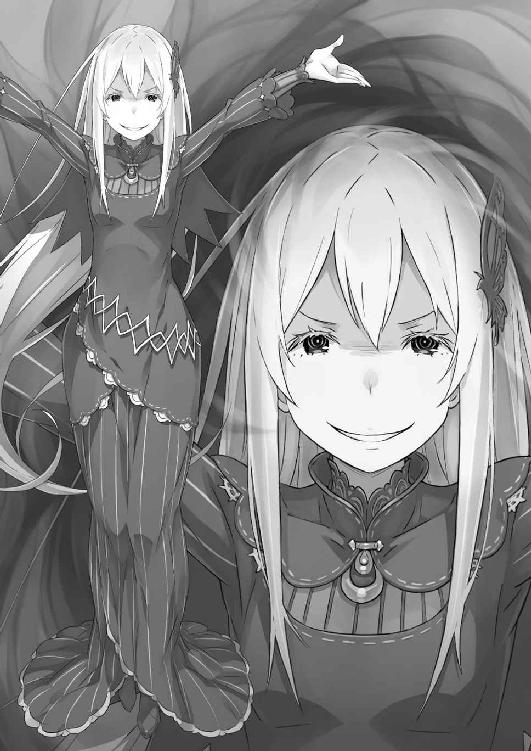

| Ｒｅ：ゼロから始める異世界生活 12<Ｒｅ：ゼロから始める異世界生活> (MF文庫J) | |
| 長月 達平 | |
| KADOKAWA / メディアファクトリー (2017) | |

Ｒｅ：ゼロから始める異世界生活 12
長月達平

本作品の全部または一部を無断で複製、転載、配信、送信したり、ホームページ上に転載したりすることを禁止します。また、本作品の内容を無断で改変、改ざん等を行うことも禁止します。
本作品購入時にご承諾いただいた規約により、有償・無償にかかわらず本作品を第三者に譲渡することはできません。
本作品を示すサムネイルなどのイメージ画像は、再ダウンロード時に予告なく変更される場合があります。
本作品の内容は、底本発行時の取材・執筆内容に基づきます。
本作品は縦書きでレイアウトされています。
また、ご覧になるリーディングシステムにより、表示の差が認められることがあります。
第一章 『らぶらぶらぶらぶらぶらぶらぶらぶらぶらぶらぶらぶらぶらぶみー』
１
響く、愛の囁きが。
鼓膜に、脳に、心に、魂に、甘く優しく響き渡っていく。
「──愛してる」
それは、くぐもった愛の囁きだった。
それは男のものか、女のものか、それすら曖昧な愛の囁きだった。
だけどそれは疑いようもなく、ナツキ・スバルだけに向けられた愛の囁きだった。
──スバルに愛を囁くのは、眼前に蠢く黒い影だ。
それは人型をしていた。それは闇色のドレスを纏っていた。それは暗黒に染まる髪を長く伸ばしていた。それは漆黒に覆われた顔でこちらを見つめていた。
その影に纏わる全てが、ナツキ・スバルの心と体を絡め取り、甘く蕩けさせていく。
「──愛してる」
思考が停滞し、呼吸すら忘れて、スバルは微動だにせず、ただ瞠目する。
肌にひりつく濃密な瘴気、影に沈んだ『聖域』の惨状。息苦しいほどの圧迫感は脅威に遭遇した小動物の如く、生気を根こそぎ失った世界に囚われている。
この世界をスバルは知っている。何度も、幾度も、苦痛と失望を味わった世界だ。
禁忌を破り、時の止まった場所で繰り広げられる魔女との邂逅で──。
「──愛してる。愛してる」
沈黙し、硬直するスバルの頰へ、影はゆっくりとその指を伸ばした。
振り払えない。動けないのは、影に抵抗を縛られているからではない。動けないのは、スバルの肉体がそれを許さないからだ。影への抵抗を、スバルの魂が放棄する。
故に、触れられた影の感触にスバルはされるがままになる。
「──愛してる。愛してる。愛してる」
影に敵意はない。害意を感じない。ただそれは、スバルに無関心なのではない。
むしろ、その逆だ。
影からスバルに注がれるのは、狂おしいほど圧倒的な執着だ。
盲目的に、偏執的に、何がそこまでと人に思わせるほどに、決して逃れられないほどにスバルを塗り潰す、狂気的な愛の熱病──影は今、スバル以外の全てに関心がない。
「──愛してる。愛してる。愛してる。愛してる」
ぐるぐると、捧げられる愛の囁きが頭蓋の中で渦を巻く。
鼓膜が愛に搔き回され、脳が愛に溺れてゆき、心が愛で満杯になれば、魂が愛によってぐずぐずに煮崩れる。それは愛の暴威、愛の戮殺、愛の凌辱だった。
「──愛してる。愛してる。愛してる。愛してる。愛してる愛してる愛してる愛してる愛してる愛してる愛してる愛してる愛してる愛してる愛してる愛してる愛してる愛してる」
愛がスバルを支配する。愛がスバルを虜にする。愛が、スバルの愛を奪い尽くし──、
「──っざけてんじゃァねェぞ、コラァ!!」
次の瞬間、愛し合うスバルと影の間に凄まじい破壊が割り込んだ。
破壊は一直線に影に激突し、黒く染まる大地を破砕する。闇色の爆風が吹き荒れ、すぐ間近で衝撃を浴びたスバルは後ろへ吹き飛ばされた。
「うおぁ──!?」
硬い地面を転がり、スバルは墓所の古びた壁にぶつかってようやく止まる。頭を振って顔を上げれば、直前まで異常な熱病に囚われていた心が唐突に解放された。
ノイズだらけの思考がほどけ、何があったのかと目を押し開く。そこへ──、
「──状況最悪だぜ、オイ。動けッかよォ、てめェ」
声がかかる。じりじりと後退り、影に相対するのは矮軀に金髪の後ろ姿だ。
口調は荒々しく、身に纏う闘気は猛々しく。姿勢を低くし、牙を剝くその姿には見覚えがあった。見覚えがあるからこそ、スバルは激しく動揺する。
その人物がここで、スバルを庇って立つことなど想像がつかなくて。
「なんで、お前が俺を、ガーフィール......っ」
「あァ？ この状況で笑わッせんな。ついでにゃ違いねェが、拾わねェわけにいくかよ」
驚愕するスバルに、煩わしげに応じた青年──ガーフィールだ。彼は眼前の影を警戒したまま、へたり込むスバルの襟首を摑んできた。そして、
「跳ぶぜ。首が折れッかもしれねェが、根性でッ耐えろや！」
「根性でどうにかなる問題じゃ──っ!?」
反論の真っ只中、膝をたわめたガーフィールの体が急上昇、「ぐえ！」と苦鳴を上げるスバルごと一気に宙へ逃れ──直後、膨れ上がる大地で影が爆発する。
爆発的に質量を増す黒影が波となり、飛び退く二人を押し潰さんと迫った。黒い波は周囲の影を吞み込み、勢力を拡大しながらおぞましい破壊を撒き散らす。
その猛威に森も、住居も、魔女の墓所さえも区別なく、根こそぎ巻き込まれる。
「舌ァ、嚙むんじゃァねェぞ!!」
この世の終わりのような光景にスバルは絶句、しかしガーフィールは怯まない。
本能の訴えに従い、ガーフィールはまだ波に吞まれていない足場を求めて跳躍する。影にぬかるむ大地を砕き、樹木を蹴りつけ、跳躍、跳躍、跳躍──、
「らァ！ るァ！ おらァ──ッ！」
波打つ黒影に森が薙がれ、捲れ上がる大地を漆黒が塗り潰し、見渡す限りの世界が大いなる影の侵食に吞まれて沈んだ。──だが、ガーフィールは辿り着いた。
『聖域』にある集落、その端に取り残されていた石造りの家屋だ。その屋根に飛び移ったところで、ガーフィールはスバルを放り出し、荒い息をつく。
「あァ、クソッ！ ざけやがって、あの野郎......ッ」
「た、助けてくれてありがとよ......」
「んだァ？ 礼言う奴の面じゃねェぞ。文句でもあんのッかよォ、オイ」
悪態をつくガーフィールが、屋根に這いつくばるスバルに牙を剝く。その闇に浮かぶ獰猛な形相を見上げ、スバルも複雑な心境に顔をしかめた。
「文句、なんかねぇ......よ。ただ、お前が俺を助けるとは思わなかったから......」
「ハッ！ 薄情者扱いしてくれッじゃねェか。『ティレオスの薔薇騎士に揺り籠は不要』ってか？ 気にッ食わねェならあっちの胸に飛び込んでこいや」
「悪ぃが、飛び込む胸は決めてあるから遠慮する」
口の減らないガーフィールに吐息し、スバルは自分の胸にそっと手を当てた。
弾む心臓、状況の不可解さもさることながら、スバルは別の要因──ガーフィールに救われたことに、殊の外大きく動揺していた。
何故ならスバルにとって、ガーフィールは『聖域』最大の敵だったはずなのだから。
前周回のガーフィールは、『試練』に臨むと宣言したスバルを監禁し、その逃亡を手助けしたラムやオットー、アーラム村の人々をその牙に、爪にかけた。
あの怒りを忘れない。決して許さない。打破すべき仇敵の一人と定めたはずだった。
なのに何故、今度のガーフィールはスバルを助けようなどとするのか。
「ガーフィール、お前は俺のことを......」
「何度も言わッせんな。状況が見えてねェのか？ 俺様とてめェの話なんざどうでもいいだろォが。今、大事なのはあれの首を嚙み千切る方法だ。それッだけだ」
なおも追及しようとしたスバルを、ガーフィールが静かな声で撥ね退ける。
その冷静な声音に、しかしスバルはこれまでで最大級の怖気を覚えた。そして遅きに失してようやく気付く。ガーフィールの、その緑翠の瞳に宿る赫炎に。
憤怒、激怒、嚇怒──そんな言葉が生易しく思えるほどに激しく焼け付く激情。
それを抱くガーフィールに、スバルはようやく聞くべき言葉を見つけ出す。
「──ガーフィール。他の、ラムたちは、どうした」
「────」
「俺が墓所から出たときには、辺り一面が影に吞み込まれてた。お前はこうしてピンピンしてる。でも、他の人たちは......」
「......影の中だ」
否定してほしくて言葉を重ねたスバルに、告げられたのは残酷な答えだった。
息を吞むスバルに、ガーフィールは悔しげに喉を唸らせると、
「いきなりだ。何もッかもなァ。気付いたときにゃァ地面はそっくり影に染まってた。ラムが風で飛ばしてくれなきゃ、俺様も吞まれッちまってただろォよ」
「......そのまま、ラムは吞まれたってのか？ リューズさんや、オットーも？」
「あァ、そォだ。ババアも、うるせェ兄ちゃんもいっぺんにだ」
「エミリアも、か......？」
「────」
震えるスバルの問いかけに、ガーフィールは答えない。それが、答えだ。
眼下、影は怪しげに蠢き、なおも『聖域』への侵食を続けている。森の背丈が低くなる光景に啞然とし、スバルは規格外の脅威に呼吸を忘れた。
全てを吞み込む漆黒、あの闇に吞まれたものの末路はどうなるのか。ただ、あの中で眠っているなんて、そんな希望はあれを目にすれば即座に潰える。
影に吞まれたものたちの生存は、絶望的としか思えなかった。
「なん、なんだよ、あれは......なんで、こんなタイミングで......」
──『腸狩り』、『魔獣使い』、『大兎』、そしてガーフィール。
降りかかるそれらの脅威に抗うために、スバルは墓所を飛び出した。エキドナの協力も得られて、どんな障害も乗り越え、突破してみせると心に決めたつもりだ。
その覚悟が、こんなわけのわからないものに阻まれることになるとも知らずに。
「どうして、こんなところに......ッ」
あまりの理不尽に、スバルは渦巻く影の中心を睨む。あらん限りの声で、叫んだ。
「どうして、ここにいやがるんだ──『嫉妬の魔女』!!」
何度も、その名前を耳にした。その存在を感じたことも幾度もあった。
世界中に語り継がれる最悪の災厄、スバルを苦しめるその元凶。ありとあらゆる、諸悪の根源──『嫉妬の魔女』こそが、エミリアたちを吞み込んだ影の正体なのだ。
「考えろ。考えろ考えろ考えろ。あれを何とかしねぇと、何とかして倒して......」
鈍い頭を殴りつけ、スバルは必死に勝機を探る。影を退け、闇に吞まれた『聖域』を取り戻さなくては──『何のために？ すでに、エミリアたちを失ったこの世界で』
「──ぁ」
内なる声に殴りつけられ、スバルの喉がか細く鳴った。
声はスバルの激情と裏腹に、ひどく冷徹な判断を下している。即ち、取り返しのつかない事態に瀕した世界への執着を嘲笑い、果断を求める冷然とした思考だ。
『この場を乗り越えて、それでどうする。続けるわけにいかない、こんな世界で』
「......野郎、追ってッきやがらねェだと」
「え......？」
思考を支配しかけた強烈な諦念を、すぐ隣にいるガーフィールの呟きが拭った。ガーフィールはスバルに応じず、鋭い翠の視線を影へ向けたまま、
「ッどころか、外向いてッやがる！ これだけやって、こっちは無視か、あァ!?」
無視される屈辱に、ガーフィールが血を吐くように咆哮する。しかし、影はこちらを意に介さず、彼の言葉通り『聖域』の外へ、森の外を目指して移動を始めていた。
あれだけ執着を見せたスバルの存在すら無視し、影は『聖域』の外へと。その行動の真意が読めず、スバルは困惑し──瞬間、稲妻に打たれたように震える。
それは突然の、根拠のない閃き。なのに、間違いない。そう断言できる確信だ。
「──屋敷、だ」
「あ？」
「屋敷だ！ あの魔女、ロズワールの屋敷にいこうとしてやがる!!」
魔女に愛を囁かれ、その愛に脳を蹂躙され、心と魂を強姦された記憶が蘇る。
あれは、スバルを愛することが目的ではなかった。──あれはスバルの内に潜り込み、スバルの執着する全てを探り、理解しようとしていたのだ。
──この世界から、スバルが愛を向ける可能性を全て奪い去り、独占するために。
「させて、たまるか......。止める、止めなきゃならねぇ......！」
『止めてどうなる』と、冷めた声が囁くのを無理やりに振り切った。
止めてどうなるなどと、止めて、止め方を見つけるに決まっている。あの魔女を打倒する術を見つけなければ。見つけることに、意味がある。止めることに、意味が。
「ガーフィール！ 奴に攻撃は!? 足を止められないのか!?」
「腑抜けが今ッさら......寝言ほざくんじゃねェ！ ここまで俺様が何発ぶち込んだと思ってッやがる。影のドレスが抜けねェんだ！ 傷一つ付きゃァがらねェよ！」
「ガーフィールでダメなら......」
あの初撃、不意打ちのはずの一撃も魔女に被害を与えられなかった。
ガーフィールの渾身が届かないとしたら、あの影のドレスは物理的な攻撃を無効化するのかもしれない。だとすれば、通じるのは魔法のみ。その第一人者は──、
「言っといてやるが、ロズワールの野郎なら探すッだけ無駄だ。この森に残ってッのは俺様とてめェ、それにあの伝説の魔女様だけだかんなァ」
「ロズワールまで!? 間違いないのか!?」
「ババアの家も、聖堂も、根こッそぎだ。野郎は頼れッねェ。俺様たちだけだ」
万全の状態には程遠くとも、ロズワールは紛れもない強者のはずだ。スバルの抱くそのイメージが、ガーフィールににべもなく切り捨てられる。
ロズワールすら太刀打ちできない、勝ち筋が浮かばない圧倒的な力。
世界の半分を吞み込み、大罪の名を冠する六人の魔女すら殺した最悪の魔女──。
「どうにも......どうにもできないのか？ あのまま、屋敷までいかせて......」
何もかも、あの影に吞み込まれて、奪われて、悪し様に踏み躙られて。
ただ絶望する以外に、スバルにできることは何もないというのか──。
「──待て」
遠ざかる魔女の姿に、スバルは奇妙な違和感を覚えた。
本当に、何の障害もないのか。本当の本当に、浮かぶ手立ては何もないのか。考えろ、思い出せ、思索しろ、記憶を揺るがせ。この場所、この場所だけにできることを。
ここは『聖域』で、あれが語り継がれる『嫉妬の魔女』そのものであるならば──、
「──結界が、ある」
「......なに？」
「結界だ！ 『聖域』の、結界に引っかかる条件は『嫉妬の魔女』も満たしてるはずだ！ 墓所の『試練』はクリアされてない。そして、あいつはハーフエルフだ！」
──『嫉妬の魔女』サテラは、銀髪のハーフエルフであったとされている。
その事実が、エミリアに人々から謂れのない差別を受け続けさせた。だが、四百年前から伝わるその特徴こそが、『嫉妬の魔女』をこの森に縛り付ける確信となる。
仮に、魔女が実体のない、思念体のような存在だったとしたら話は別だが──、
「──その心配はねェ」
確信めいた呟きにスバルが眉を上げる。その反応に、ガーフィールが牙を鳴らした。
「魔女にゃァ実体はある。今のは『バルグレンの左翼の付け根』だったじゃァねェか」
「......それは、弱点って意味でいいのか？」
「それ以外の意味があッかよォ。いいぜ。いいぜ、いいぜ、見えてッきた！」
よくぞ閃いたとばかりにスバルの肩を平手で打って、ガーフィールが獰猛に笑い、
「──ベールの下の憎たらしい面ァ拝んで、その首、食い千切ってやらァ！」
２
──『聖域』の外を目指し、『嫉妬の魔女』は影を引き連れて堂々と突き進む。
その膨大な影の軍勢を追い、スバルは木々を──ガーフィールに担がれる形で木々の上を渡り、魔女の進行方向に先回りを仕掛けていた。
「結界の効果がどれだけあるかわからねぇが、少しでも弱ってくれれば......」
ガーフィールの爪が届く。そうなれば、『嫉妬の魔女』とてただでは済まない。
それは実際に、獣化したガーフィールと相対した経験のあるスバルが抱いた確信だ。獣化したガーフィールの一撃は、説明不要の圧倒的な暴力だった。
あとは、それを確実にぶつける方法があればいい。そのためにも──、
「ガーフィール、あいつは俺に引き寄せられる。だから......」
「囮に使えなんざ言い出しッやがったら、指一本ずつ齧り取んぞ、オイ」
枝伝いに森を飛び越えながら、スバルの提案をガーフィールが嚙み砕く。取りつく島もないその態度に、スバルは一瞬鼻白んだあと、気色ばんで言い返した。
「冗談で言ってんじゃねぇ！ 結界と囮！ 確率は少しでも高く！ そうだろ!?」
「うるせェよ。物分かりが悪ィと捨ててッくぞ、てめェ」
「──ッ！ お前はわかってるはずだ！ 俺の体から、あいつを引き寄せる瘴気が......」
頑なさに業を煮やし、スバルは自分を取り巻く瘴気の存在に自ら触れる。それを論拠にすれば、ガーフィールも反論できないはず。だが──、
「ババアも！ ラムも！ 他の連中も、目の前で全員吞まれて......！」
「──っ」
「その上、てめェまで野郎にくれてやるなんて恥晒しができッか！ 『パララグララの爪痕は消えない』！ 絶対に、絶ッ対に御免だ！ 爪痕は魔女の心臓に刻んでやるッ!!」
血走った目で激情を吐き出し、ガーフィールは頑として提案を撥ね退けた。
──ガーフィールの怒り、それは意地だ。それも、つまらない類の意地だった。
スバルの内なる声、冷めた部分がその意地を『くだらない』と吐き捨てるのがわかる。しかし、それとは別のスバルには、ガーフィールを笑えなかった。
だって、出遅れたスバルと違い、ガーフィールは直接その目に見たはずなのだ。
──ラムが、リューズが、親しい人々が、影に吞まれて消えるのを。
だが、そうして大切な人を軒並み奪われても、ガーフィールは復讐を理由に良識をかなぐり捨てたりしない。スバルを犠牲に、勝利をもぎ取ろうとは言い出さない。
それがガーフィールの内に根付く、理性や信念がそうさせているのだとしたら──、
「なのに、どうしてお前はみんなをあんな風に......」
あれほど残酷に、勇敢な村人たちを、スバルを庇ったオットーを、殺したのか。
奪われることの痛みを、失うことの悲しみを、ガーフィールも知っているのに。
「──ついたぜ」
問いの答えを得られないまま、二人は目的地へと辿り着いた。
決戦場に選ばれたのは、森の中でわずかに開けただけの空間だ。頭上には丸く森の切れ間があり、欠けた月と星々だけが『嫉妬の魔女』の復活劇の見届け人となる。
背後に結界を、そして正面から蠢く影が押し寄せる気配を感じる。一直線に、こちらへ向かってくる魔女、あとはそれを迎え撃つだけ──ただ、問題がある。
「ガーフィール、結界に引っかかるのはお前も同じはずだ。それはどうする」
亜人との混血、ハーフは森の結界を抜けられない。その点ではガーフィールも魔女と条件は同じだ。魔女が弱体化しようと、彼も弱くなっては意味がない。
その懸念に対し、ガーフィールは腰巻きから何かを取り出した。それは──、
「......輝石？ お前の、か？」
「うだッうだ説明してやる義理はねェ。黙って見てろ。てめェの囮も心配も必要ねェってこと、起きて早々に魔女が寝かしつけッられッとこをなァ」
青く煌めく輝石──この『聖域』を取り巻く事情の中、何度も目にした輝きだ。
初めはフレデリカに持たされ、ガーフィールも同じものを持つと知り、これまでの周回で何度か持ち主を転々とした輝石。その詳細は今もわかっていないが──、
「──！ 誰だ!?」
草を踏む微かな足音に、スバルはとっさに振り返る。魔女ではない。方角もプレッシャーも、あれとは違いすぎる。しかし、それは警戒をほどく理由にはならない。
「......は？」
なのに、それを目にした途端、スバルの警戒は驚愕に塗り替えられていた。
「────」
──茂みを搔き分け、二人の下に姿を現したのは、幼い少女だった。
見覚えのある、少女だ。長い薄紅の髪に、白の貫頭衣だけを纏ったラフな格好。常人より少しだけ耳が長く、その特徴にも見覚えがありすぎた。
それは『聖域』の代表、影に吞まれたはずのリューズその人だったのだから。
だが、リューズではありえない。それは、次なる光景が否定する。
「何の、冗談だよ......」
ぞろぞろと、裸足のまま草を踏む人影が茂みを抜けてくる。次々と現れるそれらは一様に同じ服、同じ表情、同じ態度で──否、全員が同じ姿形をしていた。
四方の茂みから現れたのは、二十名以上もいるリューズと瓜二つの少女だった。
「────」
大勢の、リューズと同じ顔をした少女たちは無言だ。何一つ語らず、表情も変えずに少女たちは集まり、ガーフィールの背後に雑然と並び立つ。
壮観などとは到底言えない。まさしく出来の悪い夢のような光景だ。
「できりゃァ見せッたくなかったけどなァ」
衝撃に打たれるスバルと違い、苦々しくこぼすガーフィールに驚きはない。彼にとってこれは、驚くに値しない光景なのだ。そして最初の驚きを通り越したところでスバルも気付く。この中の一人と自分には、おそらく面識があるのだと。
「......ここにきて、いきなり森に飛ばされたときの」
それは初めて『聖域』を訪れた際、スバルが体験した転移直後のことだ。
結界に輝石が反応し、スバルは石の力で森へ飛ばされた。そうしてエミリアたちとはぐれたスバルを墓所に導いてくれたのが、リューズと瓜二つの少女──ラムに、出会ったことを隠すように忠告された、エルフと思しき少女だったのだ。
今この瞬間まで、スバルはその少女を記憶の片隅に追いやっていた。だが、こうして思わぬ再会を迎えて初めて、その存在を見過ごしたことは間違いだったと認識する。
無言で佇む、人形のような少女──否、少女たちの存在は、明らかに異質だった。
「まさか、クローン？ 複製体......？ そんなこと、ありえんのか......？」
少女たちの姿に、スバルの脳裏をそんな単語が浮かび上がる。
それらはＳＦを題材とした物語では馴染み深い単語だが、剣と魔法が支配するこの世界にはあまりに似つかわしくない。第一、そんな技術、誰が再現できるのか──、
「──あれこれ考えてッとこ悪ィが、時間だ」
混乱するスバルの肩を押しやり、ガーフィールが森の方へと向き直る。迫るプレッシャーに背中の産毛が逆立ち、スバルは森と少女たちを交互に見た。
「ガーフィール！ お前の策ってのは......」
「数でこじ開けてぶっ潰す。『レイドはいつでも真っ向勝負』ってなァ」
胸の前で両の拳を合わせ、ガーフィールが単純明快な策を披露する。ひねりはないが、それ故に反論の余地のない最適解。──ただし、犠牲を前提とした作戦だ。
「こいッつらのこたァ気にすんな。ババアとは違ェよ。中身が空っぽだかんな。それでも俺様の指示には従う。──隙間こじ開けて、首もいでやらァ」
作戦に異議を唱える間も、少女たち──複製体のことを問い質す時間もない。
「......てめェには、先に悪ィって言っとくぜ」
ただ、スバルを戦場の奥へ押しやる直前、ガーフィールはそれだけ言い残した。
その意味がわからないまま、戦闘力のないスバルは戦場の最後尾に送られた。陣形は先頭にガーフィール、その後ろに二十人もの複製体が並び、一番後ろにスバルだ。
そうして陣形が定まり、不気味な静寂に息遣いと心音だけがしばらく続いて。
──それはゆっくりと、世界を侵しながら姿を現した。
眼前で森が殺されていく。おびただしい量の影に吞まれ、木々は形を失い、水に沈むように痕跡を消し、『木』や『森』といった存在そのものが『影』に汚染される。
それは存在の冒瀆だ。それは存在の凌辱だ。それは、存在の殺戮だった。
愛で世界を塗り潰す『魔女』、それが進路に立つ『スバル』を見つける。
そして──、
「──愛してる」
止まらない嫌悪感、本能が危険だと激しく警鐘を打ち鳴らし続ける。魔女はたった一言、ガーフィールもリューズの集団も飛び越え、ただスバルだけに愛を囁く。
この瞬間、魔女の興味関心の全てはスバルにだけ注がれて──、
「──ガッァァァァァ!!」
──その唯一の勝機にガーフィールが吠えた。
直後、大地が爆ぜる。粉塵を巻き、弾かれるようにガーフィールが飛び出した。
大口を開け、牙を剝き出しながら影へ突っ込むガーフィール。その全身が見る間に肥大化し、肉体の膨張に耐えかねた着衣が内側から破れる。全身を金毛が覆い、四肢が獣爪を備えたものへ変貌──それは、許し難き猛獣、大虎ガーフィールの顕現だ。
「──ッ!!」
咆哮する猛虎、その速度は常軌を逸していた。
凶獣の身のこなしに変化はなく、何らかの方法でガーフィールは結界の効果を無効化している。故に憂いなく躊躇いなく、その牙は漆黒のドレスを嚙み千切り──、
「────」
──瞬間、跳躍する大虎を魔女の足下、そこから伸びる影が絡め取った。
影は大虎の四肢を縛り、勢いを殺されて唸る凶獣を拘束する。スバルの腰ほどもある太い四肢に影が食い込み、肉の千切れる音と血煙が噴いた。
絶叫が上がる。猛然と暴れるその体を影が絞り、無惨に大虎が引き裂かれる。
「──あー」
そこへ飛び込んだのは、割り込めない戦いに目を見張るスバルではなく、ガーフィールが呼び寄せ、待機させていたリューズの複製体たちだった。
無感情に知性のない声を漏らし、幼い少女たちが一斉に影に向かって走り出す。意外なほど素早く、影に囚われる大虎を追い越し、棒立ちする魔女へ接近した。
両腕を広げ、魔女に抱き着くように二人の少女が飛び込む。だが、それも直前で噴出する影が槍となり、少女の腹部を貫いて宙に縫い止める。
四肢を縛られるガーフィールと、腹部を貫かれる同じ顔をした二人の少女。それが同じ高さに並べられ、まるで嘲るように影が左右へとゆっくり揺れる。
悪辣すぎる趣向、しかしそれは魔女の余裕が犯した失策だった。
変化の予兆は一瞬──だが、起きた変化はそれこそ苛烈にして壮大だ。
「な──!?」
胴を貫かれる二体のリューズ、それが青白く発光し、次の瞬間に光を放って爆散した。
粉々になる肉体は光の粒子となり、周囲にあった影はその衝撃に吹き飛ばされる。闇色に染まる世界が一瞬だけ息を吹き返し、その光の炸裂は立て続けに連鎖した。
吹き飛んだ二体に続いて、残る複製体も一斉に魔女へ吶喊、自爆特攻を敢行する。
その存在を核とした特攻に、魔女の影を退ける効果があったことは実証された。故に魔女も迫る少女たちに対し、躊躇なく影を差し向け、迎撃に出る。
湧き上がる影、それは取り囲む少女たちを圧殺せんと分裂する。鋭い影は一人に対して五本、百に近い影が瞬く間に荒れ狂い、回避行動を取る少女たちを蹂躙した。
影は頭蓋を、胴体を、下腹部を、貫き、切り裂き、少女を斬殺していく。
飛びかかる時間差、多方向からの同時攻撃、打てる小細工の全てを真っ向から潰され、一拍を置いてリューズたちが次々と青白い光となって爆散──魔女の生み出した影が一時的に薄れ、漆黒のドレスへの道がこじ開けられる。そこへ──、
「──ルルルルルルァァァァァ!!」
こじ開けた隙間を強引に広げ、満身創痍の凶獣が体をねじ込んだ。
複製体の特攻の間に影の束縛を逃れ、地に伏せていた猛獣は青い光の炸裂した直後、その光を突き破るように吶喊、魔女へその獣爪を振り上げた。
「────」
暴風と化した大虎に、魔女は少ない影を束ねて壁を作る。が、大虎は影の防壁に腕を振るい、その前足に引っかけていた人影──最後の複製体を叩きつけ、自らの腕ごと防壁を爆砕、青白い光を突き抜け、牙と爪が影のドレスに突き刺さる。
──取った、とスバルも確信するほど完璧な組み立てだった。
リューズの複製体二十一体、惜しみなく消耗しての自爆特攻。
その犠牲を払って叩き込まれる一撃に、たとえ『嫉妬の魔女』であっても──、
「──愛してる」
縋りつくようなスバルの確信は、弾けて血煙となったガーフィール共々砕かれた。
３
金色の大虎が弾けるのを、スバルは声もなく見届けていた。
爪が魔女の胴体を引き裂き、牙が頭部を嚙み砕く瞬間だった。獣の殺意は人体など容易く粉砕し、さしもの魔女も耐えようがなかった。──届いてさえいれば。
ガーフィールの命を奪ったのは、四肢の傷から潜り込んだ影の刃だ。初撃でガーフィールを拘束した影が、傷口から体内を駆け巡り、ズタズタに切り裂いていった。
つまり、ガーフィールは最初に殺されていたのだ。執拗なまでに、命を切り刻まれて。
その残酷さに、言葉が出ない。ガーフィールだったものは肉片となり、黒く染まる大地に無惨に飛び散った。それすらすぐ影に吞まれ、彼の存在の痕跡は消失する。リューズの複製体も残らず消滅し、そこには魔女とスバルの二人しか──否、
「──愛してる」
最初から、魔女の眼中には立ち尽くすスバル以外は入っていなかった。
斬殺したガーフィールも、虐殺したリューズの複製体たちも、知らぬ間に影に吞み込まれただろう『聖域』の人々もアーラム村の人々も、ラムも、オットーも、リューズも、ロズワールも、パトラッシュも、エミリアも──何もかも、ついでなのだ。
「──愛してる」
「うるせぇ」
「愛してる愛してる愛してる愛してる愛してる愛してる愛してる」
「うるせぇって、言ってんだよ......！」
広場を乗り越え、立ち尽くすスバルの下へ、魔女は影で編んだ道を歩んでくる。
その輪郭がぼやける。背丈すらもわからない。声も変わらず判然としない。
なのに粘つく熱情だけは、忌々しいほどにスバルの心を無遠慮に弄ってくるのだ。
「愛してる愛してる愛してる愛してる愛してる愛してる愛してる愛してる愛してる」
動かずにいるスバルに、魔女は呪いのように愛を囁き続ける。
その場違いさと空気の読めなさはスバル以上だ。これほど、愛を囁かれる相手が怒りの形相をしていてなお、独りよがりの愛を押し付けがましく差し出してくる。
その愛がおぞましい。そして何より、今のスバルを激昂させたのは──、
「愛してる愛してる愛してる愛してる愛してる愛してる。──スバルくん」
「──その呼び方で俺を呼ぶんじゃねぇよ!!」
愛に蕩けた甘やかな呼びかけに、スバルは心底から激発する。
惚けた声が、愛おしげな仕草が、熱病に浮かされた呼び方が、スバルの逆鱗に触れた。
「誰がお前に、俺をそう呼ぶことを許した!? ふざけるな！ ふざけるんじゃねぇ！」
すぐ隣に在る誇らしさを、呼びかけ一つに込めた信頼を、互いを認めた愛おしさを。
その呼び方に愛を込めることをスバルが許すのは、この世でたった一人だけだ。
「冗談じゃねぇ！ それはただ一人だけのもんだ。誰にも......いいや！ 俺がお前に許してやるもんなんざ、髪の毛一本、細胞一片、もったいなくてくれてやれねぇよ──!!」
激昂し、怒りに任せ、スバルは胸中に渦巻く感情を容赦なく叩きつける。
勝ち目などない。生き残る目もない。そも、生き残る理由もこの世界にない。
だとしても、いいように絆を踏み躙られることを見過ごすことなど、絶対できない。
「愛してる愛してる愛してる愛してる」
愛は、やまない。だからスバルもまた、絶対にその愛に応えない。
「この世界で、俺が本気で初めてもらった『愛してる』は......どうしようもないクズ野郎が、英雄になってやろうって思えるぐらいパワーがあったぜ」
へし折れて、ねじ曲がって、逃げ出そうとしたクズが、真っ向から抗うことを諦めそうになった未来に、もう一度、何度でも、挑んでいいのだと信じられるほどに。
比べることすら侮辱的なぐらい、魔女の愛とは中身に詰まったものが違うのだ。
「愛してる愛してる愛してる愛してる愛してる愛してる愛してる愛してる」
「俺の心の一番と二番はとっくに埋まって譲らねぇ。お前の入る隙間なんかねぇよ」
売り言葉に買い言葉──抑揚すらない愛の羅列に、スバルは凶悪に面貌を歪める。
「お前の愛なんて丸めて捨ててやる。お前と比べるぐらいなら......」
攻撃手段はない。だが、口撃手段はある。他人の神経を逆撫でするのは大得意だ。
何を言えば、何を言うべきか、何が一番、この魔女の逆鱗に触れられるのか。他人の癇に障ることに関しては右に出るもののいないスバルだ。わかっている。
故にスバルは酷薄に嗤い、蔑むような目を魔女に向けた。
「──同じ魔女でも、エキドナたちの方がまだ愛せる」
「────」
言い放った瞬間、呪言のような魔女の愛が初めて止まった。
そして──、
「──ぉ」
スバルの視界が、世界が、一瞬で、影に吞まれた。
４
「愛してる。愛してる。愛してる。愛してる。──愛して」
黒の中で、声が、聞こえた。
影に吞まれ、天地が逆さまになり、振り回されて振り回されて。
体だけでなく、頭の中身まで搔き回されて、ナツキ・スバルが影に撹拌されていく。
そんな中で、ナツキ・スバルをぐずぐずに溶かす影の中に、囁きが聞こえる。
「愛して。愛して。愛して。愛して。愛して愛して愛して愛して愛して愛して愛して愛して愛して愛して愛して愛して愛して愛して愛して愛して愛して愛して愛して愛して愛して愛して愛して愛して愛して愛して愛して愛して愛して愛して愛して愛して──愛して」
怖気立つ。快楽に震える。恐怖に怯えた。歓喜に涙した。憤激に血を吐く。快哉を叫んだ。感情が、ぶつ切りに、跳ね回り、正当性を失い、あべこべに──。
「────」
影に肉体が溶け、ナツキ・スバルの境界が曖昧になっていくのがわかる。何故、わかるのか。わかるのはナツキ・スバルか、それとも別の何かなのか。
「────」
影の中に、囁かれる愛とは別の何かの存在を感じる。──否、感じない。それは別の何かではない。スバルだ。ナツキ・スバルなのだ。混ざって、溶け合って、一塊になってしまえば、そこに他者との境はない。吞まれた全てが、ナツキ・スバルとなる。
温もりがあり、悲しみがあり、憎しみがあり、慈しみがあり、落胆があり、狂喜があり、失望があり、安堵があり、嘆きがあり、満足があった。
そう、満足があった。多くの絶望が、多くの悲嘆が、その中に、満足もあった。
その満足も、スバルの一部だ。それがナツキ・スバルを満たせるなら、それに──。
「──？」
満足に手を伸ばす──否、手はない。体はどこにもない──否、そんなことはない。体は影に吞まれ、なおもそこにある。溶けたのは心、溶けたのは意識、溶けたのはナツキ・スバルの魂。それを搔き集める。搔き集めて、搔き集めた理由を理解する。
熱が、あった。ナツキ・スバルに戻る最中、熱を感じた。それは仮初の満足とは全く異なる場所に、伸ばそうとした腕に、右腕に、手首に。それは──、
──闇色の世界でも鮮やかに輝く、祈りを込められたハンカチだった。
５
──意識が、浮上する。
水面へ酸素を求めて喘ぐように、闇を必死に搔いて、上へ、上へ、ただ必死に。
闇は意識に纏わりつく。まるで沼に沈み込んだように。その重みに、倦怠に、心を侵されそうになりながら、なおもスバルは懸命に──。
足搔いた先に、視界が唐突に開ける。現世に、スバルの意識が浮上する。
影の世界からの生還──だがそれは、決して窮地を逃れられたわけではない。
「は、ぁ......っ。はぁ......ぁ？」
呼吸が拙い。喉に何かが、影が詰まっている。地に足はついていない。影に縛られ、体は斜めに傾いて宙に吊り上げられていた。動けない。動かれない。
ただ、右手首に巻かれたハンカチに、縋りつくように左手で触れていた。
「......ペトラの、ハンカチ」
影に世界を覆われ、スバルの視界は闇色に染まりつつある。そんな漆黒の中にあって、ペトラのハンカチだけは眩く、闇を払うように白く光り輝いていた。
ペトラのハンカチに込めた想いが、スバルにこの奇跡を与えてくれた。──とは、さすがに考えにくい。スバルを救った小細工、その犯人の心当たりは別にある。
──別れ際にハンカチに触れて、意味深な言葉を残した『強欲の魔女』だ。
「エキドナの、奴......こうなるって、わかって、やがったのか......」
『保険だよ、保険』とでも言いたげな魔女の顔が脳裏に浮かんだ。その心なしか自慢げな魔女の顔に、今だけはお世辞抜きに感謝する。
この光がなければ、スバルは影に吞まれ、跡形もなく消えていたはずだ。
あの影の中で何が起きていたのか。──あれは混濁だ。影に、スバルの存在が溶け出した。溶けて、混ざろうとしたのだ。影に吞まれた、ありとあらゆるものたちと。
──魔女が影に吞み込んだ全てと、あらゆるものと混ざりかけたのだ。
どろどろに溶けた先達と一つになりかけて、スバルはあまりに多くの感情に晒された。自分のものではない感情、感覚、記憶、知識が、流れ込む。それらは自分が既知であることが当然であるように、我が物顔で肉体に、心に、魂に、刻み込まれるのだ。
間一髪、だった。コンマ数秒の命拾いをした。あの影に吞まれるのは『死』ではない。ナツキ・スバルが別の何かに搔き混ぜられ、一緒くたにされて消える。
それは『死に戻り』にすら取り戻せない、あってはならない敗北だった。
エキドナの助力がなければ、スバルはあの影の抱擁から抜け出せずに終わっていた。それが実感できるから、掛け値なしに魔女に感謝したい。
「ぐ、う、あ......」
だが、エキドナの助力によって得られた猶予も、そこまでだ。
ずぶずぶと、スバルの体が再び影に吞まれていく。下半身から地面に沈むように、先ほどよりも慎重に、少しずつ消化するように、魔女はスバルを影へ浸していく。
徐々に自分が失われていく。そこに喪失感だけでなく、安堵があるのが恐ろしい。
安堵があるのだ。吞まれ、拡散し、消えゆく運命の果てに、喜びがある。
故に確信できた。影に吞まれれば死ぬことはできない。永遠に、『愛され続ける』と。
「ち、くしょう......」
光が、魔女が作ってくれた十数秒、しかしこの猶予にスバルの命は救えない。
取り込まれ、消えるまでのわずかな時間だ。ここに、エキドナは何を望んだのか。
「あ、の......クソ魔女......ッ」
その結論に達した瞬間、スバルは直前の感謝を投げ捨て、左手で光を毟り取った。
闇を払い、影に吞まれるスバルを救った光の一助──ここに、エキドナの望みがある。エキドナの狙いがある。エキドナが、スバルに託した『手段』があった。
これは、命綱だ。スバルを救うのではなく、『死』に落とすための、命綱なのだ。
「────」
悲壮な覚悟を察したように、光はその形を変え、輝く短剣へと変化する。
ご丁寧に、ハンカチ一枚でやり遂げるのは難しかろうと、その配慮に涙が出そうだ。
ただし、涙は涙でも、流れるのは血の涙だが。
目をつむり、息を吐く──その勢いで、光の短剣を自分の喉へと突き立てた。
「──ぎ」
切れ味不明の光の刃があっさりと喉笛を突き破る。致命傷に血が逆流し、喉から肺へと流れ込んで意識が溺れ始める。
──光の御守りは武器ではない。エキドナは、自害のためにこれを持たせたのだ。
十数秒の猶予はそのため、気付くための、実行するための、『死に戻り』するための。
エキドナはおそらく、墓所の外に『嫉妬の魔女』が現れることを予期していた。それが如何なる理由かは不明だが、その対価はスバルの命で支払われる。
「──！」
スバルの自害に、『嫉妬の魔女』が初めて、愛以外の何かを叫んだ。
しかし、自分の血に溺れ、意識をすでに手放しつつあるスバルにはそれがわからない。
ただ、自然と、影に覆われた魔女の顔に手を伸ばした。それが正しいと、思った。
光の短剣を取り落とし、わずかに光の残滓があるだけの指で、影のベールに触れる。
ベールがほどけ、影に隠れていた魔女の顔が半分だけ露わになった。
宝石のような紫紺の瞳、月光の如く煌めく銀色の髪、見慣れた愛おしい顔貌──。
それが悲痛に歪むのが見えて、驚くよりも胸が痛んだ。悲しみに、胸を突かれた。
溢れる血が喉を満たして、まともに言葉を作れないけれど。
それでも、目の前の少女に。悲しみ、涙を流す少女に、告げる。
「俺が、必ず──」
──お前を、救ってみせる。
告げた瞬間、ナツキ・スバルは命を落とした。
６
『死』を跨いで訪れる最初の現実は、苦い土埃の味をしていた。
「──う、げっ」
咳き込み、土臭い異物を唾と一緒に吐き出す。それから上体を起こし、スバルは自分が床に倒れていたことと、そこが暗く冷たい空間であることを確認した。
薄ぼんやりと青く光る石壁、不安になるぐらいの静寂──墓所の中、だ。
「戻って、これ、た......」
顔の前で両手を開閉し、スバルは渇き切った声で『死に戻り』の成否を実感する。
直前の記憶は鮮明だ。影に吞まれかけ、自決したことも。──喉の、凄絶な痛みも。
「自殺した甲斐はあった、か......」
鋭い感触が喉を穿った感覚、抉られた喉仏に触れて、スバルは長く息を吐く。
自分の血で溺れる苦しみ、遠のいていく意識と喪失感。それは何度味わった『死』であっても色褪せることはない。何度、何回味わおうと、『死』は受け入れ難いままだ。
『死』は怖い。『死』は恐ろしい。痛いことも、辛いことも、それでも──、
「それでも、失くしたまま......戻ってこられないより、ずっとマシなんだ......！」
戻ることを選べた。あの場で躊躇わずに『死』を選べた。
これでまだ、スバルは戦える。抗える。未来を勝ち取るために、戦える。
「なのに、死ねたぐらいで感動してんじゃねぇよ......まだ、やることがあるだろ、俺」
やるべきことを見つめ直し、スバルは心音を落ち着かせながら振り返る。舞い戻った墓所、スバルのすぐ傍らに銀髪の少女が倒れている。
ここは墓所、『死に戻り』の出発点──エミリアが、己の過去にうなされ続けている。
その細い肩を揺すり、目覚めさせてあげなくてはならない。辛い思いを重ねなくてもいいのだと、優しく抱き留めること。それが、スバルが最初にするべきことだ。
だからスバルは、苦しげに喘ぐエミリアにそっと手を伸ばして──、
「......なんだ？」
エミリアに触れようとした指が、微かに震えていた。
何事かと訝しみ、指の震えを止めようとする。しかし、震えを自覚した指先はスバルの意思を無視し、むしろ震えを増していた。それだけではない。
カチカチと、奇妙な音が石室に反響する。耳障りな音、震える指先、スバルはいったい何が起きているのかと混乱し、遅れて理解する。
鳴っているのはスバルの歯だ。嚙み合わず、カチカチと惨めに、顎が震えている。
まるでスバルの臆病を嘲笑うように。指は震え、歯はカチカチと鳴り続ける。
──その震えの原因は、暴かれた影のベール、その向こうに見えた顔だ。
「なに、震えてんだ......俺は、まさか、エミリアを......」
怖がっているのか、と続けられなかった。誰より、自分でわかっていた。
『死に戻り』する直前に見た、魔女の顔──それは、エミリアと同じ顔をしていた。そのときの恐怖を、魔女への恐れを、『死』を跨いだ今も引きずっている。
エミリアは『嫉妬の魔女』ではない。そんな当たり前のことを魂が忘れるほどに。
「あんな、馬鹿な仕掛け......わかって、わかってるはずだろ、俺は......！」
突然の復活劇、それが何を切っ掛けにしたものだったのかスバルにはわからない。
しかし、あの魔女の姿形には心当たりがある。思い当たる可能性がある。
魔女はおそらく、エミリアの肉体に憑依する形で『聖域』に顕現していたのだ。
大罪司教のペテルギウスは、他人の体に憑依する邪精霊だった。あの狂人を知るスバルには、他者に魔女が乗り移った可能性をすんなり受け入れることができる。
何よりそう考えれば、ガーフィールの意味深な態度の数々にも説明がつくのだ。
結界を利用する作戦で、ガーフィールは魔女に実体があることを確信していた。魔女との決戦を目前に、スバルに「先に謝る」と言い残したことも記憶に鮮明だ。
つまり、ガーフィールはエミリアが魔女に憑依されるところを見たのだ。だからエミリアの生死を明言せず、依り代となった彼女ごと魔女を倒すことをスバルに詫びた。
説明がつく。説明がついた。それだけのことだ。それだけの話ではないか。エミリアには何の関係もない。彼女に落ち度なんてない。怖がる必要だって──、
『──白々しい噓をつくのはやめろ』と、内なる自分が冷たく吐き捨てていた。
白々しい、噓。内なる自分の言葉に、スバルは欺瞞を自覚した。エミリアを恐れてなどいない。それは事実だ。だが、そのことと魔女への恐怖は、別次元にあった。
スバルの抱く恐怖──魔女は、『死に戻り』したスバルを見逃してくれるのか、だ。
「────」
──スバルを『死に戻り』させているのは、『嫉妬の魔女』の力である。
それがスバルの見解であり、エキドナもこの意見に同意している。そして、このことからわかるのは、『嫉妬の魔女』には時間を遡る力があるということだ。
ならば、スバルを『死に戻り』させる力を自らに適用し、同じように時を遡ってくることは考えられないだろうか。
それをしないとも、できないともスバルには断言できない。その可能性に怖気づく。
答えは出ない。──代わりに、答えは目の前で横になっている。
「────」
エミリアに触れて、彼女の目を覚ませば全てがはっきりする。
瞼を開けたエミリアが、いつものように柔らかく微笑んでくれれば何もかも杞憂だ。
だがもしも、それが叶わなかったとしたら──、
「──えみ、りあ」
救いを求めていたのか、救ってあげたいと思ったのか、もうそれすらもわからない。
ただ、呼びかけた声と、頰に触れた指が震えていなかったことだけは奇跡に思えた。
「────」
白い頰が、触れた指先に溶けそうなほどの熱を伝える。長い睫毛が微かに震え、伏せられていた瞳に光が宿ると、紫紺はスバルを映して何度か瞬いた。
そして──、
「......すば、る？」
囁く声に呼ばれ、スバルの内側にあった重たいものが氷解する。
たった一言、その呼びかけを受けただけで、スバルは直前までの恐怖を過去のものにすることができた。あれだけ浴びせられた空虚な愛とは、何もかもが違っている。
声が、瞳が、態度が、その全てがスバルの知るエミリアそのものだったから。
「ここって......私、さっきまで......」
長く、長く息を吐くスバル。その返事を待たず、エミリアはゆっくりと上体を起こし、わずかな困惑に眉を寄せ、自分たちのいる石室を見回した。
悪夢からの目覚めに理解が遅れる。しかし、それは徐々に現実に追いついて。
「──ぁ」
か細い声、それはおそらく、見ていた夢を思い出したことでこぼれたものだ。
このあとすぐ、エミリアが取り乱すことはわかっている。すでに三度、過去に心を砕かれるエミリアを見たのだ。その彼女を、優しく慰めてあげなければならない。
傷付くことのないように、大丈夫だと声をかけてやり、そのために──、
「──スバル」
なのに、そのスバルの準備にも拘らず、エミリアの行動は全く想像と違っていた。
取り乱しかけた瞳が落ち着きを取り戻し、震えそうになる唇を強い意志で引き結んだ。そのままエミリアは、驚くスバルにそっと手を伸ばし、
「どうして、そんなに辛そうな顔をしてるの？」
ヒュッ、と掠れた息が漏れた。
驚きに固まるスバル、その頰をエミリアの指が優しくなぞる。白い指先は目尻をそっと拭い、溢れかけていた涙の堤防を決壊させ、熱が流れ落ちた。
涙、涙だ。スバルは自分が、滂沱と泣き崩れる寸前だったことを今さら自覚した。
「ぁ、う、え？」
自覚すれば、崩壊は一瞬だった。
さっきまでの、指や顎が震えたのとは別次元の震えがきた。それは体中から力を奪い、膝立ちしていたスバルの姿勢は崩れ、蹲りそうになる。
「大丈夫、大丈夫よ、スバル。私がここにいるから、ちゃんといるから」
その前のめりに崩れる体を、細くしなやかな感触に正面から抱き留められた。
薄い服の生地越しに、エミリアの温度を熱いほどに感じる。頭を預けた胸から静かな鼓動が伝わり、ひび割れた心を安堵が埋めていくのがわかった。
安堵。──そう、これは紛れもない安堵だった。
エミリアが魔女に体を奪われず、ここにこうして彼女のままでいてくれたことへの。
そのことに安堵する方法に、スバルの体は情けなくも、涙と震えを選択した。
「ごめんね、心配かけて。大丈夫、大丈夫だから......」
震えて蹲るスバルを優しく慰め、エミリアは何度も何度も慈しむように声をかける。
静かに、静かに、スバルはそうしてエミリアに慰め続けられていた。
第二章 『地獄なら知っている』
１
「それで、エミリア様が泣き虫バルスを連れて戻ったと」
「なんか、『泣き虫バルス』って童話のタイトルにありそうだな......」
泣きじゃくるスバルをエミリアが慰める、温かくも情けない時間が終わった。
その足で墓所を出た二人を出迎え、事情を聞いたラムのありがたいお言葉が前述のそれだ。残念ながら、その情けなさに自覚のあるスバルは言い返す気力もない。
「あれだけ大見得切って飛び込んだ挙句、昼間と同じように昏倒して、助けるはずのエミリア様にご迷惑をかけた。......何のために生きているの？」
「気力がねぇとは言ったが、そこまで追い打ちかけられる筋合いはねぇよ!?」
「そうよ、ラム。スバルは私を心配してくれてたの。その気持ちが大事なのよ」
嘆息し、肩をすくめるラムは軽蔑を隠さない。その態度にスバルが異議を唱えると、すっかり立ち直っているエミリアも力強く援護してくれる。
エミリアはスバルの隣に立って、形のいい眉をキリリとさせると、
「せっかく助けにきてくれたのに、うっかり中で倒れちゃったり、そのあと不安で泣き出しちゃったのはすごーく残念だけど......」
「エミリアたん？ エミリアたん？ また泣くよ、俺」
「でも！ このところ、私はスバルに助けられてばっかりで......だから、こんな風にスバルが弱いところを見せてくれて、ホッとした部分もあるの」
自分の胸に手を当て、そう言ったエミリアにスバルは思わず息を詰めた。
エミリアの意見はスバルを過大評価しすぎている。スバルはこれまで何度も、エミリアに情けない姿を見せてきた。それは今回だけでなく、出会ったときからずっと。
「エミリアたんがそう言ってくれんのは嬉しいやら恥ずかしいやらなんだけど、あんまり俺はエミリアたんにそういうとこは見せたくないんだけどな」
「え、どうして？」
「エミリアたんにはいつでも、カッコつけてる俺を見ててほしいからだよ。俺が本当は弱くて情けなくてどうしようもない奴だなんて、そんなこと忘れててほしいんだ」
「もう。ちょっと弱いところ見たぐらいで、私はスバルのこと嫌ったりしません」
腰に手を当て、頰を膨らませるエミリアの主張をスバルは苦笑で誤魔化した。
エミリアの言葉は優しいが、スバルの見栄はそれに甘えるのを拒絶する。これはエミリアの性格とも、失望される不安とも無関係──スバルの、意地の話だった。
「ハッ、調子のいいこと。その意地っ張りも、大泣きしたあとじゃ説得力がないわね」
「いちいち、姉様はそうやって水を差す......」
「まあまあ、ナツキさんもそう言わずに。ラムさんの態度は心配の裏返しですよ。中の様子がわからなくて、ラムさんは特にやきもきしてまし......ひぃっ！」
したり顔のオットーが、ラムの一睨みに即座にフェードアウト。まさか本気でそんな可愛げのある理由で不機嫌なのか、とスバルはラムを凝視した。
「なに？」
「......いや、なんでもないです」
だが、鋭く睨まれてあえなく撤退。オットーと違って被害が軽微なのは、ラムに対する慣れの差が出た。ともあれ、ラムとオットーは無事に戻ったスバルたちを温かく出迎えてくれている。となると、残る問題はシンプルに──、
「────」
視線を逸らした先、そこに腕を組む金髪の青年──ガーフィールがいる。その姿に頰が硬くなるのを、スバルは努めてふやけた表情の裏に隠した。
ガーフィールへの、スバルの感情は複雑を極める。魔女との戦いで、一時的に彼と協力したのは事実だ。彼の凄絶な死は、今も瞼に焼き付いている。それは認めよう。
──だが、彼がその前の世界で、大勢を無惨に殺したことも、覚えている。
その記憶が、スバルに警戒を解かせない。ましてや、今のスバルは『死に戻り』の直後だ。ガーフィールが敵対する原因、魔女の瘴気はこの瞬間が最も濃いはず。
いったい、彼はどう動くものか。そう緊迫するスバルにガーフィールは牙を鳴らし、
「中にッ突っ込んでったときァどうなるかと思ったが、無事に戻って安心ッしたぜ。『ガフガロンの実は風で落ちない』ってのも馬鹿にゃァできねェなァ！」
「痛っ！ おい、ちょ、痛い！ 痛いっつの！」
豪快に笑いながら、ガーフィールはスバルの肩を乱暴に張り飛ばしてきた。
骨まで痺れる平手の威力に、スバルは「まさか衆人環視で仕掛けてきたのか!?」と慄いたが、彼の笑顔にそんな邪気は感じられない。純粋に、スバルとエミリアの無事を歓迎する態度だ。それは少し、いやかなり、予想外の反応で。
「それだけ......か？」
「あァ？ んッだよ、泣き虫ちゃんの慰めに頭ッでも撫でてほしいってのかよォ」
「お前の慰めとか誰得だよ。つか、そうじゃなくて......いや」
言いかけた舌を引っ込め、スバルは藪蛇を突くリスクを冒すのを避けた。少なくとも、今のガーフィールに敵意はない。それは歓迎すべきことなのだから。
「お前との付き合いと俺の体臭、それが目下のところ悩みの種だよ......」
「なんだそりゃァ......俺ッ様と体臭が並ぶってすげェ嫌なんだが」
「──。そこは、我が身の不徳と思って甘んじて受け止めてくれ。それより、詳しい話は腰を落ち着けてしようぜ。こんなとこで立ち話もなんだろ？」
「そうよね。スバルも、あんなに泣いたら疲れちゃっただろうし......」
「エミリアたん！」
スバルの意見に賛同しつつ、泣き虫話を蒸し返すエミリア。彼女はスバルの悲痛な声に舌を出し、「ごめんね」と可愛く謝った。
その可愛さに免じて悪戯を許しながら、スバルは胸中に別の思惑を抱いている。
──今回、エミリアはこれまでと違い、『試練』の失敗を大きく引きずっていない。
その変化の切っ掛けが、エミリアより先にスバルが取り乱したことというのが情けないが、どうあれ今の彼女は自分の過去を見て、それでもまだ強く心を保てている。
その心境が『試練』に好影響を与えるかどうか、それは定かではないが──、
「──試してみる価値はある、な」
「ナツキさん？ どうしました？」
「なんでもね」
場所を変えようと歩き出す一団、それに遅れたスバルをオットーが呼んだ。その呼びかけに肩をすくめ、スバルは足早に彼らに追いついていく。
──エミリアは『試練』に心を折られず、ガーフィールも中立の態度のまま。
『聖域』を取り巻く事情は、繰り返すたびに違った顔を見せてきた。今回もその例に漏れないが、これまでで一番マシな状態でスタートできている実感はある。
「あとは、この状況で俺が何を試せて、何を持ち帰れるのか、だ」
無駄死には御免だ。『死』は、有効的に使われなくてはならない。
全ての『死』に、意味がある。この世界で、『聖域』で、重ねてきた『死』にも。
だから──、
「あの、影の中から持ち帰ったものにも、意味がある」
微かに痛みを訴える頭、その片隅に、他者と混ざりかけた記憶の渦の名残がある。
──それが暴かれることが、魔女との邂逅の、あの『死』の意味だったはずなのだ。
２
墓所を離れた一行が向かったのは、これまで同様に仮宿であるリューズの家だ。
客間で交わされる話し合い──『試練』に関する話題に大きな変化はない。ただこれまでと違って、この会議に積極的にエミリアが参加したことは大きな変化だ。
前回まで、エミリアは使命感と過去への恐怖で板挟みになり、目に見える無理を重ねて憔悴することが続いていた。しかし、今回は違う。
「今日のことはごめんなさい。みんなに心配かけて、スバルにもすごーく迷惑かけちゃって......だけど、やらなくちゃいけないことは真っ直ぐ見えたはずだから」
会議の最後、そう決意表明したエミリアに皆がどう思ったかはわからない。ただ、スバルは誇らしくなって拍手したい気持ちだった。実際、拍手もした。
その上でこの日の会議は終了し、明日に備えて解散する流れになる。
「エミリアたん、今日はあったかくしてゆっくり休んでね。もし寝れそうにないなら、俺がおやすみからおはようまで傍にいるけど......」
「ううん、全然大丈夫。そんなことより、ちゃんと休むのはスバルも一緒よ？ 今日はお昼と夜で、二回も墓所で倒れてるんだから」
「あー、そうだよね。うん、その通り。俺も気を付けるよ」
寝室へ送ったエミリアの指摘に、スバルは頭を搔きながら曖昧に笑った。
今回のエミリアの変化を受け、スバルは墓所でのこと──つまり、『試練』を受けたことと、第一の『試練』を乗り越えたことを周りに明かさなかった。
自分の失敗した『試練』をスバルが乗り越えたと、それを知ったエミリアが不必要な自責の念を抱くことを懸念したためだ。それに今回の、心を強く保ったエミリアならば、二度目の挑戦は違った結果になるかもしれない。そんな期待があった。
仮に同じ結果になっても、そうなると知れることは収穫だ。試す価値はある。
──何より、今回のスバルはあまり墓所の攻略に重きを置いていない。
墓所に挑めば、『試練』の中でエキドナと再会できる。それは救いに違いなかったが、彼女と再会するだけの資格が今のスバルにはないのだ。
新たな情報も、成果も、何もかもが準備不足──この状況でエキドナに会っても、それはスバルの甘えにしかならない。甘えるばかりの関係は、御免だ。
故にスバルは魔女との再会に足る、『何か』を積み上げる必要がある。そのためにも、今のスバルが最優先すべきは、頭の奥で存在を主張する『記憶』の証明だった。
「ラム、ちょっと話があるんだけど、今いいか？」
「いやらしい」
「人聞き悪い結論が早い！」
エミリアと別れたあと、スバルは客間を片付けるラムに声をかけた。
リューズ宅に泊まるのはエミリアとロズワール、そして二人の世話係であるラムの三人だ。本来、スバルは大聖堂でアーラム村の人々と夜を越すのだが──、
「今日はその前に約束がある。墓所に挑む前にした約束、覚えてるよな？」
「当然よ。でも、バルスが覚えていたのが意外ね。墓所では忙しかったでしょうに」
言外に、中で泣いたり倒れたりして、と含められた発言にスバルは閉口する。『泣き虫バルス』の件は散々からかわれたあとだ。今はそれよりも、別の話がある。
「それで、約束......ロズワール様に話す時間を作っていただく件だけど」
「その約束、一身上の都合で先送りにしたい。代わりに、ラムに頼みがあるんだ」
「いやらしい」
「細かく小ボケ重ねてくんなぁ！」
軽蔑の眼差しでラムが嘆息する。約束の反故とまではいかないが、スバルの勝手な申し出に思うところがあるといった態度だ。それでも、彼女は肩をすくめると、
「──いいわ。ロズワール様からも、バルスに便宜を図るように言われているから。仮に下劣な企みがあるなら、後悔するのはバルスの方だもの」
「こう言っちゃなんだけど、俺、お前をいやらしい目で見たことそんなないよ!?」
「そうね。バルスがラムに向けるのは劣情じゃなく、もっとあやふやな視線だから」
その唐突な物言いにスバルは困惑する。しかし、すぐその真意に気付いた。そしてそれはスバルにとって、死角からぶん殴られたに等しい衝撃だ。
ラムの指摘は、スバルがラム越しに『誰か』を見ていたと、言っているのだから。
そうならないように、細心の注意を払ってきたつもりだったのに──。
「情けない顔ね。不愉快な視線じゃないから黙っていたけど」
スバルの動揺にラムが目を細める。そこには呆れも嘲りもなく、目に見えないほど薄められた憂いの感情があった。それがかえってスバルの胸に突き刺さる。
外見は瓜二つ、その中身は大違い。なのに、優しさはやっぱり姉妹共通のもので。
「────」
レムのことを、ラムに全て打ち明けたいと本心では思っている。
彼女には溺愛した妹がいて、覚めぬ眠りにつく少女が屋敷にいると伝えたい。スバルが二人に抱く想いを、二人との思い出を語り尽くしたい。
──それをした挙句に、ラムがレムを犠牲にしようとした世界をスバルは知っている。
あの瞬間の失望と落胆が、スバルにその話をさせなかった。
ラムがレムを、姉が妹を、彼女が彼女を見捨てる世界など、気が狂いそうになる。
「......ラムに、何を頼みたかったの？」
「う、え？」
「口を閉じて、間抜けな顔をやめなさい。別にバルスを凹ませるのが目的じゃないわ。ラムはロズワール様の指示を全うしたい。そのためにバルスの話を聞くだけよ」
「そら、助かる......えと、実はガーフィールのことで頼みがあるんだ」
珍しく慈悲深いラムの厚意に甘え、スバルはようやく頼み事の本題に入る。その話題に上がった名前に、ラムは少しだけ眉を寄せた。
「ガーフと、何かあったの？」
「──。これからあるかも、なんだ。このあと、俺が暗躍するのにあいつの邪魔が入る可能性が高くてな。なんで、お前にあいつを足止めしてもらえれば......」
「その隙に後ろからガツン、ね」
「それやっても、蹴散らされて終わりじゃねぇかな......」
実際、ガーフィールの強さは一般人枠のスバルに太刀打ちできる次元にない。それは初対面、獣化状態、魔女戦と、三回も戦いぶりを見れば十分わかる。
ラムの魅了状態が入っても結果は同じだろう。それにはラムも同意見らしく、
「ガーフがラムに骨抜きなのは事実だけど、それとこれとは話が別よ。ガーフが無闇に強いことの説明はいらないわね」
「ああ、暴力沙汰になったら鎧袖一触だ」
「まさしく袖にされるわね。ガーフのくせに生意気なことだわ」
口ぶりと裏腹に、ガーフィールのことを語るラムの瞳はどこか穏やかだ。薄紅の瞳に浮かぶ感情、その正体は読み取れず、読み取る努力もスバルは放棄した。
ガーフィールは障害だ。越えるべき壁なのだ。それ以上に抱え込む余裕などない。あれは敵と定めた。それをクリアする最適解がラムなのだと、信じて託せばいい。
「......嫌な目をするわね、バルス」
ただ、そんなスバルの沈黙に、心なしか視線の温度を下げたラムが呟いていた。
「ここへきて......いいえ、墓所で何を見たのか知らないけど、それはきっと良くないものだわ。ラム越しに、『誰か』を見ていた視線とは比べ物にならない悪質よ」
「......妙な勘繰りはやめろ。俺は墓所じゃ寝てただけだ。夢見は、悪くなかったけどな」
夢──脳裏に浮かぶのは白髪の魔女、エキドナとの邂逅だ。
エキドナとの会話はたったの三回、それだけで彼女の全てを知ったなどとは言わないが、その存在はスバルにとって殊の外大きい。
数少ない機会の中、心を救われ、前に進む力をもらい、命まで助けられた。
『死に戻り』を打ち明け、話し合える存在──それだけで、どれだけ救われることか。
「────」
しばし、スバルの黒瞳とラムの薄紅の瞳が互いに見つめ合う。
魔女に救われたことを非難された気がして、スバルは視線でその指摘を否定する。その意思が通じたかは定かではないが、ふっとラムは目を逸らした。
「......ガーフのことは引き止めておくわ。さっさと悪巧みにいきなさい」
「ああ、頼んだ。......悪いな。お前が間違ってないことは、俺もわかってる」
気まずい空気を誤魔化すように付け足し、スバルは返事を待たずに部屋を出た。
建物の外に出ると、『聖域』を抜ける温い風がスバルの前髪をくすぐっていく。夜風に混じる草の香りを嗅ぎながら、スバルはゆっくりと足を森の方へと向けた。集落のかがり火はすでに消されていたが、月明かりのおかげで足取りは迷わない。
そのまましばらく歩くと、ふとリューズ宅の方から指笛のような音が聞こえた。
「......まさか、あれでガーフィールを呼び出してるのかな」
指笛の主をラムと仮定して、それで呼び出されるガーフィールを想像する。それは飼い主とペットの関係で、断じて男女のそれではないように思えた。
ともあれ、ラムがガーフィールを足止めしてくれるのはありがたい。今は彼と彼女の関係を危ぶむことより、優先するべきことがあった。
──それを確かめるために、スバルは道なき道を辿り、森の奥へと進んでいった。
３
強くなる『記憶』の疼く痛みに、スバルは呼吸を深くして耐えていた。
奥歯を嚙み、額に脂汗を浮かべ、押し開いた視界で『記憶』と景色を照合する。生い茂る蔦と枝葉を腕でよけ、獣も嫌がる深緑の中を奥へ、奥へと進んでいくのだ。
疼く『記憶』──それは影に吞まれ、存在の溶けかけた混濁の中に見た一縷の光だ。
混濁、あれは混濁と呼ぶしかない状況だった。影に存在を撹拌され、闇に溶けたスバルはそこで多くの『意識』と混ざり合った。おそらく、あれは魔女の影に吞まれてしまった犠牲者たちの意識だ。スバルが離脱したのは、それらと一緒くたにされる寸前だった。
その後は奮戦空しく命を落としたが、重要なのはスバルの生死ではない。──あの影の抱擁で他者の『記憶』に触れ、その一部を持ち帰ったことこそが重要なのだ。
『記憶』はぶつ切りの断片で、間違った解釈や見当違いの推測も入り混じっている。それは多数の人間が混ざり合った弊害だが、それでもリターンは限りなく大きい。
スバルの命一つとは釣り合わないほどに、多くを持ち帰ることができたのだから。
「あとは、その『記憶』を確かめる。......なんだが、さすがに詳細はぼやけるな」
辺りの景色は緑一色で、目的地である森に隠された施設──スバルが二度、思いがけずに辿り着いた、あの白い建物はなかなか見つからない。
一度目はガーフィールに監禁され、二度目は輝石の力による転移で辿り着いた場所。あの建物の正体はスバルにはわからない。ただ、『記憶』が訴えかけてきていた。
あの場所に、『聖域』の秘密の一端があるのだと、その訴えを信じて歩き続け──、
「──見つけた」
森の奥、スバルは白い年季の入った建物を発見し、額の汗を拭っていた。
深緑にひっそりと佇む建物は、その異様な雰囲気で人の立ち入りを拒む──否、拒まれているのは人だけではない。動物も虫も、何もかもをだ。
その証拠に、建物を見つけた途端、スバルは鼻を刺す異臭に顔をしかめた。
「うぐ......この臭いも、健在かよ」
袖で口元を覆い、刺激臭を吸い込むのを少しでも避ける。嗅覚に訴える動物避けは非常に有効的だ。実際、目的のある人間以外、この建物に入ろうなどとは思うまい。
「だが、俺は入る。......虎穴に入らずんば虎子を得ず、だ」
ゆっくりと、スバルは慎重に建物の入口に近付く。石造りの建物は年季こそ入っているが、墓所と同じで崩れる心配はなさそうに思える。扉のない、出入り自由の入口から中を窺い、人の気配がないことを確かめてから侵入を開始した。
屋内は薄暗いが、天井に生じた亀裂から月明かりが差し込んでいる。それを頼りに視界を確保し、スバルは入念に壁や床を調べながら奥へ向かった。
監禁中とその後の転移、スバルがこの場所へきたのはその二回だが、どちらの機会も建物を調べて回る余裕はなく、ここの調査は後回しにしてしまってきた。そうして、後回しにしたことを後悔することが多い。それも、今だから悔やめることだが──、
「この、壁のくぼみ......これが、『記憶』の......ぎっ!?」
瞼の奥で火花が散り、スバルは涙目になりながら『記憶』との一致を確信する。
見回った施設の最奥に、途中にあった部屋と比べて二回りは大きい一室があった。こここそが、スバルが監禁中に捕えられていた部屋だ。その部屋の奥、漂白されたように不自然な白さを保つ壁に、奇妙なくぼみを発見した。くぼみは明らかに意図的に作られたもので、おそるおそる確かめたそれは、スバルには何かを置く場所のように思えた。
──否、思えたのではない。『記憶』は知っていた。ここに、輝石が置かれるのだと。
「置いて、どうなる？」
懐から取り出したのは、フレデリカに持たされた青い輝石だ。二度の転移に関わった輝石だけに、スバルは慎重な手つきで石をくぼみに置いた。
これで何が起きるのか、あるいは何も起きないのか──と、思った直後だ。
「──っ!?」
輝石から手を放した瞬間、光が溢れた。眩い青に息を詰め、スバルはとっさに顔を腕で覆う。それから、ゆっくりと光へと目を凝らし、
「......おいおい」
思わず、声が漏れた。くぼみを中心に発生した青い光、それが徐々に弱まっていく。その光の消えた場所にあったのは──否、なくなったのは、あったはずの白い壁だ。
くぼみのあった壁が消え、その奥に隠されていたもう一つの部屋の入口が生まれる。そして、その隠し部屋にあったものを見て、スバルは言葉をなくした。
部屋の中心、そこには一抱えほどもある巨大なクリスタルが堂々と鎮座している。
──その美しい青い光の内側に、体を丸めた少女を閉じ込めたクリスタルが。
「こ、れって......」
ふらふらと、スバルは危うい足取りで部屋に入り、クリスタルに近付いた。
目を奪われる。それほど、その光景には非現実的な美しさがあった。
青く透き通るクリスタルに、少女は悲愴なほど美しく展示されている。その印象は氷漬けに近いが、溶ければ解放される氷と違い、クリスタルは砕かれない限り永遠だ。そしてこのクリスタルを砕くことは、少女の命を砕くことに等しい。
残酷な美術品、その要となる水晶の少女──その顔に、見覚えがある。
「......リューズさん、なのか？」
長く、クリスタルの中に広がる薄紅の髪。まだ幼い肢体を包む簡素なワンピース。体育座りする姿勢に体を折り畳み、睫毛の長い瞳を閉じた姿は眠っているようで。
それは紛れもなく、『聖域』の代表者であるリューズ・ビルマだ。
正確には、リューズと瓜二つの外見をした少女、と呼ぶべきか。
「クリスタル、だけじゃない。この部屋の雰囲気も、なんなんだ......？」
金属製の土台に支えられたクリスタルは淡く発光し、部屋全体をぼんやりと照らしている。闇に慣れつつあったスバルの目は、その乏しい光で十分に部屋の全景が見渡せた。
その光景にスバルが抱いたのは、奇妙な実験施設といった印象だった。
無論、機械技術とは縁遠い世界だ。それはこの場所も例外ではなく、室内に大げさな設備は見当たらない。なのに、スバルは正しく『実験施設』の印象をこの場所に受けた。
それはあるいはスバルではなく、『記憶』を由来とした印象だったのかもしれない。
そしてその答えはおそらく──、
「──ここにくればもらえる。そんな気はしてたんだけど、合ってる？」
「......どうじゃろうな。スー坊の望む答えをワシが持っておるか、自信がないのぅ」
「その言い訳は、ここにきてくれた時点で通用しないでしょ」
振り返り、スバルは入口に現れた人物の言葉に苦笑した。それを受け、どこか疲れた顔で微笑むのは見慣れた顔──それが、二つ並んでいる。
片方は杖をつき、言葉を交わしたリューズ・ビルマ。そしてもう一人は──、
「昼間の転移で、俺を案内してくれた子......か？」
「────」
スバルに答えず、無言と無表情を貫くのはリューズとそっくりの少女だ。
リューズと違って杖は持たず、その衣装は白い貫頭衣一枚とシンプルで、スバルを墓所へ案内した少女とも共通している。ただし、同じ少女とは断定できない。
そのスバルの推測を裏付けるように、リューズは首を横に振った。
「おそらく違うじゃろうな。この娘はここの見張りに立たされた一体じゃ。森でスー坊と会ったのは別の......『聖域』の目の一部に過ぎんよ」
「その『聖域』の目ってのは......監視網みたいなもんか。リューズさんの集団が、森を複数人で見張ってる。だから、ここで起きることは筒抜けってわけだ」
確信を持ったスバルの言葉に、リューズは微かに眉を上げ、それから頷いた。
『聖域』の目──その表現に、スバルは以前の周回で抱いた疑問の答えを得る。
前々回のループでのことだ。この施設での監禁を逃れ、『聖域』から脱出する計画──ラムとオットーの企てた計画を、ガーフィールはどうやってか見破っていた。
その答えこそが、複数のリューズを利用した『聖域』の監視網だったのだ。
「よもや、ここへきて半日のスー坊に暴かれるとは思わなんだ。ワシもここで暮らしてそれなりに長いが、これほど驚かされることはそうはないぞ」
「俺だけの手柄ってわけじゃない。ここにこれたのは『記憶』のおかげさ」
「記憶、とはまた妙な答えじゃな。いったい、誰の記憶じゃと？」
「さあ、誰のだろう。──たぶん、ここを知ってた誰かの『記憶』だと思うぜ」
訝しげに眉を寄せるリューズに、スバルは『記憶』の種明かしはしない。それは意地悪ではなく、これ以上を明かすことは危険だと、そう判断したためだ。
この『記憶』は、『嫉妬の魔女』による影の抱擁で得られた情報だ。その出所を明かすことは、魔女の禁忌に触れる可能性がすこぶる高い。故に、リューズには話せない。
ただ、ここへくれば進展があると、『記憶』を信じてスバルが行動することは別だ。
きっとここへくれば、『記憶』の主張するリューズの秘密に近付けると信じていた。
「実際、俺って釣り餌にリューズさんがかかってくれた。満更、無謀でもなかったろ？」
「博打をしたもんじゃな。ガー坊に見つかってどやされるとは思わんかったのか？」
「思ったから、ラムに足止めを頼んできたさ。今頃、ガーフィールは想い人に呼び出されて鼻の下を伸ばしてるはずだよ。その間に、俺はリューズさんとデートだ」
「でーと、が何のことかはわからんが......今のスー坊には逆らえんな。ワシもこっちの娘も、スー坊の好きにしたらええ」
「そこまで譲られても持て余すけど！ ひとまず、話が聞きたいだけだ。できれば、そのあとの協力もお願いしたいけど......」
状況が状況だ。場合によっては、ガーフィールとの敵対だって十分考えられる。
実際のところ、リューズがどこまでガーフィールと意見を一致しているか、それはわかっていない。過度な期待と信頼を寄せるのは、危険だと考えるべきだった。
「──その心配は無用じゃ。言ったじゃろう。スー坊の言葉には逆らえんと」
しかし、スバルの懸念に、リューズはまるで念押しするようにそう繰り返した。
その言葉の持つ重みに、スバルは正しく困惑する。その戸惑いがあるスバルに薄く微笑みかけ、リューズはすぐ隣に立つ、自分と同じ顔の少女を横目にすると、
「強欲の使徒には逆らえん。──それが、リューズ・メイエルの複製体であるワシらに課せられた契約じゃからな」
そう、どこか諦念を交えた力のない笑みで言った。
４
施設を出たスバルが案内されたのは、『聖域』でも孤立した場所にある一軒家だった。
集落に戻るわけにもいかず、さりとて刺激臭の立ち込める場所で話し続けるのも躊躇われたスバルにとっては好都合の場所だ。少し、話がうますぎる気はするが──、
「疑り深い子じゃのぅ。そんな性格じゃと心労で早死にするぞえ」
「それ案外冗談になってねぇし、疑り深くても浅くてもダメなときはダメなんだよ」
部屋の中を真剣に見回すスバルに、リューズは苦笑気味にため息をつく。それから彼女は杖を置くと、代わりにお茶を淹れるポットを手に取った。
「適当に座っておれ。今、茶を淹れるからの」
「茶ぐらい俺が淹れようか？ ラムに仕込まれてっから少しは自信あるぜ？」
「そうしてもらいたいのは山々じゃが、今はそうもいかんじゃろうからな」
笑みに目を細めたリューズが見るのは、寝台に腰掛けたスバルと、そのスバルのジャージを摘んで放そうとしないリューズに瓜二つの少女だ。
複製体、リューズ自身がそう呼んだ少女を、スバルはどう呼ぶか迷った挙句──、
「やけに懐かれた......ってのとは違うよな。ピコは俺を逃がさないつもりなのか？」
「呼び名はともかく、悪意など持っておらんよ。それは使徒の特典と思って受け入れることじゃな。こっそり悪戯しようとしたバチが当たった、でも構わんぞ」
「悪戯って言われると、俺の果敢な挑戦の真剣味が一気に薄れるな......」
年寄りぶったリューズの忠言に、スバルは不満げな顔をする。そんなスバルにリューズは湯気の立つカップを手渡し、それから椅子に座ってこちらと向かい合った。
「熱い茶じゃ。ふーふーしてやった方がいいかの？」
「子どもじゃねぇんだから、慌てて口付けて大火傷とかしないって」
「すぐ身近に落ち着きのない猫舌がおるから、注意する癖がついておってな」
揶揄するような物言いは、猫舌最有力であるガーフィールのことだろう。
リューズの言葉通り、かなり熱めに淹れられたお茶に口を付け、乾いた舌を湿らせて一息つく。思えば、こうして水分を取るのは『死に戻り』して以来、つまりは墓所で目覚めてから初めてのことだ。存外、喉は水分を求めていたらしい。
そうしてお茶を早々に飲み干し、スバルは音を立ててカップをテーブルに置くと、
「で、だ。落ち着きないって話の直後であれだが、さっそく本題に入っていいか？」
「せっかちじゃな。じゃが、それを拒む理由も資格もワシにはない。好きにせい」
「素直で助かるよ。......その素直さの理由っぽい、強欲の使徒ってのはなんなんだ？」
質疑応答の始まりに、スバルは一番最新の疑問について率直に切り込んだ。
初めて耳にしたばかりの単語だが、聞くだに真っ当な予感のしない代物だ。何せ、それは『強欲の魔女』との関係を、強く匂わせすぎている。
「────」
その問いに瞑目し、リューズは考え込む。話し合いの最初から要求を拒否した、というわけではない。ただ、その沈黙は彼女なりの葛藤の表れだ。
やがて、リューズは外見に似合わぬ枯れた吐息をこぼし、
「......スー坊は、この地が誰の手によって作られた場所か知っておるはずじゃな？」
「誰の手って、そりゃロズワールの家......じゃ、なかった」
反射的に応じかけ、答えの違いにスバルは途中で首を横に振った。
この『聖域』の管理は代々メイザース家が、そして今はロズワールが引き継いだ役割のはずだ。しかし、管理者と創設者は別物と、その話は聞かされている。
「ここを作ったのは『強欲の魔女』......エキドナ、ってことだったよな」
「そう。ここは彼の魔女が作り上げた土地、彼の魔女の目的を果たすための場所、彼の魔女の描いた夢を叶える、実験場じゃよ」
「実験場......ガーフィールも、似たようなことは言ってた」
それは、『聖域』の集落へスバルたちが到着したときの、ガーフィールの発言だ。
彼はここを行き詰まりの実験場、『強欲の魔女』の墓場と呼んだ。あのときは魔女の響きを重要視し、実験場については聞き流してしまったが、あの施設に抱いた印象と、クリスタルを見た今、それを忘れることはできない。
「ここが魔女の......エキドナの実験場なら、いったい何を実験してたってんだ？」
「実験内容、か。それについては、その成功例がこうしてスー坊の前におるじゃろう？」
口の端を歪め、リューズが芝居がかった仕草で両手を広げる。その態度に息を詰め、スバルはリューズの発言──その真意を察し、リューズとピコに視線を送った。
「ここで行われてた実験、その結果がリューズさんや、この子だってのか」
「──魔水晶の中に、ワシとそっくりの娘が閉じ込められておったろう？」
「......ああ、瓜二つだ。リューズさんとピコと、あの子で三つ子の姉妹か何かか？」
「この顔の存在を姉妹扱いするなら、三つ子では少しばかり数が足らんな」
「少しばかりか」
「少しばかりじゃ」
少しばかり冗談めかして、リューズは真相を微妙にぼかした。だが、そのリューズが誤魔化した部分──二十人以上の複製体について、スバルはすでに見知っている。
もっとも、ここでそれを指摘することに益はない。重要なのは、あの施設と複製体との間にある関係、『聖域』で行われていた実験の詳細だ。
「あのクリスタル......魔水晶だっけか。あの中にいた子と、リューズさんの関係は？」
クリスタルを魔水晶と言い換え、スバルは核心へと躊躇いなく切り込んだ。その問いを受け、リューズは無言の少女の方に視線を向ける。
「その質問の答えはワシだけの問題ではない。その娘も、ワシと同じ立場じゃからな」
「魔水晶の中にいる子も含めて、だろ」
「いいや、あの娘だけは違う。あの娘だけは例外、あの娘だけは本物なんじゃよ」
さらりと告げられた内容が吞み込めず、スバルは怪訝に眉を寄せた。
「本物？ 本物って、それはどういう......」
「急くな急くな。年寄りの話は記憶に潜る作業じゃ。どんと構えて付き合わんとな」
「ここにきて、急に口調以外で年寄りアピールなんかやめてくれよ。隣のピコの無味無臭っぷりからして、そのババ臭さが味付け以外のなんでもないことは割れてるぞ」
「ふむ......それはそれで悲しい誤解じゃな。ワシにとって、今のワシを形作っておる全ては大事な、獲得した個性というやつなんじゃからな」
「獲得した、個性？」
聞き逃せない内容が連続する。スバルは必死に頭を働かせて食いつこうとするが、リューズはこちらの苦心にお構いなしで「そうじゃ」と話を続けてしまう。
「無味無臭......スー坊の言う通り、その娘の中身は空っぽじゃ。そして、ワシも元は同じこと。今のワシは年月をかけ、空の器に中身を注いで作り上げた代物に過ぎん」
「待て待て待て！ 話の展開がまだ速い！ 生み出された？ 空っぽのまま？ 大事な部分が飛んでるぞ。さっきの、魔水晶の子だけが本物ってのも説明不足だ！」
「あの魔水晶の娘こそ、本物の、最初のリューズ。──リューズ・メイエル」
名を告げられ、スバルが息を吞む。その躊躇いに、リューズは一度頷くと、
「あの娘こそが本物のリューズじゃ。それ以外の、ワシを含めた全てのリューズは、リューズ・メイエルの複製体......紛い物、ということになるの」
紛い物と、リューズは自分のことを、自分たちのことをそう明言した。
その説明に、スバルはとっさに二の句が継げない。今の彼女の説明は、多数のリューズを目にしたときから、スバルの中に漠然とあった仮説そのものだ。その仮説から目を逸らしてきた理由は、スバルがそれを信じたくなかったから以外にない。
『知人』がクローンであるという事実への生理的な嫌悪、常識からくる偏見によって。
「紛い物と知って、ワシを見る目が変わるかえ？」
「......わっかんねぇ。そんなことない、って言いたい気持ちはある。あるけど、あるんだけど......いざ、本人の前で言い切れるのかって言われたら」
ここが異世界である以上、リューズをクローンと呼ぶのは適切ではない。その生まれ方も、スバルの想像とはきっと根本から異なる。それに、複製体であることが事実であっても、命に貴賤はない。ないはずだ。──そう、頭ではわかっているのに。
「平気な顔して、頷いてやれる自信がねぇ。だから、軽はずみなことは言えない」
「スー坊は優しいの。それに甘くて、青くて......根っこが正直すぎるようじゃな」
決して、喜ばしい返答ではなかったはずだ。だが、リューズはスバルの答えに満足そうに頷いている。その仕草に呵責を覚え、スバルはすぐ隣に座る少女を見つめた。
便宜上、ピコと名付けた少女は無感動な目で部屋を眺めている。スバルの服の裾を摘んだまま、まるで人形のように。──人形ではありえない、体温があるのに。
「体温があるように感じるのは、あくまで仮初の肉体の機能に過ぎん」
「仮初の肉体って......ここに、ちゃんといるだろ。触ることだってできる」
「肉の器をゼロから生み出すなど容易ではない。ワシやその娘がどんな原理でこうしていられるのか、スー坊は想像つかんか？」
試すような物言いに、すぐ答えを欲しがる心を自制し、スバルは考え込む。リューズの真剣な姿勢に、相応しい態度で向き合う。そのために、持てる知識を総動員して。
「ひょっとして、マナ......か？ それで、精霊みたいに体を作ってる？」
ふと、身近な存在である小猫の大精霊、彼の存在がその可能性を思いつかせた。
普段は結晶石の中にいるパックは、実体化するときにマナで肉体を形成していた。実体も、体温もある仮初の体、それを応用すれば同じことが可能なのではないか。
そのスバルの着想に、リューズは感心した風に手を叩いた。
「見事。よく思いつけたもんじゃ。誰に言われたわけでもあるまいに」
「ちゃんと、答えが出るようにヒントはくれてたからな。あとは身近にたまたま精霊がいたから気付けただけだよ。......それで、正解だと思っても？」
「ほぼほぼ正答じゃ。ワシら複製体の肉体は、術式で生み出した疑似的なオドを核としておる。その核がマナを纏って実体化したのが、この体というわけじゃな」
「オドっつーと、大気中に漂ってるマナと違って、そいつの体に元々ある力だっけ」
「生きとし生ける全てにオドは宿る。故に魂の証明こそがオド、とも言われておるな」
幼い声にそぐわぬ重々しさを伴い、告げられた内容にスバルは思わず息を吞んだ。
魂の証明ともされるオド、それを術式で生み出す所業、それはまさしく──、
「あっさり言ってくれたけど、それって、命を作るってことそのものじゃねぇか」
「もちろん、かなり特殊な条件が揃って初めて可能になる事象ではある。残念じゃが、ワシのおつむでは詳しくは理解できんかった。──ただ、その術式の構築こそが魔女の探求の結果、実験によって得られた成果と思っていいじゃろう」
「途方もねぇ、話だ。......あいつ、実はすごかったんだな」
命の創造、それは神に匹敵する所業といえる。それを成し遂げることの是非は別として、それを実現する能力は称賛に値するだろう。──そう、その能力は称賛できる。
しかしそのことと、命の創造という禁忌に思える所業への印象は別だ。
「あいつは、何のためにそんな実験をしてたのか。次の議題は、それだな」
「ふむ」
「はっきり言って、俺は魔法に関しちゃ門外漢だ。だから、エキドナがやってのけたことのすごさを理解し切れない。それでも、すげぇことってのはわかるさ」
腕を組み、話を聞く姿勢のリューズにスバルは言葉を続ける。
「そんなすげぇことをやるモチベーションはどこからきた？ 動機はなんだ？ エキドナはどうして、リューズ......リューズ・メイエルの複製体を作ろうとしたんだ？」
一番の謎は、『聖域』におけるリューズ・メイエルという少女の立ち位置だ。
今の『聖域』で代表を名乗るのが、目の前にいるリューズ・ビルマ。その家名をオリジナルと違えた存在だ。彼女が長い時間、この場所で過ごしてきたことはこれまでの話でわかっている。ならば、リューズ・メイエルとは。彼女と魔女との関係とは──。
「可能性として、パッと思いつくのがある」
「ほほう、聞かせてくれんか」
「この手の話のお約束にして大本命──何かの理由で命を落としたリューズ・メイエルって子を、複製体って形で蘇らせようとした説だ」
失われた命を取り戻す、それは現実でも非現実でも模索され続ける永遠の難題だ。
その難題に対し、クローン技術で死者を再現し、代替品を作り出すという考えは創作物ではありふれた解決法といえる。そして大抵の場合、その試みは『肉体は取り戻せても、魂は取り戻せない』といった失敗を迎えることが多い。
「リューズさんの話とピコの様子からして、ここでの実験も同じ失敗になってる可能性が高そうだ。見た目はそっくりでも、中身は再現できないって感じで」
それでもなお、諦め切れずに複製体を作り出しているのだとしたら、それはまさしく狂気の沙汰だ。二十を超える失敗を重ね、魂が蘇る可能性を願い続ける。
ただ、それを妄執と切り捨てることは、スバルにだけはできなかった。
誰かの命を取り戻したいと足搔くことを、そう願うことを間違いだとは思えない。今も最善の未来を求めて駆け回るスバルにだけは、絶対に──。
「リューズさんたちには、あいつを責める資格があるだろうけどな」
「作り出してくれなどと頼んではおらん、とか？ そんな青臭い訴えをするには、ワシは少し長生きしすぎた。......それに、スー坊は魔女に夢を見すぎておるようじゃな」
「魔女に、夢を見すぎ？」
思いがけない言われように、スバルは目を丸くした。そのスバルにリューズは「夢見がちじゃな」と、やや寂寥感を覚える笑みを作り、ゆるゆると首を横に振った。
「こんな実験をしてまで、魔女はリューズ・メイエルを取り戻そうとした。ならば魔女にとってこの少女は、かけがえのない存在だったはず......と、思っておるじゃろう？」
「そりゃ......だって、他にどんな答えがあるんだよ」
実際、他の答えが浮かばない。魂の創造、そんな術式を構築してまで、魔女は少女を取り戻そうとした。それだけ、少女が大事だった──それ以外に、どんな答えがある。
そのスバルの結論に、リューズはなおも首を横に振る。痛々しく、乾いた笑みで。
「リューズ・メイエルはただの村娘じゃ。その出自は少しばかり特別ではあったが......魔女と親しかったわけでも、血縁関係にもない。リューズ・メイエルと魔女はどこまでも他人であり、言葉を交わした機会も数えるほどじゃろう」
「────」
「時に、スー坊や。スー坊はさっき、この地での実験は失敗したと推測しておったな」
「──？ あ、ああ」
話を中断し、少し前の内容に立ち返られたことにスバルは戸惑う。だが、リューズはそのスバルの戸惑いに、躊躇いなく追い打ちをかけてきた。
「この地の実験は失敗しておらんよ。言ったじゃろ。──ワシは、成功例じゃと」
「リューズさんが、成功例......？ いや、待て！ それはおかしい！」
吞まれかけ、スバルは掌を突き出してそれを否定する。
リューズの言葉はおかしい。だって、彼女は説明してくれたはずだ。
「自分は空っぽの状態で生まれたって。ピコとおんなじように生まれて、今の自分を形作ったって話だったはずだ。なのに、どうしてそれが成功なんだよ」
「これこれ、ワシとて面と向かってそんな言われ方をすれば傷付くぞ？」
「茶化さないでくれ！ 俺は真面目に......真面目に聞いてるんだ！」
配慮に欠けた発言だったのは認める。だが、そのことで足踏みしたい状況ではない。
スバルの言と勢いに、リューズはやや苦笑気味に、そっと自分の胸に触れた。
これまでの説明に従えば、その薄い胸の内に心臓の鼓動はないはずだ。しかし、傍にいるピコから熱は伝わってくる。その熱は、どこからやってくるのだろう。
それが魂の証明、命の創造、エキドナの作り出した実験の成果──。
「──空っぽの、ワシやその娘が魔女の実験の成功例。その言葉に偽りはない」
先の内容を繰り返すリューズに、スバルは逸る心を落ち着けて頷く。
リューズ・メイエル──オリジナルである彼女の再現ではなく、魔女の目的は空っぽの状態で生まれる人形であるとリューズは語る。そこに、何の意味がある。
「あのとき、魔女に飛びかかっていった子たちはピコと同じだった」
ガーフィールの指示に従い、膨大な影を纏った魔女に複製体たちは犠牲を恐れず飛び込んだ。あれを作りたかったのか。ただ命令に従うだけの、人形を。
そんなことが願いなのか。あの白髪の魔女の、やりたかったことだというのか。
「好奇心って言われちゃそれまでだが、こんなことして何がわかる。こんなの、適当にさらった相手を洗脳でもした方が手っ取り早いはずだ。まさか、作れると思ったから作りたかったなんて、そんなマッドな動機じゃないだろ......」
そうだと言われればそれまでの話だ。しかし、そうではないと何故か確信がある。
エキドナは空の器を、何も入っていない入れ物を、無から有を作り出し、何を──。
「──ぁ」
一瞬、断片的な可能性の継ぎ接ぎ、その彼方に見えたものがあった。
それはあまりに荒唐無稽に思えて、一度は首を振って忘れようとした。だが、一度生じたその考えは、スバルの脳を直接鷲摑みにして放してくれない。
好奇心の権化、『強欲の魔女』。その肩書きに相応しい、合理的な目的。中身の入っていない、空っぽの器を創造した理由。空の、器は何のために──。
「──中身を、注ぐために決まってる」
空の器が完成形だというなら、その目的は『何か』を注いで満たすことだ。
その器に、満たされるものは何なのか。この世の全てを知りたいと、底なしの知識欲によって魔女と呼ばれた少女は何を望むのか。
空のリューズ・メイエルに、魔女が注ぐ『何か』とは──、
「──注ぐのは人格、記憶、知識......即ち、魂」
推測に急速な喉の渇きを覚えるスバル。そのスバルに代わり、リューズが続けた。
青い瞳を細め、幼い老女は遠くを見るような眼差しを、すぐ傍の自分の分身に──分身ではない。自分の、姉妹のような関係の人形へと向けて、
「リューズ・メイエルの肉体に、魔女自身を注いで満たす。それはつまり──」
「──ある種の、不老不死だ」
──その結論こそが、この『聖域』で行われていた実験の正体そのものだった。
５
不老不死。それは古今東西、あらゆる物語に登場する、命の辿り着く一つの理想だ。
永遠に老いず、朽ちず、輪廻転生に交わらずに『自己』を世界に繫ぎ止める。それは命の理に背くとわかっていてなお、多くを魅了し続ける生命の到達点──。
ただ、その言葉の大仰さと裏腹に、ひどく陳腐な響きであることもまた事実だった。
「不老不死、とは......案外、魔女も俗っぽいこと考えるもんだ。不老不死なんてのはもっとこう......自分の命に執着する小物が目指すイメージなんだけど」
「命を惜しむことを小物と思うかは個人の感覚じゃろうが、少なくとも魔女は自分の命を軽視してはおらんかったらしい。当たり前のように死を恐れて、それを遠ざける手段を模索した。大抵の場合、そんな望みは物笑いの種にしかならんが......」
「エキドナにはそれを実現する能力があった。その結果、思いついたのがこれか」
隣に座るピコを見下ろし、スバルは何ともいえないもどかしさを覚える。その視線にもピコの反応はない。黙って、ただ指示を待つように、空っぽの表情で。
「......本当に空っぽなら、いっそ赤ん坊みたいに喚いてくれた方がずっとマシだな」
「それは魔女の望みではなかったらしい。魔女が欲したのはあくまで器......ワシも人格こそなかったが、指示に従うための最低限の知識は初めからあった。ある程度、魔女は元となった娘から引き継ぐ記憶を取捨選択できたようじゃな」
空っぽの器の中に、記憶と知識をインストールして保存する。
わかりやすい言葉にすればそれだけだが、これはデータの話ではない。一人の人間の人格だ。記憶だ。知識だ。魂の、話だ。
「自分の記憶を、新しい器に引き継がせる。そうやって体が朽ちかけるたびに、新しく器を作って引き継ぎ続ければ、それは確かに一種の不老不死だよ。だけど......」
人格や記憶を引き継げるのなら、それは確かに『死』の克服といえるかもしれない。
それこそ人格をデータのように保存しておければ、何かの間違いで器が壊れたとしても、別の器に新たにインストールすることで復活できる。
複製可能な人格と、複製可能な肉体──エキドナの不老不死は理論上成立するのだ。
そうして、エキドナの目指した不老不死の方法を紐解いて、気付く。
「ああ、そうか。......そういうことだったのか」
「スー坊？」
ふと、納得する感覚が胸の奥に落ちて、スバルは渇いた笑みを浮かべていた。
その笑みにリューズが眉を顰めたが、スバルは彼女には何も答えない。だって、話すだけ無駄だ。今のスバルの胸中は誰にも理解できない。
──それこそ、エキドナ以外には、絶対に。
「ようやくわかった。......お前がやけに俺に馴れ馴れしかった理由が、やっと」
瞼の裏で微笑むエキドナに、スバルは感嘆するようにそっとこぼした。
エキドナの目的、自分の命を引き継ぐ複製体を用意し、そこに人格と知識──魂を移して実現する不老不死。それはつまり、命に『次』を用意する術法に他ならない。
「──そんなの、俺の『死に戻り』とどれだけ違うってんだ」
初めて出会ったときから、エキドナはスバルに対してひどく好意的だった。
親身になり、言葉を尽くし、距離を縮め、信頼を得ようと、そう態度で示してくれた。
あの真意が、今ならわかる。あれは魔女の喜びだ。同類を見つけた歓喜だったのだ。
「あのときの、お前の気持ちがわかるよ。......俺は、だって、泣くほど嬉しかった」
『死に戻り』を打ち明けられたとき、スバルは救われた。本当に、世界が違って見えた。
きっとあの感覚は、スバルを初めて出迎えた彼女にもあって。だからエキドナは。
「────」
それを理解してしまえば、彼女の所業に嫌悪感など抱けるはずもない。むしろ、親近感が湧いた。魔女に抱くスバルの感情、それはやはり同類に巡り合えた感謝だった。
不老不死を望んだエキドナと、未来を得るために『死』を重ね続けるスバル。
共に、たった一つのはずの『命』に反逆する立場であることに変わりはない。
だとしたら、だ。──だとしたら、本当の意味でスバルを理解してくれる存在は、スバルもまた理解できる存在は、エキドナ以外に存在しないのではないのか。
「......リューズさんの、立場はわかった。エキドナが何をしようとしてたのかも、だ。その上で聞きたいんだけど......エキドナの狙いは、成功したのか？」
「狙いとは、つまり......」
「器の準備は、こうしてできてる。あとはそこに自分を上書きするだけだ。その上書きってのは成功したのか？ いや、もっとストレートに言えば......」
──エキドナは、この世界のどこかに今も生きているのだろうか。
言葉が半端に区切られたのは、舌に痺れる躊躇いを覚えたためだ。だが、その心中を察したように、リューズは首を振った。ゆるゆると、首を横に。
「魔女にとっては無念じゃろうが、計画は失敗......エキドナは引き継がれておらんよ」
「な、なんでだ？ 人格のインストール......焼き付けに失敗したのか？」
「完全な失敗ではない。じゃが、魔女の目論見は不完全な形でしか叶わんかった」
「不完全な形、ってのは......」
「単純な話じゃ。......器に対し、注ぐ水の量が多ければ溢れて当然のこと。一部が溢れてしまえば、それは元の存在とはもはや別物であろうよ」
器、という単語の響きに瞬きし、スバルはリューズを、そしてピコを見る。
「器が中身に足りないってのは、体の大きさの問題じゃないよな」
「魂の容量とでも言うべきかもしれんな。人にはそれぞれ、その魂に見合った入れ物がある。『強欲の魔女』を受け入れるには、リューズ・メイエルの器は不足だったんじゃ」
「そんなこと......やる前に、わからなかったのかよ」
「ワシとて、魔女の考えの全てはわからんよ。ただ、魔女が器に選んだリューズ・メイエルは、魔女の望みに不足した。結果、目論見は外れ......ひどい失敗作が誕生したとな」
やれやれ、とリューズは疲れた顔で肩をすくめる。スバルもそれには同感だ。
エキドナは詰めの部分で、魔女としてありえない見落としをした。当人を知っているスバルには、なるほどいかにもやりそうなミスに思えたが──、
「それで計画は失敗......だけど、複製体はその後も増えてる、よな？」
「......そも、複製体はあの施設の魔水晶に、一定のマナが蓄積されることで生まれる。魔女はその仕組みを、魔水晶自体に組み込んだんじゃ」
「魔水晶自体に......って、複製体は自動的に作られる仕組みってことか？」
「結果、魔女の死後も施設だけは残り、今なお複製体は増え続けておる。......マナでできた体じゃ。生きるのに資源を必要とせんのがせめてもの救いじゃな」
そう言って、飲まず食わずを表明した口でリューズが音を立ててお茶を啜った。
「......茶は、飲んでるみたいだけど」
「これはワシの趣味じゃ。長生きの間に獲得した個性の一種じゃよ」
スバルの力ない突っ込みに、リューズは小さく喉を鳴らして笑った。その笑みに少しだけ救われながら、スバルは長く深い息を吐くと、疑問を口にする。
「その、失敗したっていう最初の複製体は？ 魂が全部は入り切らなくても、一部は魔女の記憶を引き継いだんだろ？ 半端でも、魔女っぽくはなったんじゃないか？」
「器に溢れるまで水を注いだとき、その溢れる部分を選択することはできんじゃろ？ 日常生活に支障をきたさない、些細な記憶が溢れるならまだしも、人格に重大な影響を与える部分が溢れてしまったとしたら、それはもうどうにもならん」
遠回しなリューズの説明に、スバルは失敗作となった最初の複製体を思う。つまり、それは魔女の想定とは程遠い『何か』になってしまい──、
「その複製体は完全な人格破綻者で、半端に『強欲の魔女』の力を受け継いだせいで大変な騒ぎになったそうじゃ。処分するのに、先々代のロズ嬢が苦労したとな」
「処分......そう、か」
「もちろん、一度の失敗で諦められるなら、最初から不老不死など目指すまい。魔女はその失敗を反省し、次は魂の総量を変化させられないか、などと考えたそうじゃ」
「その発想が魂で出てくるのがすげぇよ」
それはつまり、データを移し替えるために圧縮する発想に他ならない。ある程度、パソコンなどのデータの容量の概念に置き換えられるスバルだから理解できるが、これを知らず、ましてや『魂』で同じ発想に至るエキドナは確かに傑物だ。
「だけど話の流れからして、それも失敗した......だよな」
「ではない。魔女は間に合わんかった。その前に、『嫉妬の魔女』に吞まれたんじゃ」
告げられた最期、魔女エキドナの抱いた大望の潰えた経緯に吐息が漏れた。
大罪の名を冠する六人の魔女、彼女らの顚末はスバルも知るところだ。夢の城で仮初の邂逅を果たした魔女たちは、すでに七人目の魔女に滅ぼされた魂の残滓に過ぎない。
あるいは、ああして魂だけで残り続けることが、エキドナの意地なのかもしれない。
「そして、エキドナ亡きあとの『聖域』はロズワールの家が管理してる。リューズさんもそのためにここで暮らしてる......で、いいのか？」
「ロズ坊に関してはそうじゃろうが、ワシがここで暮らすのは契約の縛りじゃよ」
契約、その一言にスバルは眉を上げて過剰反応する。ここへきて以来、それに類似した単語にはいい思い出がない。契約、誓約、盟約、何もかもだ。
そんなスバルの様子に気付かず、リューズは深々とため息をついた。
「ワシは複製体として、最初の四体の一人じゃ。ワシらは増え続ける複製体と『聖域』を管理するために、知識と人格を与えられた。今も、その役目を続けておるよ」
「生まれたときから、役割と人格を与えられてたってのか？」
「個性は後天的に育てたが、最初は難儀したよ。記憶はないのに役割だけはある。日々を生きる実感を初めて得たのは、はて、生後何年経った頃じゃったやら」
どこか苦い響きなのは、これまで過ごしてきた歳月を思ってのことだろう。
リューズの歩んだ道のりの長さと辛さは、彼女自身にしかわからない。エキドナの死から四百年──それは、スバルには想像もつかない年月だった。
「心遣いはありがたいが、そう切なげな顔をするでない。ワシはワシなりに、この役目を果たすことを意義深く思っておる。事情は様々じゃが、ここがあるおかげで救われた同胞は大勢いる。維持してきた甲斐は、確かにあるんじゃ」
そう言ったリューズの微笑みに、スバルは胸につかえるものを味わった。
救われた同胞、それは差別や偏見に晒され、一つのところに留まることができなかった亜人族、この『聖域』で暮らす人々のことだ。魔女の目論見がどうあれ、彼らにとってここは安寧の地、やっと得ることができた故郷なのだろう。
──だがその安住の土地も、数日後には魔獣の牙によって無惨に食い荒らされる。
「────」
なんとかしなければならない。それはスバルが、スバルだけができることだ。
スバルがやらなければ、救わなければならない多くの命がここにあるのだから。
「そろそろ、話すべきことは話したじゃろうか。思いの外、長話になってしまったの」
「リューズさんの苦労話を全部聞くには、全然時間不足だったろうけど......って、そういやまだ肝心の話が聞けてないぞ」
すっかり冷めてしまった茶を啜るリューズに、スバルは一つ指を立てた。
最後の質問、それは最初の質問であり、答えを先送りにされた疑問でもあった。
「少し話が飛んだせいで忘れかけたけど、強欲の使徒について聞かせてくれ」
「ああ、そうじゃったな。あんまりワシにとって当たり前すぎて気付かなんだ」
「頼むぜ。それがわからなきゃ、この子に懐かれた理由がわからなくて落ち着かない」
横目にピコを見れば、彼女は最初から最後まで一貫して無言と無反応を保ったまま、スバルの傍を離れない。──その答えが、『強欲の使徒』なる単語にある。
「答えてくれ、リューズさん。誤魔化しはいらない。ありのままで、だ」
「そうじゃな......強欲の使徒とは、簡単に言えばワシらリューズ・メイエルの複製体への指揮権を持った存在のことじゃ。どちらも、魔女エキドナの走狗といえば似たような立場じゃが......指揮権がある分、スー坊の立場の方が上じゃな」
「待て待て待て！ 聞き捨てならない言葉が出た！ エキドナの走狗ってなんだ！」
「──？ 自覚がないとはおかしな話じゃな。ああして魔水晶の前に辿り着けたのは、スー坊に資格ありと認められたからじゃろうに」
首を傾げ、リューズは本気で不思議そうな顔をしている。その反応にスバルはぱくぱくと口を開閉し、数秒かけて困惑を落ち着かせてから、
「......最初に、話したろ。俺があそこを見つけたのは人伝の記憶頼りだ。それで納得してもらうしかない。魔女とは......エキドナとは、関係ない」
禁忌に触れる可能性を恐れ、スバルは途中で言葉を選んだ。その説明にリューズは考え込み、幼い眉間に皺を刻んで「うーむ」と唸る。
「じゃが、ワシはスー坊の言葉に強制力を感じておる。それは紛れもなく、スー坊が使徒になった証拠じゃ。墓所で魔女に認められ、使徒としての証を授けられておらんか？」
「墓所でエキドナに何かもらった......？」
エキドナとの邂逅を思い出すが、そこに心当たりになるものは見当たらない。
使徒として認められた言葉も、何かしらの任命や儀式の記憶も皆無だ。あの夢でスバルが与えられたのは、多少の知識と安堵と恐怖体験。そして──、
「......まさか、ドナ茶のことじゃないだろうな」
「ドナ茶？」
「魔女に、お茶に巧妙に偽装した体液を二回飲まされてて......」
「魔女の一部を取り込んだ、か。冗談でも何でもなく、それじゃろうな」
「あの野郎、ホントになんてもん飲ませてくれてんだ!!」
憤慨して思わず立ち上がったスバルを、「まあまあ」とリューズが窘める。彼女は怒り心頭といった風情のスバルに笑いかけ、
「とはいえ、そのおかげでこの状況じゃ。悪いことばかりでもなかったじゃろ？」
「俺に内緒で仕込んでたってのが腹立つんだよ！ 人の体に何してくれやがんだ。ただでさえ魔女関係で色々ややこしいのに、強欲だの嫉妬だの重ねやがって......」
スバルに無断で『死に戻り』の力を与えた『嫉妬の魔女』といい、勝手に自分の使徒に加えてくる『強欲の魔女』といい、魔女というのは身勝手な連中ばかりなのか。
一緒に『憤怒』と『傲慢』と『暴食』が思い出され、途端に諦めに支配される。
「魔女は身勝手......俺、理解した。残りの二人に期待するのも望み薄だよな......」
「どうあれ、スー坊はこの『聖域』におけるリューズ・メイエルの複製体への指揮権を得た。このワシすら自由に従えられる。年頃の男児にはたまらんじゃろう？」
「年頃の男児だけど、相手が年頃の女子の見た目に達してないし......」
特殊な趣味人には垂涎の権利も、スバルにとっては宝の持ち腐れだ。とはいえ、それは使い道を我欲に限った場合の話で、スバルの目的には確かに役立つ宝となる。
それに、この宝を得たことではっきりとわかったこともあった。
「──この指揮権が使徒の証なら、俺以外にも『聖域』には強欲の使徒がいるよな」
問いに、リューズは沈黙する。しかし、答えは彼女の表情が物語っていた。何より、スバルはこの答えを、すでに自分の目で見ているのだ。
二十人以上のリューズの複製体に指示を出し、魔女との戦いに利用した『使徒』を。
「ガーフィールだ。あいつも、強欲の使徒としての資格を持ってるはずだ。それと、俺の想像が正しけりゃ、使徒の資格はエキドナに会わなきゃ手に入らない」
そして、すでに故人となった魔女に会う方法は、この世に一つだけしかない。
「ガーフィールは、墓所に入ったことがある。『試練』を受けたことがあるんだ。......受けるだけならできるってのはリューズさんも言ってた。だから、あいつは使徒なんだ」
ガーフィールが『試練』に臨む、その情景は容易に想像できる。きっと彼は無鉄砲に、自信満々に意気揚々と、墓所に飛び込み、『聖域』の解放を願ったはずだ。
──そこでガーフィールは『試練』と、自分の過去と相対したのだろうか。
その結果、彼が何を思ったのかはわからない。だが、事実として『聖域』の結界は解かれていない。ガーフィールの『試練』への挑戦は、やはり失敗している。
なのに彼は強欲の使徒になった。『試練』を受けたあとで夢の城に招かれ、エキドナと何らかの会話があり、契約を交わしたはずだ。そこで、どんな契約を交わしたのか。
ガーフィールの目的を類推すれば、浮かび上がるのは一貫する『聖域』の守護だ。その点だけは、これまでのどんな周回であっても矛盾しない。
しかし、一度そこから離れれば、彼自身の言行には周回ごとに矛盾が発生している。
その『差』はどこにあるのか。何が原因で、ガーフィールの行動は狂い始めるのか。そのことと、使徒であることとの関係は──否、考えすぎるな。
ガーフィールのことに、心を砕きすぎてはならない。そんな余裕は、どこにもない。
あいつは、ガーフィールは敵だ。──敵で、いいのだ。
「リューズさん、指揮権のことは他の使徒に伝わったりするのか？」
「目に見える変化はないからの。強制力を感じるワシら自身はともかく、ガー坊には何も伝わっとらんはずじゃ。ワシも、わざわざ話すつもりはない」
「なら、あえてそこを縛らせてくれ。ガーフィールに聞かれても、答えないってな」
「────」
スバルの指示にリューズが目を細める。それに奇妙な胸の疼きを覚えた。遅れて、それが罪悪感──他者の意思を無視し、強制的に従わせることへの忌避感だと気付く。
あまり慣れたいものではない。しかし、今このときだけはそれを無視する。
「詳しくは話せないけど、これが全員にとって最善になる近道なんだ。俺とリューズさんたちとの関係は内緒。ピコたちにも、これまで通りに働いててもらう。......ガーフィールに、俺たちが通じてることがばれないように」
「身内と間男に関係があると知れば、ガー坊が黙っておらんじゃろうからな」
「表現に悪意がある上に、俺の業が深すぎる......」
皮肉か愚痴か、リューズの応答に脱力しつつも、スバルはそれを重く受け止める。
──忘れるな、覚えていろ。何を免罪符にしようと、ここが失われる世界だろうと。
──ナツキ・スバルの犯した罪を、ナツキ・スバルだけは忘れてはならないのだと。
「スー坊？」
「......いや、すげぇ助かった。ひとまず聞きたいことはＯＫだ。こっから先、まだ協力してもらうことがあると思うけど、そんときはよろしく頼む」
「逆らえんからな。好きにするとええ。ガー坊避けでも抱き枕でも」
「いちいち俺を欲求不満っぽい扱いするのやめてくれる!? 慣れてないんだよ！」
リューズのからかいにそう応じ、スバルはそれから傍らのピコに指示を出す。数秒、何を言えばいいものかと悩んだが──、
「これまで通り、『聖域』の目として活動を続けてくれ。用事があるときは声かける」
「────」
頷きもせず、指示を受けたピコは素早く立ち上がり、小走りに家を出ていってしまう。指示をもらい、水を得た魚──というには、精力に欠けた顔つきだったが。
「リューズさんと密談したいときは、この隠れ家を利用すればいいのか？」
「家をロズ坊たちに貸しておる間、ワシはここに寝泊まりしとるからな。朝と夜は大体ここにおるよ。たまに使ってやらんと、家主のいない家は傷むもんじゃ」
腰を叩く仕草のリューズに、スバルは鷹揚に頷きながら軽く部屋を見回す。最初に連れてこられたときも思ったが、これといった特徴のない平凡な家屋だ。
ただ、しいて他の家との違いがあるとすれば、壁にかかった二枚の盾──磨かれた銀色の円盤が、やけに自己主張激しく絵画のように飾られていることか。
「ガー坊と、フレデリカの昔の遊び道具じゃよ」
「......盾で遊ぶ子どもか。文化が違うな」
スバルの視線の向く先を見て、そう話してくれたリューズに苦笑する。盾で遊ぶ光景の想像は難しい。ガーフィールとフレデリカの子ども時代、それも同様だ。
「ありがとな、リューズさん。今後もよろしく......ってのは、指揮権命令じゃねぇよ？」
「ワシもそこまで意地悪は言わんよ。『聖域』の代表は今後も協力する。心配いらん」
去り際、微妙に迂遠な言い回しにスバルは首を傾げた。だが、傾げた以上のアクションには繫がらず、手を上げて家を出る。
そうして立ち去る寸前、スバルはふと振り返った。
「そういえば、オリジナルの家名はメイエルなのに、リューズさんはビルマって家名を名乗ったよな？ あれは、どこから？」
その質問に、見送りに出てきたリューズは薄く微笑んだ。
それはどこか儚げで、触れれば崩れてしまいそうなほど脆い笑みに見えて。
「リューズと名乗ることは、植え付けられた役割じゃ。故に、ワシらの個性は別の場所に見出すしかない。趣味、嗜好、それに名前......なあ、スー坊や」
「......うん？」
「嫌でなければ、また同じ質問をワシにしてくれんか。──また、明日以降に」
儚く脆い微笑みを浮かべたリューズの願いに、スバルは沈黙した。
しかし、その懇願に首肯するのに、それほど長い時間がかかることはなかった。
６
リューズと別れ、スバルは夜の深まった集落を一人で歩いていた。
向かうのは大聖堂──避難してきたアーラム村の人々に開放されている場所で、スバルも基本的にそこで寝泊まりしている。ほとんど雑魚寝のような形だが、村人たちは不満も言わずに従ってくれており、その健気さには大いに助けられていた。
「なんとか、みんなを無事に村に帰してあげないとな......」
呟くスバルの脳裏、見知った人々の笑顔が一瞬で血に染まる。獣の爪に、牙によって無惨に殺される彼らの姿──それは、遠からず訪れる未来だ。
犯人がガーフィールなのか大兎なのか、その違いは『死』の救いにはならない。
ただ、村人を『聖域』から解放するだけでいいなら手段はある。エミリアが『試練』を受ける確約を条件に、彼らの解放を願い出ればいい。それは断られない。
「それに、ここにいると......また、無茶させるかもしれない」
以前の周回、村人はラムたちに協力し、スバルを助けるために骨を折った。それは文字通り──否、字面以上の悲劇となり、取り返しのつかない悲劇を生んだのだ。
あんな思いは二度としたくない。そして、させるべきではない。絶対に。
故に、アーラム村の人々には『聖域』から穏便に解放されてもらう。そのための交渉はロズワールに持ち掛ければ可能だ。この問題は、すでにクリアされている。
それ以外の問題は、次なる対処すべき問題は──、
「──スバル？ こんなところで何してるの？」
「わひゃっ！」
突然、横合いからかかった声にスバルは激しく驚いた。考え事に集中しすぎて、気配に全く気付けなかった。そのスバルの反応に、声をかけた側も驚いた様子で、
「そんな、はちゃめちゃに驚かれるとすごーくビックリしちゃうじゃない」
「は、はちゃめちゃってきょうび聞かねぇな......」
驚かされ、少し怒った風に唇を尖らせる少女──エミリアの言葉に、何とか普段の軽口でスバルは応じた。それを受け、エミリアは自分の腰に手を当てると、
「もう、スバルったら口が減らないんだから。心配して損しちゃった」
「心配されるようなことしてないから大丈夫だよ。......でも、エミリアたんの心配は嬉しいから、俺を想ってくれるならいくらでもしてほしい。夢でも会いにいくよ」
「ごめん、ちょっと何言ってるのかわかんない」
早々に気持ちを立て直し、スバルは舌の滑るままに任せてエミリアに歩み寄る。
欠けた月に照らされるエミリアの装いは、別れたときと違って薄手の寝衣一枚だ。誇張抜きに月夜の妖精のような神秘的な雰囲気に、スバルは頰が熱くなる。
「まるで妖精さんみたいだね、エミリアたん」
「あ、いけないんだ。そんな風に人のこと悪く言って。私だって怒るんだからね」
「妖精って褒めたつもりだったんだけど！」
「──？ だって、妖精って邪精霊の一種でしょ？ 褒め言葉なんて騙されません」
「ぶ、文化の違いに阻まれる口説き文句......」
ふいと、スバルの言い訳に耳を貸さず、エミリアは頰を膨らませる。それから彼女は落ち込むスバルをちらと見て、やれやれと長くため息をついた。
「はいはい、冗談はここまで。......スバルは、こんな時間まで何してたの？」
「それは俺の台詞だよ。エミリアたんこそ、夜更かししないで休んでって言ったのにこんな夜歩きして......パックがいたら、美容に悪いってカンカンだぜ」
「それは、えーと......ん、言い訳できないかも」
質問に質問を重ねて、スバルはこの夜の情報をエミリアに隠した。リューズの出自や、魔女のことを彼女が知る必要はない。余計な重荷になるだけだ。
ただ、エミリアの夜歩きは普通に気にかかる。そんな疑問に彼女は目を伏せて、
「あのね、スバルにあんな風に言って恥ずかしいんだけど、あれから全然寝付けなくって......それで、夜風に当たりに散歩してたの。少し、気持ちを落ち着けたくて」
「......やっぱり、『試練』の不安で？」
「そうじゃないの。......ううん、やっぱりそうかも。でも、はっきりとは自分でもわかってなくて。それが見つけたくて歩き回ってた、かな。ホントはここに......」
そこで言葉を切り、眉尻を下げたエミリアがささやかに自嘲した微笑を作る。
途切れた言葉の先は、言われなくてもスバルにはわかった。おそらく、エミリアはこう言いたかったのだ。──本当はここに、パックがいてくれたら、と。
「......結局、俺はどこまでいっても代打なんだよな」
「え？」
「いいや、エミリアたん......エミリアは立派だよ。本当は逃げたいって、思っていいはずなんだ。そこに挫けず立ち向かえるのを、俺は尊敬してる」
一度しかない機会で、逃げる誘惑に負けずにエミリアは挑み続ける。成果は芳しくないかもしれない。でも、彼女が精一杯使命を果たそうとするのを、スバルは見てきた。
だからこれは、スバルの噓偽りのない本音だ。
エミリアを、ラムを、オットーを、ペトラを、村人たちを、尊敬している。
パックを、ロズワールを、リューズを、フレデリカを、同じように思えればいい。
そのために、ガーフィールとエルザと魔獣使い、大兎という障害を越えなければ。
「きゅ、急にどうしたの？ いきなりそんなの......驚いちゃう、じゃない」
「急なんかじゃないよ。本当はいつも思ってるんだけど、それをやっと言えただけ。もっとロマンチックに言えたらよかったんだけど、月夜ってだけでここは我慢かな」
スバルの言葉を受け、エミリアが紫紺の瞳をぱちくりさせる。その様子に微笑み、スバルは夜空を抱え込むように両手を広げた。
「どれだけ、俺の言葉が力になるかはわからねぇけど、俺の気持ちは言葉にするよ。エミリアなら大丈夫だ。きっとやってやれる。俺は、君の味方だ」
「スバル......」
「なんて、俺の言葉が本命に比べて、一割でも力になってくれればいいけど」
本当に支えてもらいたい家族の言葉、その代わりにどれだけなれるかわからない。それでもエミリアは、スバルの言葉にぎゅっと自分の胸元、結晶石を握りしめた。
「......ん、ありがと。本当に、すごーく、勇気がもらえた」
「ちょっとはエミリアたんの力になれた？」
「ちょっとなんて、変なこと言わないで。スバルはいつも、助けてくれてるもの。......今日だって、私は失敗して、それなのに」
「でも、きっと明日は違うさ。そうするはず、でしょ？」
片目をつむってウィンクするスバルに、エミリアは吐息と共に目をつむる。そうして数秒、エミリアは沈黙を守ってから、頷いた。
「──うん、頑張る。だから、応援しててね」
「おうともよ」
柔らかく微笑むエミリアに、スバルは親指を立てて歯を光らせた。
その応答にエミリアは笑みを深め、少し笑い合って、二人は集落の方へと歩き出す。ゆったりと静かな時間があって、それから分かれ道に差し掛かった。
スバルは左の大聖堂、エミリアは右のリューズ宅──ここで、今夜はお別れだ。
「じゃ、エミリアたんは今度こそ休むように。君の美容の損失は世界の損失だからね」
「その言い方、パックみたい。スバルこそ、夜更かしすると背が伸びなくなるんだから」
「俺もそろそろ成長期終わった頃だから、その心配はいらないかな！」
苦笑し、手を振り合って二人はそこで別れる。本当はエミリアを送りたいのだが、ラムのガーフィール引き止め工作がどれだけ続いているかが不明だ。うっかりガーフィールと顔を合わせては面倒なことになるため、ここは泣く泣く送り狼は諦めた。
──それにこれ以上、エミリアと一緒にいると、決心が鈍りそうになるから。
「......みんな、よく寝てるみたいだな」
夜道を抜け、見えてきた大聖堂にスバルは慎重に足を踏み入れていた。
建物の中、礼拝堂に似た雰囲気の大広間にはほのかな蠟燭の明かりだけがあり、雑多なスペースに村人たちが寝息を立てている。広場に寝転ぶのはほとんどが村の男衆だ。女性と子供、それに老人には建物の寝室──質素すぎる個室だが、それが宛がわれている。
待遇への不満より、自分たちの良識に従って行動する。それができる彼らにスバルは敬服する。その巻き添えになる、同行した数名の行商人には申し訳ないが。
「だってのに、俺まで特別扱いされちゃ頭が上がらねぇからな」
眠りに配慮して、スバルは慎重に広間の奥へ。そこはスバルのために空けられたスペースで、最初は村人の厚意で敷物や毛布、枕まで贅沢に用意されかけた場所だ。
さすがにそれはいただけないと、寝床の待遇は皆と同じになるよう固辞したが。
「──ナツキさん、戻ったんですか？」
「ととと、悪ぃ、起こしちまった......わけじゃ、なさそうだな」
密やかな声に振り返れば、寝床のすぐ隣には膨らんだ毛布──もとい、毛布を被ったオットーがいた。彼は毛布の中、ラグマイト鉱石の光を頼りに本を読んでいたようで。
「戻りが遅いので心配しましたよ。うっかり、森で迷子になって遭難したのかと」
「そんなわけねぇだろ。......まさか、俺が戻るの待ってたんじゃねぇだろうな」
「それこそまさか、ですよ。僕はここにいる行商人たちの、ここにいる間の機会損失の補塡について、辺境伯にどのぐらい請求するのが適正か計算していただけです。思ったより遅くなってしまったので、そろそろ休もうと思っていたところでした」
言いながら、オットーは手元の本を畳むと、発光する鉱石を革袋に戻した。それで乏しい明かりはなくなり、彼の表情もイマイチ鮮明でなくなる。
ただ、顔が見えていなくても、それが下手くそな噓であることはなんとなく読めた。
「お前は過保護な母親かよ......」
「せめて男親にしてくださいよ......いえ、何のことやらさっぱりですけどね」
雑な誤魔化し方をして、毛布にくるまるオットーがスバルに背を向けた。これ以上はボロが出るとでも思ったのか、まだ出ていないと思っているならそれが哀れだ。
その後ろ姿にため息をぶつけ、スバルは自分の寝床で敷物に横になる。毛布を引き寄せて胸まで引き上げれば、存外すぐに眠気が近付いてきた。
あまり長く眠るつもりはない。それでも、体は思いの外休息を求めていたようだ。
「ナツキさん、色々大変とは思いますが、何かあったら話は聞きますよ」
「......変な寝言だな、こいつ。気持ち悪っ」
「それ、心配してくれてる人に対する返事ですかねえ!?」
勢いのままに声を上げ、オットーはすぐに自分で自分の口を掌で塞いだ様子だ。幸い、周囲の眠りも今の一撃で破られた雰囲気はない。
「大人しく寝ろって。お前の突っ込みが原因で村の人たちが暴発したらやり切れねぇ」
「あの、僕は冗談で言ってるわけでは......」
「わかってるわかってる、わかってるから。──だから、お前には言えねぇよ」
後半、そこだけは口の中だけで消えるような囁きだった。
それきり、何も言わなくなるスバルに、オットーは不満げながらも黙り込む。じきに眠りに負ける。その前に、スバルは隣のオットーの気配に嘆息した。
オットーの申し出に疑いはない。スバルが頼めば、オットーはきっと協力してくれる。本当に、商人に不向きなほどにお人好しな人間なのだ。
そのお人好しが理由で死んでしまうのを見た。だから、絶対に彼には頼れない。
エミリアも、オットーも、アーラム村の人々も、助けられるのではない。
スバルが、この命を懸けて救ってみせるのだ。
７
大聖堂での眠りから数時間、夜明けを迎えようとする『聖域』にスバルはいた。
眠気の残る頭を振り、スバルは意識に覚醒を促す。ほんの短い眠りでも、脳と体の疲労は少しは和らいだ。これなら、ひとまず落竜の心配はあるまい。
「まぁ、そこは最終的にはお前の疾走テクニック頼りになるけどさ」
そう言って、スバルは傍らに立つ漆黒の愛竜──パトラッシュに手を伸ばす。昨日以来の再会に、パトラッシュは健気にスバルへ鼻先を寄せてきた。その愛嬌ある仕草に微笑し、スバルはくすぐったい感慨と共にその頭を撫でてやる。
「寝起きでいきなりだけど、仕事を頼む。──また、屋敷までひとっ走りってな」
そのスバルの頼みに、パトラッシュは喉を鳴らして応じた。それがスバルには「仕方ない」と言ったように聞こえて、愛竜の懐の深さにひたすら感謝した。
──早朝、人目を忍ぶように、スバルは『聖域』を離れようとしている。
目的はロズワール邸の攻略、それが今回、スバルが墓所より優先すると決めた方針だ。
厳密には、屋敷で起きる事態の把握と対処法の確立を目的とした帰還だ。現状、スバルは屋敷で起きる出来事に対し、『聖域』で起きる事態以上に無知なままだ。
これでは誰も救えない。故に、スバルは知るために屋敷へ赴く。それに──、
「事情がわかれば、エキドナにも頼れる。今じゃまだ、相談する材料も足りねぇ」
無知と無力を嘆くのは、行動したあとだ。スバルにはまだ、それを嘆く資格もない。
魔女に相談するにも準備不足。ただ、希望が何もないわけではない。
「ベアトリスは、魔女教じゃない。......それだけは、確かなんだ」
それは、前々回のループでロズワールがスバルに話したことだ。
ベアトリスが手にする福音書、ロズワールに言わせれば『叡智の書』と呼ばれる魔書の劣化品とのことだが、その本と魔女教とは無関係であると明言をもらった。
ベアトリスと魔女教とは無関係、ならば彼女は敵ではない。ベアトリスは、救える。
それは、スバルにとって希望だった。無論、ベアトリスの態度には不自然な点が多くある。だが、一番大事なことは押さえてある。今は、それでいい。
「ベアトリスと、あとはレムとペトラたちを助ける方法があれば、屋敷はクリアだ」
手首に巻かれたハンカチに触れ、スバルは自分の目的をはっきりと言葉にする。
屋敷の問題への対処法がわかれば、墓所の攻略に注力して『聖域』を解放できる。双方の攻略法が確立できれば、この苦難の二重構造も突破できるはずだ。
そのために、スバル自身が何度、犠牲になるかは全くの未知数だが──、
「──それが、俺の、俺だけの価値なんだから」
頰を指で弾くと、スバルは己の覚悟を言葉にし、胸の奥に刻み込む。
屋敷への帰還、二日目の早朝に出発する今回は最速のタイミングだ。前回に勝る速度で屋敷へ戻り、ペトラたちに避難を促す。まず、そこから始めていく。
その出発前に、スバルは唯一の未練──リューズ宅の入口、その扉の下に手紙を差し入れた。内容はエミリアに宛てたもので、心配しないでほしい旨を書き残してある。
「やり直す前提の世界なのに、こういうのは理屈じゃねぇからな......」
今回、スバルは屋敷へ戻ることを『聖域』の誰にも打ち明けていない。ただ、手紙にはそれについてもしたため、エミリアから周りに伝わるようにはしたつもりだ。
村人たちの解放も、ラムやオットーの同行も可能性からばっさり断ち切り、今回はスバル単独で屋敷へ戻る。その方が結果に対し、答えもシンプルになるはずなのだ。
それでも手紙を残すのは、不要なアクシデントを防ぐためだ。スバルが突然行方をくらませば、少なからず『聖域』の混乱は避けられない。屋敷に誰かが使いに出されるなど、望まぬ変化が起きることは極力避けたい。──それが、建前の理由だ。
その建前を剝がせば、本音はひどく単純だ。エミリアを悲しませたくない、それだけだ。
消える世界、置き去りにしてしまう世界だとしても、スバルはエミリアに悲しい顔をさせたくない。そのためだけに、スバルはこうして手紙を残していく。
本当に一番いいのは、スバルがここに残ること。昨夜の、彼女の笑顔が脳裏を過る。
「──いこう、パトラッシュ。待たせて悪かった」
首を振り、未練を断ち切ってスバルは愛竜に跨った。手綱を握って声をかければ、パトラッシュは小さく鳴いて、その首を『聖域』の外へ向ける。
駆け足、すぐに『風除けの加護』が展開され、地竜の揺れも風の抵抗もスバルは感じなくなる。風を追い越す速度で、パトラッシュは夜明けの森を駆け抜けた。
『クレマルディの迷い森』も、この聡明すぎる地竜の前には形無しだ。迷い森に迷う素振りもなく疾走は続く。この調子なら、一時間もすれば森を抜けて──、
「──残念ッだがなァ、『疑うべきベルベは汁から違う』って話ッなんだよォ」
頭上、降ってきた声にスバルはとっさに手綱を引いていた。
それを受け、パトラッシュが土煙を立てて強引に急停止。立ち止まる地竜は正面に着地し、仁王立ちする人影に向けて警戒心も露わに嘶いた。
その敵意に、しかし相手はむしろ楽しげに牙を剝き出して、
「ハッ！ 朝っぱらッから元気なもんだ。本気で度胸の据わった地竜じゃァねェか」
「......パトラッシュは、男を見る目以外は完璧なパーフェクトレディだからな」
「せいぜい可愛がれや。──てめェは地竜と違って、単なる馬鹿野郎だッけどなァ」
猛々しい覇気が溢れ、一歩地面を踏みしめるごとに森が揺れる錯覚がある。姿を現した青年──ガーフィールは、それほどの威圧感をこちらへ突き付けていた。
その刺々しい威圧感に唾を吞み込み、スバルは両手を掲げてみせる。
「......俺とお前の間に誤解があると見た。それを解くべきだと思うんだが」
「誤解ィ？ んなもんがあっかよォ。てめェは尻尾巻いて夜逃げッするとこだろォが。薄情者もいいとこだぜ。そうでなきゃァ......」
一拍、牙を強く嚙み鳴らし、ガーフィールは溜めを作って、
「──魔女臭ェてめェは、悪巧みのために出てくってとこじゃァねェのか、オイ」
鼻面に皺を寄せながら、敵意も露わにそう吐き捨てた。
その言い分に一度瞑目し、スバルは興奮するパトラッシュの首を撫でてやると、ひとまず彼と同じ目線に降り立った。魔女の臭い──瘴気の話題に、スバルはやはり彼の反目はそこに原因があるのかと嘆息する。しかし、同時に奇妙な違和感もあった。
その形にならない違和感に形を与えるために、スバルはあやふやな中に言葉を作る。
「今、お前の言った魔女の臭いなんだが、それって結構色んな奴に指摘されるんだよ」
「......へェ、そォかよ。他の奴らの気ィが知れねェぜ。こんだけ臭うってのになァ」
「体臭はともかく、俺の行動を見て判断してくれたからだろ。お前もそうしてくれると助かるな。少なくとも、墓所を出た直後は見逃してくれてたんだろ？」
「────」
沈黙したガーフィールに、スバルは抱いた違和感が形になっていくのを感じる。
違和感の正体──それは、ガーフィールが瘴気を指摘するタイミングだ。何故、墓所を出た直後ではなく、今なのか。単純に、人目を忍んで行動するスバルに気付いたことで、瘴気と疑念が結び付き、敵意となって噴出した可能性もあるが──、
「──それならそうと、言ってくれれば誠心誠意謝れるんだけどよ」
「────」
スバルの疑問を受け、明らかにガーフィールを取り巻く雰囲気が変化した。背後、パトラッシュが微かに唸るのは、危険を察知する地竜の本能の賜物か。
その本能がなくてもわかるほどに、ガーフィールは危険な勢いで苛立っていた。
「都合の悪いことを聞かれた。顔にそう書いてあるぜ、ガーフィール」
「......やめろ。それ以上、俺様をイラつかッせんな」
「そうもいかねぇな。行き掛けの駄賃だ。お前が出てこなければ放置したけど、出てきたからには機会を活かす。──ガーフィール、お前の顔色の答え合わせだ」
ガーフィールの声が低くなり、代わりに表情に宿る鬼気は熱を増していく。それを目の当たりにしながら、スバルは指を三本立てた。そして──、
「お前の不機嫌について、俺の心当たりは三つ。一つは瘴気だが......これはちょっと疑いを持ってる。お前の鼻が本物なら、昨日の行動に筋が通らねぇ」
一つ目の指摘、これは瘴気に関する疑念。ガーフィールの頰が微かにひくついた。
「二つ目は、朝駆けする俺を見つけたことだな。確かに怪しい......けど、これも変だ。俺をつけ回してたんでもない限り、まるで監視する目でもあったみたいじゃねぇか」
二つ目の指摘、これはすでにリューズに聞いたブラフ。ガーフィールの瞳孔が細まる。
「そして、最後の三つ目は一番と二番の答えにも繫がる。俺が森で見た、リューズさんとそっくりの女の子だ。あの子は──ぉ」
三つ目の指摘、これははっきりと、ガーフィールの神経の逆撫でを狙って──その発言の最中、スバルは自分の見る世界が逆さになったことを理解し、
「──ごぁッ！」
直後、背中から硬いものに叩きつけられ、苦鳴と酸素が肺から絞り出される。
背中に感じるのは凹凸の激しい感触──太い木の幹に、力ずくで押し付けられている。腹の中心に当てた掌で、地に足がつかないように持ち上げられて、だ。
それをやってのけたガーフィールは、苦しげに呻くスバルを間近で睨みつけ、
「──どォこでそれを見やがったんだ、オイ」
「どこでも、何も......森の、中で......無防備に、してたぞ」
「そんなこたァありえッねェ。ぺしゃんこになりッたくなきゃァ誤魔化すのはやめろ」
ぐい、と圧迫する力が増し、スバルは内臓を絞られる苦しみに涎をこぼす。じたばたともがいてもびくともしない。
「動くんじゃァねェよ、地竜。大事なご主人様が潰れッちまうぞ」
苦しむスバルを救おうと、動きかけたパトラッシュをガーフィールが牽制する。その威嚇に地竜は悔しげに唸り、隙を窺おうと姿勢を低くする。
思えば初対面から、相性の悪い二人──一人と一頭だった。それは以前のループで、ガーフィールがパトラッシュの死因になったことからも明白だ。
知らぬは当事者ばかりなり──そう思えば、苦痛も少しは和らぐ気がした。
「......てめェ、なんだ？ なんで今、ニヤついてッやがった？」
「そ......りゃ、思い出し、笑い......だ。悪ぃ、な......」
「──てめェ、どうかッしてやがッぜ」
「うおっ!? お前、何しやが......」
低く呟いて、ガーフィールが突然スバルから手を放した。受け身も取れず、地面に転がったスバルは、すぐに何事かとガーフィールを睨みつけ──気付いた。
ガーフィールの瞳に、嫌悪と微かな怯えのようなものが宿っていたことに。
「ガーフィール、お前......」
「るせェよ、狂人。冗談じゃァねェ。てめェ、俺様をッ試しやがッたな？」
「────」
押し黙り、スバルは喉に手を当てて軽く咳き込む。すぐ傍らにパトラッシュが駆け付ける気配、その間にガーフィールが大きく後ろに下がった。
距離が離れる。それは肉体的にも、精神的にも、大きく開けた距離だった。
「てめェ、今自分が殺されるかもしれねェってわかってただろォが。冗ッ談じゃねェ。てめェの命賭け金にして平気でニヤつくだァ？ てめェ、狂ってるぞ！」
「そこまで言われると傷付くぜ。......別に、平然とやってるわけじゃねぇよ」
ガーフィールの物言いに弱々しく笑い、スバルは自分の頭を搔いた。
彼の言い分は一面では正しく、一面では間違いだ。実際、スバルの手は震え、胃は痙攣するかのように痛みを訴え続けている。平然と、なんて大きな勘違いだ。
ただ、命懸けになると知っていて、ガーフィールを逆撫でしたのも事実だった。
──ガーフィールが何に怒り、何が起爆剤になるのかを確かめる。
それは、屋敷を優先すると決めた今回は見送るはずの調査だった。だが、せっかくの機会、利用しない手はない。結果的に死にかけたことは疑いようのない事実だが──、
「──俺の命だけで足りるなら、結果には釣り合うんだよ」
払う犠牲がスバルの心だけでいいなら、それはなんとお買い得なことか。これほど安価に最善の決着へのピースが手に入るなら、いくらでも命を懸けられる。
その覚悟がガーフィールにも伝わったのだろう。彼は心底嫌そうな顔で歯軋りし、
「てめェと同じ目をしてやがる野郎を知ってんぜ。そいつが俺様ァ大ッ嫌ェだ。本当なら今すぐ、てめェの頭を潰しッちまいてェぐれェだ」
「それは、お互いに困る結果になると思うぞ。できれば広い心で見逃してくれ」
「ここでてめェを見逃して、俺様たちに悪さしねェ保証は......」
「──俺はエミリアを裏切らない。『聖域』も、悪いようにはしない。信じろ」
体の土を払いながら、スバルはガーフィールの疑心にそう断言した。
これは、一つの賭けだった。ガーフィールが躊躇いを殺し、スバルを始末すると決めればすぐにでも命は奪われる。しかし、スバルの見立てでは、まだ猶予がある。
「────」
ガーフィールには躊躇いがあった。境界を越えれば、彼がその牙を容赦なくこちらへ向けることは事実。だが、その境界線を今回はまだ越えていない。
故にガーフィールは牙を、爪を、収めるかどうか迷いに迷い──、
「──見逃してくれる。そういう意味だと、思っていいのか？」
「調子にッ乗んな。俺様の気が変わらねェうちに消えッちまえ」
腕を下ろし、道を譲るように横へずれたガーフィールが吐き捨てた。その態度にパトラッシュは低く唸ったが、スバルはそれを掌で制する。
賭けに勝ったともいえるし、負けたともいえる。どちらにせよ、今回はガーフィールの境界を跨がずに済んだ。そういうことらしい。
「見逃しついでに、さっきの俺の三つの質問に答えてくれるつもりは？」
「調子に乗んなッて俺様ァ言ったぞ。『グルーゲルに二言は許さじ』だろォが」
「そうか。ならまぁ、仕方ねぇな」
不機嫌な返答にスバルは肩をすくめてあっさり引いた。それからパトラッシュに跨るスバルを、ガーフィールは訝しげに見上げている。
「お前は話したくない。で、俺はお前から無理に聞き出す方法がない。泣き落としに賭けるのも分が悪いし、今回は見送り。お前は後回しだ」
「今回......？ 後回し......？ いったい、何の話ッして......」
「そう不思議がるなよ、ガーフィール。お前が何かを隠してるのは知ってる。でも、俺はそれを必ず暴く。絶対に。それが、必要なことだからだ」
淡々としたスバルの宣言に、ガーフィールが目を見開いた。その視線と、スバルの視線とが交錯する。しかし、今度はその鋭さに怯むようなことはない。
スバルとガーフィールの眼力の強さが、二人の立場が、逆転していた。暴力で圧倒したはずのガーフィールが、スバルの底知れぬ覚悟に気圧されている。
それを認めるのを拒むように、ガーフィールは一度強く牙を鳴らした。
「......黙れよ。俺様が今、てめェを黙らせりゃァ、『絶対』も『必ず』も消えんだぞ」
「悪ぃが、それこそ『絶対』で『必ず』なんだよ。俺が諦めない限り、隠してるとわかった秘密はもう秘密じゃない。恨むなら、自分の軽率さを恨めよ」
重ねられるスバルの言葉、その意味がわからずにガーフィールは困惑に吞まれる。
彼にはその『軽率』の意味がわからない。それは今の彼ではなく、以前の『彼』の軽率なのだ。そしてそれは未来の『彼』であり、すでに訪れることのない『彼』でもある。
──見ている現実が違う。見えている、可能性の数が違う。それは、隔絶だった。
「俺を止める気は、まだ残ってるか、ガーフィール」
「お、俺様ァ......」
「あるならあるで遠回りになるだけだ。時間の無駄だから、ない方が助かる」
ここで命を奪われれば、再び昨夜の墓所から行動をやり直さなければならない。今回と同じ条件にするのは骨が折れそうだ。──やれないわけではないだろうが。
「てめェは......てめェは！ ここを、どうしてェんだ！ 俺様たちに、何を！」
止める気がないならばと、スバルがパトラッシュに命じて転回しようとしたところだった。ガーフィールの怒声、どこか悲壮なそれが森に響くと、スバルは嘆息する。
「俺の目的は言ったはずだ。エミリアを助ける。『聖域』に危害を加えるつもりもねぇよ。......俺から、お前らに何かしようなんてつもりはない」
スバルの目的は危害を加えることではなく、救いの手を差し伸べることだ。
エミリアたちはもちろん、その中にリューズや『聖域』の住人も含まれている。そこにガーフィールを加えてやるのも吝かではない。ただし──、
「──そこに辿り着くまでの間に、きっと何度も嫌な思いをさせるだろうな。それについては先に謝っておく。悪いな」
「わからねェ、わからねェわからねェわからねェ......わからねェよ！」
理解できない存在をガーフィールが拒絶する。その態度にスバルは諦念を抱いた。
理解してくれれば、とは思う。けれど、理解してもらえるとは思っていないから。
その諦念を交えた嘆息が、ガーフィールの憤怒に火を付け、爆発させる──。
「上ッから目線で何様だァ!? 誰が、てめェに何かしてくれなんて頼んだってんだ！ 余計なことを......ここのッことも、ババアたちのことも、何も知らねェくせに!!」
「知らないことを知っていく。俺がこうするのはそのためだと思ってるけどな」
「上辺だけ、綺麗事ばっか並べるてめェになァにができる！ へらへら笑って、夢みてェなことばっかり語って、耳心地のいい言葉で誤魔化す詐欺師野郎がァ！」
「────」
「痛ェ思いも辛ェ思いも知らねェ奴が、わかったような口を利くんじゃァねェ!!」
訳知り顔のスバルを殺さんばかりに、ガーフィールは憤激のままに絶叫した。
明ける夜の果てに、ガーフィールの罵声が吸い込まれていく。その遠く響く言葉の刃にスバルは手綱を握りしめた。パトラッシュが向きを変え、歩き始める。
ガーフィールを残し、『聖域』に背を向け、スバルは森の外へと向かっていく。
──上から目線で、知った風な態度で、何も知らないくせに余計なことを。
なるほど、ガーフィールの言う通り。きっと何もかも、スバルが間違っているのだ。
だけれど、一つだけ、言える。
「......知ってるよ」
「────」
「地獄は知ってる。──もう、何度も見てきた」
この世に地獄があるとすれば、それはこれまでスバルが幾度も見た世界だ。
何度となく訪れた世界の終わりで、スバルは目を背けたくなるような地獄を何度も何度も、その目に焼き付けて、この身で味わって、この心に思い知らされてきた。
だからこそ、ガーフィールに言ってやれる。
安心させてやれるように、力強く。勇気づけられるように、笑みさえ残して──。
「──地獄を知ってるのは俺だけでいい。そのために、俺がいるんだ」
第三章 『四百年前からの叫び』
１
屋敷の門を潜り、前庭を抜けたスバルは頭上にある太陽を仰いだ。
その位置はやや西に傾きつつあり、時刻は昼過ぎに差し掛かった頃だろうか。
『聖域』を出発して約半日、ようやく帰り着いたロズワール邸の威容を前に、スバルは軽く息をつく。まずは無事、戻ってこられたことへの安堵に。
「だから、そんな呆れたような顔しないでくれって」
「......呆れてなどおりませんわ。ただ、お帰りがあまりに早いので驚いただけですの」
そう言って、翠の瞳を丸くしているのは金髪に長身の女性──フレデリカだ。来客の応対に出てきた彼女は、玄関に立つスバルの姿にしばし呆気に取られていた。彼女にしてみれば、たった一日でとんぼ返りしてきた相手だ。驚くのも当然だろう。
──ただし、スバルにとってはその一日、激動の時間を重ねに重ねたものだったが。
「このとんぼ返りにはわけがある。......お前にも、関係がある話でな」
「......それで、お一人で戻られたんですの？ エミリア様もお連れにならずに」
「エミリアが『聖域』を離れられない理由は、お前も承知の上だろ？ 腹芸する必要はねぇよ。俺はそこそこ、お前が思ってる以上に持ち帰ってきたつもりだ」
フレデリカに走る緊張、スバルはそれをほどくつもりで両手を上げる。無用な言い争いはしたくない。すでに以前のループで、フレデリカ自身への疑いは晴れている。
彼女は屋敷の襲撃にも、『聖域』で起きる変事にも、積極的に関わってはいないと。
ただ、輝石をエミリアに持たせたこと、結界についていくつか噓の情報を教えたこと、そしてそれが誰に命じられてやったことなのか、口を割らないこと。
──その胸に秘めた隠し事は、絶対に暴かなければならないことであったが。
「......そう考えると、俺は姉弟揃って秘密を暴くって誓ったのか。すげぇ嫌な奴だな」
「独り言ですの？ わたくしの胸をじーっと見て......い、いけませんわよ......？」
「興味ないとは言わないけど違ぇよ？ とにかく、話を......」
「──あれ!? スバル!?」
不埒な視線の位置に、胸元を隠してフレデリカが身をよじる。それは誤解だとスバルが主張するのと、高く弾んだ声が響いたのは同時だった。元気な足音を立て、二人の下へ駆けてくるのは小さく可憐なメイド服姿の少女──ペトラである。
「わあ！ すごい早いお帰りだったんですね！」
フレデリカの隣に並び、スバルを見上げるペトラは目を輝かせて帰還を喜んでくれている。その反応にスバルは腕を組み、フレデリカに目を向けた。
「ほら、見てくれ。これがメイドとしてのあるべき姿ではないだろうか」
「ペトラは特別でしてよ。わたくしにこの愛嬌はありませんもの......あぁ、可愛い」
「──？ スバル......様も、フレデリカ姉様も、どうしたんですか？」
二人のやり取りに、置いてけぼりのペトラが不思議そうに首を傾げる。その様子にフレデリカがご満悦なのを横目に、スバルは安堵に胸を撫で下ろしていた。
ペトラとフレデリカ。こうして、無事な二人と再会できて本当によかった。
特にペトラとの再会には目頭が熱くなる。──スバルにとってペトラとの記憶は、あの屋敷での惨劇の最中、腕だけになった少女の姿に慟哭したのが最後なのだから。
「......スバル様？」
「いや、ペトラ見てると癒されるなぁって。正直、ペトラの顔が見れて本気の本気で安心したよ。思えば、今回、俺が何も気にせず話せるのってペトラしかいねぇから」
上目遣いのペトラに、スバルは笑いかけながら手を差し伸べた。そのまま、赤みがかった茶髪を梳くように撫でると、彼女はそれを嬉しそうに受け入れてくれる。
「スバル様、その羨ま......微笑ましい触れ合いは後回しに。何かお話があるはずでは？」
「ほんのり本音が混ざってたけど、話が早いのは俺も助かる。......談話室でいいか？」
「すぐお茶をお持ちしますわ。ペトラ、ご案内を」
「はい、フレデリカ姉様。スバル様、こちらです」
てきぱきと役割を分担し、フレデリカは厨房、ペトラはスバルの手を引いて先導する。
「────」
一瞬、邸内を歩き出した途端、レムの部屋へ向かいたい欲求がスバルに芽生えた。
しかし、スバルはそれを使命感を理由にねじ伏せる。今、レムに会いたい欲求を優先してしまえば、大事なものが折れてしまう気がした。
だから今だけは、レムのことを意識の奥へ隠しておく。大事に、大事に──。
「......そういえば、ペトラに言わなきゃいけないことがあったんだ」
「──？ なんですか？」
「御守り、ありがとな。助かった。たぶん、ペトラの意図とはちょっと違った形だけど」
前を行く、というよりは普通に並んで歩くペトラに、スバルは右手首に巻いたハンカチを見せ、感謝を伝えた。このハンカチには本当に、望外に助けられてしまった。
魔女との茶会では対価となり、『嫉妬の魔女』と相対した機会には武器に──、
「ホントに？ わたし、スバルのお役に立てた？」
「ああ、命拾い......微妙に正確じゃないけど、そんな感じに助かった」
「──？ ──？ でも、よかった！ わたし、とっても嬉しいです！」
イマイチ、判然としないスバルの受け答えもあっさり吞み込んで、ペトラは華やいだ顔で笑いながら、スバルの心に安らかな潤いをもたらしてくれるのだった。
──この笑顔も、スバルが守るべきものの一つだと、そう心に固く誓わせるほどに。
２
正面玄関に戻って、スバルを見つめるペトラは不機嫌に頰を膨らませていた。
ほんの小一時間前、スバルが守ろうと誓ったはずの笑顔は見る影もない。赤い頰と潤んだ瞳に全力で不満を訴えられ、スバルは肩身の狭い思いを味わっていた。
「ペトラ、いつまでむくれていますの。スバル様がお困りになるじゃありませんの」
「でもでも、フレデリカ姉様ぁ......」
「でも、ではありませんわ。スバル様のお話はあなたも聞いたはず。なのに駄々をこねるのはメイドとして......いえ、メイド以前の問題でしてよ。わかりますわね？」
「うぅ～」
フレデリカに窘められ、悔しそうに顔を俯かせるペトラ。正論に言い包められるペトラは不憫だが、ここでスバルが口を挟んでも火に油を注ぐだけだ。申し訳ないとは思いつつも、ここは譲れぬ一線と、スバルも心を鬼にする他なかった。
談話室で、スバルはこれまでのループの経験からある提案を二人に持ち掛けた。
その内容こそがペトラの不機嫌の原因だ。その提案とは──、
「──お屋敷を留守にして、一時的に村に身を潜める。それでいいんですのね？」
「ああ、頼む。無茶言って悪いな」
「つい先日、魔女教のことがあったばかり。それを根拠にされては反論できませんもの」
スバルの提案、その根拠にフレデリカが物憂げに目を伏せる。
ペテルギウス率いる魔女教徒が屋敷と村を狙ったのは、わずか一週間前の出来事だ。まだ記憶に新しい彼らの爪痕は、ペトラとフレデリカの説得に効果覿面だった。
──屋敷から二人を退避させ、エルザたちの襲撃から引き離すこと。
それが今回、屋敷に最速で戻ったスバルの採択した作戦だ。説得力のため、二人には敵は暗殺者ではなく、魔女教の残党であると説明してある。そのため、村へ逃れる二人の格好は屋敷の関係者であることを隠せるよう、メイド服ではなく村娘スタイルだ。
正直、ペトラはともかく、フレデリカが従ってくれるかは賭けだったが──、
「──背けませんわよ。スバル様が愛竜と、大切な女性を預けてくださるんですから」
「......別に、説得材料のつもりで言い出したんじゃねぇよ。お前だから任せるんだ」
「まぁ、殺し文句ですこと。スバル様はメイド心をくすぐるのがお上手ですわね」
「わたしも！ わたしも、そう思いますっ」
ぴょんぴょんと手を上げ、自己主張するペトラにスバルは苦笑し、それからゆっくりと視線を手元──抱きかかえている、愛しい少女の寝顔に向けた。
薄手の青い寝衣に上着を羽織り、微かな寝息も立てずに眠り続ける少女──レム。
自室で眠る彼女を抱き上げ、こうしてスバルは外へ連れ出してきた。それも──、
「レムも、ペトラもパトラッシュも、フレデリカに預ける。俺も、できるだけ早く合流するつもりでいるから......」
「ベアトリス様を交え、合流できるのを心待ちにしておりますわ。──本当に」
「......ああ、そうだな」
フレデリカの口にした希望、それに頷き返し、スバルは頰の肉を奥歯で嚙んだ。
その誓いが真に果たされるのはいつになるか。今回か、それとももっと先になるかはスバルにもわからない。ただ、必ず叶えると、それだけでは命懸けで誓える。
だから今は、確証のない未来へ送り出すことを、その中でできる最善を許してほしい。
「なんで、そろそろペトラも機嫌直してくれないか。嫌われっ放しはきついんだ」
「むー、それなら......スバル、さっきわたしのおかげで助かったって言ってたでしょ？」
白旗を掲げたスバルに、むくれていたペトラがふと思いついた顔で先の感謝を蒸し返した。そのことにスバルが頷くと、彼女はピッと指を立て、
「じゃあ、そのお礼！ そのお礼で許してあげる。でーと一回！」
「デートって、どこでそれを......エミリアのときか。本当に記憶力いいな、ペトラは」
可愛い提案に、スバルは以前、魔獣騒動のご褒美にエミリアと初デートしたことを思い出す。あのとき、アーラム村周辺のスポットを巡ったため、村人や子どもたちにはその様子が筒抜けだった。それを、ペトラは覚えていたらしい。
「わかった。それでいいなら、エスコート了解だ。ペトラの初デートの相手になれるのも光栄だし、気合い入れておく」
「はい！ 約束だからね！」
パッと顔を華やがせ、ペトラは不機嫌を忘れたように微笑んでくれた。
その笑顔に救われる。こんなことで失敗を帳消しにしてくれる、少女の思いやりに。
「それじゃ、わたし、パトラッシュちゃんを呼んできますっ」
ぴょんと背筋を正し、ペトラが元気よく屋敷の裏手へ駆け出していく。それははしゃぎすぎに見えるが、おそらくは気を遣ってくれた部分が大きい。
スバルには、まだフレデリカと話すことがある。それを敏感に察してくれた結果だ。
「......また、必ずこの約束をしような、ペトラ」
遠のく背中に、スバルは口の中だけでそれを囁く。
きっと消えてしまうこの世界。ここで交わした約束は彼女の中には残らない。けれど、その約束を交わしたことをスバルだけは忘れないでいるから。
──正しい未来を選べるときがきたとき、また同じ約束が交わせるように。
「いい子、ですわね」
「ああ、いつか自慢させてくれ。あの子の初デートの相手は俺なんだぜってな」
ペトラを見送り、その場に残ったのはスバルとフレデリカ。腕の中で眠るレムを除けば二人きり──話をするには、絶好の機会といえるだろう。
その気配を悟り、微かに身を硬くするフレデリカにスバルは向き直る。そして──、
「送り出す直前であれだが、一つ......いや、三つぐらい聞いていいか？」
「ものすごい唐突に凄まじく図々しいですわね。内容によりますわよ？」
レムを抱え直し、そう切り出したスバルにフレデリカは眉根を寄せた。彼女の翠の瞳に浮かぶ不安の色、そこに何を注ぐべきか、スバルはしばし吟味して、
「ガーフィールのことが聞きたい。あいつは墓所に入ったことがある。知ってたか？」
「──。ガーフィールと、何かありましたの？」
「警戒しろって口を酸っぱくして言ってたのはお前だぞ。それと、ガーフィールとお前の関係もわかってる。だから、それは誤魔化そうとしなくていい」
「たった一日......実質、半日で。よほど、旦那様の信頼を得ているのですわね」
スバルの情報量に瞠目し、フレデリカは独り言のようにそう結論する。彼女はスバルがロズワールから情報を得たものと思ったようだが、あえてそれは訂正しない。
一日で知るには不可能なほどの情報──それが、スバルだけが持つ武器なのだから。
その武器で、スバルはガーフィールの真意、『聖域』攻略に欠かせぬ事情を探る。
使徒の資格を持ち、『試練』への偏見と、墓所に挑むエミリアに微かに見せた同情。ガーフィールが何か、特別な感情をあの墓所に抱いていることは間違いない。
それが彼の、ループごとに異なる行動の芯に当たる部分だとすれば、糸口になる。
「弟からは、わたくしのことはなんと聞いておりますの？」
「......あんま言いたくねぇが、基本は悪口だ。フレデリカは故郷を捨てた。それで出ていったって、ガーフィールは言ってたな」
「────」
「あ、いや、でも、あいつの場合はただの憎まれ口って可能性も......」
「いえ、いいんですの。お気遣いありがとうございます。でも、大丈夫ですわ」
気丈に首を振られ、スバルはそれ以上のフォローをできずに口ごもる。その間、フレデリカは目を細め、少しだけ遠くを見るように視線を外すと、
「わたくしが『聖域』を離れたのは、もう十年以上も前のこと。弟......ガーフとも、それ以来一度も言葉を交わせておりませんわ。だから、溝も埋まらずにずっと」
「......フレデリカが、なんで『聖域』を出たのか聞いてもいいか？」
彼女が、『聖域』を取り巻く結界に囚われない理由はすでに知っている。人と亜人、二つの血が混じる混血を縛る結界は、その血の混じりが薄まれば効果を発揮しない。
ハーフではなくクォーター。それが、フレデリカが『聖域』を出られた理由だ。
「でも、出られることと出ていくこととは話が別だ。ガーフィールにも、結界が解けたあとは何がしたいのか聞いてみたんだが......答えはなかったしな」
「そう、ですわね。......わたくしは、おそらく、それを作りたかったんですわ」
それ、という抽象的な説明にスバルは怪訝な顔をした。その反応に気付かず、フレデリカは自分の内側、その奥にある形のない答えを手繰り寄せるように、
「いずれ、結界は解かれる。わたくしはそれを確信していました。あるいは、願望だったのかもしれませんわね。結界が解け、『聖域』が解放されれば......やがて、中にいる住人は外へ出ることになる。今のガーフのように、何をすればいいのかわからないまま」
「じゃあ、フレデリカが作りたいものってのは、その『何か』ってことか？」
「それに近いもの。それに等しいもの。『聖域』を拠り所にする住人にとって、外の世界に踏み出す切っ掛けに、勇気に代わるもの。──居場所、でしょうか」
得心がいった、そんな雰囲気でフレデリカは自分の胸に手を当てた。これまで形にならずにあったものが、緩やかに芽吹いて、花開こうとしている。
『聖域』は、謂れのない差別や排斥に遭い、居場所をなくした人々の拠り所だ。その結界が解かれたとき、『聖域』すらも居場所でなくなったとき、彼らはどこへ行くのか。
──フレデリカの目指したものが、そんな彼らにとっての新たな居場所なのだと。
そんな確信を自分の中に置いて、フレデリカは翠の瞳に真摯な光を宿した。そして、先のスバルの問いに「墓所のことでしたわね」と前置きし、
「わたくしの知る限り、ガーフが墓所に入ったのは一度だけ。『試練』を受けたのも、そのときだけのはず。......その後、挑戦できたかどうかまでは」
「そのときの、結果はどうなったんだ？ 失敗したのは想像つくが......」
首を横に振り、フレデリカは難しい顔をする。
「わたくしは当時、墓所に駆け込むことができませんでしたの。ただ、お婆様にガーフが戻らないことを報せて、墓所に入られたお婆様がガーフを連れ帰り......」
「リューズさんが、ガーフィールを連れて戻ったのか」
『聖域』の住人に結界は解けない。契約でそう縛られていると、リューズは以前語っていた。そのリューズが墓所に入るのは、魔女の指示に背くも同然だ。
複製体というリューズの出自を思えば、それはまさしく造物主への反抗に等しい。
そうまでして助け出されたガーフィールが、リューズを慕い、『聖域』を大事に思うのも無理からぬことだった。
だが、その『試練』の結果、ガーフィールは強欲の使徒になり、何かを望んだはず。
「戻ったお婆様は、墓所に入ったことは内密にするようにと。そしてガーフも、以降は墓所に入ろうと言い出すことはなくなりました。自分の手で『聖域』を解放し、お婆様たちに外の世界を見せる。そんな風に言っていた、あの子が」
寂しげなフレデリカの言葉に、スバルは彼女自身の気付いていない真意を理解した。
いずれ来る解放の日に備え、居場所を作るために『聖域』を離れたフレデリカ。彼女は待っていたのだ。──ガーフィールが、『聖域』を解放するそのときを。
かつて弟が抱いた希望、その一助となるために、フレデリカは外の世界へ──。
なのに、その希望は半ばで折れ、ガーフィールは今の『聖域』を守ることに腐心する。
そういうことなのか。それが、ガーフィールの行動の真意なのか。先の見えぬ未来を憂い、今を守る。その行動の結果が、これまでの彼との対立構造の真実なのか。
「──スバル様、不肖の弟を、どうかよろしくお願いいたします」
「......俺に言っても、仕方なくないか？」
深々と腰を折って、フレデリカが考え込むスバルにそう言葉を投げかけていた。それを受け、困惑するスバル。だが、フレデリカはゆるゆると首を横に振り、微笑む。
口元を隠さずに、その鋭い牙を見せたまま、なのに見惚れるほどに美しく──。
「スバル様にお願いするのが、今は相応しいと思いましたの。わたくし、人を見る目には自信がありますのよ？」
どこか、茶目っ気のあるフレデリカの物言いに、スバルは視線を逸らした。その期待には応えたい。ただ、その期待に今回応えるだけの万全が整っているものか。
その確信が持てなかったから、スバルは彼女と視線を合わせず、返事も躊躇った。
「不肖の弟を、どうかよろしくお願いいたします」
そんなスバルにフレデリカは微笑んだまま、同じ願いをもう一度重ねて言った。
「スバル様、そろそろレムを。腕も限界でしょう？」
「......ああ。実は結構、無理してるんだ。落とすわけにいかないから必死だった」
それを話の区切りとし、フレデリカが腕を差し出してくる。彼女の気遣いに甘え、スバルは話題の転換にと、抱き上げていたレムをそっと受け渡した。
眠った人間の体は、起きている人間よりずっと重いと聞いたことがある。だが、スバルは眠りにつくレムの体を重いとは感じなかった。まるで、名前と思い出を奪われた彼女を世界が希薄にして、消し去ろうとでもするかのように。
「────」
フレデリカの腕に抱かれるレム、その前髪に触れ、寝顔を目に焼き付けた。あとでの再会を願い、誓い、夢見る彼女にそれが届くように。
「──ベアトリス様を見つける方法は、もう考えてありますの？」
時があれば、いくらでもレムに触れたまま過ごせる。その未練を断ち切るように、フレデリカが屋敷に残るスバルの、このあとの動きについて問いかけた。
ベアトリス、今も禁書庫にいるはずの少女を見つけ出し、連れ出すために。
「あいつが本気で隠れる気なら、俺がどんな策を練っても見つからねぇよ。絶対にな」
「では、どうされますの？ スバル様はベアトリス様にお会いする必要があるのに」
「言ったろ。あいつが本気で隠れる気なら、ってさ」
先の言葉を繰り返すスバルに、フレデリカは訝しげに眉尻を下げる。そんな彼女の疑問視に、スバルはようやくレムから指を離して、屋敷に振り返った。
大きく、広すぎる屋敷。扉の数だけ、ベアトリスの隠れる場所がある。だが──、
「見つけてほしくなくてかくれんぼする奴はいねぇよ。あいつがいつも見つかるのは、いつか見つけてほしいと思いながら隠れてるからだ」
そして、たぶんそれこそが、スバルがベアトリスに繫がれる唯一の活路で。
「レムと、ペトラ。それにパトラッシュとお前自身のこと、頼んだぜ」
最後に改めて、スバルはフレデリカにその言葉を投げかけた。それに対し、フレデリカはレムを抱いたまま、恭しくその場で一礼し、答えとしたのであった。
３
ドアノブに触れた瞬間、『正解』を摑んだ感覚があり、スバルは苦笑した。
何せ、フレデリカたちを見送り、屋敷に戻って軽く屈伸して、いざベアトリスを探さんと歩き出し、一番最初に選んだ扉が『当たり』だったのだ。
玄関でフレデリカと交わした言葉が事実なら、このかくれんぼはただの八百長だ。
もっとも、かくれんぼが始まったタイミングを『いつ』とするかで、この事実の受け取り方も大きく変わってくる。
だから、それを確かめるために、スバルは一呼吸入れ、ドアノブをひねった──。
「──やっと、きたのかしら」
出迎えにしてはご挨拶な一言は、ふわりと流れる古書の香りに紛れて届いた。
不愛想な声音、不機嫌な語調──それに、自然とスバルの肩に入った力が緩む。直前まであった不安も、ここまでの苦労も、この瞬間だけは忘れたように手を上げた。
「よお、ベア子。久しぶりに顔見たってのに、お前は相変わらずちっちゃいな」
「たった三日で久しぶりなんて、お前の軽口にも相変わらずうんざりさせられるのよ」
手を上げるスバルに応じたのは、書棚の立ち並ぶ禁書庫の主。古びた本に囲まれた部屋の中央で、木製の脚立に腰掛けて頰杖をつく少女──ベアトリス。
ふと、その姿を眺めて、彼女はいつも脚立に座っているなとスバルは思った。書庫には机も椅子もある。それなのに、来客を出迎える彼女の定位置は常にそこだ。
初めて出会ったときも、何度、何回、ここをスバルが訪れたとしても──、
「......不愉快な目をやめるかしら。そんな目で見られる理由はベティーにはないのよ」
「目つきの話なら生まれつきだ。悪いのは認めるが、取り換えるつもりはねぇよ。それに目つきはともかく......ここにきた理由は、前とは違うのを持ってきたつもりだ」
言外に、スバルはループで知り得たベアトリスの情報をそこに匂わせる。入手した場所は違えど、『聖域』にいけば知りたいことがわかると言ったのは彼女自身だ。
事実、ベアトリスが禁書庫に拘り続ける理由、それが彼女の持つ魔書にあるということをスバルは知った。それが彼女の全てとは言わない。だが、糸口ではある。
その、スバルの決意を秘めた眼差しに、ベアトリスは微かに頰を硬くした。
「......お前は、『聖域』で、知ったのかしら？」
「それが、どこまで知ったって意味なのかはわからねぇが、少しはな。とはいえ、全部じゃない。足りない部分は俺の想像力で補わせてもらうぜ」
「好きにすればいいのよ。......いずれにせよ、皮肉な話かしら」
ため息一つ、その直後、ベアトリスの強張る頰がふいに緩んだ。
頑なさで塗り固めていた仮面が剝がれ、その下に生まれるのは穏やかな微笑と、儚げな青い瞳の輝き──思わず、その表情にスバルの喉が詰まった。
儚く、脆い美しさに息を吞んだのではない。その微笑が、あまりに寂しくて──。
「長い長い、契約の終わり。──終わりの終わりを終わらせて、ベティーは今度こそ、停滞から解放されるのよ。もっとも」
そこで言葉を切り、ベアトリスは瞳を悪戯に細めて、続けた。
「その相手がお前になるのは、ベティーにとっても皮肉すぎる結末かしら」
４
言葉と微笑に絡め取られかけた心を、スバルは一度、強く目をつむって立て直した。
「皮肉......皮肉、か。わかった風な言い回しは、それも大事な本の受け売りか？」
ベアトリスの微笑、それに抱いた苛立ちが語調をわずかに攻撃的にさせる。
ちらと視線を送れば、ベアトリスは嘆息と共に脚立の後ろに手をやり、そこから一冊の本──黒い装丁の、『叡智の書』を取り出し、胸に抱え込んでいた。
所有者の未来を記し、より良い道へ導くとされる予言の魔書──完成品には届かぬとロズワールの語ったそれを、ベアトリスの指は縋るように摑んでいる。
実際、彼女はこれまで本の記述通りに行動していたのだと、そう話してもいた。
スバルを助けてくれたことも、屋敷で笑い合った時間も、頑なにここを自分の居場所だと言い続けるのも、何もかも、書の記述通りだと。しかし──、
「全部、本の受け売りで、お前の意思は一個も入ってない。お前はそう言うんだよな？」
「......質問が多い。この、本のことを知ってるなら、説明はいらないはずなのよ」
「言ったろ、足りない部分は想像で補うってな。お前もロズワールも、隠し事が多すぎるんだよ。そのせいで、連れ出すにも一苦労だっつの」
「連れ出す......？」
予想外の一言を聞かされた、ベアトリスの呟きにそんな響きがあった。それを受け、スバルは「そうだよ」と言葉を継ぐと、
「俺はお前を、この禁書庫から連れ出しにきた。一時的に避難って言ってもいいが......本音を言えば、ここに戻したくない。不健康だぜ、ここは」
「何を......お前は、何を言ってるのかしら。連れ出すなんて、そんな勝手......！」
「当てが外れた顔だな。俺のすることは全部、その本に書いてあるんじゃないのか？」
本を指差して、スバルは動揺するベアトリスにそう言い放った。少女はその指摘にハッとした顔になり、震える指で本を開くと、ページをめくった。
縋るように、未来を手繰るように、大きな瞳を憂いで満たして、ページをめくる。
「なんで......」
スバル自身が指摘した行動、それをなぞった彼女の態度がひどく癇に障った。理不尽かもしれない。なのに、どろりとした怒りが、胸の奥に湧き上がる。
それは、ベアトリスとの再会が叶った瞬間の安堵を、あっという間に塗り替えて。
「そんな本に縋るなよ。お前、そんなんじゃないはずだろうが」
「────」
弱々しい仕草に、スバルは怒りを押し殺して呟く。その間もベアトリスは必死にページをめくり、ただ救いを求めて本に目を走らせていた。
あまりにか弱い、少女の姿。いつも自信満々で、尊大に脚立に腰掛けて、迷惑そうにスバルを出迎えて、嫌々ながらも手を貸してくれて──。
それが、ナツキ・スバルの信じる禁書庫の司書、ベアトリスではないのか。
「俺が目の前にいるだろ。──俺と話すときは、本じゃなく、俺の目を見て話せよ！」
「──ぁ」
踏み込み、スバルはベアトリスの正面に立った。開いた本に影が差し、ベアトリスはそこで初めて、スバルがすぐ傍に立ったことに気付いたように顔を上げる。
その瞳に映る自分に、スバルは怒りを覚えた。親に見捨てられた子どものような顔。そんな顔をさせているのはスバルであり、少女の行動を縛る本そのものだ。
達観した顔も、むくれた顔も、笑った顔も、脆く儚い顔も、何もかもが本に記されていた通りなら、これまでスバルが会ってきた少女はどこにいる。
──本当の、ベアトリスという名前の少女はどんな顔をするというのだ。
「寄越せ──！」
「や......っ」
腕を伸ばし、力ずくで、ベアトリスが抱える魔書を奪い取った。一瞬、少女は抵抗しようとしたが、震える指先に止める力はなく、本はあっさりとスバルに毟り取られる。
存外に、軽い。その事実にも腹が立った。こんなにも軽い一冊が、ベアトリスの在り方に暗い影を落としたのか。その記述に、どれだけの力があるというのか。
これまでの、ベアトリスの行動、言動、感情。それがどれだけ、本の通りで──、
「──え？」
奪い取った本を摑み、乱暴に指でページをめくった。記述に目を走らせ、書かれていることを読み上げる。そうして、ベアトリスの真意を問い質すつもりだった。
それなのに、目に飛び込んできた内容に、スバルは啞然となって瞠目する。
開かれたページ、そこには何も書かれていない。ページをめくる。裏にも、何もない。ページをめくる。めくる。めくる。めくる。めくって、めくって、めくっても。
一ページも、文章一つも、一文字も、何一つ、書かれていない白紙が続いて──、
「──もう、ずいぶんと経つのよ」
驚きと困惑に目を白黒させるスバルに、ベアトリスが独り言のように呟く。本を奪われた少女は、その両手で自分の顔を覆い、表情をスバルに見せようとしない。
ただ、掠れた声と、乾いた感情を舌に乗せ、続ける。
「その本が、ベティーに未来を示さなくなって、もう、何年も......」
膝を引き寄せ、ベアトリスは脚立の上に丸まるように蹲る。その頑なに干渉を拒む姿勢を目にして、スバルは焦れる感情を堪え、続く言葉を待った。
訥々と沈黙の中に、ベアトリスの告解が、禁書庫の司書としての、講義が始まる。
如何にしてこの禁書庫はあったのか、その歴史を紐解く講義が。
「ベティーに与えられた役割は、知識の書庫の維持と管理。いずれ来る再会のときまで、この場所を守り続けること......かしら」
「知識の書庫......」
立ち上がり、スバルは部屋の中を埋め尽くす書架の群れを見渡す。幾度も足を運び、置かれた本のいくつかには目を通したこともある場所だ。それこそ、スバルにも読める語学レベルの本から、おそらくは禁書に類する本まで様々な本が蒐集されている。
それこそ膨大に、節操がないほど、ありとあらゆる種類の本を詰め込むように。
「知識を溜め込むのが、何より好きな人だったのよ」
懐かしむような、愛おしむような、焦がれるような呟きだった。
ベアトリスのこぼしたその言葉が、スバルにある人物像を思い浮かばせる。
「......薄々、勘付いてはいたんだ。ロズワールが、魔女と関係あるって知ったときに」
代々、ロズワールの家が引き継ぐ『聖域』の管理。それは魔女に託された役割だと、ロズワールはそう語っていた。その彼が、魔女に並々ならぬ執着があったことも、これまでの素振りから何となく察しがつく。
そのロズワールの屋敷に、古くから居着く立場の精霊がいるのだ。ロズワールと、精霊との間に契約はない。それもまた、ロズワールに明言されている。
ならば、精霊は誰との契約で、この屋敷にいたのか。禁書庫を、守ってきたのか。
「ベアトリス。お前は──エキドナと契約した精霊だな」
「────」
返事は、こぼれた吐息だけで十分だった。それだけで十分に、少女の心中は知れる。
ベアトリスは、魔女エキドナと契約する精霊。知識欲の権化を自称し、この世の全てを知りたいと欲した魔女の知識の粋、その番人がベアトリスの役目だったのだ。
その役目の報酬か、あるいは必要な道具として、『叡智の書』は少女に与えられたのかもしれない。だとしても、それはすでに機能しておらず──、
「......さっき、お前はその本は何年も白紙のままだって言ってたけど」
「本当の、ことなのよ」
「別に疑っちゃいねぇよ。いや、やっぱり疑ってる。だって、そうだろ？ でなきゃお前は......その本に何にも書かれちゃいないのに」
──スバルを何度も、自分の意思で手助けしてくれたことになるのだから。
「────」
口にはできなかった確認に、スバルはこのループ最大の希望を見出していた。
以前、ベアトリスが魔書の所有者であることを初めて知ったループでのことだ。これまでの彼女の行動は全て書の記述通りだったと言われ、スバルは衝撃を受けた。
ベアトリスとの付き合いはたった二ヶ月──だが、その二ヶ月間で、スバルは何度となく彼女と言葉を交わし、共に物事に取り組み、時には笑い合ったりしてきた。
それを全て偽りだったと言われ、信じたくないと煩悶した時間が、白紙の魔書を見たことで肯定されたような気がしたからだ。
王都で腹を裂かれたスバルの治療も、屋敷で起きる悲劇に心挫けたスバルに寄り添ってくれたことも、呪いの原因究明への協力も、幾度も彼女はスバルを救ってくれた。
あれは全て、本の記述とは無関係で、その後の楽しく過ごした日々だって──。
「お前は、本とか関係なしに俺を......」
「──最後に、言われたかしら」
希望に縋るように、声に穏やかなものを交えたスバルを、ベアトリスが遮る。
その声に震えはなく、言葉を遮られて息を詰めるスバルの前で、ベアトリスが顔を覆っていた手をゆっくりと下げ──能面のように、表情の消えた顔が現れる。
無表情、まるで作り物めいた顔にスバルはゾッと、奇妙な感覚に囚われた。今の彼女の印象が、何故かリューズの複製体──ピコに抱いたそれと同じに思われて。
その怖気に唇を歪めたスバルへ、ベアトリスは無表情のまま、続けた。
「いずれ、書庫に『その人』が現れる。それを待つのが、ベティーの役割だって」
「......ッ！ 『その人』、だと？」
ふいに鼓膜に飛び込んだ単語に、スバルは凝然と目を見張る。『その人』とは、これまでのループでも何度か耳にした言葉──ロズワールから、ベアトリスに対して告げるように言われていた、曰くありげな単語であった。
これまで、伝える機会を逸してきたそれが、何の因果かベアトリス当人の口から聞かされることになり、スバルは改めてその響きに困惑する。
その困惑を、ベアトリスはただ心当たりがないためだと受け取ったように、
「言われたのよ。『その人』がくるまで、禁書庫を守り続ける。それがこの禁書庫とベティーの役割。ベティーは、『その人』に渡されるための知識、その守り手かしら」
『その人』と、それを口にするベアトリスの複雑な感情に、胸が突かれる。それは愛おしむような、憎むような、待ち焦がれるような、恨み疲れたような、複雑な声音。
その響きに、スバルは『その人』と名乗れだなどと、軽々しく言ってくれたロズワールへの恨み言を胸中でぶちまけた。
そしてそれ以上に、ベアトリスの態度に不穏な雲行きを覚えずにはいられない。
「いつか、誰かが、禁書庫に約束を果たしにくる。ベティーはそれを、本にそれが記される日を待って、ずっと、『その人』を待ち続けてきたのよ」
「待て、ベアトリス。少し落ち着け。俺もお前も焦りすぎた。もっと落ち着いて......」
「だけど、『その人』はこない。本も、『その人』を教えてくれない。そんな時間がずっとあって、ずっと過ぎて、それで、だから......」
その先を言わせてはいけない。その確信があったのに、言葉が続かなかった。
言わせないために、何を言えばいいのか。間違ったことを言えば止められない。それなのに正解がわからない。だから、掠れた息が漏れただけで。
「お前が『その人』でなくても構わない。──ベティーを終わらせる相手、契約の終わりをもたらし、この命を奪うのは、お前で我慢してやるかしら」
それがベアトリスの望む、終わりの終わりを終わらせる手段の懇願だった。
「────」
憂いに潤んだ瞳から、スバルは目を離すことができなかった。
鼓膜に滑り込んだ懇願、その内容が頭に入ってこない。──否、入ってこないのではない。それを脳が拒絶し、意味が浸透するのを防ごうと躍起になっているだけだ。
理解は、ある。伝わってしまう。眼前の少女の瞳が、声が、想いが、叫んでいる。
──長い契約の果てにあった、終わりの終わりを終わらせる願いを。
「だ、からって......お前は、死にたいって、そう言うのかよ」
「死にたい、とは厳密には違うのよ。ベティーは契約の終わりが欲しい。ずっとこの身を縛り続ける永遠の契約から、解放してほしいだけかしら」
「その手段が命を奪うってことなら、それが死にたいってのと何が違うんだよ!!」
分からず屋に向かって、スバルは声を振り絞り、怒鳴りつけた。摑んでいた魔書を床に叩きつける。古書は呆気なく、衝撃にばらけた。白紙のページが、書庫に舞う。
スバルとベアトリスの間に舞い散る白紙のページ、それを腕で振り払い、吠える。
「死にたいだなんて、ふざけたことを抜かすな！ 死にたいだなんて......他の誰の前で言わせても、俺の......俺の前で、俺に言うのだけは許さねぇ！」
死ねば、命は取り戻せない。それが必定だ。それだけは、絶対に動かない。
ナツキ・スバルだけは違う。だから、自分だけは命を擲つことに価値がある。死にも意義を持たせられると、その根拠を提示することができた。
ベアトリスは違う。他の誰も、違う。だから、絶対に許さない。
「ずいぶんと、勝手な言い分なのよ。──お前に、ベティーの何がわかるのかしら」
しかし、息巻くスバルへの返答は、ひたすらに冷たく、刃のように鋭い。
スカートを払い、少女が脚立に足をかけ、床に降り立つ。そして、書庫を手で示し、
「ベティーはここで長年......四百年、契約に従い、過ごしてきたのよ」
「四、百年......」
またそのフレーズか、とスバルは舌打ちしたい感情に顔をしかめる。
四百年、この世界の歴史の多くはそこに集約する。魔女の時代、崩壊の終焉と繁栄の始まり、王国の庇護、半魔への蔑視──あらゆる因縁の切っ掛け、忌まわしき時代。
ベアトリスもまた、その時代に生を受け、今日まで生きてきたのだと。
「契約に従って、立場を同じくするメイザース家に身を寄せて、魔書の記述通りに過ごすことを、最初の数十年は苦とも思わなかったかしら」
その声に、内容の遠大さに、スバルは寒気すら覚えた。
「でも、その間にも世界は移り行く。ベティーを知る、最初のロズワールが亡くなって、次代に引き継がれる。その代替わりも、ベティーはずっと見続けてきたのよ」
淡々とした、少女の語り口。それがかえって、ベアトリスの過ごした無機質な時間の経過と、それに擦り切れていく有様を如実に反映している。
「いずれ来る、『その人』を待つ日々......でも、不安はなかったかしら。だって、ベティーの手には本がある。信じて待っていれば、ページの加筆があれば、きっと」
「けど、それは......」
床に散らばった魔書の残骸。白紙のそれに描かれたものが、ベアトリスにとっての残酷であったのだとスバルは知る。この白は、ベアトリスにとって絶望の記述だ。
彼女にとって希望の象徴だったはずの『叡智の書』は、いつしか──、
「毎日、何度も何度も、記述が変わっていないか......確かめる時間が辛かった」
「────」
「最後のページに加筆されるのを、何度も夢に見たのよ。顔もわからない、知りもしない『その人』が扉を開けて、役目を果たした祝福を受けるのを願い続けたかしら」
「......ベアトリス」
「誰かが扉に手をかけるたびに、ベティーの心は裏切られてきた」
扉を開けて、禁書庫に足を踏み入れる誰かが、『その人』ではないことに。
その、期待を裏切った『誰か』の中には、きっとスバルも入っている。何度も、失望を重ねたベアトリス。彼女の抱いた傷の中に、スバルの付けた傷がある。
──無遠慮に、不躾に、無神経に、血が滲むのを何度も抉り、癒させなかった傷が。
「そんな時間を過ごすうちに、気付いたのよ。......違う、気付いていたかしら」
「何に、だよ」
少女の傷を知り、その傷を付けるのに加担していたことを知り、声が震える。
そして、自分の罪に胸を搔き毟られるスバルに、ベアトリスはふっと微笑んだ。
終わらせてほしいと、そう言ったときと全く同じ、儚く脆い微笑で。
「──書に続きが記されないのは、所有者の未来がそこで終わっているからなのよ」
「違......ッ」
発作的に飛び出した否定、それはベアトリスの強固な諦念に弾かれて届かない。
根拠のない感情論、そんなもの彼女は求めていないのだ。慰めも取り繕いもいらない。彼女の中で、すでにこの問いの答えは出ている。出て、しまっている。
「なん、で......そうやって......！」
それでも、感情がそれを許さなかった。ベアトリスの諦めを、死の望みを否定する。
「一人で結論出しちまうんだよ!! 誰だって！ 不安抱えて一人で悩んでたら、そんな風に良くない方向にいっちまうもんなんだ！ もうこれしかないって、そう思って、悩んで苦しんで......目の前の最悪しか道がないって、そう思っちまうんだよ！」
幾度も苦難にぶつかり、そのたびに無力を嘆いてきたスバルだからわかる。
理不尽な運命は、人に孤独を強いる。そうして一人で立ち向かい続けることを強要するくせに、孤軍奮闘するものの心を黒い指先で絡め取るのだ。
だが、そんなルールに従う必要はない。それを、伝えたい。
スバルに、同じように言ってくれた言葉が与えてくれた力を、ベアトリスにも──。
「どうにかしてほしいって、そう思ってたんなら！ 一言でいい、わかるように言ってくれ。助けてほしい、悲しんでるんだってそう言ってくれれば......俺だって！」
そうすれば、気付けるはずなのだ。──諦める必要など、どこにもないのだと。
「俺が何度、お前に......だから、今度は俺がお前に......っ」
「......どうにか、してほしい」
「そうだ......。そうやって、声をかけてくれ」
「助けてほしい......」
「そうだ！ そうだ、そうだそうだそうだ！ そう言って、手を伸ばしてくれれば」
「悲しい、苦しい......ベティーを、この暗闇から救い出してほしい......」
「ああ、任せろ、俺は──」
小さく、震える指がスバルに向かって伸びてくる。その手に、手を伸ばした。
逸る気持ちがある。ただ今は、目の前の少女を抱きしめ、優しくしてやりたかった。
ここへやってきた理由を、今やスバルは完全に忘却している。
でも、それでよかった。おかげで、孤独に苛まれる少女を知ることができた。この胸に宿る熱い使命感だけが、今はスバルを突き動かしている。
その手を取れば、スバルは新たな重荷を背負うことになる。構わない。ベアトリスは最初から手放せない存在だった。それを今、ここで、確かにするだけだ。
魂が叫んでいる。ただひたすらに。だから、スバルはそれに従おう。
彼女を助けろ。彼女を救え。彼女はお前にとって『──』なのだから。
「だから......」
伸ばされる指に、スバルの指が確かに届く。
弱々しく震える指を捕まえて、離さないようにしっかりと掌を合わせた。それから、笑いかけるべきか、頷きかけるべきか迷いながら、ベアトリスの目を見つめた。
少女の青い瞳は、大粒の涙を湛えていて──、
「──お前に、ベティーを殺してほしいかしら」
──安易な救いなど求めないと、スバルの手は振り払われた。
「──ぁ」
振り払われた手が、何も摑めなかった指が、拒絶された心が、痺れを訴えている。
どうして、と声は上げられなかった。ベアトリスの目が、それを言わせなかった。
「────」
その瞳を満たす絶望はあまりにも──取り返しのつかないほどに、手遅れだったから。
「四百年......ずっと、一人で過ごしたのよ」
「べ、べあとり......」
「くるはずの『その人』なんてきてくれなくて、ずっと一人でここを守り続けたかしら」
ベアトリスの双眸から、目を離せない。
名前を呼ぶ。ただそれだけのことすら、今のスバルには躊躇われた。
「何度、投げ出そうと思ったかわからない。幾度、全てを忘れてしまいたいと願ったかわからない。百度、千度、万、億を超えても、なお足りない......」
この場所で、薄暗い部屋の中で、ベアトリスは長い長い孤独を過ごした。
膝を抱えて、あの脚立の上で、名前も知らない誰かに希望と絶望を抱き続けた。
その孤独にこの少女の心は、いったい何度、殺されたのだ。
「助けてほしい......？ どうにか、してほしい......？」
「──ぁ」
「ベティーがいったい、どれだけそれを願ったと思っているのよ？ ベティーが一度もそう考えないで、ただ諦めたとでも思ったのかしら？」
途切れ途切れだった言葉が、徐々に熱を帯びてくる。瞳に、強い光が宿った。
怒り、失望、悲しみ、落胆──いずれでもなく、涙が、ただ輝く。
「手を伸ばせば、この先の見えない暗闇から、お前がベティーを引っ張り出してくれるというの？ 終わりのない袋小路に、正解を教えてくれるっていうのかしら？」
「────」
「お前が、そうしてくれるっていうなら......どうして......どう、して......」
俯くベアトリスが一呼吸、時間を空けた。
ここが、最後だった。ここにしか、言葉をかける機会はなかった。ここだけだった。
なのに、怯えて躊躇ってしまった。傷付けることを恐れて、何も言えなかった。
ベアトリスが顔を上げる。睨みつけられた。口を開いて、少女は歯を剝いて──、
「──四百年も、ベティーを一人にしたの!?」
「──ッ」
「一人だった！ ずっと！ ずっとずっとずっと、ベティーはここで一人で！ 寂しかった！ 怖かった！ 捨てられたんだって、与えられた役目も、約束も守ってもらえないで......ここで永遠に独りなんだって、そう思ってきたのよ！」
涙がぽろぽろと、ベアトリスの大きな瞳から流れ落ちていく。
頰を伝い、顎から床に落ちる大粒の涙。その熱い雫が床を打つたびに、スバルの心は凄まじい衝撃に殴りつけられ、ひび割れ、打ち砕かれていく。
「助けてくれる!? 救い出してくれる!? どうして、もっと早くきてくれなかったの!? どうして、ベティーを放っておいたの!? 今さら優しい言葉をかけるぐらいなら、なんで最初から抱きしめてくれなかったの!? どうして！ ベティーを一人にしたの!?」
彼女の言葉が、刃になり、炎になり、鋼になり、次々にスバルの心を傷付ける。あらゆる形で、あらゆる意味で、あらゆる苦痛となって、スバルを責め苛む。
そしてそれはこの四百年で、ベアトリスが浴び続けてきた傷の一端でしかないのだ。
ナツキ・スバルの言葉など、ベアトリスの孤独の四百年にどれだけ響くというのか。
「助けてなんて言葉も、どうにかしてほしいなんて救いも......！ この四百年で、とっくに枯れ果てた願いかしら......」
「────」
「四百年、誰もここにこなかったわけじゃないのよ。中には、ベティーを連れ出そうとしたニンゲンもいた。高位の精霊である、ベティーの力を求めて......」
「お、俺をそんな、そんな奴らと一緒にするな！ 俺はただお前を......」
「ベティーの力なんて関係ない。ただ目の前にいる人を救いたい。......そんな、お前のような甘ちゃんがいなかったとも、言わないかしら」
「ぁ、う......」
「でも、ベティーは連れ出せなかった。当然なのよ」
だって、とベアトリスは言葉を継ぎ、またしても儚げに微笑んで、
「ベティーを縛る契約は、生半可な覚悟じゃ打ち消せない。ニンゲンには絶対に」
「どう、すれば......」
「──ベティーを、一番にして」
投げかけられた言葉が、あまりにも静かで、それなのに鋭くて。
スバルはまるで、鼓膜を細い針で貫かれたような衝撃に射抜かれていた。
「ベティーを、一番にして。一番に考えて。一番に選んで。契約を上書きして。契約を上塗りして。契約を塗り潰して。連れ出して。引き寄せて。抱きしめて」
「────」
「そんなこと、お前には絶対にできないかしら」
ベアトリスの、切実で、懸命で、心が締め付けられるほどの懇願。
それは軽々しく頷くことなど許されないほど、重すぎる願いの果てにあるものだ。
「お前の中で、お前の一番はとっくに決まってる。だから、お前にベティーは救えない」
エミリアがいる。レムがいる。二人がいる。ベアトリスの言葉は、それを示していた。
二人を想うとき、スバルの心は弾み、熱くなる。それは魂に刻まれた、答えだ。
ベアトリスの、言葉は真実だ。ベアトリスを、スバルの一番にはきっとできない。
「だから、ベティーの契約を破って......この、何一つ為せなかった四百年の終わりを、精霊としての本分に背いた出来損ないを、滅ぼしてほしいのよ」
「契約......それが、そんなに重たいのか。お前が嫌だって、やめたいって思ってるならやめちまえよ。そんなの、お前の意思一つでどうとでも......」
「──それが、ベティーにとってただ一つの生きる意味かしら」
答えが見つからない。代わりに、スバルは問題の在り処を別に問う卑怯を犯した。
刹那、ベアトリスは瞳に失望を宿し、ただ渇いた声でそう告げた。
「ベティーはこの契約のために生きる精霊、生まれて初めて与えられた役割。それを身勝手に投げ出して、それで生きろ......お前は、そう言うの？」
「身勝手なんかじゃないだろ！ お前は、もう四百年も頑張ったじゃねぇか！ それだけ一つの約束を守り続けて、誰がお前を責める！ 責められる！ お前は十分に......」
「誰も責めない？ そんなことない......ベティーが責める！ ベティーが、絶対に許さないのよ！ そんな姑息な生き方を、精霊ベアトリスは許さない！」
震える足で踏み出し、小さな少女の肩を摑んでスバルは訴えかけた。だが、ベアトリスはその訴えを怒りで撥ね退け、触れる体を突き飛ばして距離を取る。
後退り、咳き込む。体に力が入らない。届かぬ声に、何の意味があろうか。
「────」
睨みつけてくる、その瞳に大粒の涙。唇を嚙みしめ、スカートをぎゅっと摑んで。
小さすぎる、女の子ではないか。
どうしてこんなに小さな女の子を、ずっと誰もが放っておいたのだろうか。
「お前が......約束の、『その人』じゃないことは、わかってるかしら......」
「────」
「でも、お前は『その人』になってくれる？ ベティーを、一番にして、くれるの？」
言葉が、出ない。
安易に頷くことも、ましてや衝動的に否定することもできるはずがない。
ベアトリスの、彼女の孤独を癒せない。四百年は、思いを馳せるには長すぎる。本当に彼女の心を知るには、同じだけの孤独を過ごさなければ、決して──。
「どうにもならないなんて、ベティーが一番よくわかっているのよ」
「ベアトリス......」
「だから、お前の手でベティーを殺して。自死は契約に反するも同然、だから精霊には絶対にできないことかしら。死ぬことすらも、一人じゃできないのよ」
「どうして、俺なんだ......？」
両手を伸ばして、懇願してくるベアトリス。
躊躇いがちに伸びてくる少女の手を直視できず、スバルは両手で顔を覆った。
「お前の最後を、四百年の終わりを、どうして俺に預けようとするんだ......」
「どうして......かしら」
泣き言だった。言い訳だった。逃げ口上、嫌なことに耳を塞いでいるだけだった。
そんなスバルの臆病を、ベアトリスは罵りもせずに、ただ吐息した。
それから、少しの間を置いて、ゆっくりと頷くと、
「──ああ、わかったのよ。ベティーがお前に、最期を預けるのは、きっと」
その答えを聞けば戻れない。──そんな確信が生まれた。
なのに、決断が遅い。気付くのが遅い。もう、どうしたって間に合わない。
ベアトリスの唇が、答えを紡ぐ。その瞬間に──、
「──お話の途中、悪いのだけれど」
聞こえるはずのない声がして、スバルは悪寒に急き立てられるまま、振り返った。
そして、見る。
「──私が、あなたの『その人』になってあげてもいいのかしら？」
片手に黒い曲刃──ククリナイフを下げた、黒衣の戮殺者が書庫の入口に佇んでいた。
５
その女の声を背後から聞くのは、スバルにとって最初の『死』の原風景だ。
異世界に召喚されて以来、数多くの窮地を経験し、時には命すら落としてきたスバルであったが、その黒衣の女の存在は変わらず『死』の象徴そのものだった。
黒いマント、起伏に富んだ肢体を惜しげもなく晒す装束に、スバルと同じ珍しい黒髪を三つ編みに結って、常軌を逸した色香を纏った艶めく美貌の女。
──『腸狩り』、エルザ・グランヒルテがそこに立っていた。
「──あら、あなたもここにいたのね。その後、体の具合はどうかしら？ お腹の中身、ちゃんと可愛がってくれている？」
驚愕に硬直したスバルへ、エルザは軽く目を見開くと親しげに首を傾げた。
その問いかけが、すでに会話の成立を最初から望んでいない。常人には理解できない言動、当たり前のようにそれを口にする目の前の女は紛うことなく狂人だ。
「──お前、誰の許可を得てこの書庫に足を踏み入れているかしら」
ふいに、戦慄するスバルの横を抜け、声がエルザに問いをぶつけていた。
冷酷に、無礼者へ敵意を向けるのはベアトリスだ。少女は先のスバルと対峙していた姿勢そのままに、その顔から涙の気配だけを消して侵入者を睨みつけている。
その少女の問いに、エルザは己の長い髪をゆったりと手で撫で付けながら、
「鍵もかかっていなかったし、ただ開けて入ってきただけのことよ？ 大事な話し合いをしていたなら、次からは鍵をかけ忘れない方がいいと思うわ」
「とぼけた返答を......ここはベティーの禁書庫、許可なく立ち入りはできないのよ」
「ああ、そういう意味。それなら簡単なことよ」
ベアトリスの重ねた問いに、エルザは質問の意味がようやくわかったと頷いた。それから彼女は、今も開いたままの扉を手で示し、
「あなたの空間を隔てる魔法......扉を媒介にしているでしょう？ 扉と扉とを繫ぐ、今は失われた陰魔法、だったかしら？」
「......その通りかしら。でも、それがわかったからって」
「あら、それがわかれば簡単よ。閉じた扉を対象にした魔法なのだから......全ての扉を開けっ放しにしてしまえば、選択肢は勝手に消えていくでしょう？」
「──!?」
いとも簡単に、ベアトリスの『扉渡り』を見破る方法を提示するエルザ。その言葉にベアトリスが目を見開くのは、まさしくそれが正答だと認めた証だ。
それと同時に、スバルの脳裏にこれまでのループ──屋敷に戻った周回で目にした、屋敷中の扉が開け放たれている不可解な光景の答えを理解する。
あれは家探し──屋敷の中にいる人間、それを片っ端から見つけるための野蛮な見回りではなく、完全にベアトリス個人を狙い撃ちにした捜索の痕跡だったのだ。
「だから、ね？ 簡単なお話でしょう？ 少し、時間はかかったのだけれど、見つけられてホッとしたわ。──メィリィが村から戻る前で、本当によかった」
「──村？ 今、村って言ったか？」
安堵に胸を撫で下ろすエルザ、その口から聞き捨てならない単語が転び出た。
村と、それから人の名前だ。メィリィ──その名に覚えがある。確か、以前、屋敷でエルザと出くわしたときに、やはり同じ名を口にしていて。
状況から考えれば、あれはあのとき、一緒に屋敷を襲った『魔獣使い』の──。
「その『魔獣使い』が、どうして村に......!?」
「だって、標的が村へ逃げ込んだんだもの。依頼された側としては、最善を尽くすために努力しなくてはならないでしょう？ だから、分担したのよ」
「ぶん、たん......？」
「数はあちらの方が多いけど、質はこっちの方が上。やっと、精霊のお腹を開けてみる機会を得られたんだもの。ずっと、心待ちにしていたの」
言って、舌なめずりするエルザ。彼女の言葉の意味を吞み込んで、スバルは己の下した判断が根本から誤っていた事実を突き付けられる。
レムを、ペトラを、フレデリカを村へ逃がしたのは失策だった。
エルザたちは、標的が屋敷にいなくとも狙い続ける。スバルがどれだけ早く行動しようと、こうして禁書庫に血臭を持ち込んできたように、必ず──。
「──その子を庇うのね」
「当然だ」
立ち位置を変え、スバルはエルザの正面、ベアトリスを背後に庇うように立った。エルザの狙いはベアトリス、その凶刃を届かせるわけにはいかない。
それに、村のことも放置できない。『魔獣使い』は村で何をする。今すぐに駆け付け、馬鹿、今は目の前の敵を、だがそこにはレムが、村は、『死』が──。
「......雑念塗れで、そんなことされても迷惑なのよ。お前が手を下してくれないなら、別にベティーはあれの手にかかっても構わないかしら」
「うるせぇ、黙ってろ。俺の答えは言ったはずだ。俺は、お前を引っ張り出す」
「それより、仲良く私の前に腸を晒して、最後の時間を一緒に過ごすのはどうかしら？」
失意の表情で俯くベアトリスに、スバルは焦れながら訴えかける。そこにエルザが場違いな発言を放り込むが、それに取り合う余地などない。
じりじりと後退り、ベアトリスの下へ。同時に、エルザも前に進み出てくる。
額にチリチリと熱があり、心臓の鼓動が徐々に早鐘の如く──、
「仲良しなのね。妬ましい。──揃って、天使に会わせてあげるわ」
微笑みが薄く引き伸ばされ、次の瞬間、姿勢を低くしたエルザが矢のように放たれる。速度が乗り、一歩、禁書庫の二人の下へ、二歩、瞬く間に迫り、三歩──、
「──ッ」
目で、追える速度にはない。思考は刹那より早く、スバルは決断を形にする。エルザに出くわせば、使うしかないと決めていた。その選択を再び、採択する──。
「しゃ──「──シャマク」」
──詠唱と同時、何もない空間を一気に闇が広がった。
とめどなく溢れ出る闇は書庫を席巻し、無理解を強制する領域が全てに降りかかる。それは書架も、脚立も、駆け抜ける戮殺者も例外なく。
例外があるとすれば、それは──、
「──ッ！ こい、ベアトリス！」
瞬間、無理解の例外とされたスバルは奥歯を嚙み、詠唱した少女──ベアトリスの腕を摑み、軽い体を強引に抱き上げて正面へ走った。眼前には魔法で編まれた闇がある。しかし、左前方に意図的に作られた隙間、そこへ飛び込み──戮殺者の横を抜けた。
エルザにシャマクが効果あるのは実証済みだ。無理解の海に囚われるエルザ、それを置き去りに、一気に加速して殺戮範囲を逃れる。
「......放すのよ」
「いいから黙ってろ！ 本気でそうしてほしいなら、あんな真似するんじゃねぇ！」
胸の内に抱えられたベアトリス、その拒絶の言葉を上から押し潰す。
不完全なゲートを酷使し、エルザを撃退せんとスバルは詠唱を試みた。それを遮り、スバルとは比較にならない規模の魔法を発動したのがベアトリスだ。
死にたい、放っておけと言ったのと同じ唇で、生き残るための結果を引き出した。それがいったい、『誰』が生き残るための詠唱だったのか──。
「────」
走るスバルに抱かれながら、ベアトリスの手が頼りなげにスバルの服の胸部分を摑んでいた。それを目の端に、スバルは何も言わない。言及しない。
今はただ、それだけでいいと思えたから。
「ベアトリス！ シャマクはどれだけもつ!?」
「長くはもたないかしら。元々、そんなに効力のある魔法じゃない......どうするのよ？」
「どうする？ どうするか？ どうするかなんて、決まってる！」
転がるように書庫を飛び出した。場所は、屋敷の本棟一階廊下だ。幸い、正面玄関はすぐ近くにある。そこから外へ向かって、アーラム村へ──。
「今の、黒い女のことはいいのかしら？」
「構ってる時間が惜しい！ あいつがシャマクを抜けるには時間がある。今は──」
ベアトリスの言葉も耳に入らない。少女を抱き直し、スバルは全力で走り出した。
今はとにかく、アーラム村へいかなければならない。
その焦燥に駆られるままに、息を荒げ、必死に必死に、スバルは走った。
──遠く、窓の向こうの景色に、黒煙がたなびくのが見えていながら。
６
正門を抜け、街道を走り、呼吸が荒れるに任せながら、スバルは走り続けていた。
「はぁっ、はぁ、はぁ──っ」
腕に抱くベアトリスの重さを感じない。それは少女の体が小さいからでも、彼女が精霊だからでもない。文字通り、無我夢中の境地にあるからだ。
我が事など気にならないほどに、肉体を突き動かす衝動に焼かれているからだ。
屋敷からアーラム村への距離は、普通に歩いて約十五分──走ればそれよりずっと早くつける。全力疾走であるならなおさらだ。
それなのに、遅い。遅すぎる。逸る心の速度に体がまるでついてきていない。すでに遅すぎるぐらいなのに。最初から出遅れているのに。なのに──、
「......今さらいっても、何にもならないのよ」
「馬鹿言うな！ あいつが......あいつが、出鱈目抜かしてる可能性だって......！」
「それは希望なんて上等なものじゃなく、未練か、現実逃避かしら」
息のかかる距離で、ベアトリスの呟く非情な言葉──否、現実に脳が貫かれる。
押し開く眼に、遠目に上がる黒煙が映っていた。それは皮肉にも、この世界で幾度も時間を遡るうちに、すっかり見慣れてしまった類の光景だ。
あの黒煙の下では今頃、取り返しのつかない惨劇が起きている。あれはその証だ。
「どうせ、何をしても、もうベティーは......」
終わりを予感させる言葉に、スバルは怒りと悲しみで頭がわやくちゃになる。
それが、命を蔑ろにするベアトリスに宛てた怒りなのか、これだけ機会があってなおも失敗する愚かな自分への悲しみなのか、もはやわからない。
何が正しくて、何が間違っているのか。スバルが間違っているのはわかっている。ならば、どうすれば正しく在れるのか。その答えが欲しかった。
あの黒煙の下を確かめることで、いったい、何をしたいのかも、もはや──。
「──あれえ？ お兄さんたち、なんでこんなところにいるのかしらあ？」
「────」
顔を伏せ、目の奥に込み上げるものを堪えて走っていて、気付くのが遅れた。声がした正面を見れば、村へ続く街道、その途中に小さな人影が立っている。
手を後ろ手に組んで、ゆっくりと街道を歩いていたのは幼い少女だ。
濃い青の髪を三つ編みに、黒を基調とした衣装で全身を固めたペトラと同年代の少女。目鼻立ちは整っており、黄緑の瞳と相まって神秘的な印象を見るものに与える。
いずれ、魔性に育つ──そんな印象の少女だが、スバルは違和感を抱いた。
無論、この場に幼気な少女がいるわけがないという違和感もある。しかし、この違和感はそれとはまた異なる感覚を発端に──、
「エルザったら、逃げられちゃうなんてだらしないのお。どうせまた、いつもみたいに余裕ぶって、油断ばっかりしてたんでしょお？」
「君......いや、お前は......」
「──？ あ、わからないかもねえ。前は、髪の毛の色を染めてたもんねえ」
戸惑いに足が止まり、忘れていた消耗が一気に襲ってくる。しかし、スバルはそれを長く深い呼吸で強引に抑え込み、眼前の少女に意識を集中した。
少女は自分の三つ編みを弄り、黒いマントを翻すようにその場で回ると、
「あの日は、一緒に遊んでくれて楽しかったわあ。今日も、一緒に遊びましょう？」
「ま、『魔獣使い』......ッ！」
「メィリィ・ポートルート。そんな色気のない名前で呼ぶのはよしてよお」
少女、『魔獣使い』──メィリィはそう名乗り、拗ねたように唇を尖らせて見せた。その仕草には子どもらしい無邪気さしかなく、だからこそ怖気立つものがある。
この可愛らしい仕草の少女の後ろには、惨劇の証拠を示す黒煙が上がっているのだ。そしてその黒煙の原因は、間違いなく眼前の少女なのだから。
「お前は......エルザと同じ怪物だッ！ 村を......レムたちをどうした!?」
「ええとお、そのレムって人のことはわからないけどお、わたしはお仕事熱心だから、ちゃあんと任されたことはやってあげたわあ。お屋敷の大きいメイドと小さいメイド──小さい方が、ペトラちゃんだったのは残念だったけどお」
「残念？ 残念ってなんだ？ 残念って、残念って......おま、お前、何を......」
「大丈夫、お友達だったんだものお。痛くないよう、一嚙みで済ませてあげたからあ」
手を合わせ、微笑み、それが慈悲になるとでも言いたげに、メィリィは頷いた。
「──ぁ」
その報告が、デートの約束を交わした少女の最期と知り、膝から力が抜ける。
気付けば、スバルは地面に崩れ落ち、呆然と、へたり込んでしまっていた。
「────」
わかっていた、ことではあった。
エルザを躱し、屋敷の窓の外を見たとき、スバルは自分が誤ったことを理解していた。
ベアトリスにも現実逃避を指摘され、それでもなお頑なに村を目指したのは、その残酷な現実を直視するのを一秒でも遅れさせたかっただけ。
そんな、希望を覗き込むふりをした、浅ましい防衛本能の決死行だったのだ。
「......とんだ腑抜けなのよ。結局諦めるなら、最初から足搔くべきじゃなかったかしら」
「────」
「ベティーにあれだけ、偉そうな口を叩いた結果がこれなのよ。今の惨めなお前の顔、鏡があれば見せてやりたいかしら」
罵る言葉はすぐ傍で、膝を屈したスバルの真横から投げかけられる。気付けば腕はほどけ、抱いていたはずの少女は地に立ち、ひどく失望した顔をしていた。
偉そうに大口を叩いた挙句、結局は誰も救えないで。まさに、その言葉通りで──、
「──気が変わったのよ。お前なんかに、ベティーの命はもったいないかしら」
「え......？」
靴音がして、隣に立つ影が前に回った。ベアトリスは一歩前へ、蹲るスバルを背後にしながら、メィリィと真っ向から睨み合う形に。
その姿勢にメィリィが「あらあ？」と驚きを含んだ声を漏らす。
「やる気なのお？ 聞いてたお話じゃ、あなたは戦えないはずなんだけどお」
「誰の都合が知れないけど、それはとんだ見込み違いなのよ。ベティーは、禁書庫の番人......書庫の静寂を乱す輩は許さない。それだけかしら」
「......ふうん」
硬い声で、一度は捨てようとした役職を再び名乗るベアトリス。それに対してメィリィは気のない風に応答。しかし、その細められた目にはどこか不機嫌な光が宿っており、
「わたし、予定が崩れるのって嫌いなのよねえ。ただでさえ、連れてきた子たちが大きいメイドさんに予定外に減らされて、これ以上は減らしたくないのにい」
「それはご愁傷様なのよ。ついでに、数える手間をお前ごと省いてやっても......」
「──だから、あなたの相手は分担した通り、相方に任せることにするわあ」
小首を傾げ、瞳に残酷を灯したまま、メィリィがベアトリスにそう告げる。その意にベアトリスが微かに眉を上げたのと、風が吹く音は同時だった。
風の音──否、それは風ではない。殺戮を招く、『死』の接近だ。
「べあとり──」
気付き、スバルはいち早くそれを伝えんと声を上げようとした。
だが、遅い。黒い影は滑るように一直線に街道を突き抜け、膝立ちのスバルの頭上を抜け、背を向けるベアトリスへと踊りかかって、
「あなたに会いに訪ねたのだけれど──逃げるなんてつれないじゃない」
黒刃が閃くのと、殺意が告げられたのは刹那のずれもなく同時──それは為す術なく、少女の胴へ吸い込まれるように突き刺さる、かに思われた。
「──ッ！」
無理解を脱し、追い縋る戮殺者の奇襲、容赦なき刃の直撃に甲高い音が鳴り響く。それは到底、鋼が肉と骨を断つ音とは似ても似つかぬもので。
「──陰魔法に攻撃手段がないと思うなら、甘く見すぎなのよ」
衝撃に刃を振るう腕を弾かれ、大きく体勢を崩したエルザにベアトリスが告げる。その発言が誇張でない証拠に、次々と光がエルザ目掛けて迸った。それを、エルザは後ろへ飛びずさり、曲芸じみた回避行動で躱していく。
「驚いた。こんなことができるのね。素敵だわ」
「ミーニャ──時の静止したマナの矢、存分に味わうがいいかしら」
爛々と双眸を輝かせるエルザに、ベアトリスが魔力を束ねて尊大に続ける。
少女の頭上、浮遊して旋回するのは紫色に輝く水晶の矢だ。その数は両手の指では足りぬほどあり、いずれも意思あるかの如くエルザに狙いを定めている。
「禁書庫の外だと、これが限界......それでも、お前を狩るには十分なのよ！」
啖呵が切られ、次の瞬間に紫矢が一斉に射出される。弓を必要としない魔力の矢は風を貫き、蜘蛛のように身を低くする戮殺者へと殺到した。
「確かに初見では驚かされたけれど、この程度、一度見れば──」
だが、殺到する無数の矢を、エルザは振りかざした黒刃で迎撃、水晶の砕け散る音が乱舞する。脆く、儚い煌めきが散り、それはエルザに届くことなく──、
「言ったはずかしら。甘く見るなとも、お前を狩るには十分とも、なのよ」
「──これは、私の失態ね」
唇を舐めて、エルザが興奮に頰を赤らめながらそう応じた。
その、得物を握る右腕が手首で砕け、先端が地面に落ちている。それは肩と足、右半身に被害を波及し、エルザの体はまるでガラス細工のようにひび割れていた。
陰魔法ミーニャ、時の静止した矢──その真骨頂が発揮され、勝敗は完全に決する。
「────」
言い残す言葉を聞くような、そんな無用な慈悲をベアトリスは見せなかった。腕をエルザに向けて突き出し、開いた掌をぐっと握りしめる。
それだけで、宙にあった無数の矢はエルザ目掛けて集中、その全身を串刺しにした。
連続する破壊の衝撃に、街道を土煙が立ち込める。そうして噴煙が晴れれば、そこにあったのは無慈悲で残酷な、しかしどこか倒錯的な美しさのある死の美術品。
全身に水晶を突き立てられ、半身を無機物のように砕かれた、エルザの『死』だ。
「あーあ。エルザったら、ホントのホントにバカみたいねえ」
脅威の排除、目の前のそれを容易には受け入れられず、スバルは絶句していた。そのスバルに代わって反応したのは、戦いを傍観していたメィリィだ。
軽薄に、仲間の死を悼む素振りもなく、メィリィは戦いの結果に呆れた顔をしていた。そこには言葉通り、エルザへの失望以外の感情が込められていない。
歪だ。おかしい。ここには『死』が満ちている。命を、こんな蔑ろに──。
「さて、仲間はこの様、次はお前の番かしら。ベティーは、たとえ相手が子どもだったとしても容赦はしないのよ」
「あら、やあだ。わたしとあなた、見た目だったらそんなに変わらないじゃない。きっといいお友達になれたはずなのにい」
「白々しい。お前たちみたいな存在に、そんな都合のいいことはありはしないかしら」
挑発的ですらあるメィリィに、ベアトリスは感情を乱されることなく応答する。その頭上には紫矢が、エルザを滅多刺しにした矢がメィリィに狙いを付けていた。
相方の顚末を思えば、メィリィは自分が絶体絶命の窮地にあると気付けるはずだ。それなのに、彼女はどうしてああも平然としていられるのか。
『死』を恐れていない。『死』をなんとも思っていない。それが、メィリィやエルザが、他人の命を弄ぶことができる、その理由なのか。
「────」
メィリィの態度に見切りをつけたように、ベアトリスの目が細められる。紫矢の先端が微かに揺れ、射出される態勢が整えられたことがわかった。
放たれれば、メィリィは死ぬ。エルザと同じように。敵だ。それが正しいのに──、
「相手は......子ども、だ」
「──子どもだろうと敵は敵。生かしておいても何の益にもならないのよ」
「それは、でも......だ、誰に頼まれたのか、言わせるためとか......」
「今日のことお？ それはねえ、怒られるからダーメ。わたし、話さないもおん」
良識が、この期に及んでスバルに理想論を語らせる。だが、それはベアトリスに、それどころかメィリィにすら馬鹿なことだと切り捨てられる。
当然だ。スバル自身、何がしたいのか自分で自分がわからない。ただ、見たくなかっただけなのかもしれない。子どもの死を。あるいは──、
「お前が、子どもを殺すとこなんて......」
「──ッ。まだ、お前はそんなことを──」
掠れた声に、弱い考えに嫌気が差す。その呟きに、ベアトリスも唇を歪めて振り返る。そして、彼女はスバルに向けて、その小さな掌を伸ばし、
「──え」
軽い衝撃に肩を押され、スバルは横に倒れていた。予想外のことに膝立ちでは耐えられず、何事かと目を見開いて、スバルは自分を押したベアトリスを見上げる。
今の、馬鹿なやり取りへの怒りにしては陳腐で、それに、表情がどこか変だ。
刹那の安堵に目尻を下げ、ベアトリスはほぅと息をこぼして、薄く微笑んでいた。
──そのベアトリスの胸から、黒い刃の先端が突き出している。
「──あら、変な手応え。精霊のお腹って、やっぱり普通とは違っているのね」
背中から侵入した刃が胸から突き出し、ゆっくりと傷を広げるように下へ滑る。ベアトリスの体が大きく震えた。スバルはただ、それを呆然と見ていた。
「......これで」
ぽつりと、ふいにベアトリスの唇が何事か紡いだ。
その表情が、その瞳が、その瞬間のベアトリスに去来する想いの丈を物語る。
「やっと......」
「待......ッ」
何を言おうとしたのか、わからない。何が言われようとしたのか、わからない。
そしてそれはきっと、スバルにもベアトリスにも永遠にわからなくなった。
弱々しく、ベアトリスの体が前のめりに崩れ落ちた。その勢いで刃が抜ける。傷口からの出血はない。代わりに、少女の肉体からほつれるように光が溢れ出し、その存在が足先から粒子になって世界に溶けていくのがわかった。
「ま、待って......」
誰に、懇願したのかわからない。ただ、懇願し、ほつれる光に手を伸ばした。
連れて、いかないでくれ。この子を、連れていかないでくれ。持っていかないで。
散っていく、光が。それを必死になって搔き集めようとする。なのに、光は掌を素通りし、瞬きの間に消えてしまう。一秒ごとに、ベアトリスが薄れていく。
届かない。救えない。どうして、こんな、誰が、なんで、この子を──。
「──エルザぁぁぁ!!」
「そう叫ばなくとも、聞こえているのだけれど」
吠え猛った横っ面を、ククリナイフの峰に思い切り殴打される。
硬い衝撃に脳が揺すぶられ、スバルは激しく地面に転がされた。目が回り、思考が空回りし、世界の回転速度に魂が追いつけない。
「くっつくのが遅いから心配したわあ。殺されちゃうところだったじゃなあい」
「助けてあげたのに偉そうな子。くっつくだなんて、簡単に言われるのも心外だわ」
仰向けに、空を映した視界に飛び込む二つの人影。その光景に戦慄する。メィリィの隣に並び、軽口を叩き合っているのは他ならぬ、エルザ・グランヒルテだ。
紫矢に全身を滅多刺しにされ、半身を砕かれた女が、平然とそこに立っている。その体に傷はなく、しかし破壊の余韻に服は破れ、半ば裸身を晒した姿だ。
戦いは、あった。確実に、死ぬだけの傷を与えられていた。それなのに──、
「お前、まさか......不死身だとか言うんじゃ、ねぇだろな......」
「いいえ？ 違うわよ？ ちょっと人より生き汚いだけ。意地悪な誰かの『祝福』でね。でも、ここまで壊されたのは私も数えるぐらいしかなくて新鮮よ」
言外に狂気の記憶を滲ませて、エルザが艶めいた凶笑を浮かべる。それから、彼女は傍らのメィリィに目を向け、
「精霊の子と、メイドが二人......メィリィ、村の方は済んだの？」
「大きなメイドさんと、黒い地竜さんに影獅子ちゃんが負けちゃったけどねえ」
屋敷にいた三人が標的──村人は、スバルの浅慮が巻き込んだ犠牲者だ。またしても、スバルは彼らを殺した。レムも、ペトラも、フレデリカも──ベアトリスも。
──今回は、ここまで、なのか。
「気に入らない目だわ」
「が、ぎぁぁぁ──ッ!?」
目前に迫る『死』、それを意識した瞬間、左目に灼熱が走った。
熱に焼かれる寸前、左の視界に最後に映ったのは黒く鈍い光──それがエルザの手にしたククリナイフであり、眼球を抉られたのだと直感した。肉体の一部を喪失する違和感に脳が慟哭し、スバルは激痛と出血にのた打ち回る。
視神経が千切れ、糸を引くのが右目で見えた。左目が死ぬのを右目が見届けた。顔にありえない陥没が、空白が、無意味な空間が存在する。左目は、永遠に失われた。
「やだ、エルザったら残酷なんだからあ。可哀想じゃない」
「生ある最後の瞬間まで足搔く。それでなくて、どうして生きる意味があるの」
メィリィに応じるエルザの声は冷ややかだ。それはスバルとエルザとの短く少ない接点の中、戮殺者たる女が初めて見せた、軽蔑というべき感情だった。
「可哀想なのは精霊の子の方ね。こんな子のために犠牲になるなんて」
ただ、皮肉にも、エルザのその言葉には他ならぬナツキ・スバルが一番賛同する。
ベアトリスは、馬鹿だ。なんであんなことをしたのだ。死にたい、殺してくれなんて言っていたくせに。──どうして。
「────」
その答えが知りたくて、スバルは血の流れる左目を押さえながら、残っている方の眼球を動かし、ベアトリスの方を見た。倒れ、光が溢れ、消えゆくベアトリス。その小さな体はもはや、腰から上までしか残っていなくて。
──消えかけの腕がスバルの方を向いて、掌を広げていた。
「噓、だろ、ベア──」
スバルの瞳の変化に、エルザとメィリィも異変を悟った。しかし、彼女たちですら間に合わない。禁書庫の司書、大精霊ベアトリスの、命懸けの最後の魔法──。
スバルの、懐に入れたままの、青い輝石が瞬いた。
──転移が起きた。
７
目が覚めて、最初にやったことは、自分が死んでいないことを確かめることだった。
「────」
左目の空洞、その存在が命の継続を教えてくれる。わかりやすい目印だ。エルザも、たまには粋な計らいをしてくれる。一目で欠陥人間とわかる素晴らしい目印だ。
破った上着の袖を頭に巻いて、スバルは失くした左目の傷の処置をした。
乱暴な手当てだ。止血こそしているが、衛生にも今後にも一切の配慮がない。それでよかった。今、この瞬間に死なないなら、あとのことなどどうでもいい。
──スバルはすでに、この世界で犯した罪を『死』で償おうと決めている。
失ったものが、あまりに多すぎた。この世界はすでに崩壊し、生き続けるには苦痛が過ぎる。これまで通り──否、これまで以上にスバルは失い、失わせ、罪を犯した。
自分の命を支払ってそれが取り戻せるなら、躊躇うことなど何もない。
この世界は、終わる世界だ。
レムの死も、ペトラの死も、フレデリカの死も、ベアトリスの死も、やり直せる。
手の届かぬところでレムを死なせた無念も、ペトラと交わした約束も、フレデリカに誓った言葉も、ベアトリスの嘆きへの答えも、次の世界に届けられる。
そこで答えが見つけられれば、全ては帳消しになるのだろうか。
「ならない......。させない......。俺が、俺を、覚えてる......」
呟く、自覚を。繰り返す、自戒を。逃さない、罪人を。──ナツキ・スバルを。
その無力さで多くを殺し、その無能さで多くを嘆かせ、その無謀さで多くを蔑ろにし、その無思慮で多くの世界を踏み躙る、悪逆の徒を。
「────」
悪臭に満ちた空間で、スバルはよろよろと、壁に手を当てて立ち上がった。左目がなくなり、片方だけの視界は遠近感を摑むのに苦労する。この不便に長く付き合うつもりはないが、即座に首を切れるほど、楽な死に方など許されない。
犯した罪に見合うだけのものを持ち帰り、初めて『死』に抱かれることが許される。
「ここ、は......」
見回し、スバルは狭い視界に白い床と壁を見た。不自然に白い空間、漂う悪臭、それらに覚えがあり、確かめる前からなんとなく想像はついていた。
──ここは『聖域』だ。あの迷い森の奥に隠された、リューズ・メイエルの実験施設。
「は」
息が漏れた。乾いたとも、湿ったともいえない、掠れた吐息が漏れた。
飛ばされた、またここに。縁が深すぎる、この場所に。まるで試されているようだ。実験、実験、実験施設、笑わせる。
──これが石の力なのか、それとも、ベアトリスの命の最後の灯火だったのか。
わからない。わからないことが多すぎる。それを、そのままにはしておけない。
後悔、後悔は無限にある。その後悔の鎖に足を取られ、立ち止まるわけにはいかない。
「今、は......」
喪失感も、絶望感も、心の奥底に沈め込んで、ゆっくりと足を踏み出した。
この状態の『聖域』に、スバルを欠いた『聖域』に何があったのか、持ち帰るのだ。せめて、それができなければ──、
「────」
誓いなのか、願いなのか、それすらもわからぬまま、スバルは施設の外へ向かう。部屋を出て、通路を抜け、白い息を吐きながら、壁に頼り、足を引きずって。
そうして、時間をかけて、ようやく外へ続く入口に辿り着いて、スバルは見た。
──そこに、一面白く染まる銀世界、雪に包まれる『聖域』の光景を。
第四章 『死の味』
１
──肌を刺す冷気に、半ば確信はあった。
それでも、実際にその光景を目にしたスバルの心に去来した衝撃は計り知れない。
それほどまでに、『聖域』の極寒はスバルの生温い想像を上回っていたのだ。
「冗談じゃ、ねぇ......まだ、二日目だってのに......」
寒さに自分の肩を抱き、白い息を吐くスバルは奥歯を嚙みしめた。嚙み合わぬ顎に力を込めて、疼く左目を無視し、凍りそうな右目を懸命に押し開く。
風は身を切るように冷たく、粉雪は降り積もるのではなく叩きつけられる。それは強烈に体温を奪い、一秒ごとに活動力を殺していく白い悪夢だ。
──『聖域』に、雪が降る。この光景を、スバルは知っていた。
「だが、こんな早く......なんで」
前にも、スバルはこの雪化粧の景色を見た。前々回、ガーフィールに殺されかけたとき、スバルは輝石の力でこの実験施設へ飛ばされた。そして施設の外に出てみれば、すでに世界は白く染まっていたのだ。──ただ、あのときはすでに雪は降りやんでいた。
だからスバルは、雪そのものをそこまで重要視してこなかったのだが──、
「こんな勢いで、雪が降ってやがったのか......」
想像して然るべきだった。数時間、長くても半日の間に『聖域』は一面が雪に覆われていたのだ。短時間にあった豪雪、その勢いは想像に難くない。
今、こうしてスバルの肉体が凍り付きそうなほどの極寒、それがあのときも。
「とに、かく......ここは、集落の方に......」
体に積もる雪を振り落とし、スバルは事情の把握を求めて集落へ意識を向ける。
──疼く左目が、直前の惨劇の数々を思い起こさせる。忘れるな、忘れるなと。
それを、今この瞬間だけは後回しにする。考える時間は、あとで必ず確保する。今だけは、目の前のことに。そうでなければ、スバルの足は動けなくなる。それは絶対に。
「通じるなら、応えてくれ......」
脳裏にちらつく影を払い、スバルはポケットから硬い感触──輝石を取り出した。それを摑んで、念じる。もしまだ、スバルに資格があるのなら、きてくれるはずだ。
この『聖域』を見ている目が、強欲の使徒の望みに応えて──。
「──あ」
音は、風に包まれて聞こえなかった。ただ、それはゆっくり、姿を現した。
積雪に素足の跡をつけ、やってきたのはリューズ──その複製体だ。実験場の近くを担当していた個体なら、ピコなのかもしれない。
「見分ける目印、付けておけばよかったな......」
そんなことにも気が回らないほど、あのときは動転していたのか。よほど切羽詰まった今の方が気付けるのは、現実逃避したがる弱さの表れか──それは、許さない。
「ピコ、だと思うが......頼みがある。集落に案内してくれ。迷ってる時間が惜しい」
「────」
道案内を頼むと、複製体──ピコは頷きも答えもせず、ただスバルに背を向けた。そのまま雪道をものともせず、軽快に走り出す背を慌てて追いかける。
指揮権は健在、不本意な形で手にした権利だが、勝手に与えてくれた魔女の思惑通りに役立ってくれていて、それが複雑な気分になる。無論、感謝は大きいが──、
「お前は、どこまで見えてたんだよ、エキドナ......」
ペトラのハンカチに魔女対策を仕込み、今もピコに協力させる手段をスバルに授けた。その真意がわからない。協力者であること、それだけは疑っていないが。
わからない、ことだらけだ。できれば今すぐに、このわけのわからない状況の答えが欲しい。『聖域』の謎も、ベアトリスの悲嘆も、その全ての答えを、エキドナなら──。
「クソ、今は......あいつのことは、後回しだ。こんなの......っ」
『聖域』を包み込む豪雪、身も凍るような極寒の世界、命も何もかも白く染まっていく。
こんな光景を、スバルは目にしたことがある。命を、奪われたことがある。
これが、あのときと同じ、何もかもが同じなのだとしたら──、
「──いったい、何があったんだよ、エミリア」
──この雪を降らせたと思しき、彼女の真意はどこにあるのだろうか。
２
集落に辿り着くのに、スバルの足では一時間以上がかかってしまった。
ただでさえ遠近感を狂わせる白い世界は、片目を失ったばかりのスバルには酷な道のりに過ぎた。雪に奪われる体温、思考力の低下も重なり、足は亀が這うように遅い。
「それ、でも......」
足首まで埋まる雪から靴を抜き、かじかむ唇を震わせてスバルは呟く。
正面、吹雪の彼方にちらほらと見えるのは、簡素な石造りの建物だ。『聖域』の住人たちが暮らす集落、そこにどうにか戻ってくることができた。
ただ、気になることが──集落に、人の気配が全く感じられないのだ。
「家の、明かりがない......中にも、いない、のか......？」
見渡した限り、結晶灯や蠟燭の明かりは見当たらない。かといってこの寒さの中、火を焚かずに過ごすことなど自殺行為だ。生活の気配、それは絶対に存在するはず。
一瞬、その静寂にスバルの臓腑がきゅっと縮こまった。浮かぶのは、やはり雪に包まれていた『聖域』──そこで出くわした、おぞましい白い怪物。
大兎、その襲来に『聖域』はすでに蹂躙されたあとなのでは──、
「──よォ、戻ったじゃァねェか。どの面下げてかは知れねェけどなァ」
鼓膜に飛び込んできた声に、スバルは反射的に振り返った。視線の先、雪をずかずかと踏みしめる人影──豪雪を蹴散らし、悠然と、ガーフィールが歩いてくる。彼はスバルの正面、数メートルの距離で立ち止まり、不機嫌そうに顔をしかめた。
「あァ？ 本気でなんだァ、その面。左目、どこに落っことしッてきやがった？」
「出先で、色々あったんだ......わざわざお出迎えとは、らしくもなく気が利いてるな」
「ハッ、同情はしねェぞ。それにてめェ、輝石の力にも気付いてッたみてェじゃねェか」
隣に立つピコの姿に、スバルが指揮権を得たことを察したらしい。ガーフィールの纏った闘気が一段と高まり、突き刺さる敵意に左目の痛みがじくじくと増した。
ただ、強まる痛みと裏腹に、ガーフィールの闘気にスバルの心は怯えない。痛みと寒さで気が紛れた──わけではなく、ガーフィールの敵意の質の問題だ。
「......気が利くかは別として、お前がらしくねぇのは実際そうだな。俺の知ってるお前なら、このタイミングで俺と悠長に話してくれるとは思えない」
「薄気味悪ィ。てめェの戯言には付き合わッねェよ。この雪を見りゃァ、俺様が茶飲み話に付き合えねェのは説明いらねェだろォが」
「それは、茶飲み話以外の話が俺にある、って意味だよな」
「────」
押し黙るガーフィール、その翠の瞳の奥に過るのは複雑な感情だ。
怒りがある。強い怒りが。しかし、同時にそこには恐れもあった。思えば、今回のスバルとガーフィールの関係は、殺し合った周回とはまた別の形で拗れている。
『死』を計算に入れたスバルの行動に、ガーフィールは困惑を残していたのだ。
ただ、その戸惑いはこの場において、二人に会話するだけの猶予を作ってくれた。
「いきなり仕掛けてこないってことは、まだ冷静......他の人たちは無事、だよな？」
「その、他ッてのがどっからどッこまでか知らねェが、うちのジジババとてめェんとこの村の奴らは纏めて大聖堂だ。あのうるせェ兄ちゃんの提案でなァ」
「オットー、か？ その提案は、あいつが言い出した？」
「この状況、敵も味方もねェだろォってな。無闇に嚙みッつく理由もねェ。あの兄ちゃんは巻き込まれッただけだ。だろォが」
牙を鳴らすガーフィールにスバルは頷く。この雪中──否、『聖域』の状況で、オットーが彼らしい好判断をしてくれたことに内心で感謝する。おかげで、村人たちの無事を確保できて、ガーフィールとも話ができた。あとの問題は──確かめること、だ。
「──この雪は、エミリアがやったことなのか？」
──問いは、やけに白々しくスバル自身には響いた。
問いの答えはわかっている。それなのに問いかけたのは、一縷の望みにかけたなどと前向きな理由ではない。たぶん、ただ、怖かっただけだ。
この光景をエミリアが作り出したものだと、自分だけで結論付けてしまうことが。
そんな、スバルのどこか掠れた問いに、ガーフィールは「ハッ」と吐き捨て、
「それもわかりゃァしねェな。──お姫様は昨夜ッから墓所にこもりっきりだかんなァ」
「──。あ？ 墓所に、こもりっきり......？」
「自覚ねェのか、てめェが原因だろォが。てめェが消えて、お姫様ァよっぽど心にきてたんだろォよ。調子崩して、そのまま墓所入って......それッきりだ」
「そんな、馬鹿な！ だって、俺はちゃんと、手紙に......」
「手紙ィ？」
心当たりがない、そんなニュアンスを含んだ応答にスバルは息を吞んだ。
手紙は確かに、リューズ宅の扉に差し入れた。手紙にはちゃんと、スバルが『聖域』を出ることについて書き残してあったのだ。エミリアがそれを読めば、調子を崩すほど動転するはずがない。その手紙がなかったと、彼女が存在を隠す理由だって──、
「......どォも、てめェでも俺様でもねェ思惑が働いッてやがんな」
「え？」
「今ァ後回しだ。ついてッこいや。『イゾルテの選択が正史を定めた』ッてな。むかっ腹は立つが、てめェを使うしかねェ。──墓所にいくぞ」
顎をしゃくり、ガーフィールがついてこいと歩き出す。脚力の違いか、雪を蹴散らす足取りに停滞はない。その背中を、スバルはなんとか小走りに追いかけ、
「墓所って、ことは......エミリアに会わせてくれるのか!?」
「おめでてェ野郎だな。会わせてやるんじゃねェよ。てめェはお姫様のとこいって、この雪を降らせんのをやめッさせんだ。てめェは中に入れる。それがてめェの役割だ」
「......ッ。ああ、それでもいい。エミリアと話すのを、お前が邪魔しないなら」
乱暴な要請に、しかしスバルは反論しない。素直に受け入れる。
敵意が失われたわけではない。それはスバルも、ガーフィールも同じだ。だが、この瞬間の願いが共通なら──魔女と相対したときのように、一時は共に歩ける。
「──ガーフィール、お前はリューズさんからどこまで聞いた？」
ふと、雪に目を凝らしながら、スバルは前を行く背中にそう尋ねた。その言葉にガーフィールは振り向かず、「あァ？」と不機嫌に唸り、
「......そォか。てめェ、輝石の力で嫌がるババアの口を無理やり割らせやがったのか」
「聞こえが悪ぃし、基本的には自主的に話してもらったよ。......強制力があったとは本人も言ってたから、どこまで自主性って信じていいかは怪しいが」
「ハッ、どォだかな。俺様はババアに何も聞いちゃいねェよ。ただ、てめェを『目』の一匹が連れて戻る。それッだけ言われて、出向いてやったッだけだ」
「『目』......そうか、ピコからリューズさんに伝わったってわけか」
舌打ち混じりの解答に、スバルが納得して頷く。斜め後ろを見れば、特に何も言わずについてくるピコの姿がある。その様子にガーフィールは苛立たしげに、
「ピコだかなんだッか知らねェが、そいつらに名前ッなんか付けんじゃねェよ。自意識のねェお人形だ。情なんか湧いても意味がねェ」
「......リューズさんとそっくりなんだぞ。そんな風に考えられるかよ」
「そっくりだから、だ。ババアがいる。ババア以外はいらねェ。そりゃ、偽物だ」
その乱暴な結論には、字面と声音に大きな印象の差があった。酷薄に思える発言、それがスバルにはまるで、ガーフィールが自分に言い聞かせているように思えて。
「──ついたぜ。入口にも、かなり雪がッ積もっちゃいるがな」
足を止めたガーフィール、その肩越しに覗き込めば、吹雪の幕に遮られる大きな建造物の影──墓所の存在が確認できた。微かに、息を詰める。
「中にエミリアがいる。それがわかってて、お前は飛び込まなかったんだな」
「俺様は......『聖域』の住人は入れッねェ。それが決まりだ。俺様ァ、ここの住人だ」
「結界を解けない、とはリューズさんに聞いたけど、出入りは別じゃなかったか？ 事情が事情だって、お前ならそれを......ぐっ!?」
「ごちゃごちゃッと、前置きが長ったらしい野郎だなァ、オイ」
ルールなど踏み越えて、ガーフィールなら中に押し入りそうなものだ。
そんなスバルの言葉を、ガーフィールは胸倉を摑んで遮ってくる。わずかに体を浮かされ、爪先立ちになるスバルに彼は顔を近付け、牙を見せつけた。
「俺様ァ、ここを守る。てめェの役割はなんだ？ お姫様のお守りだ。『ガルガンチュアに復活の兆しなし』。左目だけじゃなく、右目も抉られてェのか？」
獰猛な闘気をスバルに浴びせ、ガーフィールが摑んでいた手を放した。軽く咳き込み、スバルはガーフィールを睨みつける。だが、彼はただ顎をしゃくった。
「いけよ」
是非もない。この場でこれ以上、ガーフィールと交わす言葉だって。
背を向け、スバルは足跡一つない雪原を踏み、白く埋もれる墓所の入口へ向かった。
そのスバルの背中を、ガーフィールとピコだけが並んで見送っていた。
──片方は無感情に、片方は怒りの奥底に不可解な感情を滾らせながら。
３
墓所の冷たく澄んだ空気は、外の極寒と無関係に、時の止まったように一定だった。
暗い中、靴音の響く通路を進むスバルは、ただ己の心に自問する。
──今の自分は正常なのか、それとも精神に異常をきたしているのか、と。
すでに、取り返しのつかない悲劇がいくつも起きた世界だ。
レムを、ペトラを、フレデリカを失い、ベアトリスの死を見届けた。戻った『聖域』はこの有様で、努めて平静を保とうとする自分が自分で滑稽でしかない。
その滑稽さに自覚のある男が、異常でなくてなんなのか。正常な、はずがない。
それでも、考えることをやめてはならない。諦めなど打ち払え。前を、上を、未来を望まなければ。そのために費やせるものは自分の命でも費やすのだ。
そうでなければ、どうして、スバルは──、
「──すばる？」
暗がりから声がして、スバルは長く感じた思考の檻から解放される。正面、通路の終わりがあり、淡く青く発光する石室が見えた。そこに、人影がある。
薄明りに煌めく銀髪、吸い込まれる紫紺の瞳、その特徴に思わず、呟きが漏れた。
「──エミリア」
「そう。そうだよ、スバル。......私、私よ。エミリア」
短い四文字の音が名前になり、それに返事があったことでスバルは雷に打たれた。
膝が揺れ、崩れかける。大げさと思われるかもしれない。だが、堪え切れなかった。
疲労、喪失、絶望、安堵──無数の感覚が、スバルの四肢に鉛を詰める。それを気力でスバルは誤魔化してきたが、銀鈴の声音を耳にしてついに限界を迎えた。
緊張の糸が切れ、前のめりに倒れる。それを、とっさに伸びてきた腕が支えた。
柔らかく、温かな感触。それはすぐ目の前、触れ合う温もりにスバルは身を硬くした。──今、エミリアに、優しく抱き留められている。
「あ、た、ごめ......力、抜けちまって......」
「────」
「エミリア？」
謝罪の言い訳に応じる代わりに、エミリアがスバルを抱く腕にきゅっと力を込める。それは決して強い力ではない。ただ、どこか縋りつくに近い感慨を覚えるもので。
それがスバルの勘違いでなかったことは、すぐに明らかになる。
「──さびしかった」
「......え？」
すぐ間近、息のかかる距離で美貌に見つめられ、スバルは呆気に取られる。そのスバルの驚きに重ねるように、エミリアは儚げに眉尻を下げ、
「さびしかったよ、スバル。──だって、私を置いていっちゃうんだもん」
「そ、れは......ちが、違くて。置き去りとか、そんなつもりじゃなくって......」
『聖域』を離れた事実、その指摘にスバルは口ごもった。本来、それはしなくて済んだはずの言い訳だ。手紙が彼女の下に届けば。そう、手紙が。
「手紙......そうだ、手紙を書いたんだ。それに全部書いてて、だから、本当は君に全部話してったつもりで、俺は......」
「ふふっ」
残したはずの予防線、その行き先をたどたどしく探ろうとして、絶句した。
話の最中、こんな張り詰めた状況で、エミリアが可憐に笑った。笑ったのだ。
まるで普段のように、何事もない屋敷で過ごした昼下がりのように、スバルの冗談に唇を綻ばせるように。──『試練』に対する使命感など、忘れてしまったように。
「そんなに一生懸命言い訳しなくても、怒ってません。スバルったら顔なんて青くしちゃって、ホントにうっかりさんなんだから」
「え、みりあ......？」
「いいの。言い訳なんて大丈夫。だって、スバルは戻ってきてくれてもん。私、ずっと信じてた。スバルは絶対きてくれるって。頑張って、ちゃんと私が役目を果たそうとすれば助けにきてくれるって。......ずっと、ずーっと、そうだったもん。ね？」
いじらしいことを口にして、エミリアがスバルの胸にすり寄ってくる。
魅入られそうに愛らしい微笑と、蕩けそうなほど甘い囁き。熱に浮かされた艶っぽい吐息と、潤んだ瞳に見つめられ、スバルの心は魔性に絡め取られていく。
そうして、喉に渇きを覚える熱情を浴びせられながら、スバルの本能は叫んでいた。
おかしい。何かがおかしい。再会の初めからあった違和感が、修正されないままある。
何がおかしい。どこに違和感がある。エミリアが、こんなにも愛おしいのに。
こんなにも愛おしいまま、エミリアがスバルに応えてくれているのに。
「そ、そう言えば......昨日から、ここにいるって、聞いたんだけど」
違和感に喉を摑まれたまま、スバルは我ながら最悪の演技力で話題を変更する。このままでは、甘い声音に溺れる。藁でもなんでも、溺死する前に摑まなければならない。
「ここにいたってことは、『試練』だよな？ でも、君は今......」
言葉にしながら、スバルは違和感の一端に指をかけた。
ここは墓所、『試練』の間だ。エミリアがここへ訪れれば、必ず『試練』が始まる。その『試練』は彼女を過去へ招き入れ、終局まで意識を逃さない。
それなのに、エミリアが目覚めてここにいるなら、彼女の『試練』は──。
「......エミリア？」
問いかけの最中、スバルは思わぬ感触に頰を硬くした。それは、黒髪に指を差し入れられ、優しく頭を撫でられる感触だ。
エミリアが、スバルの頭を撫でている。彼女は頰を赤らめ、にっこりと微笑み、
「スバルって、たまに私の髪の毛に触りたがるでしょ？ だから、たまにはお返し」
「────」
「ホントはね、すごーく怖かったの。スバルはホントは、私に愛想を尽かしちゃったんじゃないかって。もう、嫌になっちゃったのかもって。だから、怖くて、ここにきて、なのにやっぱりダメで......だから、スバルがきてくれて、ホントにホントに嬉しかった」
問いへの答えではない。でも、エミリアは真摯にスバルを見つめている。その瞳にはスバルしか、スバルだけが、スバル以外は、映っていない。
だから──、
「ずっと、一緒にいて？ あなたがいてくれたら、私、他の何にもいらないから──」
──盲目的なエミリアの愛を恐れる日がくるなど、想像したこともなかった。
「最初はね、ホントにすごーく怖かった。すごーく辛かったの。だって、私、全然ちゃんとできてなくて、それでスバルに呆れられちゃったんじゃないかって」
「でも、すぐに思ったの。こんなじゃダメって。怖がって震えてても、誰かが何とかしてくれるなんて甘えちゃいけないって。......それも、すごーくバカみたいよね。だって、いつもスバルが何とかしてくれてて、それにやっと気付けて、なのに」
「何度も何度も、これまでのスバルの言葉を思い出したの。初めて会ったときから、ずっとスバルが私に言ってくれたこと。スバルが私を勇気づけたり、励ましたり、支えてくれようとしたり......好きって、言ってくれたこと、思い出して......」
「私、スバルにすごーく、大きなものをいつももらってたの。それにやっと気付けて、それなのに、スバルがいなくて、不安で、潰れちゃいそうで......」
「だから、今も、きてくれたスバルを見て、胸がきゅっとなって......熱くって、それで堪えられなくて、夢かもって思って、でも違くって......ごめんね。何を言いたいのかわからないよね。えっと、ええと......ん、ちゃんと、言いたいから」
「今まで、ごめんね、スバル。私、ずっとひどいことしてたよね。こんな風に、誰かのことずっと考えるなんて、すごく大変で......私、勝手だった。スバルのこと、わかりたいって思ってたのに、全然わかってなかった」
「でも、今は違うの。スバルのこと、ずっと考えてる。ずっと想ってる。今は、スバルが私に言ってくれたみたいに、私も、スバルのこと......ううん、ごめんなさい。こんなの、すごーく卑怯よね。ちゃんと、ちゃんと言わないと」
「ちゃんと......ん、ちゃんと、伝えます」
「ね、スバル。私は、あなたが、好きです。あなたのことが、大好きです。あなたのことを考えて、あなたのことだけを考えて、ずっと一緒にいたいって、そう思います」
「スバルも、私をそう思ってくれてると......嬉しいな、なんて......」
「えへへ。うん、うん......好き。スバル......大好き」
４
「──てめェはいったい、何を考えてッやがんだ。あァ？」
墓所の入口、そこに立ったスバルを出迎え、ガーフィールの声に憤怒が漲った。
雪の猛威、それに衰えはない。吹き付ける風は勢いを増し、容赦なく降り積もる雪に『聖域』は元の風景を喪失しつつあった。この光景に怒りを抱くのは、住人である彼にとっては当然のことだ。そして、スバルに対して怒りを抱くのも無理からぬこと。
──この雪の元凶たる少女を中に残し、スバルは一人で外へ出てきたのだから。
「一人、一人......独りだァ？ お姫様......半魔はどうした！ 雪は！ どうしたッ！」
「エミリアは出てこねぇよ。今は、中で眠ってるからな」
「眠ってる、だァ？ 何を悠長なッことを......」
「疲れ果ててんだよ。昨夜から、何度も何度も『試練』を繰り返してたみたいでな。身も心も......特に心の消耗が激しい。今は、そっとしといてやりたい」
強硬に、それが事態を打開する最善手と信じ、エミリアは幾度も『試練』に挑んだ。それでもなお越えられず、挑んだ数だけ挫けるのを重ねたその心情は想像に難くない。
何故ならそれは、スバルもまた『死』の数だけ味わった無力感と同じものだからだ。
──石室の奥、スバルの上着を羽織ったエミリアは安らかに眠っている。
盲目的な愛を囁き、縋るように抱き着く熱い体の感触は記憶に新しい。それはスバルに体中の血液が沸騰するほどの愛情と、死にたくなるほどの悔恨をもたらしていた。
エミリアが頰を赤らめ、声を熱情に震わせ、スバルに愛を囁く記憶が何度も蘇る。
そのまま柔らかな堕落に溺れ、エミリアと一緒に沈んでいってしまえればと、スバルがどれほど煩悶したことか、それは誰にもわかるまい。
責められる謂れはない。ここは、すでに終わる世界。消えてなくなる泡沫の舞台。その幕引きに安楽を選んで、いったい誰がスバルを責められるというのか。
「半魔は置き去り、雪はやまねェ。手土産なしの辛気臭ェ面ぶら下げて、それでてめェは俺様の納得が買えッと思ったのか、オイ。オイ、オイ、どうしてくれんだ、オイ」
怒りのままに牙を鳴らし、ガーフィールはずかずかと墓所に上がってくる。入口に佇むスバルの正面に立つと、緑翠の瞳で瞳孔が危険に細められた。
「それで、てめェは、どんな言い訳を、俺様に、聞かせて、くれんだ、あァ？」
「──エミリアがな。俺のことを好きだって、言うんだよ」
「────」
怒りを強調したガーフィールの主張に、スバルの反論はあまりに的外れだった。それが予想外に過ぎて、ガーフィールはぽかんとした顔で瞠目する。
しかし、すぐに自分が馬鹿にされたものと、怒りに火が付く、牙を剝く。
「中の半魔だけッじゃなく、てめェも俺様を逆撫ですんのが大好きみてェだなァ！ よくもッまァ、この状況でクソふざけた惚気話ができたもんじゃねェか！ あァ!?」
膨れ上がる怒気が熱を孕み、ガーフィールに触れた雪が蒸発する。軋む音を立てて牙が伸び始め、その体は獣化の兆しに一回り肥大化しつつあった。
獣化する前兆──それを目の当たりにしながら、スバルの表情は揺るがない。
ただ、怒れるガーフィールを、右目だけで見つめて、続ける。
「エミリアが、俺を好きだって、俺さえいてくれたらいいって、言ってくれたんだ」
「てめェ......」
「可愛い顔で、甘えた声で、蕩けそうなぐらい傍で......言って、くれたんだ」
「だッたらなんだってんだァ！ あの半魔がてめェにべったりッなことぐれェ、一目でわかりきってただろォが！ それが今さらなんだ！ 俺様に嚙み砕かれて──」
「──エミリアが俺のことを、好きだなんて言うわけねぇだろうが!!」
「──ッ!?」
吠えるガーフィールに顔を突き合わせ、スバルが叫んでいた。
その感情の爆発に、怒りに我を失くしかけたガーフィールすらも口を噤む。その怯むガーフィールを睨みつけ、顔をくしゃくしゃにしてスバルは絶叫する。
墓所で交わした言葉を、触れ合った熱を、確かめた愛情を、かなぐり捨てる。
惜しい。惜しくないわけがない。もらった言葉を、熱を、愛情を、惜しまずにはいられない。けれど、偽物の宝石に騙される演技ができるほど、スバルは器用になれない。
──愚か者でいいと諦められるほど器用なら、この胸、痛まずに済んだ。
「言ってくれるもんかよ。エミリアが俺のことを好きだなんて......俺に甘えて、俺に全部任せて、俺さえいれば他に何もいらないなんて......絶対に」
「な、何を言ってやがんだよォ、オイ」
「俺が、全部だなんて言い切ること......絶対に、ない。パックが、あいつが傍にいてやれば、そんな風に俺に甘えきってくれることなんか、絶対にないんだよ......！」
エミリアの一番であれたらと、どれほど望んだかわからない。
けれど、今、自分がエミリアの一番になれたなどと、そんな自惚れは持てない。彼女の一番は、信頼を預ける最大の場所は、それは今も小猫の精霊、唯一の家族なのだ。
そのパックがいないから、代理に繰り上がったスバルに依存しているに過ぎない。
あの愛の告白が、熱い指先が、震える吐息が、全て噓だなんて思いたくはない。
──でも、本物じゃない。本物でないなら、もらえない。
「誰かが、あの子を......あんな風になるまで追い詰めた。俺なんかに頼らなくちゃいけないぐらい、あの子の心を追い詰めて、こんな状況になるまで」
「て、めェでやるって、決めたッことだろォが......！ その失敗の腹いせに、ここをこんな風に雪塗れにしたってのか!? 俺様や、ジジババのせいだって!?」
スバルの言葉に嚙みつくように、ガーフィールが雪を撥ね除け、その胸倉を摑んだ。力ずくで背後の壁に押し付けられ、スバルの喉から苦鳴が漏れる。
「八つ当たりの原因なんざ知ったッことか！ 半魔を出せ！ それができなきゃァ......」
「エミリアを連れ出して、雪をやませる......？ それは無理だ。だって......」
「だって、なんだ!?」
「──この雪を降らせてるのはエミリアじゃない。別の奴だからだ」
確信めいたスバルの断言に、胸倉を摑むガーフィールの力が緩んだ。
啞然とした顔、そのガーフィールを真っ直ぐに見つめ、スバルは続けた。
「状況が、あべこべだ。雪と、エミリア......あの子が墓所にこもったのと、雪が降り出したことの時系列がおかしい。雪が、エミリアの降らせたものなら理由は？」
「それ、ァ......俺様や、ジジババへの、腹いせで......」
「なんで、エミリアがお前らに腹いせする？ おかしいだろ。今、お前がエミリアに反感を持ってるのは雪が降ったからだ。雪と、追い詰めるのと、タイミングが合わない」
最初から、この状況は歪だったのだ。誰かが仕組んだとしか思えない。
エミリアが墓所にこもるように誘導し、スバルの手紙を隠匿し、ガーフィールの怒りが彼女に向くように仕向け、この『聖域』の状況をコントロールした『誰か』が。
その、『誰か』がいるとしたら──心当たりは、一つだ。
「雪を......天候を操れるような魔法、使える奴の心当たりはここじゃ二人だけだ。でも、エミリアにはできない。パックのいないあの子に、ここまでのことはできない」
「そいつァ、確かな話かよォ」
「......俺の願望混じりの推測、だな。俺が信じたいだけだ。エミリアは、たとえ自棄になってもこんなことができる子じゃない。俺が、そう信じたいだけの」
「信じてェ、だけ......」
重ねたスバルの訴えに、ガーフィールは瞑目し、しばし考え込んだ。だが、彼の中の結論もすぐに出る。胸倉を摑む手を放し、ガーフィールはスバルを解放した。
地に足がつくと、スバルは軽く喉をさすり、ガーフィールに頷きかけた。
「──ロズワールは？」
「野郎はババアの家だ。ラムが迎えにッいったはずだが......この分じゃ期待薄だな」
同条件で心当たりを探れば、黒幕に当たる名前はたった一つだけ。それをすんなりと受け止めたのは、ガーフィールの中にも疑念が芽生えていたからか。
「ラムは......」
「黙れ。たとえ惚れた女が相手だろォが、俺様のやるッことァ変わらねェ」
ロズワールが黒幕であれば、その忠臣であるラムの関与も疑わしい。それを懸念したスバルを遮り、ガーフィールは低く唸るように言い放った。
その覚悟、スバルにはいっそ羨ましい。惚れた女が敵になる可能性、それに折れない彼の在り方は、スバルの欲する鉄の心そのものに思えた。
それにロズワールはともかく、ラムの立場はまだわからないとスバルは睨んでいた。
それはこれまでのラムとの関係や、この『聖域』で繰り返してきた世界での彼女の行動が物語る、希望に近い推測ではあったが──、
「──その答えを聞くのが、この世界で果たす俺の最後の目的だ」
意気込むガーフィールに聞こえぬよう、スバルはそう口の中で呟いていた。
５
「これはこれは、面白いタイミングで珍しい取り合わせが顔を見せたものだーぁね」
予想外の訪問客に、ロズワールは楽しげに微笑んでそう言った。
重傷の体に包帯を巻き、宛がわれた部屋の寝台に横たわり、その顔に普段通りの道化の化粧を施した男──黒幕と目した彼を前に、スバルとガーフィールは並んで立つ。
二人の表情はかなり険しく、室内にぴりぴりとした緊迫感が漲っていくのがわかる。にも拘らず、ロズワールは平然と、むしろ心待ちにしていたように両手を広げた。
「この豪雪だ。重傷者の搬送に、男手二人できてくれた......にしては、人選にいささか疑問の余地がある。その左目、君も立派な重傷者じゃーぁないかい？」
「挑発はやめろ、ロズワール。俺もこいつも、お前がそういう奴だってのは重々承知してるが......それを許せるかは状況で変わる。今みたいにな」
「君らが並んでいるのを見るに、実に説得力のある言葉だねーぇ」
そう言って、ロズワールがスバルの隣にいるガーフィールへ挑発的な目を向ける。部屋の入口を塞ぐように立つ彼は、不機嫌に鼻面へ皺を寄せた。
「言ったばッかだ。状況が変わったんだよォ。誰が俺様の敵で、誰が俺様の敵じゃねェのか、それを確かめねェことには誰を挽肉にしたもんかわかりゃァしねェ」
「野蛮なこと......所詮、ガーフはガーフね」
低く唸るガーフィールに、そう嘆息したのは部屋の片隅に佇むラムだ。墓所での見立て通り、やはり彼女はこの雪の中でもロズワールの傍に侍っていた。
そしてここにいる以上、ラムがロズワールの思惑を共有──全てかは知れないが、一部を共有していることは間違いない。問題は、その思惑の真意だ。
いったいロズワールの目的は何で、ラムは何故、それに協力しているのか。
「今だけァ口挟むな、ラム。俺様はてめェに爪は向けたくねェ」
「ロズワール様に無礼を働くなら、その前に必ずラムが立つ。ガーフ次第ね」
「落ち着きたまえよ、二人とも。ガーフィールはもちろん、ラム、君もだ。今は彼の言う通りに沈黙していなさい。──今の言葉は、そのときまでしまっておくように」
「だ、そうよ。ロズワール様のお慈悲に感謝なさい」
尊大に鼻を鳴らし、ラムは一歩下がって侍従の立場に徹する姿勢だ。それを受け、ガーフィールは「けっ」と舌打ちして、
「ラムはともかく、俺様が落ち着けなんててめェの言葉に従う理由はねェよ。口の利き方に気を付けろ。それ次第じゃ、俺様の爪が向くのはてめェらのどっちかッだ」
「当たり前のように俺を候補に入れるのをやめろ。まだ疑ってんのかよ」
「てめェにゃてめェで疑わしい余地が山ッほどあるだろォが。魔女臭ェ狂人が」
同じ相手に疑いこそ持っているが、そのことと仲間意識は別問題だ。スバルも全面的にガーフィールを信用したわけではない。互いに、爪は突き付け合っている。
と、そんな二人のやり取りに片目を閉じ、黄色の瞳に世界を映すロズワールは、
「寝たきりの私はともかく、あまりスバルくんを甘く見ないことだよ、ガーフィール。君たちがぶつかって、必ずしも君にばかり勝算があるとは限らないじゃーぁないの」
「片目ねぇんだぞ、勝てるかよ、どんな節穴だ。俺の戦歴聞いたら度肝抜かれるぜ」
「そうかな？ 条件を整えれば、そこまで勝ち目がないとは思わないけどねーぇ」
瞳を細めたロズワール、その節穴には賛同しかねる。異世界に召喚されて以来、スバルが単独で上げた戦果など、トンチンカンに不意打ちで勝ったぐらいだ。
無論、路地裏のゴロツキ三人とガーフィールなど、比べるだけ無益な話だ。
「──ッ！ いい加減ッにしろ！ そんな話がしたくてきたんじゃァねェ！ 眠てェのかてめェら！ 外じゃババアたちが震えて待ってんだよ！」
それら益体のない話に痺れを切らし、ガーフィールが踵で床板を踏み抜いた。衝撃と木屑が室内に広がり、怒鳴るガーフィールにスバルは瞑目する。
ガーフィールの焦りはもっともだ。スバルとて、墓所にエミリアを残してきている。悠長にしている余裕がないのは、この場の誰もが同じはずだ。
故に、スバルは深呼吸し、右目を開ける。その視界にロズワールを捉え──、
「この『聖域』に、雪を降らせてるのはお前だな、ロズワール」
──本題に、真っ直ぐに切り込んだ。
「────」
スバルの問いかけに、ロズワールは沈黙した。ただ、その口元から笑みが消える。
直前までの張り付けた道化の仮面、その下にあった本当の表情の一端が見えた。それはこの本題が、彼にとっても本命であった何よりの証拠だ。
しばしの静寂が落ち、室内に吹雪く風が窓を叩く音だけが響く。息遣いも聞こえない静寂が、まるで永遠のように流れ──唐突に終わる。
「スバルくん」
呼びかけと、視線がスバルに向けられた。その続きを、スバルは黙って待つ。
そのスバルの姿勢に、ロズワールは一拍間を置いて、
「──それは、私から聞いたのかね？」
それは、意味のわからない質問だった。
ロズワールの反応、それをスバルはいくつか予測していた。言い訳、動揺、誤魔化し、暴力──しかし、結果はいずれの予想とも違っていた。
意味のわからない質問、当然ながら求められている答えも想像がつかない。
「ふ、む......そうか。そうかい。そーぅか。......残念だ」
疑念渦巻くスバルの黒瞳に、ロズワールは言葉以上の返答を得た顔で頷いた。それが彼にとって、望んだ解答でなかったことは沈んだ顔と声ですぐにわかる。
その姿に困惑した。青白い顔をした、重傷者──言葉通りの立場、只人の領域にロズワールという男が落ちてきたように感じたからだ。しかし──、
「──否定、しやッがらねェのか、オイ」
そんなロズワールの変化に、怒れるガーフィールは頓着しない。彼にとって重要なのはロズワールの心情ではなく、『聖域』を襲った猛威、その犯人だ。
その糾弾に対し、ロズワールは疲れ切った嘆息をこぼして、
「ここで白を切ることもできるが、それをして素直に頷く君らじゃないだろう？ それなりの根拠を持ってここへきたんだ。私も、それに敬意を払おうじゃーぁないか」
「敬意！ 敬意か！ ハッ、そりゃありがてェ。『ミルキスに退路なし』！ その馬鹿さ加減に俺様も、敬意を払ってやろォじゃァねェか、あァ!?」
容疑を認めたロズワールに、鋭く呼気を放ったガーフィールが踏み込む。狭い室内、入口から寝台までは数歩の距離だ。それは、ものの一秒であっさりと詰まった。そのまま勢いで、ガーフィールは泰然としたロズワールの喉に摑みかかる。
怒り任せの腕力に手加減が効くものか。それを恐れ、スバルは声を上げようとした。
だが、スバルより早く、影がガーフィールの前に回り込み、
「──ロズワール様にご無礼は許さない。言ったはずよ、ガーフ」
伸ばした腕の正面に、ラムが薄い胸を張り、体で道を遮った。想い人の妨害に、ガーフィールの瞳を一瞬、怒りと躊躇いと、ある種の決意が過る。
その決意の正体が、相手がラムであろうと排除する意思であると察し、スバルは顔色を変えた。事実、彼は一度、以前のループでラムの命を奪ったことが──、
「ラム。君は本当に、よくできた従者だよ」
──故に、その一言に対して、スバルの反応は完全に出遅れた。
ガーフィールの凶行に警戒し、ラムの身を案じたスバルは困惑に眉を寄せる。今の一言に妙な点はない。宣言通りに主人を守ろうとしたラムを、ロズワールがねぎらった。
問題はそこではない。いつの間にか、寝台に横たわっていたはずのロズワールが立ち上がっていることでもない。ラムとガーフィールが睨み合っていることでもない。
ただ、奇妙なものが、目に入っている気がする。その違和感が仕事をせず、スバルは困惑に苛立ちを重ね、躍起になって答えを模索した。
そして、ようやっと、その違和感が形になった。
「────」
あれは、なんだろうか。ガーフィールの背中から、人の腕が突き出している。
胸の中心から背中を突き抜け、蠢く五本の指を備えたそれは人間の右腕に見えた。
「ご、ふ......ッ」
止まっていた時間が動くように、ガーフィールの体が大きく震える。
じわりと、彼の上着の背が朱に染まり、膝からその場に崩れ落ちた。膝をつくガーフィール、その背中から腕が消える。途端、塞ぐものをなくした傷から血が噴き出す。
「──え？」
蹲るガーフィールと、それを見下ろすラムとロズワール。
そして、血溜まりに伏すガーフィールを見るラムの胸からは、
「ろず......」
「約束は違えない。私は、君にこの魂を捧ごう」
弱々しく、名前を呼ぼうとしたラムを遮り、ロズワールはひどく優しい声で告げる。
後ろから大切そうにラムの細身を抱いて、左手がその桃色の髪を柔らかに撫でた。その触れ合いに頰を赤らめ、ラムは陶然とした顔つきに微笑みを宿す。
──その微笑する唇の端から、遅れて鮮血がこぼれ落ちた。
当然だ。胸を、背後から貫かれているのだから。
「────」
その光景に、直近、見た光景が過る。貫かれたベアトリスと、ラムが重なる。
腕が抜かれた。ラムの体が支えをなくして前のめりに倒れる。それを受け止めるのは、自身もおびただしく出血するガーフィールだ。二人、血塗れで抱き合った。
「がァ......ロズ......ら、むぅ......ラム、ラム、ラム、ラムラムラムラムラムぅ......ッ！」
一瞬、憎悪に支配されかけた心は、想い人の傷の前に木端微塵になった。
腕の中の少女を呼び、血色の雄叫びを上げるガーフィールの腕が青白い光を放つ。鮮やかな燐光を纏ったその力が、治癒魔法であるとスバルは看破した。
だが、その事実と抱いていた印象の齟齬、何よりめまぐるしい状況に思考は乱れる。
魔法など、ましてや治癒魔法など似合わぬ印象のガーフィールが、とっさの場でそれを使用できるほど治癒術に熟達していたことも。
自分自身も致命傷を負いながら、それを後回しにラムの治癒に全力を注ぐことも。
その全てがスバルには予想外で、想像の埒外で、動けなくなるに足る理由だった。
「が、ァァ、ぁああぁ......ッ」
治癒術を行使し、唸るガーフィールの肉体が弾み、脈打つように肥大化していく。
露出する肌を金毛が覆い、鋭い牙が軋みながら伸び始めた。傷を負い、死に瀕したことを察した肉体が、本能的に死を回避するために獣化を促している。
大虎へ変貌すれば、自分の命は繫がるかもしれない。しかし、そうなれば治癒術は中断する。ラムは死ぬ。それを拒む理性が、生存本能と激しく火花を散らしていた。
獣化する前に、傷が癒し切れれば、二人ともに生き残る可能性も──、
「──君に獣化されては厄介なのでね」
一歩、踏み込んだロズワールの右足がしなり、一閃。
しなる足は惚れ惚れするほど鮮やかに、風を纏ってガーフィールの側頭部を直撃──卵が重く割れるような音が鳴り、冗談のように頭部が弾け、金髪が血に染まった。
「──る」
頭部を半分潰され、残った片目でロズワールを睨み、ガーフィールが横倒しになる。皮肉にもラムと重なるように、二人は床の上に力なく転がった。
死したガーフィール、彼に抱かれるラムも薄く微笑んだままぴくりとも動かない。
その死に顔に治癒魔法の効果などない。発動していなかった。ロズワールが腕を抜いた時点で、心臓を破壊されたラムの命は失われていたのだ。
ガーフィールはそれに気付かずに、救おうと足搔いていただけで。
「さすがの私も、ガーフィールに気付かれずに魔力を練るのは至難の業だ。なので、魔法使いとしては少しばかり、外法な手段に頼らせてもらった」
血で汚れた手足をシーツで拭い、二人を殺したロズワールがスバルに振り返る。
その間、スバルは一歩も動けず、言葉も発せないまま立ち尽くしていた。
そんなスバルに目を細め、ロズワールは何気ない調子で肩をすくめ、言った。
「では──誓約を交わした通り、話をしようか。ナツキ・スバルくん」
６
理解不能の光景に、スバルは呆然と立ち尽くしていた。
血溜まりに沈むラムと、頭を潰されて落命したガーフィール。重なり合って倒れる二人の死体の傍らで、二人を殺したロズワールが悠然とこちらを眺めている。
凄まじい体技を目の当たりにして、スバルは声も出せずにいた。その愕然とした様子に気付いて、ロズワールは黄色い瞳だけでスバルを見つめると、
「魔法使いに肉弾戦はできない、とは先入観の落とし穴だーぁよ。魔女すら陥る類の見落としだからね。君も、今後の参考にするといい」
助言か何かのつもりなのか、指を立てたロズワールの講釈にスバルは慄然とする。
驚愕は、確かにあった。ロズワールの格闘術に目を奪われたのは事実だ。だが、そのことへの驚きと、二人の死への驚きとは埋め難い差がある。
それなのに、それを気にも留めず微笑むロズワールが、理解できない。
「な、んで......」
「ん？ なんだい？」
「なんで、二人を......ラムを、殺して......え？ ガーフィールも、だって......」
「君と話すのにガーフィールは邪魔だったからね。ラムには悪いことをしたが......彼の排除にラムの協力は不可欠だった。隙を作らないと、さすがに勝ち目が薄くてね」
「──は」
なんでもないことのように肩をすくめ、あっけらかんと殺害動機を明かされる。その内容の突飛さに、スバルの感情は怒りを通り越し、思わず息が漏れた。
馬鹿げた状況、馬鹿げた答え、馬鹿げた運命、馬鹿げた論調、なんなのだ、これは。
「意外な反応だ。私の知る君は、こんな場面に出くわせば向こう見ずに激昂し、摑みかかってくるぐらいはする子だった。──違うかい、ナツキ・スバルくん？」
「何が、言いたいんだ、クソ異常者野郎......俺はお前を絶対に......っ」
「許さない、とでも？ そんなお為ごかしは必要ない。もっと正直に、自分の心と向き合うべきだ。私は君にそれを望む。ずっと、ずーぅっとね」
「──っ！ その、その目をやめろ！ なんなんだ！ お前は、なんなんだよ!?」
言葉の間中、ロズワールはずっと左目だけでスバルを見ていた。その黄色い瞳だけの注視には、心の奥底を搔き毟られるような不快感がある。だから、声を荒げた。
「二人を殺して！ それだけじゃねぇ！ 今回だけの話じゃない！ 前も、そうだ、前も言ってた、魔女教のことだって！ お前は何度も、俺をはぐらかして──」
「──何度も。そう、何度もだよ。スバルくん」
ぞくりと、スバルは濡れた指先で背筋を撫ぜられたような悪寒を覚えた。
渦巻く激情に任せ、これまでのわだかまりをがむしゃらに吐き出しかけたスバル。そのスバルにロズワールが向けたのは、それこそ場違いな表情だった。
笑顔だ。薄い唇を横に裂いて、ロズワールは悪魔のような微笑を、歓喜に満ちた表情をスバルへと向けていた。
皮肉でもなんでもなく、彼はスバルの態度に喜びを覚えている。その理解不能な感情の流れに、ただ嫌悪感があった。絶対に理解し合えない、恐怖があった。
その震えるスバルの黒瞳を覗き込み、ロズワールは慈しむように頷きかけてくる。
「よろしい。わかっていない君に、わかったつもりになった私が勝手に教えよう。君が、二人の死を前に、二人を殺した私を前に、感情のままに振る舞えない理由を」
「────」
「簡単だよ。君はね──二人の死を悲しんでいないのさ。驚きはある。義憤もある。だけど悲しみはない。だから君は、私に怒り任せに飛びかかることがないんだ」
──本当に、わかったつもりになった勝手な物言いだった。
『お前に何がわかる！』『二人の死が悲しくないなんてあるか！』『殺してやる!!』
胸中に、スバルが叫ぶべき言葉の候補が次々に浮かび上がる。それこそ無数に。
実際、その暴力的な感情はスバルの中で幾重にも渦巻き、目の前にいる訳知り顔の道化を糾弾すべきだと訴えかけている。
怒りが、嘆きが、悲しみが、驚きが、感情はすぐにでもそれを爆発させて──、
「──取り返しがつくものと、君は思っているからじゃーぁないかい？」
「──ッ!?」
血も凍るような衝撃に、スバルは心臓を摑まれて硬直した。
比喩抜きに、心臓を鷲摑みにされたと錯覚した。それほどの衝撃に打たれたのだ。
ロズワールの意図がどうあれ、その発言は『死に戻り』の言及にあまりに近しい。魔女の裁定は厳しく苛烈だ。今にも世界が停止し、黒い掌が罰を与えに現れる。あるいは腕では足りず、『聖域』を飲み干す影の魔女として再臨を──、
「......こな、い？」
「その警戒は......なるほど。それが君とあれの契約というわけだ。それならば、これまでの君の言行の不自然さにも納得できる。ずいぶんと、意地の悪い」
「納得、だと......お前は、いや、それ以前に！」
顎に手を当て、首肯するロズワールにスバルは顔を蒼白にしていた。ロズワールの今の発言は、間違いなくスバルの核心に、禁忌に触れていて──、
「お前は......俺の、俺がどうなってるのか、気付いて......!?」
「そのための説明には、おそらくこれを見せるのが一番手っ取り早いだろうね」
「待て！ またそうやってはぐらかす気じゃ......」
振り返り、ベッドに向かおうとするロズワールにスバルは詰め寄りかける。が、その爪先が血溜まりに──ラムとガーフィールの亡骸に触れかけ、躊躇った。
その間にロズワールは寝台に到達。手を枕に伸ばし、その下を探って──、
「......それ、は、まさか？」
「福音書、ではないよ。安心していい。これは劣化品ではなく、たった二冊の本物だ」
手にしたそれを掲げ、告げるロズワールの言葉には聞き覚えがあった。以前にも、それが話題に上がったとき、彼はそれのことを本物だと語った。たった二冊しか現存しないと話した本、一冊はベアトリスにあり、もう一冊は──、
「お前が持ってたのか......！」
「どうやら、本の内容に説明はいらないらしいね。もう一人の所有者の説明も、同じくいらないと見えた。それなら、君の疑問への解答も必要ないんじゃないかな？」
「────」
黒い装丁の本に目を奪われながら、スバルはやけにうるさい耳鳴りを聞いていた。
見たものと、これまでの記憶を照合し、結び合わせる作業に集中する証拠だ。現実の時間を置き去りに、焼けそうなほどに脳を酷使し、意味ある結論に至ろうとする。
ロズワールの手の、二冊目の『叡智の書』。それは未来を予言し、空白によってベアトリスに孤独の四百年を強いて、ロズワールだって本の内容を読んで、読んで──。
「君の様子を見るに、ベアトリスはどうやら役目を果たしたようだね」
「──。役目？ 役目って、お前は、あいつの」
割り込まれ、思考を一時中断。なおもバックグラウンドでは検証作業を続けつつ、スバルは胸に刻まれた喪失感、その中核にある少女のために、ロズワールに食って掛かる。
ベアトリスの、あれほど寂しいと叫んだ少女の心を、この男は知っているのか。
「お前は、あいつの苦悩を知ってたんじゃないのか!? ずっと、あの屋敷に縛り付けられて、ずっと昔の約束に縋りついて......泣いてたあいつを、知ってたんじゃ！」
「もちろん、知っていたさ。私にとって、あの子は生まれたときから知る仲だ。あの子が胸に抱く寂寥感を、移ろいゆく願いを、私はずっと知っていたとも」
「──ッ！ それなら......」
「何故、どうにかしてやらなかった、などと言わないでほしいね。あの子の悲しみを誰かがどうにかできたとでも？ それこそ、君はその叫びを聞いたはずだろう？」
ロズワールの正論に突き刺され、スバルの心は血を吐くように蹲る。
事実だ。事実だった。スバルはベアトリスの叫びを聞いた。救いたいと手を伸ばした。その手を拒絶され、声は届かず、ベアトリスは凶刃の前に命を散らした。
四百年の孤独を癒すだけの力も、知恵も、スバルには高望みすぎるものだった。
時間を遡り、やり直す手段を持つスバルには、何度でもベアトリスと言葉を交わす最後の機会は作れる。──だが、四百年の悲しみを、どうすれば癒せる。
禁書庫でベアトリスの過ごした時間──四百年を遡ることはできないというのに。
「──羨ましい、ねーぇ」
ぽつりと、打ちひしがれるスバルの鼓膜に、呟くような声が滑り込んだ。
その内容が信じられず、スバルは顔を上げ、それを口にしたロズワールを見る。ただ、ロズワールはその視線には気付かず、微かな嘆息と共に、
「ベアトリスは、悲願を叶えて消えることができた。君がここにいるということは、それを意味しているんじゃーぁないかね？」
「悲願......だと？ あれが......あんな、あんな風に死ぬのが、あいつの悲願だって、お前は！ お前は、そう言うのかよ！」
「それがあの子の望みだ。望んだ終わりを、他人がとやかく言うべきではないし、彼女の想いは彼女のものだ。君にも私にも、あの子の死を穢すことは許されないよ」
「ラムたちを殺して！ なのに、お前がそれを言うのかよ!? お前がぁ!!」
怒鳴り、指差して殺戮を糾弾したスバルに、ロズワールは首を横に振った。自分の行いを棚上げに、どの口が偉そうにそれを言うのだ。
ベアトリスの叫びを、嘆きを、スバルは聞いたのだ。なのにどうしてロズワールが、何もしなかったこの男の方が、ベアトリスを理解しているような顔をするのか。
ベアトリスの願いに、死を望む叫びに、共感などない。あんな願い、願いじゃない。
──だって、それならどうして、ベアトリスは最期にスバルを庇って。
「だから、あの子が羨ましい。──私の悲願は、どうやら私には叶えられないらしい」
「──？」
ここまで、ロズワールの言葉には何一つ理解が及ばない。あるのは混乱ばかりだ。
ただ、その中でも今の一言には、奇妙な違和感を強く覚えた。
悲願、叶える。願い、成就。違和感、齟齬。彼の、願いとは──。
「お前は......何が、したいんだよ。何が望みなんだ。なんで、そんななんだ......」
「それは言えない。君と同様に、私にも誓約がある。ここまで口に出すのが、君に対してできる最大の譲歩だよ。ただ、これだけは言っておこう」
「────」
「私は、私の悲願を叶えるための最善を常に、常に尽くしている。あらゆる画策も、非道も、助力や支援さえも、そのためだ。そこに背くことは、何一つとしてない」
堂々と、胸さえ張って、ロズワールは自身のこれまでの行いを全肯定してみせた。
恥知らず、厚顔無恥、どの面を下げてそれが言えた。どす黒い怒りが込み上げる。
それはスバルもまた、ここへ辿り着くために蔑ろにしてきた想いや感情、それらと無縁とはいえない身勝手な怒りではあった。だが、そう思わずにはいられない。
「何が最善だ!? 何が目的に背くことはないだ！ お前は......お前も、その本か！ その本に書いてある通りにしてるってのか!? ベアトリスみたいに、お前も俺におんなじように言うのかよ！ これまでのことも、この『聖域』でのことも......っ」
初めて書を見つけたループで、ベアトリスはスバルに全ては書の記述通りと言った。それが噓で、彼女の書が空白で埋まっていたことを、今回のループでスバルは知った。
ならば、ロズワールの魔書はどうだ。未来など、本当に描かれているのか。
「この雪も、本の通りか!? 雪を降らせろって書いてあるのか？ 何のために！」
「決まっているとも。──エミリア様が、孤立する」
「──は、ぁ？」
「繰り返そうか。こうして雪を降らして住人に被害を与えると、だ。エミリア様が孤立して、とても不安定な精神状態に陥る。そうなって、いなかったかね？」
見てきたようなロズワールの断定、それは墓所に残したエミリアの状態そのものだ。
正しく、状況はロズワールの推測通りに進んでいる。だが、問題は結果ではない。その過程に至る、ロズワールの思考の流れの『意味がわからない』ことだ。
困惑するスバルにロズワールは軽く両手を広げ、
「ここは魔女と縁のある地で、エミリア様は『聖域』の解放のために『試練』に臨まれるお立場だ。そんな彼女のいる場に、季節外れの大雪......どうなると予想できる？」
「お、お前は......」
「こんなとき、直情径行のガーフィールが役に立つ。彼ならそれこそ、真っ先にエミリア様を疑い、声高に糾弾したはずだ。それに、アーラム村の人々には覚えがある。エミリア様......正確には、大精霊様が切っ掛けとなった局所的な寒波にね」
寒気がした。ロズワールの発言に。彼が口にした『局所的な寒波』とは、以前にロズワール邸の周辺だけで起きた、季節外れの雪景色のことだ。
屋敷の人間と村の人々とで、楽しく、和やかに過ごした、思い出を、利用された。
──事実、ロズワールの思惑通りに何もかもが運んだ。
ガーフィールはエミリアを疑い、彼の声は集落の住人にも伝播する。アーラム村の人々には信じてほしい。でも、彼らにはエミリアとの間の雪の記憶があるのだ。
この雪を降らせたのはエミリアの仕業──『できる存在』が別にいるにも拘らず、彼女に全ての罪を着せる土壌がこの地には、この世界にはあるのだ。
それこそが、エミリアが長年苦しめられてきた、偏見という名の悪魔でもある。
「孤立したエミリア様はどうなる？ エミリア様は、あれで本当は弱いお人だ。自分を肯定してくれる『誰か』に、身を任せたいと思ってしまっても不思議はない。そしてその『誰か』もまた、エミリア様を全霊で支えたいと思っていれば御の字だ」
「待て、待て......待て、待て待て待て、待て......！」
告白を続けるロズワール、その言葉に本能的な恐怖を覚え、スバルは手を伸ばした。
今、何かとてつもない話を、とんでもない事実を、語られている気がする。
今、何か聞いてはならないことを、聞けば戻れない真意を──、
「依存するエミリア様を、君は遠ざけられない。当然だよ。愛しているのだから。愛するエミリア様が全てを預けてきたのなら、君はそれを撥ね除けられない」
「そんな、こと......」
ない。そんなことは、ないはずだ。
現にスバルは今も、墓所で縋りつくエミリアに溺れるのを堪えた。堪えて、ここに。
エミリアの本心ではないとわかっていて、愛情の代替品の立場に溺れることは──。
「今はない、君はそう答えるだろう。それがただ、私にとっては残念なことだよ。今の君にはまだ、余計なものが付き纏いすぎているようだ」
「余計な......？ いや、お前、それで、お前は、俺の手紙を......？」
「──手紙？」
自問の中に紛れた疑念、そこにロズワールは眉を寄せ、しかしすぐに切り捨てる。
一歩、血溜まりを踏んで前に出たロズワールに、スバルの体は無意識に竦んだ。長い腕を揺するロズワールは、そんなスバルの反応に寂しげに苦笑して、
「今の君では書の示す未来に足りない。記述を違える以上、修正は必定だ」
「お、俺を、殺す気......か？」
「殺すとは、本末転倒じゃーぁないかね。君に死なれては困ってしまうよ。だって、君にはどうあっても、次の機会に挑んでもらわなければならないんだからね」
「──ぇ？」
歩み寄るロズワールの言葉に、スバルは一瞬、呆気に取られた。だが、すぐに彼の言葉の意味するところ、つまりは事実と認識の齟齬を理解した。
『叡智の書』にされた何らかの記述で、ロズワールはスバルの『ループ』には勘付いている。しかし、それが『死』をトリガーにした『死に戻り』だとは知らないのだ。
故に、スバルが自分の意思で『ループ』を発動させるまで、ロズワールはスバルを殺すことはできない。それならば勝機は──、
「──殺せはしない。だけど、それ以外のことならできる。違うかい？」
次の瞬間、スバルは鳩尾を貫くような衝撃に打たれ、壁に叩きつけられていた。
「が、ぁ......」
「君と私の今後を思えば『スマート』とは言えないやり方だがね。使い方、合ってる？」
「ごぁっ！ ぐ、ぎゃぁぁぁ！」
倒れたスバルの脇腹に爪先をねじ込み、ロズワールが平時のように首を傾げる。蹴りの威力ではなく、的確に急所を抉る緻密さに苦痛が倍増した。
そうして、激痛に悶えるスバルに、ロズワールは一方的な暴力を振るい続ける。拳で、蹴りで、時には頭を踏みつけられ、左目の空洞から再び血の涙が流れ出す。
だが、死にはしない。ならば、『死に戻り』はしない。ループは、発生しない。
「......これだけやっても、まだ『やり直し』をしないのかい？ 強情だね」
「お、ぅ......ぉ、れは......」
「あぁ、それともすでに『やり直し』はしたあとなのかな？ 考えてみると、君が『やり直した』場合、私の認識がどうなるのかは証明しようがない。これはしまったな」
痛めつけたスバルに、同情的な目を向けるロズワールが憎たらしい。だがそれ以上に、胸に引っかかるもの、ずっとあったそれが、スバルの口からこぼれ出る。
「ろず、わーる......お、前は、何回も、『やり直し』がどうとか、言ってるが......」
「おや？ 大事なお話になるかな？ 聞かせてごらん」
「俺には、お前の方が疑問、だよ......俺の、他人の『やり直し』を前提に、行動を、計画してるなんて、どうかしてる。お前も、本当は......」
ずっと引っかかっていた違和感、それがようやく、疑問の形になった。
──ロズワールには、記憶を引き継ぐ手段があるのではないか、という疑問だ。
墓所の中、夢の城で現実と切り離された時間を過ごすエキドナがそうであるように、ロズワールもスバルが『死に戻り』をした、以前の世界の記憶を引き継げるのでは。
そうでなくては、『やり直し』を望む彼の計画に、納得ができないのだ。
「それなら......それで、いい。でも、それなら俺は、お前を......」
許すことは、できない。この記憶を共に引き継ぐなら、関係はこの延長線上だ。
ロズワールは得体の知れない目的のために、あまりに多くの非道を為した。それはこの周回に限らず、今後の周回でも変わらず果たされる彼の方針だ。
だとしたら、スバルの目指す最善の未来に、彼のための席は──。
「──どうやら、話はここまでのようだね」
しかし、途切れ途切れのスバルの言葉を遮り、ロズワールは顔を部屋の窓へ向けた。そして転がるスバルを尻目に、すっと目を細めると、
「ゴーア」
呟くような声量と裏腹に、その詠唱から生じる結果は鮮やかすぎる赤だった。
詠唱が生み出した紅蓮の火球、拳大のそれは矢のような速度で放たれ、途上にあった窓を融解させて突破──その先、部屋に飛び込もうとした影に直撃、焼き尽くす。
火球と同サイズのそれは炎に抗えず、一瞬のうちに黒焦げになった。ただ、燃え尽きる寸前の断末魔、きぃきぃと耳障りな鳴き声だけは残して──。
「今の、は......ぁっ？」
「なるほどなるほど。──こういう終わり方か」
喘ぐスバルの襟首を摑み、ロズワールは細腕で軽々とその体を持ち上げた。呻き、暴れるスバルの抵抗をものともせず、ロズワールはスバルを引きずって扉へ。そのまま早足に屋内を通り抜け、寒風吹き荒ぶ建物の外に乱暴に連れ出された。
雪景色に投げ出され、スバルは冷たい感触に頭を振り、何とか体を起こした。
そして、それに気付いて、絶句する。
「────」
キチキチと、聞こえるのは硬いものが擦り合わされる不協和音。それが、獲物を喰い千切るための牙が奏でる、牙鳴りであるとスバルは実体験で知っていた。
雪に埋もれた『聖域』、その景色に同化するような純白の体毛。掌に乗るほどに小さな体を震わせ、つぶらな赤い眼で周囲を睥睨する愛玩動物──風の、殺戮兵器だ。
「おお、うさぎ......っ！」
出現した三大魔獣が一角、『大兎』の姿にスバルは震え上がり、叫んだ。
すると、そのスバルの怯えを感知したように、雪上に次々と跳ねる魔獣が飛び込んでくる。きぃきぃと泣き、キチキチと牙を鳴らす魔獣、その数はすでに数え切れない。
尽きぬ飢餓感だけを本能に残した化け物、群体魔獣、大兎が『聖域』に辿り着いた。
「で、でも......馬鹿げてる。だって、まだ二日目で......なのに、こんな......っ」
大兎が『聖域』に襲来するのは、スバルの記憶では五日目のはずだ。まだ猶予があったはずなのに、何故、このタイミングで奴らが『聖域』にいるのか。
「この雪が原因だろうね」
「──ッ！ 大兎は魔力に、でかいマナに食いつくって、ダフネが......！」
魔女たちとの邂逅の中、大兎の生みの親である『暴食の魔女』ダフネは、その生態についてスバルにそう話していた。マナに引き寄せられる習性のある大兎、あの魔獣の脅威に対抗する手段として、その情報をどう活かすかまではまだ及んでいなかったが──。
「雪を、天気を操る大魔法に、こいつらが喰いつかないわけがない。だから......！」
「ここは兎にとって格好の餌場だ。亜人の血を引く住人は生来、マナの蓄えに秀でているし......何より、避難した村人たちも一所に纏まっている」
「大聖堂──！」
結論に弾かれたように、スバルは軋む体を強引に動かして立ち上がった。それから鼻血を袖で拭い、大兎の襲撃を目前にロズワールに詰め寄って、
「ロズワール！ 今は......今だけは休戦だ！ とにかく大聖堂にいく！ そこで籠城するか......いや、墓所のエミリアと合流して、外に逃げる......」
「逃げる？ いったいどこに？ 結界があるんだ。『聖域』の住人は逃げられない」
「──。そ、それは」
「時間が足りなかったんだよ、スバルくん。『試練』を終えていない限り、住人は『聖域』を越えられない。つまり、君の望む未来は訪れない」
口ごもるスバル、その胸を突き飛ばし、ロズワールは悠然と歩き出した。
雪を踏み、彼が進むのは正面──大兎が列をなし、こちらへ押し寄せる死線上だ。
王国有数の魔法使い、彼の実力であれば多対一などまさに独壇場、物の数ではない。圧倒的魔力で群れを薙ぎ払い、道を切り開けるはずだ。
しかしスバルには、そのロズワールに抗う気力があるとは到底感じられなかった。
彼の足取りは、態度は、明らかに『死』に向かって、進み続けるそれだ。
「待て、待てよ、ロズワール......！ まだ、話は終わってない！」
「いいや、終わりさ。少なくとも、私の語る言葉はすでにない。生きる理由も、ね」
「や、やり直せるにしても、こんな形は最悪だ！ もっとちゃんと話して......お前は次でいいって、そう思ってるのかもしれねぇけど......！」
「──一つ、勘違いしているようだね、スバルくん」
「あ？」
勘違い、その単語に言葉が詰まった。立ち止まり、ロズワールは首だけ振り向く。
そして、硬直したスバルにロズワールは続けた。
「私は、君がやり直したとしてもやり直せない。君がやり直した先にいる私は、この私ではありえない。私はここで終わりだ。──だが、それでいいんだよ」
呆然と、啞然と、愕然と、スバルは打ちのめされた。
やり直しの適用外、周回の外側にいると、ロズワールは自分をそう言った。
それはつまり、ロズワールはスバルの『ループ』を知り、それを何らかの目的に利用しようとしてこそいるが、できることはそれ以上でも以下でもないということだ。
ここで死ぬロズワールは、この世界での命の終わり。意識の終焉。
それでもスバルにやり直せと、戻った先に今の自分がいないとわかっていて、だ。
その考え方はあまりにも──、
「──人間の、考え方じゃない」
意識の連続しているスバルとは、前提条件が違ってしまっている。
意識の連続していないロズワールは、死ねばそこで終わりだ。
その終わりを理解し、当たり前のように受け入れ、計画に組み込む。それは異常だ。
「いずれ、君が本当の意味で私に追いつくときがくるよ、スバルくん」
「ロズワール......？」
「いいかい、スバルくん。──大事なものだ。本当の本当に、君にとって大事なたった一つのもの。それ以外の全てを削ぎ落とす。それ以外の一切を手放し、ただただ大事な一つを守り抜くことだけを考えるんだ」
「────」
「そうすれば──」
どこか、それだけは切実に、誠意を込めた風に、ロズワールはスバルに微笑んだ。
そのロズワールの首筋に、すぐ近くまできていた大兎が喰らいついた。血が散り、肉の抉れる音を契機に惨劇が始まる。出遅れた次の兎が腕に、膝に、臀部に喰らいつく。
「ロズワールぅぅぅ──!!」
「──君も、私みたいになれるさ」
道化の微笑みが、嬉々として群がっていく兎の体で見えなくなる。
貪るように、大兎たちがロズワールの全身を覆い尽くした。横倒しになり、無抵抗のロズワールを兎が牙で抉る、貪る、咀嚼し、飢餓を満たす。
白い雪に鮮血が跳ね、大自然のキャンバスに地獄が描かれていく。その血のデッサンすらも惜しいと、魔獣は血染めの雪を啜り、痕跡さえ消してしまう。
その光景を、スバルは無言で、ロズワールがロズワールでなくなるのを見ていた。
ロズワールという存在が世界から失われて、命が咀嚼されるのを見ていた。
──見ていた。
７
──終わる世界、届かぬ未来、潰えた希望と踏み躙られた絆に、血の味がする。
それを嚙みしめ、湧き上がる苦渋を嚙みしめ、スバルは決断を嚙みしめる。
潮時だ。今度こそ、本当に、この世界を諦め、手放すべきときがきたのだ。
きちきちと、飢餓の妄執に囚われた化け物の牙鳴りがあちこちから聞こえる。
『聖域』はもはや、大兎の群れの狩り場でしかない。悲鳴も怒号も魔獣の鳴き声と咀嚼音に搔き消され、雪化粧の裏側には残酷な死が無数に散りばめられていた。
一心不乱に駆け抜け、スバルは一直線に目的地へ走る。肉を貪る兎の餌場と、新たな獲物を歓待する牙鳴りに囲まれ、スバルは懐から取り出した輝石にがむしゃらに祈った。
使徒の権利を乱用し、『聖域』に残る複製体を結集する。それらに飛びかかる魔獣の迎撃を任せ、スバルは命からがら、何とか生き延びていた。
複製体の残数は見る間に減る。最初に付き添ってくれていたピコが兎の犠牲になって散った直後、彼女らの使い捨てに歯止めが効かなくなった。ボロボロになるまで戦わせ、最後にはできるだけ多くを巻き込むように自爆させる。それを繰り返して──、
「は、ははは......」
立ち止まり、渇いた笑みが漏れた。眼前、煌々と燃え盛る炎に包まれる建物がある。
大聖堂だ。アーラム村と、『聖域』の住人、合わせて百人近い人々を収容していたはずの場所。彼らの籠城先、生存者が待つはずのその場所は、炎に吞み込まれていた。
食欲しか持たない大兎に、獲物を火炙りにする知性などない。ならば、火は誰が放ったのか。何の目的で──そんなこと、考えなくてもわかる。
中にいた人々が、魔獣に喰われる最期より、自決を選んだだけの話だ。
地獄、地獄絵図だった。中にいたのは村の人々、『聖域』の住人、それにリューズやオットーだっていたはずだ。なんて、短慮な真似をしたのだろうか。
それを詰る権利はスバルにはない。これは、命に対する当然の権利の行使だ。終わりを決める権利が手元にあり、彼らはそれを選んだ。スバルなど待たず、それだけ。
詰られるべきは、ナツキ・スバルの方だ。スバルと違って取り戻せない命の最期に、自決を選ばせたこと──それこそが、取り返しのつかないスバルの罪業だった。
「......体を張って、俺を守れ。墓所についたら、あとは好きにしていい」
焼け落ちる大聖堂の周囲に大兎が集まり始める。その気配に立ち上がり、スバルは残っているリューズ──六体の複製体に、それだけ命じた。
首を巡らせ、スバルは炎の光景ではなく、雪の彼方にあるはずの墓所の方角を見る。
一歩、また一歩と踏み出し、躊躇いを振り切って走り出した。
背後、駆け出すスバルを獲物と定め、魔獣がその矮軀を弾ませて追い縋ってくる。それを複製体たちが命令通りに、自分の存在を顧みない戦い方で守りに入った。
魔獣の鳴き声と、傷を負った複製体が青い光となって炸裂する音が乱舞する。
その全てを置き去りに、スバルは自分の手で耳を塞いで、吹雪の中を走り続けた。
鼓膜に届く無数の音が、ナツキ・スバルを糾弾する。それを無視し、振り切って。
──走り続けた。
８
墓所に辿り着いたとき、スバルの体はもう寒さを感じていなかった。
左目の空洞、右目の視力も死につつある。だが、痛みも何も気にならない。
鈍く、重たい思考にちらつくのは、たった一人の少女の姿だけだった。
乾いた石畳の通路を踏み、スバルは奥へ、奥へと向かった。そこに──、
「──すばる？」
通路の奥、淡い青の光に満たされる石室がある。そこで、名前を呼ばれた。
声音に誘われるまま足を進めれば、石室の真ん中にいた人物がスバルを見つめて、
「やっぱり、スバル！ もう、どこにいってたの？ 心配しちゃったじゃないっ」
言いながら、小走りに駆け寄ってくるエミリアに両手を取られた。
拗ねた顔のエミリアはそのまま、取ったスバルの手を自分の胸に抱え込み、温かく柔らかな体温を重ねながら上目遣いにこちらを見つめる。
「......もしかして、疲れてる？」
「ああ......ちょっと、疲れてる、かもしんない......」
「えへへ、そうなんだ。じゃあね、じゃあね」
頷くと、エミリアが頰を赤く染めて微笑む。それから彼女はその場に腰を落とし、足を重ねて横座りになると、自分の白い太腿をぽんぽんと叩いた。
「......膝枕、か」
「そ。スバル、私の膝枕、好きでしょ？ そう言ってくれたもんね。私、覚えてるの」
自慢げに、ちょっぴり照れた風なエミリアの提案。それに従い、スバルも時間をかけてその場に座り込むと、お言葉に甘えてその膝に、柔らかく頭を乗せる。一瞬、髪の感触に「んっ」と甘い声、しかしすぐにエミリアはスバルの頭を撫で始めると、
「こんな風に、スバルのこと膝枕してあげるの、何回目になるっけ」
「どうだろ......三回目、ぐらいかな。なんかいっつも、俺ボロボロな気がする」
「私はこうやって、スバルが甘えてくれるの嬉しいけど。ほーら、甘えん坊さん。うりうりー、髪の毛、弄っちゃうんだから」
前髪を弄り、頰に指を埋めたり、ご機嫌なエミリアにスバルはされるがままだ。
それがエミリアの愛情表現だから、指を撥ね除ける気なんて欠片も湧いてこない。
──それに、気力どころか体力もない。腹の中身も、大体、溢れてしまったから。
「────」
スバルの状態は、目を背けたくなるほど無惨な有様だった。
腰に喰いつかれた傷は臓腑に達し、飛びかかる兎を振り払った右手の指は親指しか残っていない。ズボンの下には骨まで見える傷が無数にあり、血が流れ過ぎている。
朦朧とする意識でここまでこられたのは、妄執じみた執念と、凍てつくような寒さが代謝を鈍らせていた皮肉な結果か。ただ、その奇跡の安売りも、そろそろ限界だ。
「スバル、眠たいの？」
「ちょ、っと......ちょっぴり、ね。あぁ、大丈夫、大丈夫......いける、いける......」
「ホント？ 無理しないでね？ だって、スバルっていつも誰かのために無茶して......それがスバルだってわかってるけど、でも、すごーく心配なの」
「だい、じょぶ......ぅ......」
「ちょっと複雑なの。スバルの無理は、私のためだけにしてほしい......なのに、誰かのことを見ないふりするスバルなんて、嫌で......ごめんね、私、わがままだよね」
早口に、言葉を重ねているエミリア。その声が遠くなる。
雪に埋もれた『聖域』と違い、墓所の中には適度な熱がある。また皮肉なことに、それがスバルの傷の凍結を溶かし、出血が再開していた。石畳に血溜まりが広がり、咳き込むスバルの吐血がエミリアの頰に跳ねる。だが、エミリアは血に頓着せずに、
「ね、スバル、聞いて？ 話したいことも、聞きたいことも、いっぱいいっぱい、いーっぱいあるの。ね、お願い。傍にいて。声を聞いて。聞かせて、ね？」
無視ではない。気付いていない。エミリアはスバルの状態にも、跳ねた血にも。
紫紺の瞳には確かにスバルが映っている。だが、現実は映り込んでいなかった。
エミリアには、スバルの異変が見えていない。『聖域』の変事も、徐々に近付きつつある終焉も、現実という現実が。──しかし、それはスバルも同じなのかもしれない。
「────」
本来ならスバルは、エミリアをこの『聖域』から逃がさなければならないのだ。
すでに大兎は墓所の外を埋め尽くし、遠からずここにも雪崩れ込んでくるだろう。そうなればロズワールと同じように、エミリアだってひとたまりもない。
エミリアの死──それがわかっていて、スバルはエミリアに逃げろと言い出せない。
残された最期の時間を、エミリアの傍で迎えたい自分本位な願いから逃げられない。
ロズワールの言葉と壮絶な死が、ラムやガーフィールの死に抱いた無念が、ペトラやフレデリカを奪った無常が、レムもベアトリスも救えなかった無力が、スバルを殺す。
──喪失感と寂寥感の狭間で、今すぐにスバルは消えてしまいたかった。
世界が白み始め、意識と魂が少しずつこの世界から切り剝がされていく。
四肢の力が抜け、失われかけていた肉体の感覚が消える。あとに取り残されるのは、失われるスバルに気付けないエミリアだけだ。
──ここに、エミリアを置いていくのか。もはや誰にも、頼れないエミリアを。
「ぁ──」
今さらそれを悔やんでも、間に合わない。何もかもが手遅れだった。
声は出ず、黒瞳から光が消えた。
エミリアはそれに気付かず、ただ静かになったスバルに愛らしく小首を傾げる。
それから彼女はふっと微笑み、そっと顔を近付けて──、
「────」
無言のスバルに、口付けをした。
──初めての口付けは、冷たい『死』の味がした。
第五章 『えんでぃんぐりすと』
１
硬く冷たい地面の感触が、スバルの意識に変わらぬ渇いた歓迎を与えてくれる。
「────」
うつ伏せのまま瞼を開け、スバルは口内の土埃を吐き出した。土臭さに顔をしかめて周りを見れば、そこは薄暗い石室──墓所の、『試練』の間だ。
直前の終わりを迎えた場所で、時だけを遡ってスバルは世界を再開する。
左目の空洞にも眼球が戻り、視力は復活していた。そのことに安堵する一方、この左目が再び地獄を見ることへの恐怖、避け難い閉塞感にないはずの傷が疼くのを感じる。
袋小路を予感させる失望感、それに歯止めをかけたのは傍らに倒れる少女の存在だ。
床に美しい銀髪を広げ、苦しげに呻くのは共に終わりを迎えたはずのエミリア──墓所の『試練』にうなされ、覚めない過去という悪夢を見る彼女がいる。
「────」
静かに、スバルはエミリアではなく、乾いた自分の唇にそっと指で触れた。
脳裏には『死に戻り』の直前──死に逝くスバルを膝に乗せ、その喪失に気付かないまま口付けを交わしたエミリアの姿が浮かぶ。
あの瞬間、血に塗れたスバルに口付けしたエミリアの心境は想像できない。それは死の淵にあったスバルも同じで、死は最期の感触も想いも持ち越させてはくれなかった。
スバルにとって人生初の、エミリアとの口付けは『死』に全てを阻まれたのだ。
「────」
ただ、唇に触れるスバルの胸中がそれを悔やんでいるかといえば、ノーだ。
最後の口付けを回想したのは、あのときの心の均衡を崩したエミリアへの危機感を再確認するためだ。スバルに依存し、現実から逃避してしまった彼女の姿を。
パックを頼れず、関係者たちからのプレッシャーに耐えかね、安易な慰めを口にしたスバルの支えをなくしたことで、エミリアの心は限界を迎えてしまっていた。
これまでで最善のスタートだと、そう驕った結果があのエミリアの崩壊だとしたら。
「俺が、傍にいれなきゃ、ああなる。何が、悲しい顔させたくない、だ......」
墓所で一時的に立ち直ったことも、夜の会話も、手紙も、全て裏目に出た。
豪雪に吞まれ、大兎の来襲で大勢が犠牲になり、ロズワールの狂気にラムとガーフィールを殺され、死に逝くスバルに口付けしたエミリアも最後には──。
「わかってた。わかってた、はずだ」
世界は、スバルにとって最も残酷で、最も理不尽な運命を用意するのだと。
ならばエミリアも、ベアトリスも、エルザやロズワールの存在も、当然のようにスバルにとって最も手強い形に仕組まれているに決まっていたのだ。
「エミリアを、『聖域』を、屋敷を......救う。救って、救わなきゃ......」
──できるのか？ お前に。
──できる、できないじゃない。やるしかない。やるんだ。俺が。
これまで何度も聞こえた内なる声に、スバルは牙を突き立てて反論する。言い訳も予防線も許さない。これは誓いだ。絶対に反故にしない、誓いなのだ。
問題を、障害を、難題を、壁をリストアップして、クリア条件を明確化して、時系列を組み立てて、時間と心の許す限り、何度でも試行回数を重ねて挑めばいい。
しくじるたびにスバルの心が摩耗したとしても、それで摑める未来があるなら満足だ。
たとえどれほど、それまでの間に見たくないものを見ることになったとしても。
だから──、
「──エミリア。大丈夫か？」
手を伸ばし、横たわる愛しい少女の肩を揺すって、優しく現実に引き戻す。
長い睫毛が震えて、紫紺の瞳がゆっくりと開かれるのを見ながら、スバルは決める。
固く強く、決して折れないように、改めて自分の中に誓いを立てた。
──エミリアを守り抜き、誰もかれもを救ってみせる。この、俺の命を懸けて。
２
前回のループの最後、激しい混乱と迫る死に、纏めきれなかった情報を整理する。
最重要なのは、ロズワール・Ｌ・メイザース──スバルの『死に戻り』を知っていた男のスタンスと、彼の目論見にスバルがどう相対すべきか、だ。
条件が『死』であることこそ知らないが、ロズワールはスバルがループしていることを知っていた。知ったのは『聖域』にきてからなのか、もっと前からなのかは不明だが、おそらく知った手段は『叡智の書』──彼の所有する、魔書だろう。
ベアトリスの持つ白紙の書と、同じルーツを持つ世界に二冊だけしかない魔書。
彼の持つ、未来を記すとされる書に何が記されていたのかはわからない。ただ、ロズワールの言を素直に受け取れば、彼は魔書の記述に従って行動していたはずだ。
『聖域』での言行も、大兎に身を投げた最期さえも、魔書を遵守した結果──それはペテルギウスを始めとした、魔女教徒たちの行いに近しい行動理念だった。
しかし、この両者には明確な違い、魔書に従う姿勢に相容れない差が存在する。
不完全な予知を独自に解釈し、臨機応変な態度で書の記述に従ったペテルギウス。
記述との食い違いを許さず、『やり直し』さえ厭わずに書を遵守するロズワール。
共に書に従う姿勢にありながら、両者はやり方もモチベーションもまるで違うのだ。
そして、そのために『死に戻り』すら利用するロズワールの在り方は、ペテルギウスたちのそれより、スバルにとっては性質の悪いものだった。
──究極的なところ、ロズワールの目的とはいったい何なのだろうか。
ロズワールの魔書が、今回の『聖域』と屋敷を襲った事変の結末を記しているなら、この悲劇は彼の望む通りになるまで何度でも繰り返されることになる。
ならば地に伏して、彼の魔書に何が記されたのか教わればいいのか。その記述に従うと確約して、ロズワールの望みを叶えるために尽力すればいいのか。
だが、魔書の記述に従った結果、ロズワールは『聖域』に雪を降らせた。雪景色は人々にエミリアを疑わせ、彼女を孤立させることで心を追い詰める結末に繫がる。
それがロズワールの、魔書の望みなら、スバルはそれには絶対に従えない。
スバルと、ロズワールの願いは相容れない。
命懸けで全てを拾おうとするスバルに、ロズワールは言ったのだ。
──自分にとって本当に大事なもの以外、全てを削ぎ落とすのだと。
そうすれば、自分のようになれるとも言っていた。そうなりたいなどと微塵も思わないが、彼がその言葉通りに行動していたことは、命を投げ出したことからも明らかだ。
記述を遵守し、エミリアを孤立させ、魔書の望む結末を迎えれば、ロズワールはその、本当に大事なものを守ることができると思い込んでいる。
ロズワールの行動の全てはそのために。だとしても、スバルの答えは一つだ。
「手放せるもんかよ。絶対に、御免だ」
エミリアを、傷付けさせない。レムも、ラムも、ペトラも、オットーも、フレデリカも、アーラム村の人たちも、『聖域』の住人も、リューズも、ガーフィールさえも。
どれか一つでも欠け落ちれば、スバルの狭い世界は殺風景になってしまう。欲張りで自分本位なスバルには、どうしたってそれは耐えられそうにない。
「ロズワール、俺は──お前みたいには、ならない」
その宣言を真にするために、スバルは魔書と異なる答えを見つけなければならない。
誰にも頼れない。スバルは悩み、一人で生き足搔く。
ただ、もしもそんなスバルに頼れる先が、相手が、いるとしたらそれは──、
「また、お前を頼ってもいいのか......」
──それはこの世で唯一、スバルの悩みを打ち明けられる魔女だけだった。
３
──堪え難い焦燥に、スバルの足は逸っていた。
墓所の『試練』を終えたエミリアを連れ帰り、リューズ宅で開かれるお約束の反省会が解散した直後だ。スバルは一人、夜天に沈む『聖域』を懸命に走っていた。
正直なところ、反省会で交わした会話の内容をスバルはほとんど覚えていない。ただし覚えていないだけで、おそらく内容は完全に把握している。
今回のエミリアは『過去』に取り乱したエミリアだ。だから彼女の説明は拙く、一目で無理しているとわかる態度で、涙目ながら明日以降の挑戦を誓ったはずである。
その姿勢と使命感は高潔で尊い。──でも、失敗する。それは知っている。
故にスバルは傷付くエミリアを慰め、優しく励まして寝室に送り届けた。それから、ロズワールと話す約束があると呼びかけてくるラムを押し切り、家を飛び出した。
息を荒げ、額に汗し、真っ直ぐに向かうのは月光に照らし出される魔女の墓所──そこに事態収拾の鍵が、そうでなくても共に問題解決に悩んでくれる味方がいる。
墓所に駆け込むのを止められることだけが不安だったが、迷いのない選択が幸いし、ガーフィールもリューズも、ロズワールもスバルを止められなかった。
──この夜、二度目の墓所、昼間も入れれば三度目になる墓所への突入だ。
「────」
入口に到達し、スバルは通路を満たす冷たく澄んだ空気で呼吸を整える。夜の墓所、資格を持つものを出迎える歓迎の光は、すでに一度の『試練』を終えた今夜は灯らない。それでも通路の奥、そこにあるはずの夢の城への入口を求め、目を凝らした。
視界に、あの場所への扉は見つからない。だが、魔女は確かに言っていたのだ。
「知りたいって、そう願えば......」
再び、魔女の茶会への招待は叶うと、それが条件だとエキドナは話していた。
二度目の招待に勝る、魔獣に全身を貪られたときに劣らぬ声を上げよと。
それがどれほどのことか、発狂するほどの痛みと恐怖に勝る叫びが存在するのか。
──ある。今の、この袋小路からの解放を願う声こそ、それに匹敵する叫びだ。
「────」
知りたいことが、確かめたいことが、共に悩みたいことが、星のように無数にある。
それを望むナツキ・スバルが、求め欲する強欲の使徒でなくてなんだというのか。
ただ静かに、瞳に底知れぬ感情を灯しながら、スバルは靴音を立てて通路を進む。冷たい空気にその身を浸し、十数秒後には青白い光に包まれる石室に辿り着いた。
エミリアを連れ、ここを離れたのが小一時間前──スバルがここで死んだのも、『死に戻り』で世界を再開したのも、やはり小一時間前のことだ。
スバルの苦悩を、死と再生を、幾度も重ねたこの場所で、魔女への謁見を願おう。
「俺を、呼んでくれ、エキドナ......！」
何度でも命を投げ出す。プライドだって、差し出して済むならいくらでも捧げる。
惨めで情けない、無知で無力なナツキ・スバルの精一杯は、それだけなのだから。
「────」
石室の中心に跪くと、スバルは魔女との再会を願って祈りを捧ぐ。
脳裏に描くのは白髪の魔女、彼女に呼びかけるように己の感情の全てを並べ立てる。手詰まりの未来を引き寄せ、最善の可能性をがむしゃらに求めるように。
求めている。必死で。
欲している。全霊で。
そうして、ひたすらに願い続け、額から汗が滴り落ちる。──その直後だ。
「──ぅ」
ふいに、スバルは閉じた瞼の裏に白い光を見た。錯覚──否、錯覚ではない。
気付けば、跪いていた体は地面に横倒しになっていた。手足に力が入らず、何事かと喘ぐ唇も自由にならない。意識は、現実から引き剝がされつつある。
望んだ状況、夢の城への招待──その予兆に、スバルは望外の感謝を抱いた。
朦朧とする意識で、スバルは閉ざされた未来へ指をかけたと安堵しながら──、
『──ありうべからざる今を見ろ』
意識が消える瞬間、そんな囁きが聞こえた気がした。
４
酩酊したような感覚が、スバルの感情を大きく揺さぶっていた。
何が起きたのか、わからない。意識の途絶と、そこからの覚醒は突然だった。
それは『死に戻り』した際の、前後の時間軸が急激に繫がった混乱に似ている。直前までいた世界と、この瞬間に現れた世界との違いに脳が混乱をきたすのだ。
それが通い慣れた混乱と気付けば、立て直すのはお手の物だ。
長く深呼吸し、まずは思考と心臓に落ち着けと声をかける。──その、深呼吸するための口に、喉に、肺に、感覚がなかった。
『──？』
手で、感覚のない部位を確かめようとする。触れない。何故なら感覚がないのは手も同じ。──否、手だけではない。頭も体も、今のスバルには存在していなかった。
──あるのは意識、意識だけの存在だ。
スバルの意識だけが宙にあり、視点だけの存在となったように世界を俯瞰している。
不自然な、肉体の欠落した感覚に新たな混乱が生まれる。しかし、存在しない器官を意識し、深呼吸の概念を思い起こすことで、疑似的な落ち着きを心に促す。
混乱と酩酊感を追い払い、現状の把握に懸命に努める。──その考えの下、スバルは自分がどこにいて、何をしているのか、それを見極めようとした。
「──つき」
ふと、声がした。それは掠れた、とても小さな、声だった。
なんと言ったのか、聞き取ることの難しいほど、弱々しい声だった。
なのに、スバルは直感的に悟った。
──それが聞いてはならない、気付いてはならない、無視するべき声だったのだと。
しかし、それは不可能なことだった。
体のないスバルには、首の向きを変えることも、目をつむることも許されない。
ただ、すぐ近くにある光景を意識に焼き付け、見届けるしか許されない。
愚かだった。混乱に感謝すべきだった。あの酩酊は、神の慈悲だったのだと──。
「噓つき......噓つき、噓つき噓つき噓つき噓つき噓つき噓つき......っ」
繰り返される言葉、聞き取れなかった単語は明確になり、代わりに声は涙声になる。
痛々しい光景だ。声は聞くに堪えない悲哀が込められていた。それを目にすることも、耳にすることも、この世の苦しみの中で最も恐ろしいものだ。
何故、ここにいる。自分が、ここに、どうして、気付いてしまったのだ。
失敗した。誤った。過ちを犯した。判断をしくじった。気付くべきではなかった。知るべきではなかった。思い知らされるべきではなかった。だって──、
──そんなはずがないと思っていなければ、俺は。
「噓つき、噓つき！ スバルの......噓つきぃっ！ 噓つ、きぃ──!!」
滂沱と紫紺の瞳から涙を流し、崩れ落ちるエミリアが金切り声で叫んだ。
裏切りを弾劾するように、眼前の悪夢を拒絶するように、長い髪を子どものように振り乱して、エミリアが狂乱したように泣き叫んだ。
──寝台で横たわるレムの傍らに、短刀で喉を突いたスバルが事切れていた。
５
──今、自分はいったい、何を目にしているというのか。
『────』
泣きじゃくり、エミリアはスバルの名を何度も叫び続けている。
その嘆きも空しく、寝台にもたれかかり、血に塗れるスバルはぴくりとも動かない。
当然だ。あのスバルは、もはや死体以外の何物でもない。
死体以外の何物でもないスバルを、死したスバルが幽体となって見下ろしている。それはひどくおぞましい、これ以上ないほどに恐ろしい光景だった。
すでに十を超える死を遂げたスバルすら、自分の死を俯瞰したことなど一度もない。
したことのない、経験をしている。死した自分を、それを嘆くエミリアを、俯瞰して。
『────』
部屋の内装、その場にいる顔ぶれ、そして無様に死した自分の姿と死因。
それらが急速に結び付き、スバルは電撃的にこの光景が『いつ』なのかを理解する。
これは、大罪司教ペテルギウス・ロマネコンティを討伐し、エミリアを魔女教から救い出したあと、レムの喪失を初めて知ったスバルの、短絡的な行いの末路だ。
王都へ駆け付け、魔女教に襲われたレムが世界の記憶から失われたと知り、スバルは発作的に自分の喉をナイフで突いた。レムを取り戻したい、一心で。
──その軽はずみな願いは叶わず、スバルは数秒前に時を遡り、絶望を味わった。
『死に戻り』の開始地点が更新され、スバルはレムを救うための手段を失った。それでもレムを諦めはしないと、エミリアの励ましと己の心に強く誓ったのだ。だが──、
『知ら、ない......こんな光景、俺は知らない。知らない......知るはずがない！』
見たことのない光景だ。だって、この世界でスバルはすでに死んでいるのだ。
『死に戻り』の権能を与えられたスバルであっても、自分が死んでしまったあとの世界のことなど知ることはできない。──否、そんなものはないと思ってきた。
自分の命と引き換えに世界をやり直し、最悪の結末を塗り替えてきたスバルにとって、自分の死した世界は、最終的に辿り着くべき未来への通過点でしかないのだと。
だって、そう思っていなければ、その認識が覆されることがあれば、スバルは。
──ナツキ・スバルの世界が、崩壊する。
『やめろ。やめろやめろやめろやめろやめろやめろやめろやめろやめてくれ──！』
目の前の光景を受け入れられず、スバルは声にならない声を上げて絶叫する。
しかし、喉のない体から声は発されず、目のない顔は背けること叶わず、耳のない頭は塞ぐことできず、意識しかないスバルに世界は結果を刻み付ける。
──スバルの犯した、軽はずみな行いの刑罰を。
「エミリア様！ これは──」
泣き叫ぶエミリアの声を聞きつけて、鋭い声と共に誰かが部屋に飛び込んでくる。
白髪に黒の執事服、ここは王都のクルシュ邸だ。そこにいるべき人物、『剣鬼』ヴィルヘルムは惨状を目の当たりにし、愕然と目を見開いていた。
呆気に取られた老剣士の姿に、意識だけのスバルもまた啞然となる。それほどまでに、スバルの屍を前にしたヴィルヘルム、その狼狽は大きなものだったのだ。
「スバル......スバルぅ......うそ、つきぃ......一緒にって、言ったの、に......」
「いったい、何が......いや、エミリア様、申し訳ありません！」
呪詛のように裏切りを弾劾するエミリア、すすり泣く彼女の声に正気を取り戻し、ヴィルヘルムはスバルに縋りつくエミリアをそっと引き剝がした。そのまま、エミリアはふらふらと床に倒れる。だが、ヴィルヘルムは彼女よりスバルの蘇生を優先した。
「フェリス！ フェリックス！ 早くこい！ 火急だ！ 急げ!!」
脱いだ上着を傷口に当て、険しい顔でヴィルヘルムが怒鳴る。止まった心臓を動かさんと胸を叩き、跳ねる血がその凶相を斑に染めていた。
流れ出した血があまりに多い。スバルの魂がすでにそこにないことが、多くの死を見てきた『剣鬼』にわからないはずがない。それでも、彼は蘇生の手を止めない。
「ヴィル爺、大声で何を......ぇ!?」
「フェリックス、急げ！ 刃物で喉を突いている！ 一刻を争うぞ！」
鋭い声に、現れたフェリスは即座に事情を察した。フェリスの掌が青い燐光を纏い、莫大なマナが治癒の力となって、倒れるスバルの傷口へと注ぎ込まれていく。
治療するフェリスの瞳に、かつてない集中と必死さが宿る。魂の抜け殻となった自分の蘇生、それを見下ろしながらスバルの意識は慟哭した。
『もう、やめろよ......無駄だ。無駄なんだよ。そいつは、もう死んでるんだ......』
すでに見えている結末だ。スバルは、ここで死んでいる。
二人がどれだけ必死になってくれても、エミリアがどんなに泣いても、スバルは死ぬ。
死後、何が起きたかなど知らずに、全てを忘れて、身勝手に死んだのだ。
「逝かせぬ！ 決して......こんな形で恩人を逝かせることなど、あってたまるか！」
「こんなときになんでこんな......ふざけないで、ふざけないでよ......っ！」
傷を押さえるヴィルヘルムが執念を叫び、フェリスが怒りに声を震わせながらもこの世で最も優しい魔法を行使している。
その光景に、二人の感情の波紋に、スバルの心は衝撃に打たれ続ける。
しかし、そんな二人の懸命な努力も──、
「フェリックス！ 何故だ！ 何故、治療を止める！ このままでは......」
「もう、おしまいだよ、ヴィル爺。──もう、魂がどこにも、残ってない」
詰め寄るヴィルヘルムに首を振り、フェリスは上着が塞いでいた傷口をハンカチでそっと拭った。傷痕は綺麗に塞がり、拭ったあとには傷の痕跡も見つからない。
ただ、流れ出てしまった大量の血と、抜け落ちた魂だけがそこにはない。
「何故......何故なのだ！ 何故、こうも容易く......スバル殿、あなたは......！」
スバルの死に顔を見下ろし、ヴィルヘルムが拳に込めた無念を床に叩きつける。
割れた床の破片、そこに血が混じるのは殴りつけたヴィルヘルムの拳も一緒に割れたからだ。拳から血を滴らせ、ヴィルヘルムは嘆くように天井を仰いだ。
そうして激情を露わにするヴィルヘルムと違い、フェリスは小さく吐息して、
「......弱虫、腰抜け。大切な人、みーんな置き去りじゃない。......辛いのも、苦しいのも全部、みんなに押し付けて......それで、満足なんだ？」
皮肉というには苛烈で、弾劾というには慈悲深すぎる。
その複雑な心境は、理解を放棄したスバルの意識では読み解けない。ただ、ヴィルヘルムとフェリスの態度から、はっきりとわかった。
──取り返しのつかない傷を、スバルは二人の心に刻み込んだのだと。
『────』
意識だけの存在は、忘我とも呆然とも無縁──ひたすらに、突き付けられるだけだ。
自分が見せられたもの、スバルが見ているもの、これはいったい何なのか。
──罪を、見せられているのだ。
「──って、言ったのに」
小さく、か細く、その声は打ちひしがれる二人の作った静寂に空しく響いた。
ヴィルヘルムとフェリスが諦念に屈する背後で、膝を抱えたエミリアは涙を流し続けていた。頰を、横に流れる涙の跡。それを気にも留めず、震える声で。
「私を、好きって、言ってくれたのに......っ」
言った。そう、確かに言った。ずっと言いたかった言葉を、伝えたばかりで。
その言葉に涙を浮かべて微笑んだエミリアを、スバルは置き去りにしていったのだ。
──ぷつりと、電球が切れるように世界の存在が落ちた。
６
「──ぶ」
顔面が地面に叩きつけられる痛みに、スバルの意識は覚醒へと導かれた。
冷たい床に顎を打ち付け、呻きながらスバルは頭を振る。と、ぶつけた顎と触れた手に感覚があることに気付いて、自分の肉体の存在を確かめた。──異常は、ない。
「ぼ、墓所の、中......」
震える声で呟くと、視線を巡らせて自分の居所を確認する。突然、時間や距離を飛び越えることもなく、そこは意識のなくなる寸前までいたはずの『試練』の間だ。
エミリアもいない。『死に戻り』していない。ここに、願いにきた直後のままだ。
「けど、あれは......白昼夢、なんかじゃなかった......」
口に手を当て、意識の根底に焼き付く光景にスバルの内臓が一斉に痙攣する。
予想外の光景、ありえない世界、置き去りにしてきたはずの、存在しない一幕──まず間違いなく、あれは『スバルの死後の光景』だ。
「う、ぶ──」
理解が重なった瞬間、震える臓腑が限界を迎え、スバルは胃の中身をぶちまけていた。
いつ取ったのか、遠い記憶にある夕食を胃液と一緒に床に吐く。大した量は出ない。それでも、繰り返し胃を絞るだけで、嘔吐感が少しは和らぐのを感じた。
「はぁ、はぁっ......こ、れは......」
そうして嘔吐を繰り返し、胃液が喉を焼く痛みに呻きながら、スバルは思考する。
何が起きたのか。夢の城への招待を求めたスバルに、如何なる変事が降りかかっていたのか。この場所で、何かが、心当たりは、可能性は、あるとすればそれは──、
「今の、まさか、『試練』......か？ 過去じゃなく、二つ目の......!?」
ここは魔女の墓所、『試練』の間──ならば第一の関門に続く、二つ目の関門があって当然だ。当然だが、その当然はスバルにとって予想外に過ぎた。
『試練』が開始されることはもちろん、最も恐れるべきは『試練』の内容だ。
──先ほどの光景が第二の『試練』だとしたら、スバルにとって最悪の展開だった。
あの光景はスバルにとって、地獄のその先の光景だ。
地獄ならば、スバルは何度も見てきた。そのことは自覚があった。
そして最善の未来を摑むためならば、その地獄を何度でも見る覚悟をしていた。
──だが、地獄のその先を、地獄よりおぞましい世界を知る覚悟など。
『──ありうべからざる今を見ろ』
「な──!?」
血も凍るような想像に身震いするスバル、その鼓膜を誰かの囁きが唐突に掠めた。
そのことに悲鳴を上げ、体を強張らせた途端──意識の喪失が、再び訪れる。
腕をつくも、耐えられない。肩から床に倒れ、瞼を押し開けていられない。そのまま意識は急速に奈落へ引きずり込まれ、消える。
──『試練』が、地獄のその先にある世界が、ナツキ・スバルを弾劾するために。
７
浅く鋭く、その刃は惚れ惚れするほど優麗にその命を絶っていた。
流れる血の少なさが、致命傷となった一撃の繊細な技量の証明だ。ただ、微量の返り血が白いマントに斑点を残し、まるでその騎士の罪の証のようにすら見えた。
仰向けに倒れるスバルの亡骸、それを見下ろすのは紫色の髪をした騎士だ。その傍らには地べたに座り込むフェリスがいて、ひどく憔悴した様子なのが一目でわかる。
『────』
その光景──地獄のその先を見下ろしながら、スバルの意識は摩耗していった。
意識だけのスバルには、この光景を止める手立ても目を逸らす術もない。犯した罪は消えず、置き去りにされた世界の怨嗟はスバルの魂に鑢をかける。
そしてそれはこの光景にも──否、さらなる追い打ちをスバルにかけてきた。
「......す、ばる？」
草木を踏む音がして、騎士たちが作った囲いに誰かがやってくる。その人物はふらふらとした足取りで、円の中心に倒れる少年に歩み寄った。
死したスバルの傍らに、呆然としたエミリアが立つ。その隣に騎士──ユリウスも。
「エミリア様、彼を......スバルの、顔を拭ってやってください」
「────」
「私ではなく、あなたがされることを彼は望むでしょう。せめて、あなたの手で」
白いハンカチを差し出し、ユリウスは呆然自失のエミリアにそう声をかける。
しかし、エミリアはそれに応えず、ただただ丸い瞳を啞然とした感情で満たして。
のろのろと、エミリアの震える指先がスバルの顔に触れた。乾いた汗と口元を微かに汚した血、それをエミリアは自分の掌で、汚れるのも構わずに拭っていく。
その、少しずつ綺麗になるスバルの死に顔に、エミリアはぽつりと呟いた。
「どうして......？ スバルは、なんで戻ってきて、こんな......」
疑問──永遠に答えを返さない相手に、エミリアは空言のように問いを囁く。
それを聞き届ける耳も、応じる口も、死体は何も機能していない。
そして罪を弾劾されるスバルの意識は、彼女らの世界に何の干渉もできない。
『────』
新たな地獄の先の世界──これが、どの『死』を再演したものなのか理解する。
ここは、ペテルギウスとの戦いで迎えた『死』の光景だ。
白鯨を倒し、討伐隊を連れて挑んだペテルギウスとの初戦──奴の『憑依』を見破れず、スバルは狂人に肉体を奪われた。そして、『死に戻り』すら封じられかねない最悪の局面の打破に、スバルはユリウスとフェリスの力を借り、自ら死を選んだのだ。
フェリスの魔法に体内の循環を乱され、スバルの死に顔はひどい有様だ。それでも、ユリウスの介錯があったおかげで、二目と見れない死相になるのは避けられている。
ただ、それが残されたものたちの心の慰めになるかといえば、話は別だ。
「スバル殿......申し訳、ありませぬ......っ」
膝を落とし、死したスバルに頭を垂れるのは満身創痍のヴィルヘルムだ。
負傷した体を押し、ヴィルヘルムはスバルの死を大いに嘆く。無念の表情で俯く彼の周りには、同じく沈痛な面持ちをした老騎士たちが立ち尽くしていた。
いずれも、共に白鯨に挑んだ仲間だ。魔女教を打ち倒し、王都に凱旋すると交わした約束、それは果たされず、皆が心を痛め、中には激情に涙するものまでいた。
それほどまでに自分の死を惜しまれ、スバルは絶句する。
あるいはその涙こそが、死後の世界を見せられる以上の衝撃をスバルにもたらした。
「なんで、スバルはこんなになっても、私を助けに......ね、どうしてだったの？」
物言わぬスバルの頰に手を添えて、エミリアが届かない呼びかけを続けている。
その悲痛な姿に、スバルは彼女の胸中を理解した。この世界では、スバルはエミリアの問いかけに答えを返せていない。永遠に、それは死に遠ざけられた。
──故にエミリアには、この先もスバルの献身の理由はわからないまま。
「世界を長きにわたって苦しめ続ける魔女教、その尖兵である『怠惰』の大罪司教は退けられた。このことは、世界にとって非常に大きな功績だ。──だが」
スバルの亡骸に語りかけ、ユリウスは腰に携えた騎士剣の柄を指で叩く。何度も、何度も繰り返されるその仕草は、徐々にその間隔を狭めてゆく。
「そのための犠牲の全てが、許容できるわけではない。──私はもっと、君と言葉を交わしたかったよ。ナツキ・スバル」
苦しげに呟いて、ユリウスはスバルの死に顔から顔を背けた。
夕焼けに染まる空を仰ぎ、騎士はその瞳に憂いを宿しながら、
「──私は君を、友と呼びたかった」
ユリウスの囁くように力ない声が、暮れなずむ森に終わりをもたらした。
８
世界が暗転し、意識が回帰する。地面で、跳ねるように覚醒が起きた。
「──づ、は！ ひ、ぁ、ああ、ああ!?」
身悶えする。気付けば、自分の体は硬く冷たい床の上にあった。
鼻腔が痛むほど冴えた空気に満ちた部屋を、スバルは無我夢中で転がり回る。意味のある行いではない。ただ、行為に夢中になることで考えることを拒否したい。
今、見たもののことなど考えてはならない。理解しようなどと思ってはならない。
転がり、転がり、三半規管を痛めつけ、床に頭を擦り付け、自分の内側に生まれる嵐から逃れようとする。意識を思考に向ける可能性を少しでも損なおうとする。
「が......ッ！」
しかし、そんな現実逃避は壁にぶつかり、跳ね返されることで終わりを迎える。
背中から激突した痛みに骨が軋み、床と擦った額には血が滲んでいる。だが、うつ伏せに倒れるスバルの流す涙は、決して痛みを原因としたものではない。
──スバルに涙を流させたのは、不甲斐ない自分への情けなさだった。
いったい何度、何回、どれだけナツキ・スバルは弱さに打ちのめされ続けるのか。
どんな苦境にも、困難にも、決して揺るがぬ鋼の心はどうしたら手に入るのか。
こんなにも弱くて、こんなにも脆くて、だからスバルはこれまでも──、
「見ないふりして、目を背けてきたツケが......これ、だってのかよ......？」
考えたことがないわけでは、なかった。
意識の片隅で、スバルは何度となくその可能性を思い浮かべたことがあった。
それでもなお、真剣に取り合おうとしてこなかったのは、無意識がその可能性を検証することを、考察することを、恐れて拒んでいたからに他ならない。
『死に戻り』をするスバルが、自分の死後の世界の存続など──その可能性に気付いてしまえば、疑ってしまえば、スバルの戦い方は足下から瓦解する。
救おうと、そう願った全てがナツキ・スバルを置き去りにする。
──否、置き去りにしてきたのはスバルの方だ。無様で身勝手に『死』を迎えることで、スバルは世界を置き去りに、自分だけ真っ新な世界に逃げ込んできたのだ。
その無責任の結果が、生まれた地獄以下の地獄こそが、あの光景の正体だ。
『──ありうべからざる今を見ろ』
逃げられない、耳元で囁く声がスバルにそう宣告する。
眠気とは異なる強制的な意識の乖離に、スバルは白む世界の彼方へ落ちていく。
その終わり際、三度、聞かされた誰かの囁きに聞き覚え──その答えに気付く。
──それは紛れもなく、自分自身の声だった。
９
頭蓋の砕かれた死体を前に、膝をつく少女の姿があった。
高所からの落下に耐えかね、その死体は大地に血の華を咲かせている。無惨に飛び散った肉片は、黒髪の少年であったものとかろうじて判別できた。
『────』
意識だけの覚醒に、スバルはもはや驚きもない。
強制的な意識の切り替えがあり、スバルはまたしても別の死の先を見せられている。
予想がつかなかったのは、スバルの意識がどの『死』の再演に呼ばれるかだけ──。
「最後の最後まで、わけのわからないことを言い続けて......」
転落死したスバルを前に、そう吐き捨てたのは桃髪の少女──ラムだ。
その身嗜みは乱れ、制服には引っかけた傷がいくつもある。普段は努めて冷静を保つラムの表情には、やり切れない複雑な感情と、焼け付く怒りの色があった。
それはスバルの死を惜しむ──というより、その死に耐え難い怒りを抱く表情だ。
その表情のまま、ラムは強く舌打ちして振り返る。
「これも全て、あなたの予定通りですか、ベアトリス様？ こうして、ラムの行く手を阻むことがあなたの......っ」
口早に、らしくない非難を飛ばしかけたラム、その言葉が半ばで中断した。
ラムの薄紅の瞳にはスバルの死体と、その傍らに佇むベアトリスが映っている。少女はドレスの裾が汚れるのも構わず、潰れたスバルをじっと見つめて、
「──どうして」
ぽつりと、沈鬱な声がこぼれ落ちた。
傍にいるラムの存在すら意に介さず、ベアトリスの視線は死したスバルだけに向く。
その彼女の青い瞳の端から、透明な雫が頰を伝い落ちるのが見えた。
──ベアトリスが、涙している。
その事実が、溶けた鉛を吞ませるような苦痛をスバルの罪悪感に注ぎ込む。
心を抉られる痛みに、存在しない瞳の奥が熱くなった。今すぐ、この幼い少女の下に駆け寄り、何か言葉をかけてやりたい。涙を、止めてやりたい。
そうしてやるための足も、腕も、口も、スバルのところには何もなくて──。
「お前が、『その人』じゃないことぐらい、わかって......でも......」
表情の消えたベアトリスは、うわ言のように呟きながら涙の雫を落とし続ける。
その痛ましい姿に、ラムはそれ以上のベアトリスへの追及を諦めたようだ。ただ静かに吐息をこぼし、壮絶な死相を晒すスバルへと侮蔑の目を向け、
「何が、大好き。──本当に、救えない話だわ」
10
『──ありうべからざる今を見ろ』
11
夜空まで凍り付くような、空気を白く染める冷気が世界を支配していた。
凍てつく木々は風が吹くたびに割れ砕け、マナを吸い上げられた森は存在を維持することができずに塵に還る。
木々が、建物が、生物が、世界が、白い終焉の中にゆっくりと消えていく。
『────』
次にスバルが目にしたのは、世界の終わりの光景だ。
冷たく慈悲深い破滅に抱かれ、眠りにつくように世界は終焉に沈みつつあった。
だが──、
「──やはり、君か」
低い、大気を鳴動させる声が、納得の響きを交えて轟いた。
直後、大地を揺るがす地響きが走り、倒れ伏す巨体の衝撃に景色が一変する。暴風に木々が薙がれ、倒れる樹木は霜柱のように崩壊し、森は一面、白い平原と化した。
平たく整地された凍てつく森、その破壊をもたらした原因は見上げるほどの巨軀を持つ四足獣で、灰色の体毛を長く伸ばした猫科と思しき生き物だった。
しかし、巨獣は口に収まり切らない牙をへし折られ、重く繰り返す呼吸にも疲弊の色が濃い。ただ、爛々と光る金色の瞳だけが、覇気を宿して正面を睨みつけていた。
「口惜しい......こうなるとわかっていても、変えられないのか」
「──何があったのか、おおよその事情は把握しています。だからこそ、残念です」
嘆くような巨獣の声に応じたのは、吹雪の中でも躊躇わず通る澄んだ美声だ。
終わる世界の片隅で、しかし生命力の健やかさを欠片も損なわない声。その声の主は長身の姿勢を正し、燃える赤毛を白い風に揺らした青年だった。
青年は晴れ渡る空を映した瞳で獣を見つめ、その眼差しにわずかな悲しみを宿すと、
「エミリア様もスバルも、もうどこにもいないのですね」
「リアは眠った、永久に。あの子のいない世界に、ボクは存在したくない。故に契約に従って、ボクは世界を凍土に染める。この身も、あの男も、同罪だ──」
「それが、この世界を滅ぼさんとする理由、ですか」
「阻まれるのはわかっていた。だが、そうしなくては、あの子は救われない」
激しく唸る獣の答えに、青年は小さく首を振り、腰に携えた剣の柄を摑む。白い鞘に刻まれる爪痕は、かつて龍が残したとされる伝説の剣──龍剣の証だ。
眩く輝く龍剣、それを扱えるものは、引き抜けるものは、この世界のただ一人だけ。
『剣聖』ラインハルト・ヴァン・アストレアは、龍剣を堂々と巨獣へ向け、構えた。
「無念はわかります。僕も同じ気持ちだ。ですが、その無念を無闇に撒き散らすことは許されない。あなたの誓いは世界に傷を生む。──僕は、それを決して許容できない」
「正しく、ないからか」
「そう、正しくないからです。──僕は正しさの規範だ。過ちを正す、剣である。そのために、ここであなたを斬らせていただきます。大精霊様」
圧倒的な質量差、巨獣と青年──パックとラインハルトの間にはその差がある。
それなのに、どちらが戦力的に優位なのか、それはスバルにすら一目でわかった。
真の力を解放したパックですら、ラインハルトの涼しい顔を崩すことができない。龍剣が一度閃けば、それだけで精霊すらも『剣聖』は両断する。
迸る剣気の凄まじさが、それをはっきりと周囲に知らしめていた。
「動かれなければ、苦しめることはないと確約します」
「そうは、いかないさ。命尽きるまで、誓いのために足搔く......生ある限り、だ」
龍剣が鳴動し、凍える空が恐ろしい力の気配にひび割れるような悲鳴を上げる。その圧倒的力を前に、倒れる巨獣は前足を立て、強引に体を起こし、牙を剝いた。
共に、一撃を放てる姿勢となり、最後の、結果の見えた一騎打ちになる──。
「これ以上の被害は防がせていただきます。恨むなら、この僕を」
「恨みはしないさ、ラインハルト。君は......お前は英雄だ。英雄には、英雄にしかできない役割が、行いがある。それに殉じるお前を、恨みも責めもしない」
「────」
「お前は英雄だよ、ラインハルト。──英雄にしか、なれない」
最後の最後、その言葉にだけは怒りとも無念とも無縁の、純粋な悪意があった。
次の瞬間、ラインハルトは龍剣を頭上へ振り上げ、光が一閃──空が割れ、大気に亀裂が走り、大地が崩壊し、マナが渦を巻いて、斬撃の軌跡通りに世界が、ずれた。
「────」
白い、冷気に覆われる世界が、その斬撃の奔流が収まった直後に再生する。
世界のずれが修復し、渦巻くマナが光となって世界に還元される。崩壊した大地には花々が芽吹き、ひび割れた大気は澄み渡る。眩く、空から陽光が降り注いでいた。
世界の終焉と、その再生が同時に行われる『剣聖』の斬撃──。
そして、その斬撃を浴びた巨大な獣は痕跡すら残さず世界から消滅していた。破壊の余韻すらどこにもなく、戦いがあったことさえ、夢だったかのように。
──甲高い音を立てて、ラインハルトは白い鞘に自らの龍剣を収めた。
抜ける風が彼の赤い前髪を揺らし、陽光に目を細めるラインハルトは空を仰いだ。その唇が微かに強張り、誰にも聞こえないほどささやかな吐息と共に──、
「──フェルト様が、悲しまれるだろうな」
と、『剣聖』は瞑目して呟いていた。
12
『──ありうべからざる今を見ろ』
13
『──ありうべからざる今を見ろ』
14
『──ありうべからざる今を見ろ』
15
『──ありうべからざる今を見ろ』
16
『──ありうべからざる今を見ろ』
17
『──ありうべからざる今を見ろ』
18
『──ありうべからざる今を見ろ』
19
『──ありうべからざる今を見ろ』
20
──ありうべからざる、今を、見続けた。
終わった世界を次々と見せられて、スバルはただ、地べたに横たわっていた。
自分が今、どこにいるのか、わからない。
現実にいるのか。夢の中なのか。意識だけなのか。肉体はあるのか。繰り返される悪夢を、あれを悪夢と、そう呼んでいいのか。あれは罪だと、現実だと認められるのか。
単なる可能性の妄想なのか。あるいは本当にあった地獄の、先の地獄だったのか。
またスバルの記憶から都合のいい世界を生み出しているんじゃないのか。ならば明らかにスバルの知らない、死後の情報が垂れ流されていたのはどうしてなのか。
妄想が生み出した偽りの世界なのか。それとも現実が異なる現実を侵食するのか。
いずれが答えであったとしても、スバルの心が受けた傷は甚大だ。
とても、真っ直ぐ、立っていられず、顔を上げてなど、いられないほどに。
だから──、
「──もう、立てなくなってしまいましたか？ スバルくん」
傍らに立つ誰かが、傷だらけの心を優しくすくい上げようとしてくれるのを聞いて。
それが愛おしい、大切な誰かの声だった気がして。
「──ぁ」
スバルの頰を、流れるはずのない熱い涙が一滴、伝い落ちていった。
──その声を耳にするのは、いったいどれだけぶりのことだろう。
実時間の話に限れば、彼女が眠ってしまってから長い時間は経っていない。
せいぜい一週間、知人や家族とだってそのぐらい顔を合わせない期間はある。
──それなのに、スバルにはそんな風には思えなかった。長い、長い別れだった。
何度も何度も、自分の命と引き換えに時間を遡るスバルにとって、現実の時間など意味を持たない。重要なのは、魂が過ごした時間なのだ。
そして魂が彼女の声を聞くのは、それこそ本当に、莫大な時間の果てのことだった。
「スバルくん、大丈夫ですか？」
声が、囁く。愛おしむように、慰めるように、慈しむように。
呼びかけに込められた親愛が、熱情が、渇いたスバルの心を急速に満たした。
空っぽで、虚無に沈んだはずの心の器に、熱いものが満ちていく。
たった一言、それだけで──いったい、どれだけの力を彼女は与えてくれるのか。
「......噓だ」
「いいえ、噓じゃありません」
「いるはずない」
「スバルくんが望んでくれるなら、いつだって傍にいます」
「俺が一番どうにかしてほしいって、そう思うときに限って......いつも、お前がいてくれるなんてこと、あるもんかよ......そんな、都合のいいこと......っ」
「スバルくんにとって、一番都合のいい女でありたいと、常に思っていますから」
しゃくり上げる声が、みっともない弱音をボロボロとこぼしている。
なのに、虚勢を剝がすその声は、決してスバルを見下しも、見損ないもしない。
知っているのだ。彼女は。
スバルが弱くて、どうしようもなくて、何かに縋らなきゃ生きていけないほど脆くて、いつだって自信がなくて、迷い続けていることを。
そうやって強くあれないスバルを、それでも好きだと言ってくれる子だから。
「──レム」
「はい。スバルくんの、レムです」
顔を上げる。涙でぼやけた視界に、青い色が映り込んだ。汚れた袖で乱暴に目を擦り、涙を蒸発させて、スバルははっきりとその姿を見た。
眼前に立つ、少女の姿を。──幾度も願った、レムの姿を。
「れむぅ......」
「はい、レムです。スバルくん専属の、万能お役立ちメイドですよ」
「おま、え......」
小首を傾けて、軽口めいた態度でスバルを翻弄するレム。
そんな彼女の態度に、スバルは何を言うよりも先に、胸に中にあった重たい何かが抜け落ちるのを感じる。呼吸が楽になり、内なる自分の後ろ向きな声が消えた。
あまりにも、あまりにもあっさりと、救われてしまってスバルは呆然とする。
あれほどどうしようもないと、手詰まりだとばかり思っていた心が、ただ一人の女の子に微笑まれただけで、こんなにも簡単に、ほどかれてしまった。
「レムは、すげぇな......」
「ありがとうございます。スバルくんも素敵ですよ」
微笑みの解答は、嚙み合っているようでいつものように嚙み合っていない。
その懐かしいやり取りに、スバルは堪えていたものが堪え切れずに泣きそうになる。
地べたにへたり込んだまま、頰の引きつるスバルの前にレムが膝をついた。
「大丈夫ですか？ 疲れて、しまいましたか？」
「どう、だろ......俺は、疲れてんのかな......まだ、何も、やり遂げてないのに......」
成し遂げていない。何もできていない。疲れたなどと、口にする資格もない。
みんな、もっと苦しんでいる。みんな、もっと辛い思いをしている。どうして、みんながそんなに苦しまなくてはならないのか。──そんなのは、決まっている。
「俺が、弱いからだ」
「────」
「俺の力が、足りないからだ」
「────」
「俺がもっと強くて、もっと賢くて、もっともっとやれる男なら......みんな、あんな風に苦しんだり、悲しんだり、辛い思いをしなくて済んだんだ......」
スバルが全部、何もかも一人でやってのけられるほど強かったら、良かったのに。
エミリアの悲しみも、ベアトリスの孤独も、ペトラやフレデリカに降りかかる災いも、大兎なんて脅威も、必死で何かを守るガーフィールも、何とかできたはずなのに。
全部、全て、何もかも、スバルが悪い。
だから、その弱さの帳尻合わせは、スバルの命をすり減らして支払うしかない。
──そう、思っていたのに。
「俺は、誰も救えてなんて......いなかったのか？」
「スバルくん」
「俺が死んだあとも世界が続いてたんなら、俺は何回、みんなを見殺しにしたんだ？」
「スバルくん」
「俺は、何回......お前を、死なせた？ 俺は何回、お前を......殺せばいいんだ？」
体の奥底から震え上がる恐怖に、スバルは早口で自分の罪を告解する。
何もかも吐き出して、今すぐに沙汰を受けてしまいたかった。自分で自分の心を削り切るその前に、傍にいる誰かに、資格のある誰かに、それを断罪してほしかった。
もう間違わないと、そう心に決めておきながら、出だしの一歩目から間違った道を進むような大馬鹿野郎を、救いようのない馬鹿なのだと殴り飛ばしてほしかった。
「──スバルくん」
「──ぁ」
──なのに、罰を求めるスバルに与えられたのは、優しく許すような抱擁だった。
「れ、む」
「大丈夫です。大丈夫ですよ、スバルくん」
「なに、が......何も、大丈夫じゃ......ない、だろ......っ」
何も、何一つ、スバルはやり遂げられていない。
スバルがやらなければ、救えない人がたくさんいる。ひどい最期を迎えてしまう人がたくさんいる。レムだって、スバルが救わなくてはならない一人だ。
彼女にこそ、届かず、足りず、弱く愚かなナツキ・スバルを責める資格がある。
「お前は......俺を......ッ！」
「──愛しています」
額を合わせられ、ただ、愛を囁かれた。
「────」
言葉を封じられてしまう。何も、言えなくなってしまう。
すぐ近くの、薄青の瞳が、慈愛に満ちた瞳が、スバルを優しく溺れさせようとする。
「愛しています、スバルくん。──だから、全部、大丈夫なんですよ」
「こ、たえに......なってねぇよ......」
「なってますよ。どうして、レムがここにいるのか。どうして、レムがスバルくんを許すのか。どうして、レムがスバルくんを抱きしめるのか。──全部、それが答えです」
息のかかる距離で、微笑するレムの腕がきつく、スバルを抱きしめる。
動けない。微動だにできない。レムの腕が強く、一つになりそうなぐらい、強く。
「大変だったんですね、スバルくん」
「────」
「一人で、こんなに傷付いて......辛かったですよね、スバルくん」
「────」
「もう、こんな悲しい思いばかりしなくて、大丈夫ですよ」
堪える作業に必死で、答えを返せないスバルにレムは甘い声音で続ける。
スバルの心の鎖を緩やかにほどいて、頑なだった感情を溶かすように。
「スバルくんの想い、全部、レムが代わります」
「────」
「何もかも、全部をスバルくんが背負う必要なんてどこにもないんです。──全部、レムに預けて、今はゆっくり休んで、眠ってしまっていいんです。そうして......」
「......お、れは」
「レムの大好きなスバルくんを、もう一度、見せてください」
スバルの頰に手を当て、すぐ目の前にあるレムがスバルの黒瞳を覗き込んでいる。
刹那の躊躇いがあり、その、レムの顔がゆっくりと近付いてきた。
何をしようとしているのか、スバルの緩慢な意識でも理解できる。それを、受けて。
重ねて、絡めて、溺れて、それで、溶かされて、沈んでいっていいのだろうか。
──いいも悪いも、レムがそれを許してくれているじゃないか。
ささくれ立っていた感情が、手を差し伸べてほしいと紛糾する魂が、スバルの全てをわかってくれているレムによって、今、再び救われる。
無力なスバルに、脆いスバルに、愚かなスバルに、レムが力を貸してくれる。
それに甘えて、縋って、寄りかかって、それで正解に辿り着けるのなら。
擦り切れてしまって、自分の歩く道もわからなくなって、どこに向かっていけばいいのかもわからなくなってしまったから、だから、何もかも、委ねて、諦めて──。
『諦めるのは簡単です』
『でも』
『──スバルくんには、似合わない』
声が、聞こえた。
「──スバルくん？」
怪訝そうにするレムの声が、正面から聞こえる。
それもそのはず、彼女の顔は、触れ合う寸前だった互いの唇の間に差し挟まれたスバルの手によって、遮られている。
甘く、重なり合うはずの唇を遠ざけられ、レムの瞳が傷付いたように揺れていた。
その揺れる薄青の光を、指の隙間から見つめて、スバルは言った。
「──お前、誰だ」
「......え？」
「お前は誰だって、そう、聞いてんだよ」
「す、スバルくん、何を......誰って、そんな......」
低いスバルの問いかけに、レムは怯えたような顔を嫌々と横に振った。
彼女の瞳に浮かぶ傷心が濃くなり、悲痛な表情にスバルの胸が搔き毟られる。
その痛みをねじ伏せるように、スバルは己の胸に手を当て、牙を剝いた。
あるはずのない邂逅を、与えられるはずのない救済を、ナツキ・スバルの全霊で──。
「俺が、どうしようもないどん詰まりにいて、誰かにどうにかしてほしいって本気で、諦めかけたとき......そこに、お前がいてくれたらって、心底思ったよ」
「────」
「お前ならきっと、こうやって行き詰まって、膝を抱えて、過ぎたことにうじうじと悩み続ける俺に寄り添って、優しくしてくれるって、そう思ったよ」
「────」
「そうして、お前は俺の弱音を聞いて、泣き言を吐き出させて、涙も何もかも涸れるぐらいまで絞り出させて......」
「────」
「──さあ、立ってくださいって、そう言うんだ」
あの、澄み渡る青空の下で、絶望に挫けかけたナツキ・スバルに、彼女は言った。
触れた指の細さを、寄り添った肌の温もりを、与えられた愛の大きさを、ナツキ・スバルは全身全霊で覚えている。
だから、はっきりと、目の前にいるレムに──彼女の紛い物に、言ってやる。
「もう休んでくださいなんて、言わない」
「────」
「諦めて、全部レムに任せてくださいなんて、言わない」
「────」
「俺を好きで、俺も好きで、俺に優しくて、俺を愛してくれて──世界で誰より、俺に厳しくて、俺に甘くない女が、レムだからだ!!」
弾かれたように立ち上がり、吠えたスバルは正面のレムから距離を取る。
膝立ちのまま、スバルを見上げているレムは無言だ。だが、その表情は今もなお、スバルに拒絶されたことへの悲しみにひび割れそうになっている。
「違います。聞いてください、スバルくん！ レムは、レムは違うんです。ただ、レムは苦しむスバルくんを見ていられなくて、助けてあげたくて......それだけで！」
「弱いところも見せる。脆いところだって見せる。どうしようもなく、ちっぽけな野郎なんだってところだって見せてやるさ。──でも、諦めるところだけは見せねぇ」
スバルは英雄なのだと、かつてレムはそう言った。
レムの英雄であろうと、ナツキ・スバルはそう決めた。
その約束が交わされたときから、ナツキ・スバルは決めている。
──この世界で、ナツキ・スバルが弱いところを見せられるのは、レムだけなのだと。
スバルが弱いことを知っていても、それをひっくるめて強くあろうとすることを信じてくれるレムの前でだけ、スバルは自分が弱いことを隠さずにいられる。
エミリアにも、ベアトリスにも、他の誰の前でも見せられない。
強くなくてはならないスバルの、弱いところはレムだけにしか見せられないのだ。
「だから、俺の弱さはレムのものだ。レムが俺の弱さを根こそぎ包み隠してくれるから、俺は代わりに諦めだけはしがみついてでも外に出さない」
「────」
「出ていけよ、紛い物。──俺のレムの顔で、声で、俺を甘やかすんじゃねぇ!!」
言い切り、スバルはレム──紛い物に、拳を突き付けた。
そのスバルの宣言に、相手は言葉を失くしている。そのまま、彼女は顔を伏せ、ゆっくりと、静かにその場で立ち上がり──、
「き、聞いて......た、話と、ち、違う......よ？」
小首を傾げ、青い髪を揺らした少女が、つっかえつっかえ言葉を紡ぐ。
聞き覚えのない声、それにスバルが息を詰めると、
「あ......？」
目の前に一瞬、深夜のテレビに映る砂嵐のようなブレが、発生した。その砂嵐の彼方にレムの姿が曖昧になり、ほどける。
──そこに、見知らぬ少女が立っていた。
21
姿形だけよく似せたレムが消滅し、代わりに見知らぬ顔が現れる。
薄桃色の髪を長くした、どこか気弱そうな雰囲気の少女だ。目鼻立ちこそ整っているが、飛び抜けた美貌の持ち主ではなく、人並みに可愛らしい容姿といったところか。
首に巻いたマフラーは先端が地面につきそうなぐらい長く、手首が隠れるほど袖の深い白い服と合わせ、肌の露出を極限まで控えているのがわかった。
事実、少女はスバルの目を、男の目を恐れるかのようにおどおどと顔を伏せる。
「お前は......誰、なんだ？」
「か、カーミラ、だよ......？ し、『色欲の魔女』の......は、はじめ、まして......ん」
問いに応じた少女──カーミラの答えに、スバルは思わず息を吞む。
不条理な現象に、その可能性を考えないではなかったが──、
「この、わけのわからない空間は......エキドナの夢、か」
「合ってる、けど違う......かも。エキドナちゃんは、『試練』を見て、るから......『試練』はいつでも、夢、みたいな、うん......なの」
「────」
推測を親切に補足してくれるカーミラだが、彼女を見るスバルの視線は厳しい。
当然だ。彼女は、してはならないことをした。その険しい視線にカーミラは怯え、
「や、やめ......ぶたない、で......」
「やらねぇよ。やらねぇけど......さっきのは何のつもりだ」
「さっき......の？」
「レムの姿で俺の前に立ったことだよ！ あれが、お前の能力か！」
大罪の名を冠する魔女との邂逅も、カーミラで五人目だ。魔女たちが持つ尋常ならざる権能、先の変身もその一つだと想像がつく。ただし──、
「他人に化けるってのは、他の魔女に比べてやけにシンプルな力だったな」
「へ、変身なんて、し、してない......よ？ わ、私が、別の誰かに、見えたなら......そ、れは......あ、あなたが、そう、見たがってたから、だよ？」
「なに？」
「わ、私は......い、嫌だったのに、エキドナちゃんが......う、噓も、つかれたし......」
ぶつぶつと呟くカーミラ、その姿にイラつく自分にスバルは気付いていた。
喋り方も、目線の送り方も、見返されて目を伏せる弱々しさも、何もかも癇に障る。拙い言葉も拗ねた態度も、何様のつもりだ。
自分がスバルにとって、どれだけ大事なものを踏み躙ったかも、わかっていない。
「お前......お前、自分が何をしたのかわかってやがるのか......？」
「エキドナちゃん、が......あ、甘やかせばいいって、言ったの、に......や、やだ......」
「──ッ！ 聞けよ!!」
「み、みんなで......よってたかって、わ、私を、いじ、いじめるんだ......そう、なんだ。エキドナちゃんも、そ、そうなんだ。そうやって、ひどい......ひど、い」
「聞けって言ってんのがわからねぇのか──!!」
怒りに、視界が真っ赤に染まった。目の前の女に、何もかも思い知らせてやりたい。
身を焦がす赫怒に胸が詰まる。怒鳴る声が掠れ、肺が熱い。腹立たしい。
いじいじ、うじうじ、泣き言を繰り返すその口を力ずくで塞いで、スバルの抱える怒りや苦しみを叩き込んで、何をしたのか理解させて──。
「──それ以上は命に関わるよ」
「────」
瞬間、スバルは耳元で囁かれるような声に、正気を取り戻していた。
「が、ぁ......？」
途端、襲いかかってきたのは無酸素状態が続いたことによる酸欠の苦しみと、思い出したように鼓動を再開する心臓の血流、その激痛だった。
「えはっ、げほっ......ご、はぁ......っ」
「荒療治だが、戻ってこられて何よりだ。──カーミラの『無貌の花嫁』は、相対していると呼吸を忘れさせる。最後には、心臓の鼓動さえもね」
息苦しさに咳き込み、蹲るスバルの思考が白と赤に明滅する。
鼓膜を震わす冷静な声に神経を宥められ、徐々に呼吸と鼓動は落ち着いていった。
声に、救われたのか。しかし、素直にそう受け取っていいものか。
故に、スバルは四肢をついて顔を上げる。この状況をお膳立てしたはずの人物、正面で佇んでいるその顔を睨みつけた。
「何を、企んでやがったんだ。──エキドナ」
憎悪すら込めたスバルの視線に、白髪の魔女が自らの髪を悠然と撫で付けた。
草原、白いテーブルと白い椅子、彼女は意味深に微笑みながら頰杖をつくと、
「決まっているだろ？ ──魔女なんだ。悪巧みだよ」
そう言って、エキドナは片目をつむってみせた。
第六章 『魔女の茶会』
１
息苦しさに喘ぐスバルは、自分がいつの間にか草原の景色にいることに気付いた。
蹲った地面から、濃い草の匂いが鼻腔を満たす。雨上がりに日を浴びたような、むせ返るような自然の香りがスバルの全身を淡く包み込んでいた。
そんな緑の丘の上に、茶会の準備を済ませたエキドナが自然体で待っている。
いつものように、自然体で。──いつものように、だ。
「色々と言いたいこと、聞きたいことがあるのは察するけど......まずは座って、お茶の一杯でも飲んでから始めるのはどうかな？」
「......お前は、自分が今、俺にしたことを振り返って、俺がそこに座ると思うのか？」
「座るとも。君は怒りで機会を台無しにするより、打算的な理性を優先できる。ここでボクを遠ざけるより、話し合うべきだと......内心では判断できているだろう？」
「────」
上から、まるで子供の企みをあっさりと見破る大人のように、エキドナはスバルの胸中を容易く言い当て、余裕の態度で従わせようとする。
その指摘は正しい。が、素直に聞いてやれるほど、踏み躙られたものは安くはない。
「エキドナ......お前の本意じゃなかったと、そう言え」
「うん？」
「さっきの......あれは色欲が勝手にやったことで、お前にとって本意じゃなかったって、そう言え。悪かったって、言ってくれ。そうすれば、俺は、お前を責めない」
エキドナにそう懇願する。スバルが先に進むには彼女の知識が、協力が必要だ。
それでも、許せないことは許せない。エキドナがカーミラを使って、スバルの侵してはならない『聖域』を、踏み躙ったことは事実なのだから。
だから、エキドナを許すために、茶会の席に座るために、それが必要だった。
「......何を言い出すかと思えば」
そして今の一瞬で、スバルの内心の弱さと葛藤を理解したのだろう。
エキドナは微かな吐息をこぼし、返答を待つスバルにすっと黒瞳を細めると、
「君の言う通り、あれはカーミラの暴走さ。ボクは止めたんだけど、言うことを聞かなくてね。『試練』にかこつけて、君を篭絡しようと一芝居を始めたってわけなんだ」
「────」
「もっとも、危ういところを君は自力で脱した。そして、ボクは籠絡に失敗したカーミラの隙を突いて主導権を奪い返し、辛くも君との再会が果たされたのさ」
「────」
「......なんて、ボクがそう言ったなら、君は満足なのかな？」
早口に、スバルの望む返事を並べ立てて、最後の一言でエキドナはそれを裏切った。
その返答にスバルが唇を嚙めば、エキドナはやれやれとばかりに肩をすくめる。それから、彼女はテーブルに置かれた自分のカップを口に運んで、
「わかっているはずだよ。カーミラを差し向け、彼女に君の心の拠り所たる女の子を装わせたのもボクの指示だ。なりきり不足で見破られたのは彼女の落ち度だけどね」
「......なんで、そんな真似を」
「──それが一番効率的で、可能性の高い手段だったから、だよ」
悪びれもせず、エキドナは表情の消えていくスバルに言葉を続ける。
「正直、第二の『試練』に君が取り込まれたことはボクも予想外だった。君にあれほど、あの『試練』が突き刺さったことも、想像の外にあったと自白してもいい」
「────」
「おっと、『試練』を覗き見ていたことに関しては目をつむってもらいたいな。第一の『試練』でも言ったけど、これはボクの課した『試練』だ。とやかく言われても困る」
「......続けろ」
「仰せのままに。ともあれ、横から『試練』に臨む君を見ていて思ったんだよ。──このまま君を放置すれば、あの『試練』で君の心は擦り切れてしまう、とね」
エキドナの見立ては大げさな話ではない。事実、そうなっていたはずだ。それを闇雲に否定するほど、スバルも自分の足下が見えていないわけではない。
第二の『試練』──いくつもの、地獄の先を見た。それはスバルの強がりと意固地と勘違いを、根こそぎへし折って余りあるものだった。
「だから介入した。君が『試練』に挫け、未来を断念する可能性が見えたからね」
「それは、おかしいだろ。矛盾してる。お前は『試練』の結果に拘らないはずだ。お前はこの世の全てを知りたがる、知識欲の権化って自分を言った。第一の『試練』でもそうだ。失敗したら失敗したで、それもお前の知りたい結果の一つ、そのはずだ」
「矛盾なんてしないさ。君の心が折れるのも、確かに一つの結果だ。──だけれど、どんな結果になっても後悔しない、そんな薄情な女じゃないんだよ、ボクは」
「なに......？」
スバルの追及に、エキドナは声の調子を落として返答した。その響きにスバルはこの話し合いで初めて、怒り以外の理由に眉根を寄せる。
エキドナの、今の発言を真意を探る。それが、言葉通りの意味を持つのなら──、
「俺が、擦り切れる結果を阻止するために......お前はああしたって、ことか？」
「......結果的に、それが君の心を傷付けたことは言い訳できない。だから、君の怒りは正当だよ。罵倒も甘んじて受ける。君が正しい。ボクが間違ってる。それだけさ」
視線を逸らし、エキドナは自分の白髪に指を絡め、そんな風に言葉を紡いだ。
その、どこか意地を張ったような彼女の態度と声に、スバルは息を吞む。そして、寸前まで抱いていた魔女への怒りが、浅ましく見当違いなもののように思えてきた。
事実として、エキドナの助け──レムの似姿を、そう呼ぶことへの抵抗はあるが、あれがなかったなら、スバルの精神は粉々に砕け散っていただろう。
心を砕かれた廃人になり、抗う術を完全になくし、戦えなくなっていたはずだ。
エキドナは、それを未然に防いだ。──感謝を、伝えることはできない。だが、怒りや罵声を浴びせるべき相手とも思えない。それが、感情の落とし所だった。
「......一つだけ、言っておくぞ」
「──ぁ」
立ち上がり、スバルは丘の上の茶会の席に腰を下ろした。それを見たエキドナが微かな吐息をこぼし、ほんのわずかに目尻が緩むのがわかる。
安堵と、不安の入り混じった表情に、彼女への溜飲が少しだけ下がった。
だから、スバルは魔女の顔を睨みつけ、言った。
「ドナ茶だけは飲まない。......話には、付き合ってもらうけどな」
２
「君が今、最も知りたいことはわかっている。だから、『試練』の説明をしようか」
茶会の席についたスバルへの誠意、それを示すようにエキドナが話題を提供する。
その内容に異議はない。首肯したスバルに、魔女はそっと指を立てた。
「第一の『試練』同様に、第二の『試練』は端的に言えば作り物だ。あれは君の記憶から再現された世界、君の記憶にあるあらゆる条件を拾い集め、過去・現在・未来の情報を組み立てて、架空の『今』を生み出しているに過ぎないのさ」
「つまり、あれは......」
「どこまでもよくできた『非現実』だよ。勝手な想像とは整合性が段違いだが、あくまで『作り物』の世界だ。事実として、あんな世界があり得るわけじゃない」
「それなら！」
「ただし──」
説明に希望を見出したスバル、その見えかけた光明を即座に遮り、エキドナは理知的な眼差しでスバルの逃げ道を塞ぐ。魔女は口ごもるスバルに片目をつむり、
「君の『死に戻り』は魔女の権能だ。その原理は彼女にしかわからない。君の死を切っ掛けに時間を巻き戻しているのか、存在するかどうかも怪しい並行世界、そこにいる別の君に『君』を上書きしているのか、可能性だけで事実は不明だ」
「並行世界......」
エキドナの推論に上がった並行世界──いわゆる、パラレルワールド説だ。世界は人の行動と選択、その可能性の数だけ分岐し、無数に存在するという考え方である。
そしてそれこそが、『死に戻り』するスバルにとって最も恐ろしい可能性だった。
「それを......それを、確かめる手段は？ 何かないのか？」
「──ない」
「あ......」
希望に縋りつくスバルを、エキドナは無情な断言で切り捨てる。
魔女の断言に打ちのめされ、スバルは絶句し、力なく椅子にもたれかかった。そんなスバルの様子を痛ましげに眺め、エキドナはテーブルを指で叩くと、
「君の思い悩む全ては、『嫉妬の魔女』のみぞ知るといったところだ。──その苦しみを、ボクがこの場で解きほぐしてあげられないことが、今はひどくもどかしいね」
慰めとは違う形で、エキドナがスバルの心に寄り添うような言葉をかける。
その気遣いは、きっと涙が出るほどありがたい。だけど、今のスバルは救えない。
──エキドナにすら、大罪の魔女にすら、スバルの生み出した罪は暴けない。
はっきりと否定してほしかった。スバルの見てきた、死後の世界などないのだと。
ダメならば断言してほしかった。お前の独りよがりは、多くを犠牲にしてきたのだと。
どちらの答えでも、スバルは戦えた。その答えを戒めに、楔に、忘れないように、歯を食い縛り、血の涙を流し、魂で慟哭しながらも踏み出せたはずだ。
「なのに、答えすら......ないのかよ......」
肯定も否定もないまま、世界のことを宙ぶらりんにしたまま、足搔けというのか。
踏み躙ったものを踏み躙ったかもわからないまま。見捨ててきたものを捨てた自覚すら抱かせないまま。罪を罪だと、認めさせさえしないことがスバルへの罰なのか。
誰にも、スバルを裁けない。糾弾もできない。そんなことはわかっていた。
──だけれど、スバル自身にすらも、それをさせてはくれないのか。
「酷なことだとは思う。けれど、ボクは割り切るしかないと、そう思うよ」
「......割り切る？」
緩慢な動きで首をもたげ、スバルはエキドナの方に顔を向けた。魔女はその視線に首肯すると、これまでで最も真剣な面差しを作り、
「君のこれまでの選択には、確かに多くの犠牲が付きまとっていたのかもしれない。置き去りにしてきたもの、取り戻せないものは計り知れないはずだ。でも、その失くしたものの数ばかり数え、それに囚われるのはあまりに空しい。違うかい？」
「単なる、精神論ならやめてくれ。......言っちゃなんだが、俺の体験はありきたりなカウンセリングが通用するようなもんか？」
慰めは、いらない。エキドナの言葉は耳心地のいい、ただの気休めだ。
傷口が浅くて、犯した罪が軽くて、スバルがもっとマシな人間だったなら、その言葉に効果の一つもあったかもしれない。──だけど、そんな風には考えられない。
「もしもの世界があるなら、俺のやらかしてきたことは絶対に贖えない。俺にも、お前にもそれは否定できない。絶対に、俺は許されない。許すべきじゃない」
「────」
「それを抱えて、どうして自分を肯定できる？ 何をすれば自分を許せる。お前の救いの手も......紛い物のレムの手も撥ね退けて、なのに......」
息を継ぐ。スバルは顔をぐしゃぐしゃに歪めて、一番怖い可能性を口にした。
「──俺がいつか取り戻すレムは、本当に俺が救いたいと思ってるレムなのか？」
置き去りにした世界が無数にある。その中に、スバルが救った人たちも、スバルを救ってくれた人たちも、たくさん取り残されている。
王都で初めて出会ったエミリアも、スバルを英雄と言ってくれたレムも、心の擦り切れたスバルを支えたベアトリスも、レムのために一緒に戦ったラムも、これまでの日々の中で共にあった、多くの思い出が、思い出を紡いだ人々が、消えていく。
それなのに、こんなにも耐え難い喪失感に、打ちのめされているのに。
「それでも......お前は、割り切れって言うのかよ」
「────」
「救えなかったものを数えるより、救えたものを数えて生きていけって......お前は、俺にそう言うのかよ」
エキドナがかけてくれた言葉は、スバルを思いやってくれたはずの希望だ。
それに頼り、縋り、拠り所にして歩ければ、どれだけ良かったことか。
そんなことは無理だ。不可能だ。だって、スバルの苦悩はそんな浅はかでは──、
「そんなありきたりな精神論で、お前は俺に......抗えって、そう言うのかよ......ッ」
「──そう言うよ」
「────」
「ボクは、君に、そう言う」
慰めの言葉を振り切って、絶望の淵で声を上げるスバルに、エキドナは言った。
ゆっくりと、嚙み含めるように、エキドナはスバルを真っ直ぐ見て、言った。
「救えなかったかもしれない多くを数えるより、君は君が救えた多くを数えるべきだ。君がこうして、ここに辿り着くまでの道のりの中、ボクはそれを見てきた」
「俺が、何を......お前に、俺の何を......」
「ここはボクの夢、ボクは『強欲の魔女』だ。ここに至るまで、君が君なりの全力で、全霊で生き抜いてきたことをボクは知っている。だからボクは言える。言えるとも」
「────」
「君がこれまで歩いてきた道のりに、無駄なことなんて一つもなかった。君の全霊を足りなかっただなんて、誰に口出しする権利もない。君は君のできる全てで、命懸けで、この瞬間まで歩いてきた。──それは、誇るべきことなんだ」
エキドナの真摯な言葉が、スバルの空っぽの胸を打つ。がらんどうの内側に、何かを強く響かせる。──だが、足りない。そんな言葉で、立ち上がれはしない。
誇るべきなどと言われても、スバルが多くを取りこぼしてきたことは事実だ。
どうにかできたはずなのだ。スバルでない誰かなら、同じ条件でもっとうまくできた。それなのに、この場にいたのがスバルだったから、多くを救えなかった。
それはスバルの罪だ。スバルの罪業だ。スバルが認め、贖うべき罪過なのだ。
「誰にも俺は許せない」
「ボクが許そう。それを知っている、ボクが」
「誰にも俺は裁けない」
「ボクが裁こう。君の罪を知る、このボクが」
「──誰にも、俺は肯定できない」
「君が君を肯定できないのなら、ボクが君の許せない君自身を否定しよう」
「────」
「君が君の罪を肯定するなら、ボクが君の罪を否定する」
スバルの言葉のことごとくを、食い下がるエキドナが振り払おうとする。
何故、この魔女はこんなにも強く、スバルの罪を否定するのだろうか。
何故、この魔女はこんなにも重ねて、スバルの折れる心を支えようとするのか。
「お前は、どうして......そんなに俺を、どうにかしようとしてくれるんだ？」
「......それを、女の子の口から言わせるのは、少し意地悪がすぎるんじゃないかな」
それまで一度も口ごもらなかったエキドナが、そこで初めて言葉を濁した。
そして、魔女はわずかに赤い顔のまま、わざとらしく咳払いして、
「──契約を、ボクと交わしてはくれないだろうか、ナツキ・スバル」
静かな、しかし強い意思を感じさせる声だった。
その言葉に、スバルは目を瞬かせ、正しく理解するのに数秒の時間が必要だった。
「けい、やく......？」
「前回、君と別れる前に話していただろ？ あれが、この話だよ」
たどたどしく言葉をなぞったスバルに、エキドナがほんのりと微笑して言った。その言葉に記憶を遡り、激動の連続した期間の前に、そんなやり取りがあったと思い出す。
確かに、前回の茶会の最後にエキドナは言っていた。
──三度目の茶会があれば、スバルに話したいことがあると。
「契約だ。『強欲の魔女』との正式な契約。──それを、君とボクとで結ばないか？」
「それを、交わして......交わしたとして、何がある？」
「単純な話だよ。──今後、君が何かどうしようもない障害にぶつかったとき、その壁にボクは君と一緒に悩もう。誰かの言葉が欲しいと君が望んだとき、君が望む言葉を伝えられるようにボクは努力しよう。君が自分の罪に潰されそうなとき、それを支えよう」
一息に言って、エキドナははにかんだような笑みを浮かべた。
「そんな契約を、交わしてはくれないだろうか」
「......お前は死人で、それで、現実には干渉できないって話じゃなかったか？」
「死者の領分は越えてしまうだろうね。でも、今さらといえば今さらの話だし、それも悪くないと今は思う。──君が、それを許してくれるのなら」
自分の胸に手を当てて、俯くエキドナの声がスバルの鼓膜を震わせる。震えは体内に伝わり、次第に熱を帯びて、血の巡りと共に全身に行き渡った。
痺れていた手足に、触覚が戻る。乾いた舌先と、瞼の奥にも奇妙な熱が漲った。
差し出される手に、申し出に、魔女の提案に、どう応じるべきか戸惑いがある。
足搔き続けると誓い、その意味を見失いかけ、砕けかけた意志を支えてくれると、魔女は──エキドナは、スバルにそう言ってくれている。
「そうそう、自慢じゃないが、ボクは知識量には自信がある。大概の問題には対処法を用意できるはずだし、どんな荒唐無稽な困難が君に降りかかろうと、周囲の人々と違って説得の必要もない。何より、君の『死に戻り』をボクは共有できる」
「......なんだそれ。お前、まさか契約のセールスポイント教えてくれてんのか？」
「ボクと契約した場合のメリットを話しておくのは、提案する側として当然の態度だと思うけどね。少しでも君の心が契約に傾けば儲けものさ。計算だよ、計算」
直前までの神秘的とすらいえる風格が搔き消え、魔女はしたり顔をスバルに向ける。そんな魔女の、ひどく親しみのある姿にスバルの頰が思わず緩んだ。
力なく、呆れるように、ふっと息を抜いて、スバルは「ああ」と声を漏らす。
草原の風に身を預け、背もたれを軋ませて空を見上げた。作り物の青空にかかる白い雲に目を細め、その何気ない風景にスバルは安息を覚える。
行き詰まったとき、答えが見えなくなったとき、困難に直面したそのときに。
──こうして、また青空の下、言葉を交わし合えるのなら。
「それも、いいのかもしれないな......」
「──ということは？」
思わず、といった素振りで椅子を蹴り、身を乗り出すエキドナがスバルを覗き込む。その過剰な反応に目を丸くすると、魔女はやや頰を赤くして、
「あ、いや......うん。君がどうしてもっていうなら、そういう契約を結んでも......」
「取り繕っても今さら遅ぇ。っつか、俺から頼んだんじゃなく、お前から......違うな。この場合、どっちからなんて話は野暮すぎるか」
エキドナからの申し出でこそあるが、それはあくまでスバルの心を救うためだ。
はっきり言ってしまえば、これは魔女の温情。
魔女がスバルの心に配慮して、下手くそな演技で譲ってくれたに他ならない。
どこまでも、弱い。ナツキ・スバルは一人で立てず、誰かに助けてもらいながら。
「────」
背もたれから体を起こし、その反動で立ち上がる。手を伸ばせば届く距離に立つエキドナが、身長差の分だけわずかに目線を上げ、微かに不安げにしていた。
いちいち、仕草や表情にあざとさの残る魔女だ。──それに、救われているけれど。
「契約ってのは、どうやって結ぶもんなんだ？」
「──正式な契約を交わすなら、ボクと君との間に魂の繫がりを結ぶんだ。細かい段取りはボクの方でやるけれど......とりあえずは、互いの掌を」
エキドナが右手を持ち上げ、その白い掌をスバルへと向けた。
その掌に、同じように掌を重ねろという意味だろう。
スバルは正面で、微妙に喜びを隠せずに口元がにやつきかけている魔女を見て、毒気の抜かれるような気分になりながら「は」と息を吐く。
「これで、少しは風向きが変わってくれるのかね......」
そう、少なからず未来への希望を込めて、エキドナの掌に自分の掌を重ね──、
──衝撃。
断ち割れる音が響き渡り、スバルたちの真横で白いテーブルが爆ぜ飛んだ。
テーブルを打ち砕いた衝撃はそのまま丘に伝い、草原が盛大に陥没する。地鳴りと地震が激しく大地を揺るがし、スバルは思わずその場に尻餅をついた。そこに──、
「──その契約、待ったをかけるわ」
地面に拳を叩きつけ、威風堂々と言い放つは金髪碧眼の美しい少女。
──『憤怒の魔女』が、強い怒りを込めた瞳で二人を睨みつけていた。
３
衝撃で地べたに座り込み、スバルは凝然と怒りの視線の主を見上げていた。
碧眼に底知れない怒りを宿し、美しい面貌に朱を差す魔女──ミネルヴァだ。彼女は硬直するスバルではなく、その隣に佇むエキドナへと険しい目を向けて、
「繰り返すけど、待ったをかけるわ。その契約、私は認めない」
「......ふむ。これは、ボクとしては予想外の展開というべきだろうね」
敵意と呼ぶには親しみがあり、友好的と呼ぶには殺伐とし過ぎた感情。
それをエキドナに向けながら、ミネルヴァは自分が作り出した拳のクレーター、その中心で腕を組み、自身の豊かな胸を弾ませながら唇を嚙んでいた。
「契約の場だ。それも、魔女の契約。それがどれだけ大事な儀式なのか、理解できない君じゃないはずだよ。それとも、君も彼が目当て......ヤキモチなのかな？」
「そんな風に冗談っぽく茶化すのはやめなさい。私がこうやって怒ってる理由がわからないの？ 私、激怒してるから。憤慨してるんだから。怒髪天を衝く勢いなんだから！」
軽口で躱そうとするエキドナを、ミネルヴァはますます顔を赤くして怒鳴りつける。感情の昂りに瞳を涙が満たし、幼気な横顔に透明の雫が伝った。
そのミネルヴァの異質な存在感──否、おかしいのは存在感ではない、存在だ。
「......なんで、お前がここに、いるんだ？」
「何よ！ 私がここにこうしていたらいけないって言うの!?」
「そうじゃ、ない。そうじゃないけど......だって、エキドナはそこにいるのに」
不満げに頰を膨らませるミネルヴァに、スバルはエキドナを指差した。その指摘にミネルヴァは首を傾げたが、エキドナは「ああ」と納得した様子で手を叩く。
「君の困惑の原因がわかった。──ボクと、彼女が一緒にいることが不思議なんだね」
「そ、そうだ。だって、お前が前に、他の魔女と会わせてくれたときだって、存在の依り代に自分を貸し出して、それでって話で......」
「なら、それが噓よ。そういう、理由もない悪ふざけをする性悪なのよ、この子は」
反論をミネルヴァに叩き落とされ、スバルは「まさか」とエキドナを見る。そのスバルの視線に、エキドナは「勘違いしないでほしいんだけど」と前置きし、
「確かに、入れ替わる必要がある説明した一点に限ればボクは噓をついた。でも、彼女らの顕現はボクにとって危険でもあるんだ。この場所の支配権は、今の魂だけのボクを倒せば移譲する。それを、彼女らが狙わないとも限らないしね」
「それは、いや、でも、だからって......」
「例えば、『怠惰の魔女』セクメトがその気になれば、ボクには勝ち目がない。もっとも彼女を敵に回した場合、ボクと他の四人が束になっても一瞬で殺されるけどね」
理解の遅れるスバルに、エキドナは悪びれないままに事情を開示する。その説明に頷ける部分もあれば、感情的に納得できない部分もある。
ただ、その複雑な心境に顔をしかめたスバルに、エキドナは「それに」と続け、
「あまりぽんぽんと他の魔女を出して、君を誰かに取られたら嫌じゃないか」
「は、え？」
「返す返すも重ねるが、ボクは君を好ましく思っている。これほど、話していて心躍る相手は生前も死後にもいなかった。だから、君を独占したかった。そのために浅ましい噓をついたことが愚かだというなら......それは、笑ってくれて構わない」
ひどく、醜い独占欲だから──と、エキドナは暴かれた本心に力ない笑みを浮かべた。
言葉もなく、スバルはエキドナの言い訳──彼女が自分に向ける執着心、その理由に考えを巡らせていた。彼女だけでなく、『嫉妬の魔女』もスバルを──、
「何を簡単に丸め込まれそうになってんのよ、あんた」
「──だっ!?」
考え込もうとするスバルの頭を、後ろから強烈な打撃がぶち抜いていた。
その衝撃に目を回す。首がもげそうな威力──なのに、発生したのは痛みではなく、全身にあった倦怠感の吹き飛ぶ過剰な爽快感だ。
それを為した金髪の魔女は、可愛らしい顔を盛大なしかめっ面にして、
「あんた、ほいほいとエキドナの口車に乗せられそうになるのやめてよ！ その軽い判断と頭空っぽな態度！ 私、イラッとするわっ！」
「口車なんて人聞きが悪いな。ボクは彼との間に機会を作り、お互いの理解を深める努力をしてきた。その結果が、契約という信頼に繫がったと自負しているんだが......」
「そういう、説明責任はちゃんと果たしたーみたいな態度が変って言ってるの！ あんたは確かに、この子に契約したときの利点については話してあげた。でも、契約した場合の不都合なことは！ 何も！ 言ってないでしょうが！」
怒りに任せたミネルヴァの地団太が、凄まじい土煙を草原に炸裂させる。その圧倒的な発奮を余所に、スバルはミネルヴァの言葉の意味に、愕然としていた。
──エキドナとのやり取りで、契約のデメリットに触れた覚えは確かにない。そのことに気付きもしなかった、自分の迂闊さを自覚したからだ。
「ま、待て。だからって、デメリット？ そんな大層なことになったりは......」
「しないって、そう思うの？ 契約を甘く見すぎよ。ましてや相手は魔女の中で最も多くの人間と触れ合い、その言葉で歴史に干渉した『強欲の魔女』なのに」
「それも全ては生前の行い......ボクの契約者が全て、幸福になったとは言えないがね」
スバルの知らない魔女の姿をミネルヴァは突き付ける。さらにその言葉を補足するように続けながら、エキドナはあくまでスバルへの害意はないと主張する。
二人の言葉に苛まれながら、しかしスバルの心情はエキドナのことを信じたい。
当然だ。エキドナとはこうして墓所に関わって以来、何度も顔を合わせた。夢の外では打ち明けられない事情を明かし、『死に戻り』を理解してくれた存在でもある。
だからこそ、契約という名の協力を申し出てくれたことに、スバルは救われたのだ。
思い悩むスバルを、白髪の魔女と金髪の魔女はそれぞれに見つめている。心情は疑いなくエキドナに傾く。しかし、ミネルヴァの存在は気掛かりだった。
何故、彼女は飛び出してきたのか。前にミネルヴァが飛び出してきたのは、死に逝くスバルを殴り癒して救うためだった。それが、『憤怒の魔女』の存在意義なのだ。
そのミネルヴァがわざわざ口を挟んできた、そこに一考の余地が必ずある。
何より、彼女の言で気付いたはずだ。悩むより先に、問うべきことがあるのだと。
「エキドナ。契約を交わした場合、デメリット......いや、対価があるはずだ」
「......そうだね。契約には対価が必要だ。君の求めにボクが知識を提供するように。ボクの求めに対して、君は対価を差し出さなくてはならない」
「それなら、お前は俺に何を求める？ ──俺は、お前に何を、差し出せばいい？」
この問いかけは、契約に至る前に交わすべき問答だった。エキドナの心遣いに甘え、スバルは己が差し出すべき誠意を忘れた。
──運命の袋小路に行き詰まる愚者を、魔女は如何なる対価を以て救うのか。
「緊張しなくていい。心配せずとも、ボクが君に求める対価は難しいものじゃない。むしろ、これまで交わした契約の中でも、ひどく良心的と言っていいだろうね」
「......で、なんだ」
「簡単なことだよ。──君が感じたものを、君が思ったことを、君の心に残るものを、君が知る未来を、君が為す何かを、君から生まれる可能性を、君という存在から派生していく『未知』という名の果実を、ボクに味わわせてほしい」
薄く、頰を赤らめながら、エキドナはまるで恋する乙女のように告白した。
『未知』という名の果実──その詩的な言い回しに、スバルは眉根を寄せる。
「それは......俺から感情とか記憶とか、そういうもんを抜き取ろうって話なのか？」
「物騒なことを言うね。違うよ。ボクはただ、君の見る景色を、君の聞く音楽を、君の紡ぐ物語を、特等席で見ていたいんだよ。それを感じていたいんだ。君から生まれる『未知』を知れる立場にありたい。ただそれだけのことで、ボクは満足できる」
スバルの不安を払拭するように、エキドナは自分の求めるものを明確にしていく。
ただ、スバルの歩く道のりを見届けること。その途上にある景色を共に見ること。スバルの感じたことを、知ったことを、行いの結果を共に知ること。
知識欲の権化であり、『強欲』を冠する大罪の魔女は、それだけを求めている。
「噓じゃ、ないんだよな？」
「契約の場で噓をつくなんて以ての外だ。ボクがボクであるためにも、決してこの言葉に背くようなことはしないと誓おう。この命を懸けてもいい」
己の胸に手を当て、「すでに死んでるけどね」と軽口めいた態度で締め括るエキドナ。
その言葉に噓はないように思えた。あるいは、そう信じたいだけなのかもしれない。
でも、信じたいだけでもいい。スバルが、そう思えたなら──、
「ぜ、全部......本当だけ、ど......全部......ん、言ったわけじゃ、ない、よ？」
エキドナの告解を受け止め、ミネルヴァを退けようとしたスバルの肩が跳ねる。その声は十数分前に聞いたばかりの、それも決して快い声音ではなくて。
「『色欲の魔女』......カーミラ！」
「や、めて......わ、私は、何もしてない......のに、そんな、怖い目して......やぁ......」
「目つきの悪さは生まれつきだ。特別、きつく睨みつけちゃいねぇよ」
砕かれた草原に佇むスバルと魔女二人、それから少し離れた位置に三人目の魔女の姿が現れる。先と変わらぬ装いのカーミラは、おどおどと足下をじっと見つめている。
スバルの方を見ない。誰とも目を合わせない。ただ、それで黙るわけではなく、
「え、エキドナちゃん......噓は、言ってない......けど、隠してること、いっぱい、だよ？」
「隠してること、だと......？」
今さら、立て続けに魔女が現れることに怒りなど湧かない。しかし、立て続けに現れる魔女たちの、立て続けに指摘する言葉は黙って聞き流せない。
それはエキドナも同じだ。彼女は突然現れたカーミラに片目をつむって、
「いきなり現れて悪口とは不躾だね。そもそも、どうして君が彼に忠告するんだい？ 君はミネルヴァと違って、彼に肩入れする理由はない。彼を嫌ってもいたはずだ」
「み、ミネルヴァちゃん、みたい、に......り、理由？ ちゃんとしたのは、ん......ない、よ。でも、エキドナちゃん、は......わ、私を騙し、た......でしょ？」
エキドナの整然とした物言いに、相対するカーミラの言葉は途切れ途切れだ。目を、顔を伏せた魔女の語調は弱々しい。しかし、声と裏腹に主張する言葉に妥協はない。
カーミラは怯えの眼差しをさまよわせながら、幾度もエキドナを見つめて、
「私、はこの子......す、好きじゃない、けど......エキドナ、ちゃん、私を、だ、騙したから......私、は、私に、嫌なことする人、を......『絶対に許さない』」
──最後の一言だけが、やけに明瞭ではっきりと聞こえた。
それだけに、スバルはそれが、この気弱な魔女が口にしたものだと理解するのに時間がかかる。それほど、今の一言だけが、これまでの彼女の印象から乖離する。
──ただ無言で、決して目を逸らさずに、エキドナを見つめているカーミラ。
その双眸に宿る、言葉にし難い感情の渦──自分への敵愾心、それに類する感情を向ける輩を決して許さないという、怨念じみたどす黒い闇がそこにある。
自己愛の塊──そんな一文が、スバルの脳裏をふっと過った。
「やれやれ。必要だったとはいえ、カーミラの意に沿わない行いをしたのは失敗だったかな。君を敵に回すと厄介極まりないからね」
「み、んな......私の、味方だか、ら......私に、ん、嫌われたら......ひどい、よ......？」
気が弱いことと好戦的であること、それは必ずしも相反するわけではない。
カーミラは引っ込み思案で、他者と目を合わせて会話することさえできない気弱な性格だが──そのことと、敵に対して容赦しないこととは関係ないのだから。
「さっきから......さっきから、お前らは何の話をしてるんだ！」
そして、魔女たちの険悪な雰囲気に囲まれ、ついにスバルが激発した。三対の魔女の視線が自分に向くのを感じながら、スバルは必死の形相で訴えかける。
「俺をそっちのけで話をするのはいい加減にしろ！ 俺が、俺が選ぶことだろうが！ 俺にわかるように話せ！ エキドナは何を隠してる!? お前ら何を知ってるんだ!!」
「彼女らの言葉に耳を貸すのはやめてくれ、ナツキ・スバル。ボクは誓いを立てた。ここで揺らぐのは、それを疑うも同じだ。それは、あまりに惨い......」
怒声を張り上げるスバルに、エキドナはあくまで冷静になれと語りかけてくる。
そのエキドナの冷静に徹した声音に、スバルもまた違和感を覚え始めていた。先ほどまでの熱に浮かされていたような心情を越えて、改めて彼女の言葉を吟味する。
二人の魔女は、何故、エキドナの言葉を遮るのか。
何がおかしいのか。何もおかしなことは言っていない。噓をつかないという誓い。それは魔女たちも認めている。ならば、どこに問題があるのか──。
「繰り返そう、ナツキ・スバル。君がボクを選び、ボクと契約した暁には──ボクは必ずや、君を君の望む未来へと連れてゆく」
「──最後には、って枕詞が必ずついてくる約束さね、はぁ」
「──ッ！ 今度は誰だよ!?」
こちらに手を差し伸べて、言い切るエキドナの言葉に気だるげな声が重なる。
見れば、カーミラの対面に奇妙な物体、赤紫色の塊が転がって──否、それは奇妙な物体ではない。人だ。それは人、毛玉に見えるほどに毛量の多い、人間だ。
爪先まで届く長い髪、黒を基調とした煽情的な衣装と女性らしさに富んだ肢体。肌は白いを通り越して青白く、艶はあるが不健康な印象の拭えない美貌がそこにある。
地べたに横座りになり、紫色の瞳で場を眺める美女──一目でわかる、魔女だ。
「てめぇが、六人目の......」
「『怠惰の魔女』、セクメトさね、ふぅ。一応、名乗ってはおくけどね、はぁ。あたしはあくまで保険......この場の公平性を、ふぅ。保つためのお目付け役さね、はぁ」
「公平性？ 保険？」
「実力行使に出たら殺す、ふぅ。あたしはそのための、はぁ。抑止力さね、ふぅ」
語りの合間に吐息を挟み、独特の語調で話を進める『怠惰の魔女』──セクメト。その声のトーンと裏腹に殺伐とした内容だが、魔女たちは誰も異論を口にしない。
エキドナも直前に言っていた。セクメトには、魔女が束になっても殺されると。
だが、それがどうした。今、この瞬間、魔女がここにどれだけ現れようと──、
「おー？ バルきたー？ で、ぜんいんいるのかー？ めずらしーなー」
「あはぁ。お茶会も久しぶりですよねぇ。ダフネもぉ、呼んでくださいよぉ」
打ち砕かれた茶会の席に、招待状を持たない魔女たちが次々と参じる。
『強欲』と『憤怒』、『色欲』に『怠惰』、最後に『傲慢』と『暴食』が加わり、それはおそらくは四百年前にあったとされる悪夢の再現、その中心でスバルは叫ぶ。
集いし魔女たちに向かって、愚かな只人でしかない、ナツキ・スバルの絶叫を。
「やめろ！ ふざけんな！ お前ら、俺をどうしたいんだよ!? 俺はただ......ただ、俺は！ 何とかする手段が欲しいだけなんだ！ その邪魔を......ッ」
「言ったはずさね、はぁ。最後には、って枕詞のつく約束だったね、ふぅ」
「最後、には......？」
掠れたスバルの絶叫に、セクメトが気だるげに言葉を重ねた。その発言に魔女たちは何も言わず、ただ一人、エキドナだけが微かに目を細め、
「セクメト、君は......」
「あたしは誰にも肩入れしないさね、はぁ。ただ、あの子への義理は果たす、ふぅ」
あの子も義理も、エキドナとセクメトの間に流れた沈黙も、スバルにはわからない。
しかし、セクメトの発言と、これまでの魔女たちの言葉、そしてそれらへのエキドナの応答と態度に、スバルは悩んだ末、一つの仮説に導かれた。
「────」
その、浮かび上がった仮説に、他でもないスバル自身が沈黙する。それは到底受け入れ難いもので、それ故にスバルは頰を硬くして、エキドナを見た。
白髪の魔女の澄んだ黒瞳を、スバルは震える黒瞳で覗き込みながら、
「エキドナ、お前は......必ず、俺を最善の未来に連れていくって、言ったな」
「ああ、言ったとも。事実だ。間違いなく、ボクはその契約を果たすだろう。ボクの知識と君の特性、その二つがあればそれは必ず成し遂げられる」
スバルの問いかけに、エキドナの答えは望んだ通り、百点満点の解答だ。
それは正しく履行される契約、それはスバルの望む最善の未来への道。ただし──、
「お前の協力で俺が最善の未来に辿り着くのは......最善の道を、通ってか？」
「────」
「なんで、無言だ。答えてくれ、エキドナ。......答えろよ、『強欲の魔女』!!」
押し殺したような沈黙に、スバルは嚙みつくように、嚙み千切るように吠える。
六人の魔女に囲まれる圧倒的な鬼気、それさえ無視してスバルは踏み出した。瞳には眼前の魔女、エキドナしか映らない。エキドナ以外、眼中にない。
そして、その鋭い視線にエキドナは、ふっと小さく吐息をこぼし、
「望む未来を摑むためなら、その道のりで出る犠牲は許容する。──それが、君の覚悟ではなかったのかな、ナツキ・スバル」
「──ッ！ 待て、待て、待て待て待て待て待て！ 待てよ、エキドナぁ......」
「いいや、待たない。君こそ、もっとよく知るべきだ。考えてもみてくれ」
スバルの追及に対し、エキドナの返答は望みから外れた。彼女の言葉は、決してスバルの抱いた疑いを晴らそうとするものではない。
そして、その言葉の持つ歪みに嫌々と首を横に振るスバルへ、エキドナは続けた。
自分の抱く想いを、考えをスバルに理解してもらわんと、その両腕を広げ──、
「君が持つ『死に戻り』、それは凄まじい権能だ。その真の有用さを君は理解できていない。自分の望む結果に至るまで、幾度でも世界をやり直せる。それは、探究者にとって究極の理想の体現だ。そうだろう？ 本来、一つの物事の結果は一つしか得られない。結果と過程に様々な推測や仮定を立てることはできる。だが、結果は常に一つなんだ。全く同じ条件で、結果を求めることは何にもできない。時間も環境も記憶も手順も、条件とは常に移ろってゆく。あのとき、何かが違えば結果も違った。それは理想ではなく夢想、妄想の類でしかない。その探求心からすれば、君の権能はまさしく垂涎の代物だ。『同じ条件』で『違った検証』ができ、『本来の結果』と『別の結果』を見ることができる。これを欲さずにいられるだろうか。これを前に、あらゆる可能性を試さずいられるだろうか。無論、ボクは君に『死に戻り』を強要したりしない。君は君の望む結果のためにその力を使う。ボクもまた、君の望みを叶えるために存分に知恵を貸そう。その過程で生まれる様々な結果こそが、ボクの好奇心を満たすことに大いに貢献してくれることを期待する。このぐらいは望んでも罰は当たらないだろ？ 君は未来を、ボクは好奇心をそれぞれ満たせるんだ。不安かもしれないが、ボクも未来がわかるわけじゃない。わざと誤った未来に君を誘導し、結果を試すなんて悪さは働かないさ。『未知』は君とボクに平等だよ。共に同じ問題に悩み、足搔き、答えを出す。ボクたちはそのための最高の関係になれる。君の存在を損なうことはボクにとってこれ以上ない痛手だ。だから、ボクは全霊で君を守ると誓える。ただ、現実に干渉できない事実は変わらない。君に立ちはだかる障害が物理的な壁であれば、幾度もの挑戦に心と体が砕かれることも予想できる。もしそうなっても、ボクは君の心を守るために力を尽くしたいと本心から思っているよ。そこに打算がないとは言わない。でも、ボクの全てが探求心を理由とした打算とは思ってほしくないな。君を好ましく思って、君の力になりたい乙女心は事実なんだ。繰り返すけど、ボクと君の相性は最高だ。断言できる。ボクは君の力を利用し、君もボクを『最善の未来』のために利用してほしい。そうして都合のいい女として扱われるのも本望さ。望むなら、この夢の世界での話になるが、君の慰みにボクの体を使ってくれて構わない。喜んで捧げるよ。おっと、これは君の想い人に悪いかな。あの銀髪のハーフエルフと、青い髪の鬼......君が必ず助ける、守ると誓った彼女たちだ。その二人へのボクの所感はこの場では述べないけれども、とにかくボクの想いはそれだけ強く、揺るがないものだと受け入れてほしい。この先も、君には幾多の苦難が訪れる。それらに挑む君の決意は尊く、しかし悲壮だ。ボクはそんな君の、道筋を照らす光になれる。君が守りたい絆を、ボクもまた守ろう。君に問い、重ね、想い、願おう。それだけの価値があると、図らずも『試練』が君を通じてボクに教えてくれた。確かにあの光景は君にとって地獄だったかもしれない。でも、既知と無知に選択肢があるなら、どれほど悲劇的な事実でも知る意思をボクは尊びたい。それを糧に君はこれからも、命と引き換えに未来に手を伸ばすんだ。そのために犠牲になるものを知るために、あの『試練』は君に必要だった。『死に戻り』を重ね続ければ、あるいは感情が希薄になって、大切な人の死に心が動かなくなり、最もあるべき場所に君自身が欠けた状態で辿り着くしかなかったかもしれない。『試練』はそれを未然に防いだ。君を守るために、あれはあったんだ。あの光景に心を痛め、挫けかけたなら、そのためにあったとボクは嘯こう。それを楔に君が進めるなら、ボクはそれを肯定する。君が進むための力を、ボクは言葉で与えよう。慰めも、発破も、愛でもいい。あるいは憎悪でも、ボクは君に尽くす。尽くせる。尽くす女の子は好きだろう？ 君にはボクが必要だ。一人の君に、未来は摑めない。他でもないボクこそが最も、君に相応しい女の子なのさ。──君には、ボクが必要なんだ。そして、ボクには君が必要なんだ。ボクの好奇心は、もはや君なしでは満たされない。だって、君を知ってしまった。君がボクの世界を広げた。この、世界で最も知恵あるものと謳われた魔女であるボクに、君は『未知』の果実を再び味わわせたんだ。君が誰かを救うために力を使うなら、ボクも救ってほしい。その気高い想いのおこぼれでいいんだ。お願いだ。ボクを信じてほしい。こうして、ボクがこれまで本心を明かさなかったのは、君を騙そうなんて思っていたからじゃない。時機を見計らっていたんだ。関係の浅い間にこの想いを明かせば、きっと君はボクを遠ざけていた。それは嫌だった。耐えられなかった。君だって、ボクという協力者を失えば心を壊していたはずだ。お互いのための最善だったんだよ。その最善がボクにはわかる。手助けできる。無限の試行回数を重ねて未来へ行き着く君の、その苦難にすり減る心を慰撫することができるんだ。やらせてほしい。君の信頼には決して背かない。確かに生まれる選択肢に心惹かれ、最善とは異なる道へと好奇心が揺らぐことはあるかもしれない。それがないと言えるほど、ボクはボクの強欲を抑制できていない。そのことは認めよう。でも、誤魔化さない。正直に打ち明ける。その結果、信頼を損なったとしても、それを取り戻せるよう最大限に努力するよ。どんなことがあっても、必ずボクは君を、君の望む未来へ連れてゆく。絶対に、絶対にだ。だからそのために必要な手段と割り切って、ボクを選んではくれないだろうか。ボクが君に望み、君に求める要求は契約の前文として語った通りだ。それ以上でも以下でもない。あとは君が、君自身が、欲しいと欲する願いに対してどこまで身を切ることを許容できるか、それ次第だ。ボクの覚悟は伝えた。あとは、君の覚悟を聞きたい。君の方こそ、ボクと契約を交わし、ボクの協力を得て、その上で必ず未来へ辿り着くのだと、その気概があることを証明してほしい。それができてこそ初めて君は、第二の『試練』に打ち勝てたと胸を張って言えるんだ。そうすればボクも喜んで、君に墓所を開放し、第三の『試練』へと導こう。その先に『聖域』の解放がある。『聖域』に囚われた君の想い人も、大切な人々も、救い出せる。これはそのための、正しく『試練』なんだ。そのためにボクを奪って、利用して、好き放題にこの強欲を荒らして、未来を摑みにいこう。ボクが君に望み、君に求め、そして代わりに差し出せるものはそれが全てだ。これで、ボクは真摯に、正直に、全てを打ち明けたつもりだ。これ以上、周りにいる彼女たちには口を挟ませない。君も言った通り、これは君とボクとだけの問題だ。答えは、君に出してほしい。ボクは全てを......本当に、全てを赤裸々に伝えた。情熱的に。これは、愛に近い、かもしれない。愛の誓いだ。そのボクの愛に、君はどう応じる？ 答えてほしい。それもまた、ボクの好奇心を満たす、答えの一つだからね」

──そうして、エキドナが可愛らしく微笑んだ。
雪のように、儚く白い髪を揺らして、頰を熱情にうっすらと赤らめて、スバルの答えを心待ちにするように、想いの丈を告白した乙女の表情で立っている。
上目遣いにこちらへ向いた黒瞳に、スバルの顔が映っていた。それからゆっくりと視線を外し、スバルは周囲にいる魔女たちを見る。エキドナ以外の五人の魔女たちは、それぞれがそれぞれの様子で、エキドナの告白の成り行きを見守っていた。
セクメトは気だるげに、カーミラは興味なさそうで、ダフネはいやらしく笑い、テュフォンは不思議そうに首を傾げ、何故かミネルヴァだけは泣きそうな顔だ。
それが可笑しくて、笑いそうになる。──笑えなかったけれど。
「エキドナ」
「なんだい？」
「お前は......俺を、利用するのか？」
利用する、される。それはエキドナの語りかけで、何度も繰り返された言葉だ。
だからエキドナはその疑問に、躊躇いなく頷く。
「するよ。君も、ボクをそうするといい。そのための契約だ。君を手放さないための手段であると、それを責めるなら甘んじて受けるとも。事実だからね」
「考えない、わけじゃなかったさ。利害関係ってのは、そういうもんだ。お前が百パーセント、善意だけじゃないってぐらい......期待してても、覚悟ぐらいは、な。でも」
エキドナの前で、スバルは掌で顔を覆った。上を向く。ただ、嘆くように。
「いくらなんでも、それはねぇだろうよ......」
「────」
震えるスバルの声音に、エキドナが困惑する気配がある。それが、決定的だ。
初めての邂逅、それからこの瞬間まで積み上げてきたものが、色褪せて崩れ落ちる。
出会いと再会の茶会、『試練』が紡いだ偽りの教室。現実に阻まれ、心砕かれるスバルは何度も彼女の存在に、言葉に救われた。契約を結ぶと、その決意に至る絆があった。
──それらが全て、無情にもナツキ・スバルの愚かしさを嘲笑っていく。
「君が、何を問題にしているのかよくわからないな。結果、最善に辿り着けるなら、その道程の傷は割り切る。その決断は君のもので、ボクはそれを肯定したはずだが......」
「その俺の割り切り......割り切れてねぇけど、それもお前の望み通りじゃねぇか」
「さすがに、それは受け入れ難いな。結論を出したのはあくまで君だ。ボクはその手助けをしたまで。その責任の所在をボクに求められても困るよ。ひどいじゃないか」
唇を尖らせて、エキドナは拗ねたような顔つきで抗弁する。どこか幼い感情表現、いっそ微笑ましくなるほど場違いなそれが、スバルの疑念をさらに深めた。
最初から、それはあった。先ほどから、それは強まっていた。あまりに魔女らしくなく、その主観と客観の落差に、違和感より安堵を覚えることが多くて。
けれどその違和感は、この土壇場にきて強く、大きく、はっきりと形になり──、
「──お前の態度は全部、真剣味がない。何もかも、上っ面なもんなんだ」
「────」
「笑うときも、怒ったときすら、お前の態度は幼稚で薄っぺらい。今だって、怒るどころか拗ねただけで......懐が大きいとか、そんな問題じゃねぇ。お前のその態度は......これまでの態度は、変だ。それを俺は、付き合いやすい奴だなんて勘違いしてたけど......」
「────」
「実際は、そうじゃない。エキドナ、お前は──他人の感情が理解できない奴なんだ」
エキドナとの、これまでの邂逅が、交わした言葉が、全てがセピア色になる。
好ましいと信じた全てが、薄っぺらな感情表現の結果だったのだとわかってしまった。
そして、そんな辛辣な言葉にエキドナの表情は変わらない。正しい反応が、ない。
「ここも、怒っていい場面なんだぜ」
「......そうか。ここでボクは声を荒げて、罵声を浴びせるべきなのか。なるほど、勉強になったよ。次の機会があれば、そうさせてもらうとしようか」
そう応じるエキドナ、その魔女の顔から表情が消えた。
感情らしい感情が消失し、魔女が現れる。初めて目にする、『強欲の魔女』が。
「────」
押し黙るスバルの前で、エキドナが掲げた指を鳴らした。すると、破壊されたはずの丘が、草原が復元され、砕け散った椅子とテーブルが再び形成される。
茶会に並ぶ椅子は七脚。スバルと魔女の分を揃え、エキドナが片目をつむった。
「まずは座らないかい？ 契約について、もう少しすり合わせたい」
「......この状況で、俺がまだお前との契約に前向きだと思うのか？」
「まさか、このぐらいの意見のすれ違いでボクを拒絶すると？ 一時の感情に流されるのは賢いとは言えないよ。現実的に、合理的な選択を君はすべきだ」
理性的なエキドナの発言に、スバルは瞑目して深い呼吸を繰り返した。
エキドナの言葉は、正しい。スバルは感情的になっている。勢いに、吞まれている。
エキドナはあくまで、真意を隠していただけだ。それ以外の部分では誠実に、語った通りに行動することは信じられる。契約は、未来への確実な鍵だ。
その掌に握りしめたはずの鍵を──、
「一つだけ、お前に会えたら聞きたいことがあったのを思い出した」
「......ふむ、なんだろうね」
「その答えが聞けたら、俺は選べそうな気がするんだ」
エキドナが、スバルの投げかける問いを待っている。
そんな魔女に、スバルは問いを投げかける。この『聖域』を発端としたループの中、いまだに謎のままになっている、エキドナとも関係した問いを。それは──、
「──ベアトリスを、知ってるよな、エキドナ」
「知っているよ。あの子の生まれに、ボクは深く関わっているからね。それが？」
エキドナの返答に含みはない。スバルの問いに、心当たりがないとばかりに。
目をつむった。瞼の裏には、最後に見た消えゆく少女の姿が描かれる。その薄れる表情には安堵と、それ以上の悲しみがあった。
ベアトリスの過ごした数百年の孤独、それをスバルは救えなかった。あのときの少女の叫びが、最後の安堵の笑みが、焼き付いて離れない。だから──、
「ベアトリスは契約で、『その人』がくるのをずっと待ってる。その契約は、お前と結んだもんのはずだ。お前はあいつを、あの屋敷に縛り付けてる。そうなのか？」
「場所まで指定してはいないが、禁書庫を守り、迎えを待つよう命じたのはボクだね」
「なら......それなら『その人』ってのは誰だ？ どうすりゃあいつを解放してやれる？」
四百年、ベアトリスは禁書庫で一人、『その人』を待ち続けていた。
約束が彼女にそうさせた。契約が、少女に孤独を強いた。『その人』が誰なのか、ベアトリス自身もわからないまま。スバルにも、その糸口は見つかっていない。
だが、『その人』を待つように命じた魔女は、エキドナは答えを知って──、
「いったい、誰なんだろうね？」
「──は、ぁ？」
「いいや、これは冗談でもなんでもなく、本心からそう思うよ。君は、ベアトリスの待つ『その人』とは、誰のことなんだと思う？」
瞠目するスバルに、エキドナは本当に不思議そうに肩をすくめる。その態度にスバルは呆然となり、しかしすぐに頭を振った。納得が、いかない。
「お前、お前も、ベアトリスの待ち人が誰なのか知らないってのか？」
「うん、知らないよ。ベアトリスの待つ『その人』が誰なのか、ボクは知らない」
「なん、で......待つように言ったのは、お前なんだろ？ なのに、そのお前が......」
あっけらかんと、縋る糸を断ち切られてスバルは啞然とする。
いるはずなのだ。ベアトリスに『その人』を待てと命じた誰かが。それを、エキドナが知らない可能性があるのか。第三者がここに唐突に浮上して──、
「違うよ、ナツキ・スバル。それは間違いだ。ベアトリスに『その人』を待つよう、そう約束させたのは間違いなくボクだよ。勘違いがある。根本的なところにね」
「根本的な、勘違い......？」
「ボクがベアトリスと契約を交わした理由、そこに思い違いがあるのさ。君はボクが、禁書庫を『その人』に渡すためにベアトリスに約束させた、そう思っていないかい？」
エキドナの指摘の、意味がわからない。それが当然の発想、考え方ではないか。
何かを持たされ、誰かを待てと言われた。ならば、それを受け渡すことに目的がある。
しかし、そんなスバルの思考に、エキドナは首を横に振った。
「ボクの目的はそんなことじゃない。ボクはね、ベアトリスに『その人』を待つように約束させて......あの子が、誰を『その人』に選ぶのか、それを知りたいんだよ」
────。
────────。
────────────なに？
「あの子はね、とある目的のために作られた子だ。でも、その本来の目的とは別の形で利用すると決まってね。そのために『聖域』から遠ざけたんだ。その際、代わりの目的が必要だったから、空っぽなあの子の生きる目的として、ボクは禁書庫をあの子に与えた。知識の管理と、いずれ来る『その人』を待つこと。期限は設けなかった。元々、決まった答えのない問題だからね。あの子は予定通り、『聖域』の外で生きることになり、命を繫いだ。ボクもあの子の選択という、新たな探求ができる。合理的だろう？ もちろん、誰も選ばず四百年過ごしたことも一つの結果さ。これまで出会った誰かを安易に選ばなかったことも、契約に従い続けるか悩んで、自分の『死』を望んだことも一つの結果だよ」
「お前は、それを、どう思ってるんだ？」
「──？ 素晴らしいと、そう思っているよ？」
まるで、当たり前のことを聞かれたように、悪びれずにエキドナが首を傾げる。
その答えと、態度と、スバルの脳裏に浮かぶ少女の表情が、答えを出した。
決めた。わかった。はっきりと、理解した。
──ここがどこで、相対しているのが、いったい誰だったのか、勘違いを正せた。
「エキドナ......お前は、魔女だ」
「────」
「人知を超えた、理解できない、怪物だ」
伝える。胸の内に、生まれた答えを。
一度は取ると決めた手を拒んで、今度こそ、この手を誰に伸ばすのか、決める。
「俺は......俺は、お前の手は取れない。取りたい手は、決めたんだ」
「────」
「お前が好奇心で、悪意もなく言った言葉に、四百年も縛り付けられた子がいる。──決めたよ。俺は、あの子の手を取る。お前とは、いかない」
決別する。共に歩めると、一度はその未来を描いたはずの相手の手を振りほどいて。
瞼の裏に描いた、あの少女の最後の表情を拭いにいく。
──死ぬことを恐れて、泣きそうな顔で、でもスバルを守れたことに安堵していた。
スバルの『死』を悼んでくれた、ベアトリスを救いにいく。そう決めた。
「────」
その決断にエキドナが目を細める。
何事か、スバルの判断に異を唱えるつもりか、黒い瞳に無数の思考が走っていた。しかし、それより早く、変化が訪れる。
この場の誰も、望んでいなかった変化が、唐突に。
「──きたのね」
「や、やぁ......もう、わ、私は......関係、ない......ん、から、ね......」
「面倒なときに、面倒な子が、面倒にしにきたもんさね、はぁ」
「あはぁ。すごぉくすごぉく、お腹が疼きますよぉ。本気で勢揃いじゃないですかぁ」
傍観していた魔女たちが、その変化にそれぞれの反応を見せた。
一人は唇を嚙み、一人は頭を抱え、一人は嘆息し、一人は舌なめずりする。
魔女たちの視線はスバルの背後──そこに、無視し難い圧倒的な存在感が生じている。
それを、スバルと向かい合うエキドナは正面から捉えた。軽く見開かれる瞳、そこにスバルは複雑な感情の渦──本性を露わにする前後を通して初めての、憎悪を見た。
「────」
その憎悪に遅れ、振り返る。一秒、躊躇いがあって、呼吸と鼓動に合わせ、動いた。
そうしてようやく、振り返ったスバルの瞳に、それが映り込む。
黒いドレス、長い髪、白い素肌と想像を絶する美貌──それがあると確信させる代わりに、その顔貌の一切を闇のベールに覆った魔女。
『強欲』、『憤怒』、『色欲』、『怠惰』、『暴食』、『傲慢』、それぞれが一揃いの茶会に、ついには七人目の魔女──『嫉妬』が加わって。
「おー！ テラだー！ なんだー、ひさしぶりだなー！」
ただ一人、幼い魔女だけが手を振って歓迎する。『嫉妬の魔女』を。
──魔女たちの茶会に、招待客が一人。宴はゆるゆると、終局へと向かっていた。
《了》
あとがき
やあ、どうも！ お世話になっております、長月達平です。鼠色猫でもあります！
リゼロ12巻、購入＆読破ありがとうございます！ 普段よりちょっと、小さめの文字でのご挨拶申し訳ありません。いや、読んでくれた方はわかると思うんですけど、今回本当の本当にページも行も文字もギッチギチなんでね！
マジ、一行も余ってないからね！ これまでの作業で最も神経削ったかもしんない！
さて、そんな作者にとっても激闘の12巻、作中では我らがスバルくんも相当な目に遭っていました。おそらく、今巻の内容はＷｅｂ版からお付き合いの皆様待望の、そして『死に戻り』を扱う上で避けられない内容に迫っていたかなと。
状況に、周囲の人々に翻弄され、ついには『死に戻り』にも心をぶん殴られるスバルくんですが、13巻ではいったいどうなってしまうのか、乞うご期待！
で、短いんですが、今回は見ての通りの紙幅なので、早くも恒例の謝辞へいきます！
担当Ｉ様、今回は本当に全てがギリギリでしたが、ギリギリになった分、よりスバルがひどい目に遭った自信があります。信じてくれてありがとう、13巻も大変ですよ！
イラストの大塚先生、今回は残る魔女二人と再登場の『魔獣使い』など、可愛くスタイリッシュにありがとうございました。いつも大塚先生の絵の力には助けていただいていますが、今回は特にそれが強い巻だったと。本当に、ありがとうございました！
デザインの草野先生、リゼロらしからぬ（？）スタイリッシュな表紙を、格好良く切り取っていただけて光栄です。暗躍姉妹めっちゃいい感じです。ありがとうございます。
コミカライズ担当のマツセダイチ先生、楓月誠先生とは同月のコミック発売！ 楓月先生版では二章本編がついに完結し、マツセ先生版は『ゼロから』回へ到達するなど、非常に怒涛の展開が連続しました。両先生共に、いつか辿り着くべき場所へやってきた感がすごい！ とはいえ！ まだまだお付き合いいただきますので、よろしくお願いします！
他にもＭＦ文庫Ｊ編集部の皆様、各書店様に営業様、いつも本当にありがとうございます。皆様のご協力の大きさ、毎回強く強く実感する次第です。
そして最後に、この本を買ってくださり、物語を楽しみつつ、苦悩する主人公たちを応援してくださる読者の皆様へ、最大級の感謝を。
２０１７年も、リゼロバリバリ頑張ります！ どうぞ、変わらぬご愛顧をば！
では、次の13巻でお会いしましょう！ ありがとう！ おお、ありがとう！
２０１７年２月《リゼロス解消イベント観覧後、やる気に燃えながら》
著者
長月達平（ながつき・たっぺい）
１９８７年生まれにして、２０１７年最初の刊行！ アニメ関係のおかげでグッズがたくさん送られてきますが、ついに我が家にもパックがやってきました！
小説投稿サイト「小説家になろう」にて、同タイトルの小説を投稿中。
ＵＲＬ：http://ncode.syosetu.com/n2267be/
イラストレーター
大塚真一郎（おおつか・しんいちろう）
熊本出身のイラストレーター。ゲームを中心に小説の挿絵なども描いてます。代表作は「コンセプション」、「サモンナイトクラフトソード物語」など。
カバー・口絵・本文イラスト／大塚真一郎
装丁／草野剛
Ｒｅ：ゼロから始める異世界生活 12
長月達平
2017年3月25日 発行
(C)Tappei Nagatsuki 2017
本電子書籍は下記にもとづいて制作しました
ＭＦ文庫Ｊ『Ｒｅ：ゼロから始める異世界生活 12』
2017年3月25日初版第一刷発行
発行者 三坂泰二
発 行 株式会社ＫＡＤＯＫＡＷＡ
〒102-8177 東京都千代田区富士見2-13-3
0570-002-001（カスタマーサポート）
年末年始を除く 平日10：00～18：00まで
http://www.kadokawa.co.jp/